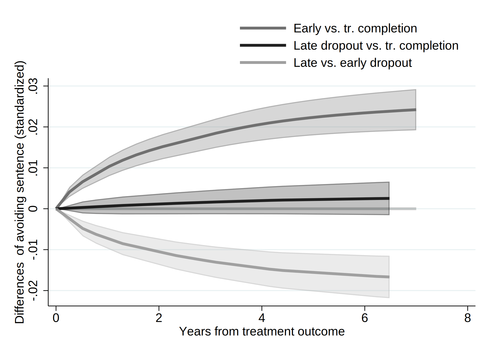
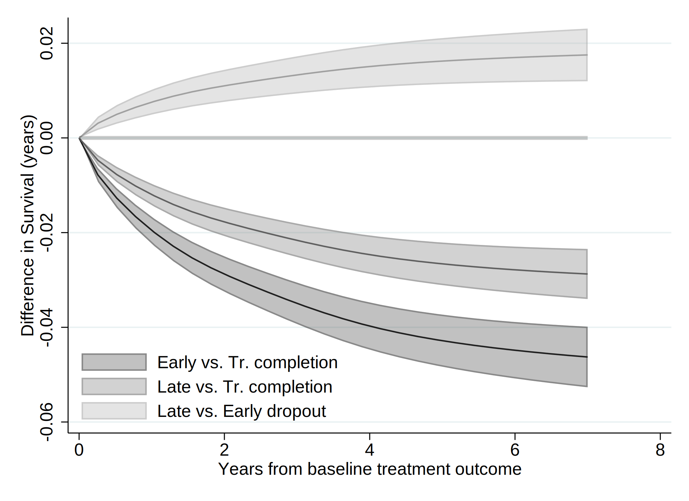
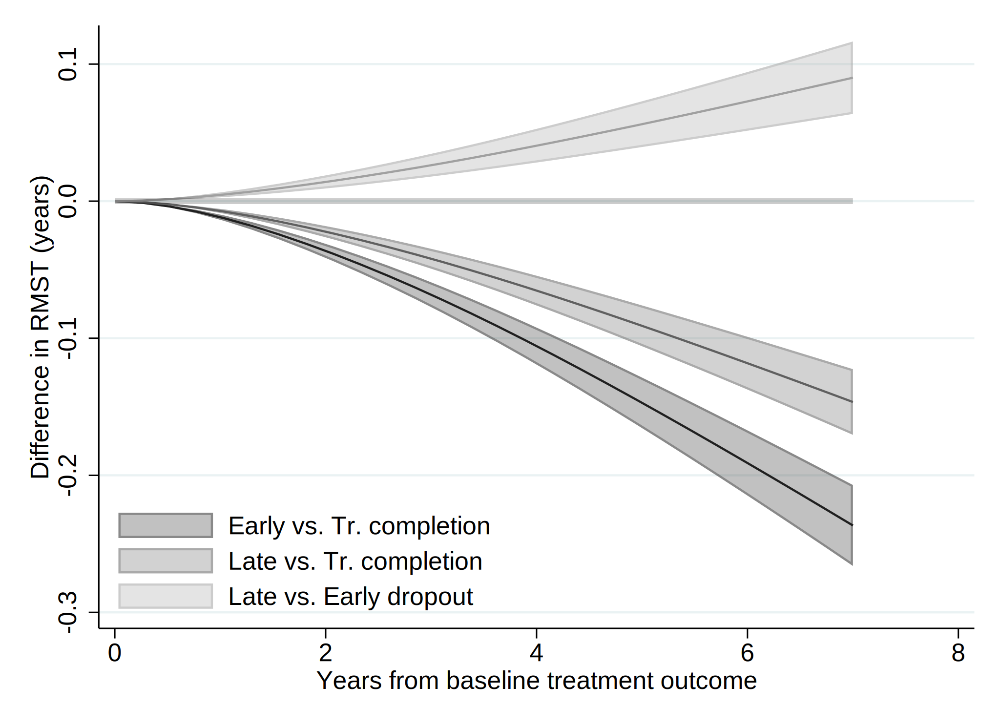

. clear all
. cap noi which tabout
C:\Users\CISS Fondecyt\ado\plus\t\tabout.ado
*! 2.0.8 Ian Watson 15mar2019
*! tabout version 3 (beta) available at: http://tabout.net.au
. if _rc==111 {
. cap noi ssc install tabout
. }
. cap noi which pathutil
C:\Users\CISS Fondecyt\ado\plus\p\pathutil.ado
*! version 2.2.0 19nov2020 daniel klein
. if _rc==111 {
. cap noi net install pathutil, from("http://fmwww.bc.edu/repec/bocode/p/")
. }
. cap noi which pathutil
C:\Users\CISS Fondecyt\ado\plus\p\pathutil.ado
*! version 2.2.0 19nov2020 daniel klein
. if _rc==111 {
. ssc install dirtools
. }
. cap noi which project
C:\Users\CISS Fondecyt\ado\plus\p\project.ado
*! version 1.3.1 22dec2013 picard@netbox.com
. if _rc==111 {
. ssc install project
. }
. cap noi which stipw
C:\Users\CISS Fondecyt\ado\plus\s\stipw.ado
*! Version 1.0.0 17Jan2022
. if _rc==111 {
. ssc install stipw
. }
. cap noi which stpm2
C:\Users\CISS Fondecyt\ado\plus\s\stpm2.ado
*! version 1.7.5 May2021
. if _rc==111 {
. ssc install stpm2
. }
. cap noi which rcsgen
C:\Users\CISS Fondecyt\ado\plus\r\rcsgen.ado
*! version 1.5.9 13FEB2022
. if _rc==111 {
. ssc install rcsgen
. }
. cap noi which matselrc
C:\Users\CISS Fondecyt\ado\plus\m\matselrc.ado
*! NJC 1.1.0 20 Apr 2000 (STB-56: dm79)
. if _rc==111 {
. cap noi net install dm79, from(http://www.stata.com/stb/stb56)
. }
. cap noi which stpm2_standsurv
C:\Users\CISS Fondecyt\ado\plus\s\stpm2_standsurv.ado
*! version 1.1.2 12Jun2018
. if _rc==111 {
. cap noi net install stpm2_standsurv.pkg, from(http://fmwww.bc.edu/RePEc/bocode/s)
. }
. cap noi which fs
C:\Users\CISS Fondecyt\ado\plus\f\fs.ado
*! NJC 1.0.5 23 November 2006
. if _rc==111 {
. ssc install fs
. }
. cap noi which mkspline2
C:\Users\CISS Fondecyt\ado\plus\m\mkspline2.ado
*! version 1.0.0 MLB 04Apr2009
. if _rc==111 {
. ssc install postrcspline
. }
. cap noi which estwrite
C:\Users\CISS Fondecyt\ado\plus\e\estwrite.ado
*! version 1.2.4 04sep2009
*! version 1.0.1 15may2007 (renamed from -eststo- to -estwrite-; -append- added)
*! version 1.0.0 29apr2005 Ben Jann (ETH Zurich)
. if _rc==111 {
. ssc install estwrite
. }
.
. cap noi ssc install moremata
checking moremata consistency and verifying not already installed...
the following files already exist and are different:
C:\Users\CISS Fondecyt\ado\plus\l\lmoremata.mlib
C:\Users\CISS Fondecyt\ado\plus\l\lmoremata10.mlib
C:\Users\CISS Fondecyt\ado\plus\l\lmoremata11.mlib
C:\Users\CISS Fondecyt\ado\plus\l\lmoremata14.mlib
C:\Users\CISS Fondecyt\ado\plus\m\moremata.hlp
C:\Users\CISS Fondecyt\ado\plus\m\moremata_source.hlp
C:\Users\CISS Fondecyt\ado\plus\m\moremata11_source.hlp
C:\Users\CISS Fondecyt\ado\plus\m\mf_mm_quantile.hlp
C:\Users\CISS Fondecyt\ado\plus\m\mf_mm_ipolate.hlp
C:\Users\CISS Fondecyt\ado\plus\m\mf_mm_collapse.hlp
C:\Users\CISS Fondecyt\ado\plus\m\mf_mm_ebal.sthlp
C:\Users\CISS Fondecyt\ado\plus\m\mf_mm_density.sthlp
C:\Users\CISS Fondecyt\ado\plus\m\mf_mm_hl.hlp
C:\Users\CISS Fondecyt\ado\plus\m\mf_mm_mloc.hlp
no files installed or copied
(no action taken)
Date created: 08:06:14 3 Apr 2023.
Get the folder
C:\Users\CISS Fondecyt\Mi unidad\Alvacast\SISTRAT 2022 (github)
Fecha: 3 Apr 2023, considerando un SO Windows para el usuario: CISS Fondecyt
Path data= ;
Tiempo: 3 Apr 2023, considerando un SO Windows
The file is located and named as: C:\Users\CISS Fondecyt\Mi unidad\Alvacast\SISTRAT 2022 (github)fiscalia_mariel_feb_2023_match_SENDA_miss_pris2.dta
=============================================================================
=============================================================================
We open the files
. use "fiscalia_mariel_feb_2023_match_SENDA_miss_pris2.dta", clear
.
. *b) select 10% of the data
. /*
> set seed 2125
> sample 10
> */
.
.
. fs mariel_ags_*.do
mariel_ags_b.do mariel_ags_b_m1.do mariel_ags_b_m2.do
. di "`r(dofile)'"
.
. *tostring tr_modality, gen(tr_modality_str)
.
. cap noi encode tr_modality_str, gen(newtr_modality)
variable tr_modality_str not found
. cap confirm variable newtr_modality
. if !_rc {
. cap noi drop tr_modality
. cap noi rename newtr_modality tr_modality
. }
.
. cap noi encode condicion_ocupacional_cor, gen(newcondicion_ocupacional_cor)
not possible with numeric variable
. cap confirm variable newcondicion_ocupacional_cor
. if !_rc {
. cap noi drop condicion_ocupacional_cor
. cap noi rename newcondicion_ocupacional_cor condicion_ocupacional_cor
. }
.
. cap noi encode tipo_centro, gen(newtipo_centro)
variable tipo_centro not found
. cap confirm variable newtipo_centro
. if !_rc {
. cap noi drop tipo_centro
. cap noi rename newtipo_centro tipo_centro
. }
.
. cap noi encode sus_ini_mod_mvv, gen(newsus_ini_mod_mvv)
. cap confirm variable newsus_ini_mod_mvv
. if !_rc {
. cap noi drop sus_ini_mod_mvv
. cap noi rename newsus_ini_mod_mvv sus_ini_mod_mvv
. }
.
. cap noi encode dg_trs_cons_sus_or, gen(newdg_trs_cons_sus_or)
. cap confirm variable newdg_trs_cons_sus_or
. if !_rc {
. cap noi drop dg_trs_cons_sus_or
. cap noi rename newdg_trs_cons_sus_or dg_trs_cons_sus_or
. }
.
. cap noi encode con_quien_vive_joel, gen(newcon_quien_vive_joel)
. cap confirm variable newcon_quien_vive_joel
. if !_rc {
. cap noi drop con_quien_vive_joel
. cap noi rename newcon_quien_vive_joel con_quien_vive_joel
. }
.
.
. *order and encode
. cap noi decode freq_cons_sus_prin, gen(str_freq_cons_sus_prin)
. cap confirm variable str_freq_cons_sus_prin
. if !_rc {
. cap noi drop freq_cons_sus_prin
. label def freq_cons_sus_prin2 1 "Less than 1 day a week" 2 "1 day a week or more" 3 "2 to 3 days a week" 4 "4 to 6 days a week" 5 "Daily"
. encode str_freq_cons_sus_prin, gen(freq_cons_sus_prin) label (freq_cons_sus_prin2)
. }
. cap noi decode dg_trs_cons_sus_or, gen(str_dg_trs_cons_sus_or)
. cap confirm variable str_dg_trs_cons_sus_or
. if !_rc {
. cap noi drop dg_trs_cons_sus_or
. cap label def dg_trs_cons_sus_or2 1 "Hazardous consumption" 2 "Drug dependence"
. encode str_dg_trs_cons_sus_or, gen(dg_trs_cons_sus_or) label (dg_trs_cons_sus_or2)
. }
. cap noi encode dg_cie_10_rec, gen(newdg_cie_10_rec)
. cap confirm variable newdg_cie_10_rec
. if !_rc {
. cap noi drop dg_cie_10_rec
. cap noi rename newdg_cie_10_rec dg_cie_10_rec
. }
. cap noi encode fis_comorbidity_icd_10, gen(newfis_comorbidity_icd_10)
. cap confirm variable newfis_comorbidity_icd_10
. if !_rc {
. cap noi drop fis_comorbidity_icd_10
. cap noi rename newfis_comorbidity_icd_10 fis_comorbidity_icd_10
. }
.
. cap noi encode escolaridad_rec, gen(esc_rec)
not possible with numeric variable
. cap noi encode sex, generate(sex_enc)
. cap noi encode sus_principal_mod, gen(sus_prin_mod)
not possible with numeric variable
. cap noi encode freq_cons_sus_prin, gen(fr_sus_prin)
not possible with numeric variable
. cap noi encode compromiso_biopsicosocial, gen(comp_biosoc)
variable compromiso_biopsicosocial not found
. cap noi encode tenencia_de_la_vivienda_mod, gen(ten_viv)
not possible with numeric variable
. *encode dg_cie_10_rec, generate(dg_cie_10_mental_h) *already numeric
. cap noi encode dg_trs_cons_sus_or, gen(sud_severity_icd10)
not possible with numeric variable
. cap noi encode macrozona, gen(macrozone)
not possible with numeric variable
.
. /*
> *2023-02-28, not done in R
> cap noi recode numero_de_hijos_mod (0=0 "No children") (1/10=1 "Children"), gen(newnumero_de_hijos_mod)
> cap confirm variable newnumero_de_hijos_mod
> if !_rc {
> drop numero_de_hijos_mod
> cap noi rename newnumero_de_hijos_mod numero_de_hijos_mod
> }
> */
.
. *same for condemnatory sentence
. mkspline2 rc_x = edad_al_ing_1, cubic nknots(4) displayknots
| knot1 knot2 knot3 knot4
-------------+--------------------------------------------
edad_al_in~1 | 21.18685 29.99178 38.92615 56.32477
.
. *not necessary: 2023-02-28
. *gen motivodeegreso_mod_imp_rec3 = 1
. *replace motivodeegreso_mod_imp_rec3 = 2 if strpos(motivodeegreso_mod_imp_rec,"Early")>0
. *replace motivodeegreso_mod_imp_rec3 = 3 if strpos(motivodeegreso_mod_imp_rec,"Late")>0
.
. *encode policonsumo, generate(policon) *already numeric
. // Generate a restricted cubic spline variable for a variable "x" with 4 knots
. *https://chat.openai.com/chat/4a9396cd-2caa-4a2e-b5f4-ed2c2d0779b3
. *https://www.stata.com/meeting/nordic-and-baltic15/abstracts/materials/sweden15_oskarsson.pdf
. *mkspline xspline = edad_al_ing_1, cubic nknots(4)
. *gen rcs_x = xspline1*xspline2 xspline3 xspline4
.
. *https://www.statalist.org/forums/forum/general-stata-discussion/general/1638622-comparing-cox-proportional-hazard-linear-and-non-linear-restricted-
> cubic-spline-models-using-likelihood-ratio-test
.
=============================================================================
=============================================================================
Reset-time
. *if missing offender_d (status) , means that there was a record and the time is the time of offense
.
. *set the indicator
. gen event=0
. replace event=1 if !missing(offender_d)
(5,144 real changes made)
. *replace event=1 if !missing(sex)
.
. *correct time to event if _st=0
. gen diff= age_offending_imp-edad_al_egres_imp
. gen diffc= cond(diff<0.001, 0.001, diff)
. drop diff
. rename diffc diff
. lab var diff "Time to offense leading to condemnatory sentence"
.
. *age time
. *stset age_offending_imp, fail(event ==1) enter(edad_al_egres_imp)
. *reset time
. stset diff, failure(event ==1)
failure event: event == 1
obs. time interval: (0, diff]
exit on or before: failure
------------------------------------------------------------------------------
70,863 total observations
0 exclusions
------------------------------------------------------------------------------
70,863 observations remaining, representing
5,144 failures in single-record/single-failure data
302,812.79 total analysis time at risk and under observation
at risk from t = 0
earliest observed entry t = 0
last observed exit t = 10.75828
.
. stdescribe, weight
failure _d: event == 1
analysis time _t: diff
|-------------- per subject --------------|
Category total mean min median max
------------------------------------------------------------------------------
no. of subjects 70863
no. of records 70863 1 1 1 1
(first) entry time 0 0 0 0
(final) exit time 4.273214 .001 3.964384 10.75828
subjects with gap 0
time on gap if gap 0
time at risk 302812.79 4.273214 .001 3.964384 10.75828
failures 5144 .0725908 0 0 1
------------------------------------------------------------------------------
We calculate the incidence rate.
. stsum, by (motivodeegreso_mod_imp_rec)
failure _d: event == 1
analysis time _t: diff
| Incidence Number of |------ Survival time -----|
motivo~c | Time at risk rate subjects 25% 50% 75%
---------+---------------------------------------------------------------------
Treatmen | 76,638.6094 .008664 19278 . . .
Treatmen | 65,879.5092 .0259717 15797 . . .
Treatmen | 160,294.67 .0172744 35788 . . .
---------+---------------------------------------------------------------------
Total | 302,812.789 .0169874 70863 . . .
. *Micki Hill & Paul C Lambert & Michael J Crowther, 2021. "Introducing stipw: inverse probability weighted parametric survival models," London Stata
> Conference 2021 15, Stata Users Group.
. *https://view.officeapps.live.com/op/view.aspx?src=http%3A%2F%2Ffmwww.bc.edu%2Frepec%2Fusug2021%2Fusug21_hill.pptx&wdOrigin=BROWSELINK
.
. *Treatment variable should be a binary variable with values 0 and 1.
. gen motivodeegreso_mod_imp_rec2 = 0
. replace motivodeegreso_mod_imp_rec2 = 1 if motivodeegreso_mod_imp_rec==2
(15,797 real changes made)
. replace motivodeegreso_mod_imp_rec2 = 1 if motivodeegreso_mod_imp_rec==3
(35,788 real changes made)
.
. recode motivodeegreso_mod_imp_rec2 (0=1 "Tr Completion") (1=0 "Tr Non-completion (Late & Early)"), gen(caus_disch_mod_imp_rec)
(70863 differences between motivodeegreso_mod_imp_rec2 and caus_disch_mod_imp_rec)
.
. cap noi gen motegr_dum3= motivodeegreso_mod_imp_rec2
. replace motegr_dum3 = 0 if motivodeegreso_mod_imp_rec==2
(15,797 real changes made)
. cap noi gen motegr_dum2= motivodeegreso_mod_imp_rec2
. replace motegr_dum2 = 0 if motivodeegreso_mod_imp_rec==3
(35,788 real changes made)
. lab var motegr_dum3 "Baseline treatment outcome(dich, 1= Late Dropout)"
. lab var motegr_dum2 "Baseline treatment outcome(dich, 1= Early Dropout)"
. lab var caus_disch_mod_imp_rec "Baseline treatment outcome(dich)"
.
.
. *Factor variables not allowed for tvc() option. Create your own dummy varibles.
. gen motivodeegreso_mod_imp_rec_earl = 1
. replace motivodeegreso_mod_imp_rec_earl = 0 if motivodeegreso_mod_imp_rec==1
(19,278 real changes made)
. replace motivodeegreso_mod_imp_rec_earl = 0 if motivodeegreso_mod_imp_rec==3
(35,788 real changes made)
.
. gen motivodeegreso_mod_imp_rec_late = 1
. replace motivodeegreso_mod_imp_rec_late = 0 if motivodeegreso_mod_imp_rec==1
(19,278 real changes made)
. replace motivodeegreso_mod_imp_rec_late = 0 if motivodeegreso_mod_imp_rec==2
(15,797 real changes made)
.
. *recode motivodeegreso_mod_imp_rec_earl (1=1 "Early dropout") (0=0 "Tr. comp & Late dropout"), gen(newmotivodeegreso_mod_imp_rec_e)
. *recode motivodeegreso_mod_imp_rec_late (1=1 "Late dropout") (0=0 "Tr. comp & Early dropout"), gen(newmotivodeegreso_mod_imp_rec_l)
.
. lab var motivodeegreso_mod_imp_rec_earl "Baseline treatment outcome- Early dropout(dich)"
. lab var motivodeegreso_mod_imp_rec_late "Baseline treatment outcome- Late dropout(dich)"
.
. cap noi rename motivodeegreso_mod_imp_rec_late mot_egr_late
. cap noi rename motivodeegreso_mod_imp_rec_earl mot_egr_early
=============================================================================
=============================================================================
We generated a graph with every type of treatment and the Nelson-Aalen estimate.
. sts graph, na by (motivodeegreso_mod_imp_rec) ci ///
> title("Comission of an offense (imprisonment)") ///
> subtitle("Nelson-Aalen Cum Hazards w/ Confidence Intervals 95%") ///
> risktable(, size(*.5) order(1 "Tr Completion" 2 "Early Disch" 3 "Late Disch")) ///
> ytitle("Cum. Hazards") ylabel(#8) ///
> xtitle("Years since tr. outcome") xlabel(#8) ///
> note("Source: nDP, SENDA's SUD Treatments & POs Office Data period 2010-2019 ") ///
> legend(rows(3)) ///
> legend(cols(4)) ///
> graphregion(color(white) lwidth(large)) bgcolor(white) ///
> plotregion(fcolor(white)) graphregion(fcolor(white) ) /// //text(.5 1 "IR = <0.001") ///
> legend(order(1 "95CI Tr Completion" 2 "Tr Completion" 3 "95CI Early Tr Disch" 4 "Early Tr Disch " 5 "95CI Late Tr Disch" 6 "Late Tr Disch" )size(*.5
> )region(lstyle(none)) region(c(none)) nobox)
failure _d: event == 1
analysis time _t: diff
(note: named style large not found in class linewidth, default attributes used)
(note: linewidth not found in scheme, default attributes used)
(note: named style large not found in class linewidth, default attributes used)
(note: linewidth not found in scheme, default attributes used)
. graph save "`c(pwd)'\_figs\tto_2023_pris_m2.gph", replace
(file C:\Users\CISS Fondecyt\Mi unidad\Alvacast\SISTRAT 2022 (github)\_figs\tto_2023_pris_m2.gph saved)
=============================================================================
=============================================================================
. /*
> vars_cov<-c("motivodeegreso_mod_imp_rec", "tr_modality", "edad_al_ing_1", "sex", "edad_ini_cons", "escolaridad_rec", "sus_principal_mod", "freq_cons
> _sus_prin", "condicion_ocupacional_corr", "policonsumo", "num_hijos_mod_joel_bin", "tenencia_de_la_vivienda_mod", "macrozona", "n_off_vio", "n_off_a
> cq", "n_off_sud", "n_off_oth", "dg_cie_10_rec", "dg_trs_cons_sus_or", "clas_r", "porc_pobr", "sus_ini_mod_mvv", "ano_nac_corr", "con_quien_vive_joe
> l", "fis_comorbidity_icd_10")
> */
. global covs "i.motivodeegreso_mod_imp_rec i.tr_modality i.sex_enc edad_ini_cons i.escolaridad_rec i.sus_principal_mod i.freq_cons_sus_prin i.condici
> on_ocupacional_cor i.policonsumo i.num_hijos_mod_joel_bin i.tenencia_de_la_vivienda_mod i.macrozona i.n_off_vio i.n_off_acq i.n_off_sud i.n_off_oth
> i.dg_cie_10_rec i.dg_trs_cons_sus_or i.clas_r porc_pobr i.sus_ini_mod_mvv ano_nac_corr i.con_quien_vive_joel i.fis_comorbidity_icd_10"
. // VERIFY FIRST SPLINE VARIABLE IS THE ORIGINAL VARIABLE
. assert float(edad_al_ing_1) == float(rc_x1)
.
. // MODEL WITH FULL SPLINE
. qui noi stcox $covs rc*
failure _d: event == 1
analysis time _t: diff
Iteration 0: log likelihood = -55523.635
Iteration 1: log likelihood = -53065.833
Iteration 2: log likelihood = -52550.787
Iteration 3: log likelihood = -52548.561
Iteration 4: log likelihood = -52548.559
Refining estimates:
Iteration 0: log likelihood = -52548.559
Cox regression -- Breslow method for ties
No. of subjects = 70,863 Number of obs = 70,863
No. of failures = 5,144
Time at risk = 302812.7888
LR chi2(49) = 5950.15
Log likelihood = -52548.559 Prob > chi2 = 0.0000
-------------------------------------------------------------------------------------------------------------
_t | Haz. Ratio Std. Err. z P>|z| [95% Conf. Interval]
--------------------------------------------+----------------------------------------------------------------
motivodeegreso_mod_imp_rec |
Treatment non-completion (Early) | 1.979571 .0939763 14.38 0.000 1.80369 2.172602
Treatment non-completion (Late) | 1.590439 .0705059 10.47 0.000 1.458083 1.734809
|
tr_modality |
Residential | 1.144464 .0426767 3.62 0.000 1.063803 1.231242
|
sex_enc |
Women | .5890555 .0254921 -12.23 0.000 .5411523 .6411992
edad_ini_cons | .9755647 .0040787 -5.92 0.000 .9676033 .9835917
|
escolaridad_rec |
2-Completed high school or less | .8851337 .0274167 -3.94 0.000 .8329965 .9405341
1-More than high school | .6466577 .035739 -7.89 0.000 .5802711 .7206393
|
sus_principal_mod |
Cocaine hydrochloride | 1.188483 .0709374 2.89 0.004 1.057273 1.335977
Cocaine paste | 1.714314 .0823377 11.22 0.000 1.560298 1.883533
Marijuana | 1.141716 .0793755 1.91 0.057 .9962768 1.308387
Other | 1.354759 .1839526 2.24 0.025 1.038206 1.767829
|
freq_cons_sus_prin |
1 day a week or more | .966053 .096199 -0.35 0.729 .794765 1.174257
2 to 3 days a week | .9941676 .0797972 -0.07 0.942 .8494497 1.163541
4 to 6 days a week | 1.043802 .0867255 0.52 0.606 .8869421 1.228404
Daily | 1.086648 .0864712 1.04 0.296 .9297225 1.270059
|
condicion_ocupacional_corr |
Inactive | 1.078862 .0665934 1.23 0.219 .9559275 1.217606
Looking for a job for the first time | 1.160216 .2839732 0.61 0.544 .7181245 1.874468
No activity | 1.237407 .0810021 3.25 0.001 1.088409 1.406803
Not seeking for work | 1.310855 .1347052 2.63 0.008 1.071726 1.603338
Unemployed | 1.212297 .042096 5.54 0.000 1.132535 1.297676
|
1.policonsumo | 1.011322 .043443 0.26 0.793 .9296613 1.100156
1.num_hijos_mod_joel_bin | 1.146699 .0398377 3.94 0.000 1.071218 1.227499
|
tenencia_de_la_vivienda_mod |
Others | 1.126595 .1401337 0.96 0.338 .8828551 1.437627
Owner/Transferred dwellings/Pays Dividends | 1.040145 .1116147 0.37 0.714 .8428575 1.283612
Renting | 1.062341 .1148375 0.56 0.576 .8595092 1.313039
Stays temporarily with a relative | 1.038298 .1109065 0.35 0.725 .842171 1.280099
|
macrozona |
North | 1.429091 .0526643 9.69 0.000 1.329511 1.53613
South | 1.565566 .087705 8.00 0.000 1.402769 1.747257
|
n_off_vio |
1 | 1.459 .0503085 10.96 0.000 1.363655 1.561011
|
n_off_acq |
1 | 2.808153 .0875023 33.14 0.000 2.641784 2.985
|
n_off_sud |
1 | 1.381041 .0457735 9.74 0.000 1.294178 1.473733
|
n_off_oth |
1 | 1.70692 .0566634 16.11 0.000 1.599398 1.821671
|
dg_cie_10_rec |
Without psychiatric comorbidity | .9213697 .0269221 -2.80 0.005 .8700858 .9756763
|
dg_trs_cons_sus_or |
Drug dependence | 1.034333 .0388401 0.90 0.369 .9609418 1.11333
|
clas_r |
Mixta | .9405506 .0521972 -1.10 0.269 .8436136 1.048626
Rural | .8699536 .0542181 -2.24 0.025 .7699219 .9829819
|
porc_pobr | 1.704928 .3675827 2.47 0.013 1.117344 2.601508
|
sus_ini_mod_mvv |
Cocaine hydrochloride | 1.125873 .0984104 1.36 0.175 .9486091 1.336261
Cocaine paste | 1.280244 .074445 4.25 0.000 1.142342 1.434793
Marijuana | 1.152412 .0374747 4.36 0.000 1.081254 1.228252
Other | 1.414673 .1171145 4.19 0.000 1.202788 1.663885
|
ano_nac_corr | .8535674 .006714 -20.13 0.000 .8405091 .8668285
|
con_quien_vive_joel |
Family of origin | .8548462 .0471067 -2.85 0.004 .7673298 .952344
Others | 1.067454 .0691744 1.01 0.314 .940131 1.212019
With couple/children | .9357781 .0515285 -1.21 0.228 .8400432 1.042423
|
fis_comorbidity_icd_10 |
Without physical comorbidity | 1.257614 .0915803 3.15 0.002 1.090341 1.450549
rc_x1 | .850899 .0086884 -15.81 0.000 .8340393 .8680996
rc_x2 | .8831366 .0306258 -3.58 0.000 .8251056 .945249
rc_x3 | 1.293343 .1194018 2.79 0.005 1.079271 1.549876
-------------------------------------------------------------------------------------------------------------
. estat ic
Akaike's information criterion and Bayesian information criterion
-----------------------------------------------------------------------------
Model | N ll(null) ll(model) df AIC BIC
-------------+---------------------------------------------------------------
. | 70,863 -55523.64 -52548.56 49 105195.1 105644.4
-----------------------------------------------------------------------------
Note: BIC uses N = number of observations. See [R] BIC note.
. estimates store full_spline
. scalar ll_1= e(ll)
. // MODEL WITH ONLY LINEAR TERM
. qui noi stcox $covs rc_x1
failure _d: event == 1
analysis time _t: diff
Iteration 0: log likelihood = -55523.635
Iteration 1: log likelihood = -53051.632
Iteration 2: log likelihood = -52564.992
Iteration 3: log likelihood = -52563.706
Iteration 4: log likelihood = -52563.706
Refining estimates:
Iteration 0: log likelihood = -52563.706
Cox regression -- Breslow method for ties
No. of subjects = 70,863 Number of obs = 70,863
No. of failures = 5,144
Time at risk = 302812.7888
LR chi2(47) = 5919.86
Log likelihood = -52563.706 Prob > chi2 = 0.0000
-------------------------------------------------------------------------------------------------------------
_t | Haz. Ratio Std. Err. z P>|z| [95% Conf. Interval]
--------------------------------------------+----------------------------------------------------------------
motivodeegreso_mod_imp_rec |
Treatment non-completion (Early) | 1.980858 .0940829 14.39 0.000 1.804782 2.174113
Treatment non-completion (Late) | 1.592285 .0705901 10.49 0.000 1.459772 1.736828
|
tr_modality |
Residential | 1.138305 .0424249 3.48 0.001 1.058118 1.224569
|
sex_enc |
Women | .5880041 .0254161 -12.29 0.000 .5402411 .6399898
edad_ini_cons | .9755132 .0040394 -5.99 0.000 .9676282 .9834624
|
escolaridad_rec |
2-Completed high school or less | .8989855 .0277328 -3.45 0.001 .8462409 .9550176
1-More than high school | .6673738 .0366874 -7.36 0.000 .5992062 .7432965
|
sus_principal_mod |
Cocaine hydrochloride | 1.213234 .0723854 3.24 0.001 1.079342 1.363735
Cocaine paste | 1.762643 .0844472 11.83 0.000 1.604663 1.936177
Marijuana | 1.144077 .0796574 1.93 0.053 .9981353 1.311356
Other | 1.3552 .1842621 2.24 0.025 1.038169 1.769043
|
freq_cons_sus_prin |
1 day a week or more | .9632011 .0959174 -0.38 0.707 .792415 1.170796
2 to 3 days a week | .9930222 .0797134 -0.09 0.930 .8484573 1.162219
4 to 6 days a week | 1.039384 .0863666 0.46 0.642 .8831743 1.223224
Daily | 1.083558 .0862348 1.01 0.313 .9270631 1.26647
|
condicion_ocupacional_corr |
Inactive | 1.055981 .0649559 0.89 0.376 .9360452 1.191285
Looking for a job for the first time | 1.111141 .2718491 0.43 0.667 .6878853 1.794825
No activity | 1.215987 .0795211 2.99 0.003 1.069703 1.382275
Not seeking for work | 1.292703 .1327946 2.50 0.012 1.056959 1.581028
Unemployed | 1.206163 .0418784 5.40 0.000 1.126813 1.291101
|
1.policonsumo | 1.021195 .0438678 0.49 0.625 .9387354 1.110897
1.num_hijos_mod_joel_bin | 1.175673 .0405702 4.69 0.000 1.098786 1.25794
|
tenencia_de_la_vivienda_mod |
Others | 1.123164 .1397476 0.93 0.351 .8801037 1.43335
Owner/Transferred dwellings/Pays Dividends | 1.027591 .1102674 0.25 0.800 .832685 1.268119
Renting | 1.065933 .1152317 0.59 0.555 .8624057 1.317493
Stays temporarily with a relative | 1.038209 .1109099 0.35 0.726 .8420785 1.280021
|
macrozona |
North | 1.416662 .0521591 9.46 0.000 1.318033 1.52267
South | 1.56957 .0878925 8.05 0.000 1.406421 1.751645
|
n_off_vio |
1 | 1.455845 .0502082 10.89 0.000 1.360691 1.557653
|
n_off_acq |
1 | 2.807477 .0875589 33.10 0.000 2.641005 2.984443
|
n_off_sud |
1 | 1.389102 .0460046 9.92 0.000 1.301799 1.48226
|
n_off_oth |
1 | 1.710107 .0567449 16.17 0.000 1.602428 1.825021
|
dg_cie_10_rec |
Without psychiatric comorbidity | .9182841 .0268192 -2.92 0.004 .8671957 .9723823
|
dg_trs_cons_sus_or |
Drug dependence | 1.03932 .0390055 1.03 0.304 .9656147 1.118651
|
clas_r |
Mixta | .9448224 .0524179 -1.02 0.306 .8474738 1.053353
Rural | .8737376 .0544544 -2.17 0.030 .7732701 .9872584
|
porc_pobr | 1.688358 .3636825 2.43 0.015 1.106906 2.575245
|
sus_ini_mod_mvv |
Cocaine hydrochloride | 1.128021 .0985979 1.38 0.168 .9504197 1.33881
Cocaine paste | 1.286363 .0748026 4.33 0.000 1.147799 1.441655
Marijuana | 1.147284 .0373298 4.22 0.000 1.076404 1.222833
Other | 1.423738 .117915 4.27 0.000 1.210411 1.674662
|
ano_nac_corr | .8530926 .0067071 -20.21 0.000 .8400477 .8663401
|
con_quien_vive_joel |
Family of origin | .852581 .0470403 -2.89 0.004 .7651939 .949948
Others | 1.066874 .0691603 1.00 0.318 .9395797 1.211413
With couple/children | .942974 .0519041 -1.07 0.286 .8465392 1.050394
|
fis_comorbidity_icd_10 |
Without physical comorbidity | 1.278291 .0930279 3.37 0.001 1.108366 1.474266
rc_x1 | .8256879 .0066446 -23.80 0.000 .8127669 .8388143
-------------------------------------------------------------------------------------------------------------
. estat ic
Akaike's information criterion and Bayesian information criterion
-----------------------------------------------------------------------------
Model | N ll(null) ll(model) df AIC BIC
-------------+---------------------------------------------------------------
. | 70,863 -55523.64 -52563.71 47 105221.4 105652.3
-----------------------------------------------------------------------------
Note: BIC uses N = number of observations. See [R] BIC note.
. scalar ll_2= e(ll)
. estimates store linear_term
.
. lrtest full_spline linear_term
Likelihood-ratio test LR chi2(2) = 30.29
(Assumption: linear_term nested in full_spline) Prob > chi2 = 0.0000
.
. scalar ll_diff= round(`=scalar(ll_1)'-`=scalar(ll_2)',.01)
. di "Log-likelihood difference (spline - linear): `=scalar(ll_diff)'"
Log-likelihood difference (spline - linear): 15.15
.
. * the presence of censored observations makes it difficult to decide further among them. (This is partly due to the fact that both the Cox model and
> the parametric survival models assume that censoring is orthogonal to survival time, a mathematically handy assumption that is often demonstrably a
> nd seriously in error, and the actual data generation process for survival is often too unknown or too messy to simulate.) So in this context, relia
> nce on LR tests or IC statistics is a fallback position.
Log-likelihood difference (spline - linear): 15.15
Nevetheless, we chose the model with spline terms due to linearity over a better fit.
=============================================================================
=============================================================================
In view of nonproportional hazards, we explored different shapes of time-dependent effects and baseline hazards.
. *______________________________________________
. *______________________________________________
. * ADJUSTED ROYSTON PARMAR - NO STAGGERED ENTRY, BINARY TREATMENT (1-DROPOUT VS. 0-COMPLETION)
.
. /*
> vars_cov<-c("motivodeegreso_mod_imp_rec", "tr_modality", "edad_al_ing_1", "sex", "edad_ini_cons", "escolaridad_rec", "sus_principal_mod", "freq_cons
> _sus_prin", "condicion_ocupacional_corr", "policonsumo", "num_hijos_mod_joel_bin", "tenencia_de_la_vivienda_mod", "macrozona", "n_off_vio", "n_off_a
> cq", "n_off_sud", "n_off_oth", "dg_cie_10_rec", "dg_trs_cons_sus_or", "clas_r", "porc_pobr", "sus_ini_mod_mvv", "ano_nac_corr", "con_quien_vive_joe
> l", "fis_comorbidity_icd_10")
> */
.
. cap noi tab tr_modality, gen(tr_mod)
Treatment |
Modality | Freq. Percent Cum.
------------+-----------------------------------
Ambulatory | 60,449 85.30 85.30
Residential | 10,414 14.70 100.00
------------+-----------------------------------
Total | 70,863 100.00
. cap noi tab sex_enc, gen(sex_dum)
Sex | Freq. Percent Cum.
------------+-----------------------------------
Men | 54,048 76.27 76.27
Women | 16,815 23.73 100.00
------------+-----------------------------------
Total | 70,863 100.00
. cap noi tab escolaridad_rec, gen(esc)
Educational Attainment | Freq. Percent Cum.
-----------------------------------+-----------------------------------
3-Completed primary school or less | 20,562 29.02 29.02
2-Completed high school or less | 39,042 55.10 84.11
1-More than high school | 11,259 15.89 100.00
-----------------------------------+-----------------------------------
Total | 70,863 100.00
. cap noi tab sus_principal_mod, gen(sus_prin)
Primary Substance |
(admission to |
treatment) | Freq. Percent Cum.
----------------------+-----------------------------------
Alcohol | 23,863 33.67 33.67
Cocaine hydrochloride | 13,243 18.69 52.36
Cocaine paste | 27,791 39.22 91.58
Marijuana | 4,749 6.70 98.28
Other | 1,217 1.72 100.00
----------------------+-----------------------------------
Total | 70,863 100.00
. cap noi tab freq_cons_sus_prin, gen(fr_cons_sus_prin)
Frequency of Substance |
Use (Primary |
Substance) | Freq. Percent Cum.
-----------------------+-----------------------------------
Less than 1 day a week | 3,496 4.93 4.93
1 day a week or more | 4,780 6.75 11.68
2 to 3 days a week | 20,246 28.57 40.25
4 to 6 days a week | 11,735 16.56 56.81
Daily | 30,606 43.19 100.00
-----------------------+-----------------------------------
Total | 70,863 100.00
. cap noi tab condicion_ocupacional_cor, gen(cond_ocu)
Corrected Occupational Status (f) | Freq. Percent Cum.
-------------------------------------+-----------------------------------
Employed | 35,368 49.91 49.91
Inactive | 7,169 10.12 60.03
Looking for a job for the first time | 159 0.22 60.25
No activity | 3,558 5.02 65.27
Not seeking for work | 713 1.01 66.28
Unemployed | 23,896 33.72 100.00
-------------------------------------+-----------------------------------
Total | 70,863 100.00
. cap noi tab num_hijos_mod_joel_bin, gen(num_hij)
Number of |
Children |
(dichotomiz |
ed) | Freq. Percent Cum.
------------+-----------------------------------
0 | 16,526 23.32 23.32
1 | 54,337 76.68 100.00
------------+-----------------------------------
Total | 70,863 100.00
. cap noi tab tenencia_de_la_vivienda_mod, gen(tenviv)
Housing Situation (Tenure Status) | Freq. Percent Cum.
----------------------------------------+-----------------------------------
Illegal Settlement | 913 1.29 1.29
Others | 2,051 2.89 4.18
Owner/Transferred dwellings/Pays Divide | 25,623 36.16 40.34
Renting | 12,537 17.69 58.03
Stays temporarily with a relative | 29,739 41.97 100.00
----------------------------------------+-----------------------------------
Total | 70,863 100.00
. cap noi tab macrozona, gen(mzone)
Macro |
Administrat |
ive Zone in |
Chile | Freq. Percent Cum.
------------+-----------------------------------
Center | 53,697 75.78 75.78
North | 10,487 14.80 90.57
South | 6,679 9.43 100.00
------------+-----------------------------------
Total | 70,863 100.00
. cap noi tab clas_r, gen(rural)
Socioeconom |
ic |
Classificat |
ion | Freq. Percent Cum.
------------+-----------------------------------
Urbana | 58,277 82.24 82.24
Mixta | 6,835 9.65 91.88
Rural | 5,751 8.12 100.00
------------+-----------------------------------
Total | 70,863 100.00
. cap noi tab sus_ini_mod_mvv, gen(susini)
sus_ini_mod_mvv | Freq. Percent Cum.
----------------------+-----------------------------------
Alcohol | 39,870 56.26 56.26
Cocaine hydrochloride | 2,614 3.69 59.95
Cocaine paste | 3,335 4.71 64.66
Marijuana | 23,338 32.93 97.59
Other | 1,706 2.41 100.00
----------------------+-----------------------------------
Total | 70,863 100.00
. cap noi tab con_quien_vive_joel, gen(cohab)
con_quien_vive_joel | Freq. Percent Cum.
---------------------+-----------------------------------
Alone | 6,688 9.44 9.44
Family of origin | 29,340 41.40 50.84
Others | 6,109 8.62 59.46
With couple/children | 28,726 40.54 100.00
---------------------+-----------------------------------
Total | 70,863 100.00
. cap noi tab fis_comorbidity_icd_10, gen(fis_com)
fis_comorbidity_icd_10 | Freq. Percent Cum.
-----------------------------+-----------------------------------
One or more | 4,846 6.84 6.84
Without physical comorbidity | 66,017 93.16 100.00
-----------------------------+-----------------------------------
Total | 70,863 100.00
. cap noi tab dg_cie_10_rec, gen(psy_com)
dg_cie_10_rec | Freq. Percent Cum.
--------------------------------+-----------------------------------
With psychiatric comorbidity | 31,898 45.01 45.01
Without psychiatric comorbidity | 38,965 54.99 100.00
--------------------------------+-----------------------------------
Total | 70,863 100.00
. cap noi tab dg_trs_cons_sus_or, gen(dep)
dg_trs_cons_sus_or | Freq. Percent Cum.
----------------------+-----------------------------------
Hazardous consumption | 19,696 27.79 27.79
Drug dependence | 51,167 72.21 100.00
----------------------+-----------------------------------
Total | 70,863 100.00
.
. /*
> *NO LONGER USEFUL
> local varslab "dg_fis_anemia dg_fis_card dg_fis_in_study dg_fis_enf_som dg_fis_ets dg_fis_hep_alc dg_fis_hep_b dg_fis_hep_cro dg_fis_inf dg_fis_otr_
> cond_fis_ries_vit dg_fis_otr_cond_fis dg_fis_pat_buc dg_fis_pat_ges_intrau dg_fis_trau_sec"
> forvalues i = 1/14 {
> local v : word `i' of `varslab'
> di "`v'"
> gen `v'2= 0
> replace `v'2 =1 if `v'==2
> }
> */
.
. global covs_3b "mot_egr_early mot_egr_late i.tr_modality i.sex_enc edad_ini_cons i.escolaridad_rec i.sus_principal_mod i.freq_cons_sus_prin i.condic
> ion_ocupacional_cor i.policonsumo i.num_hijos_mod_joel_bin i.tenencia_de_la_vivienda_mod i.macrozona i.n_off_vio i.n_off_acq i.n_off_sud i.n_off_oth
> i.dg_cie_10_rec i.dg_trs_cons_sus_or i.clas_r porc_pobr i.sus_ini_mod_mvv ano_nac_corr i.con_quien_vive_joel i.fis_comorbidity_icd_10 rc_x1 rc_x2 r
> c_x3"
.
. *REALLY NEEDS DUMMY VARS
. global covs_3b_pre_dum "mot_egr_early mot_egr_late tr_mod2 sex_dum2 edad_ini_cons esc1 esc2 sus_prin2 sus_prin3 sus_prin4 sus_prin5 fr_cons_sus_prin
> 2 fr_cons_sus_prin3 fr_cons_sus_prin4 fr_cons_sus_prin5 cond_ocu2 cond_ocu3 cond_ocu4 cond_ocu5 cond_ocu6 policonsumo num_hij2 tenviv1 tenviv2 tenvi
> v4 tenviv5 mzone2 mzone3 n_off_vio n_off_acq n_off_sud n_off_oth psy_com2 dep2 rural2 rural3 porc_pobr susini2 susini3 susini4 susini5 ano_nac_corr
> cohab2 cohab3 cohab4 fis_com2 rc_x1 rc_x2 rc_x3"
.
. forvalues i=1/10 {
2. forvalues j=1/7 {
3. qui noi stpm2 $covs_3b_pre_dum , scale(hazard) df(`i') eform tvc(mot_egr_early mot_egr_late) dftvc(`j')
4. estimates store m_nostag_rp`i'_tvc_`j'
5. }
6. }
Iteration 0: log likelihood = -21967.683
Iteration 1: log likelihood = -21859.667
Iteration 2: log likelihood = -21858.326
Iteration 3: log likelihood = -21858.325
Log likelihood = -21858.325 Number of obs = 70,863
---------------------------------------------------------------------------------------
| exp(b) Std. Err. z P>|z| [95% Conf. Interval]
----------------------+----------------------------------------------------------------
xb |
mot_egr_early | 2.041026 .1021385 14.26 0.000 1.850342 2.25136
mot_egr_late | 1.645259 .0773905 10.58 0.000 1.500359 1.804154
tr_mod2 | 1.142372 .0426118 3.57 0.000 1.061835 1.229019
sex_dum2 | .5871646 .0254101 -12.30 0.000 .5394153 .6391407
edad_ini_cons | .9756793 .0040772 -5.89 0.000 .9677207 .9837032
esc1 | 1.551841 .0857608 7.95 0.000 1.392537 1.729371
esc2 | 1.37169 .0713096 6.08 0.000 1.238811 1.518823
sus_prin2 | 1.182803 .0705696 2.81 0.005 1.05227 1.329529
sus_prin3 | 1.711914 .0821592 11.20 0.000 1.558227 1.88076
sus_prin4 | 1.137237 .0790339 1.85 0.064 .9924196 1.303186
sus_prin5 | 1.344614 .1825642 2.18 0.029 1.030448 1.754563
fr_cons_sus_prin2 | .9661133 .0962075 -0.35 0.729 .7948106 1.174336
fr_cons_sus_prin3 | .9941806 .0798015 -0.07 0.942 .8494553 1.163563
fr_cons_sus_prin4 | 1.042875 .086652 0.51 0.613 .8861479 1.227321
fr_cons_sus_prin5 | 1.087606 .0865488 1.06 0.291 .9305406 1.271183
cond_ocu2 | 1.081214 .0667355 1.27 0.206 .9580172 1.220254
cond_ocu3 | 1.156854 .2831601 0.60 0.552 .7160313 1.869067
cond_ocu4 | 1.24507 .0815209 3.35 0.001 1.095119 1.415553
cond_ocu5 | 1.310226 .134634 2.63 0.009 1.071223 1.602553
cond_ocu6 | 1.2125 .0421021 5.55 0.000 1.132727 1.297891
policonsumo | 1.008012 .0432903 0.19 0.853 .9266375 1.096533
num_hij2 | 1.147554 .0398638 3.96 0.000 1.072023 1.228407
tenviv1 | .9590555 .1028885 -0.39 0.697 .7771877 1.183482
tenviv2 | 1.078039 .0812937 1.00 0.319 .9299211 1.249748
tenviv4 | 1.019697 .0450784 0.44 0.659 .9350641 1.111989
tenviv5 | .9960002 .0336593 -0.12 0.906 .9321666 1.064205
mzone2 | 1.430045 .0526789 9.71 0.000 1.330436 1.537113
mzone3 | 1.56962 .0879155 8.05 0.000 1.40643 1.751745
n_off_vio | 1.462314 .0505063 11.00 0.000 1.3666 1.564732
n_off_acq | 2.834407 .0885144 33.36 0.000 2.666125 3.013312
n_off_sud | 1.388295 .0460648 9.89 0.000 1.300883 1.481581
n_off_oth | 1.713405 .056991 16.19 0.000 1.605267 1.828826
psy_com2 | .9204724 .0268922 -2.84 0.005 .8692453 .9747184
dep2 | 1.034143 .0388239 0.89 0.371 .9607817 1.113106
rural2 | .9396059 .0521433 -1.12 0.262 .8427687 1.04757
rural3 | .8695976 .054184 -2.24 0.025 .7696275 .9825532
porc_pobr | 1.701567 .3668281 2.47 0.014 1.115179 2.59629
susini2 | 1.128795 .0986523 1.39 0.166 .9510939 1.339698
susini3 | 1.280875 .0744687 4.26 0.000 1.142928 1.435472
susini4 | 1.147426 .0372894 4.23 0.000 1.076619 1.22289
susini5 | 1.415781 .117198 4.20 0.000 1.203743 1.665169
ano_nac_corr | .873503 .0067687 -17.45 0.000 .8603368 .8868707
cohab2 | .8544602 .0470892 -2.85 0.004 .7669769 .9519221
cohab3 | 1.06655 .0691063 0.99 0.320 .9393521 1.210973
cohab4 | .9358089 .0515299 -1.20 0.228 .8400713 1.042457
fis_com2 | 1.257242 .0915512 3.14 0.002 1.090021 1.450115
rc_x1 | .8705467 .0088159 -13.69 0.000 .8534382 .8879981
rc_x2 | .8828256 .0306184 -3.59 0.000 .8248088 .9449232
rc_x3 | 1.295948 .1196462 2.81 0.005 1.081439 1.553007
_rcs1 | 2.135774 .0577316 28.07 0.000 2.025567 2.251977
_rcs_mot_egr_early1 | .9131458 .0278992 -2.97 0.003 .8600695 .9694976
_rcs_mot_egr_late1 | .9279682 .0272557 -2.55 0.011 .8760565 .982956
_cons | 2.4e+115 3.7e+116 17.04 0.000 1.3e+102 4.4e+128
---------------------------------------------------------------------------------------
Note: Estimates are transformed only in the first equation.
Iteration 0: log likelihood = -21855.276
Iteration 1: log likelihood = -21799.333
Iteration 2: log likelihood = -21798.7
Iteration 3: log likelihood = -21798.7
Log likelihood = -21798.7 Number of obs = 70,863
---------------------------------------------------------------------------------------
| exp(b) Std. Err. z P>|z| [95% Conf. Interval]
----------------------+----------------------------------------------------------------
xb |
mot_egr_early | 2.090644 .1049445 14.69 0.000 1.894751 2.30679
mot_egr_late | 1.674375 .0789208 10.94 0.000 1.526623 1.836427
tr_mod2 | 1.142559 .0426139 3.57 0.000 1.062017 1.229209
sex_dum2 | .5884746 .0254678 -12.25 0.000 .5406171 .6405686
edad_ini_cons | .9757563 .0040769 -5.87 0.000 .9677984 .9837796
esc1 | 1.549826 .0856564 7.93 0.000 1.390716 1.72714
esc2 | 1.371339 .0712932 6.07 0.000 1.23849 1.518438
sus_prin2 | 1.180429 .0704241 2.78 0.005 1.050165 1.326852
sus_prin3 | 1.708579 .0819911 11.16 0.000 1.555205 1.877078
sus_prin4 | 1.137561 .079054 1.85 0.064 .9927073 1.303552
sus_prin5 | 1.341322 .1821194 2.16 0.031 1.027922 1.750273
fr_cons_sus_prin2 | .9662253 .0962181 -0.35 0.730 .7949038 1.174471
fr_cons_sus_prin3 | .9947487 .0798452 -0.07 0.948 .8499438 1.164224
fr_cons_sus_prin4 | 1.042903 .0866509 0.51 0.613 .8861773 1.227346
fr_cons_sus_prin5 | 1.087264 .0865156 1.05 0.293 .9302577 1.270769
cond_ocu2 | 1.081576 .0667559 1.27 0.204 .9583407 1.220658
cond_ocu3 | 1.149294 .2813037 0.57 0.570 .7113593 1.856834
cond_ocu4 | 1.244541 .0814821 3.34 0.001 1.094662 1.414943
cond_ocu5 | 1.308149 .1344118 2.61 0.009 1.069539 1.599992
cond_ocu6 | 1.211632 .0420713 5.53 0.000 1.131917 1.296961
policonsumo | 1.009465 .0433491 0.22 0.826 .9279798 1.098106
num_hij2 | 1.147359 .0398598 3.96 0.000 1.071836 1.228204
tenviv1 | .9589767 .1028929 -0.39 0.696 .7771034 1.183416
tenviv2 | 1.07813 .0813034 1.00 0.318 .9299954 1.24986
tenviv4 | 1.020854 .045127 0.47 0.641 .9361295 1.113245
tenviv5 | .9969079 .0336895 -0.09 0.927 .9330169 1.065174
mzone2 | 1.427067 .0525702 9.65 0.000 1.327663 1.533914
mzone3 | 1.566061 .0876903 8.01 0.000 1.403287 1.747717
n_off_vio | 1.459557 .0504095 10.95 0.000 1.364027 1.561779
n_off_acq | 2.821151 .0881128 33.21 0.000 2.653633 2.999245
n_off_sud | 1.387563 .0460355 9.87 0.000 1.300207 1.48079
n_off_oth | 1.709431 .0568589 16.12 0.000 1.601544 1.824585
psy_com2 | .9209726 .0269077 -2.82 0.005 .869716 .97525
dep2 | 1.033977 .0388212 0.89 0.374 .960621 1.112935
rural2 | .9386987 .0520899 -1.14 0.254 .8419605 1.046552
rural3 | .8680602 .0540988 -2.27 0.023 .7682485 .9808397
porc_pobr | 1.73087 .3730967 2.55 0.011 1.134447 2.640856
susini2 | 1.127869 .0985777 1.38 0.169 .9503032 1.338613
susini3 | 1.279342 .0743731 4.24 0.000 1.141571 1.43374
susini4 | 1.146288 .0372501 4.20 0.000 1.075556 1.221672
susini5 | 1.413363 .1169891 4.18 0.000 1.201702 1.662305
ano_nac_corr | .8622448 .0067301 -18.99 0.000 .8491545 .8755368
cohab2 | .8548892 .0471091 -2.85 0.004 .7673685 .9523919
cohab3 | 1.067422 .0691687 1.01 0.314 .9401092 1.211975
cohab4 | .9358214 .0515313 -1.20 0.228 .8400812 1.042473
fis_com2 | 1.258215 .0916207 3.15 0.002 1.090868 1.451235
rc_x1 | .8594456 .0087384 -14.90 0.000 .8424883 .8767443
rc_x2 | .883081 .0306255 -3.59 0.000 .8250506 .9451929
rc_x3 | 1.294451 .1195053 2.80 0.005 1.080194 1.551207
_rcs1 | 2.119098 .0568759 27.98 0.000 2.010504 2.233556
_rcs_mot_egr_early1 | .9205755 .0280911 -2.71 0.007 .867132 .9773129
_rcs_mot_egr_early2 | 1.073775 .0124903 6.12 0.000 1.049571 1.098537
_rcs_mot_egr_late1 | .9471002 .027892 -1.85 0.065 .8939806 1.003376
_rcs_mot_egr_late2 | 1.089363 .0109967 8.48 0.000 1.068022 1.111131
_cons | 5.2e+126 8.1e+127 18.58 0.000 2.2e+113 1.2e+140
---------------------------------------------------------------------------------------
Note: Estimates are transformed only in the first equation.
Iteration 0: log likelihood = -21795.787
Iteration 1: log likelihood = -21784.611
Iteration 2: log likelihood = -21784.581
Iteration 3: log likelihood = -21784.581
Log likelihood = -21784.581 Number of obs = 70,863
---------------------------------------------------------------------------------------
| exp(b) Std. Err. z P>|z| [95% Conf. Interval]
----------------------+----------------------------------------------------------------
xb |
mot_egr_early | 2.101578 .1055825 14.78 0.000 1.904502 2.319047
mot_egr_late | 1.677734 .0791313 10.97 0.000 1.529593 1.840224
tr_mod2 | 1.142527 .0426089 3.57 0.000 1.061994 1.229166
sex_dum2 | .5888391 .0254819 -12.24 0.000 .540955 .6409618
edad_ini_cons | .9757478 .0040771 -5.88 0.000 .9677896 .9837716
esc1 | 1.548823 .0856053 7.92 0.000 1.389808 1.726032
esc2 | 1.37071 .0712619 6.07 0.000 1.237919 1.517745
sus_prin2 | 1.18165 .0705018 2.80 0.005 1.051242 1.328235
sus_prin3 | 1.708947 .0820168 11.17 0.000 1.555525 1.8775
sus_prin4 | 1.138747 .0791413 1.87 0.062 .9937332 1.304922
sus_prin5 | 1.343053 .1823626 2.17 0.030 1.029236 1.752553
fr_cons_sus_prin2 | .9661243 .0962079 -0.35 0.729 .7948208 1.174348
fr_cons_sus_prin3 | .9944483 .0798216 -0.07 0.945 .8496863 1.163874
fr_cons_sus_prin4 | 1.042844 .0866453 0.50 0.614 .8861288 1.227275
fr_cons_sus_prin5 | 1.087018 .0864963 1.05 0.294 .9300467 1.270482
cond_ocu2 | 1.081114 .0667243 1.26 0.206 .9579373 1.22013
cond_ocu3 | 1.147614 .2808915 0.56 0.574 .7103206 1.854116
cond_ocu4 | 1.242489 .0813516 3.32 0.001 1.09285 1.412618
cond_ocu5 | 1.308614 .134456 2.62 0.009 1.069925 1.600552
cond_ocu6 | 1.21185 .0420773 5.53 0.000 1.132123 1.297191
policonsumo | 1.010385 .0433903 0.24 0.810 .9288226 1.09911
num_hij2 | 1.147132 .0398539 3.95 0.000 1.07162 1.227965
tenviv1 | .9600636 .1030077 -0.38 0.704 .7779871 1.184753
tenviv2 | 1.079837 .0814337 1.02 0.308 .9314646 1.251843
tenviv4 | 1.021388 .0451505 0.48 0.632 .9366197 1.113828
tenviv5 | .997738 .0337187 -0.07 0.947 .9337917 1.066063
mzone2 | 1.42766 .052597 9.66 0.000 1.328205 1.534561
mzone3 | 1.565544 .0876684 8.00 0.000 1.402811 1.747155
n_off_vio | 1.459231 .0503797 10.95 0.000 1.363755 1.561391
n_off_acq | 2.816688 .0879488 33.17 0.000 2.64948 2.994448
n_off_sud | 1.386439 .0459906 9.85 0.000 1.299166 1.479573
n_off_oth | 1.708115 .0567949 16.10 0.000 1.600349 1.823139
psy_com2 | .9206373 .0268997 -2.83 0.005 .8693961 .9748986
dep2 | 1.034311 .0388342 0.90 0.369 .9609303 1.113295
rural2 | .9381578 .0520602 -1.15 0.250 .8414746 1.04595
rural3 | .8675938 .0540765 -2.28 0.023 .7678239 .9803277
porc_pobr | 1.759164 .3791565 2.62 0.009 1.153041 2.683908
susini2 | 1.127223 .0985242 1.37 0.171 .9497536 1.337853
susini3 | 1.278385 .074318 4.22 0.000 1.140717 1.432669
susini4 | 1.147219 .0372828 4.23 0.000 1.076425 1.22267
susini5 | 1.413288 .1169872 4.18 0.000 1.201631 1.662227
ano_nac_corr | .8587387 .0067314 -19.43 0.000 .8456462 .8720338
cohab2 | .8553804 .0471356 -2.83 0.005 .7678104 .9529379
cohab3 | 1.068118 .0692154 1.02 0.309 .9407199 1.212769
cohab4 | .9363118 .0515607 -1.20 0.232 .8405172 1.043024
fis_com2 | 1.258709 .0916579 3.16 0.002 1.091294 1.451807
rc_x1 | .8559959 .0087242 -15.26 0.000 .8390665 .8732669
rc_x2 | .883057 .030626 -3.59 0.000 .8250257 .94517
rc_x3 | 1.294457 .1195108 2.80 0.005 1.080191 1.551225
_rcs1 | 2.113719 .0566014 27.95 0.000 2.005643 2.227618
_rcs_mot_egr_early1 | .9252113 .028253 -2.55 0.011 .871461 .9822769
_rcs_mot_egr_early2 | 1.068548 .0116256 6.09 0.000 1.046004 1.091579
_rcs_mot_egr_early3 | 1.034115 .0085998 4.03 0.000 1.017396 1.051108
_rcs_mot_egr_late1 | .9515796 .0280104 -1.69 0.092 .8982338 1.008094
_rcs_mot_egr_late2 | 1.080222 .0104669 7.96 0.000 1.059901 1.100933
_rcs_mot_egr_late3 | 1.033357 .0071528 4.74 0.000 1.019432 1.047471
_cons | 1.9e+130 3.0e+131 19.02 0.000 7.0e+116 5.0e+143
---------------------------------------------------------------------------------------
Note: Estimates are transformed only in the first equation.
Iteration 0: log likelihood = -21803.678
Iteration 1: log likelihood = -21780.944
Iteration 2: log likelihood = -21780.686
Iteration 3: log likelihood = -21780.686
Log likelihood = -21780.686 Number of obs = 70,863
---------------------------------------------------------------------------------------
| exp(b) Std. Err. z P>|z| [95% Conf. Interval]
----------------------+----------------------------------------------------------------
xb |
mot_egr_early | 2.103828 .1057145 14.80 0.000 1.906508 2.321571
mot_egr_late | 1.678473 .0791786 10.98 0.000 1.530244 1.84106
tr_mod2 | 1.142496 .0426073 3.57 0.000 1.061966 1.229132
sex_dum2 | .5890028 .0254888 -12.23 0.000 .5411057 .6411397
edad_ini_cons | .9757341 .0040772 -5.88 0.000 .9677755 .9837582
esc1 | 1.548426 .0855846 7.91 0.000 1.38945 1.725592
esc2 | 1.370441 .0712485 6.06 0.000 1.237676 1.517448
sus_prin2 | 1.182502 .0705559 2.81 0.005 1.051995 1.3292
sus_prin3 | 1.709473 .0820488 11.17 0.000 1.555992 1.878092
sus_prin4 | 1.13927 .079181 1.88 0.061 .994184 1.305529
sus_prin5 | 1.344316 .1825411 2.18 0.029 1.030194 1.754219
fr_cons_sus_prin2 | .9661552 .0962111 -0.35 0.730 .7948461 1.174386
fr_cons_sus_prin3 | .9944195 .0798195 -0.07 0.944 .8496613 1.16384
fr_cons_sus_prin4 | 1.042738 .0866365 0.50 0.614 .8860384 1.22715
fr_cons_sus_prin5 | 1.086925 .086489 1.05 0.295 .9299672 1.270374
cond_ocu2 | 1.080726 .0666997 1.26 0.208 .9575942 1.21969
cond_ocu3 | 1.149158 .2812681 0.57 0.570 .7112781 1.856607
cond_ocu4 | 1.24158 .0812904 3.30 0.001 1.092053 1.411581
cond_ocu5 | 1.309205 .1345173 2.62 0.009 1.070407 1.601276
cond_ocu6 | 1.211932 .0420802 5.54 0.000 1.1322 1.297278
policonsumo | 1.010656 .0434022 0.25 0.805 .9290713 1.099406
num_hij2 | 1.147101 .0398528 3.95 0.000 1.071591 1.227932
tenviv1 | .9608064 .1030906 -0.37 0.709 .7785839 1.185677
tenviv2 | 1.080828 .0815113 1.03 0.303 .9323154 1.252998
tenviv4 | 1.021761 .0451673 0.49 0.626 .9369613 1.114235
tenviv5 | .9982367 .0337359 -0.05 0.958 .9342578 1.066597
mzone2 | 1.427949 .0526102 9.67 0.000 1.32847 1.534877
mzone3 | 1.566122 .0877073 8.01 0.000 1.403318 1.747815
n_off_vio | 1.459138 .0503692 10.95 0.000 1.363682 1.561276
n_off_acq | 2.814926 .087881 33.15 0.000 2.647846 2.992549
n_off_sud | 1.385824 .0459665 9.84 0.000 1.298597 1.478909
n_off_oth | 1.707711 .0567725 16.10 0.000 1.599987 1.822689
psy_com2 | .9207438 .0269034 -2.83 0.005 .8694956 .9750126
dep2 | 1.034378 .0388369 0.90 0.368 .9609924 1.113368
rural2 | .9382398 .0520646 -1.15 0.251 .8415486 1.046041
rural3 | .8678145 .0540914 -2.27 0.023 .7680172 .9805795
porc_pobr | 1.760597 .3794497 2.62 0.009 1.154001 2.686048
susini2 | 1.12705 .0985098 1.37 0.171 .9496071 1.33765
susini3 | 1.278693 .0743374 4.23 0.000 1.140988 1.433017
susini4 | 1.147975 .0373103 4.25 0.000 1.077128 1.223481
susini5 | 1.41318 .1169825 4.18 0.000 1.201532 1.662109
ano_nac_corr | .8580205 .0067312 -19.52 0.000 .8449286 .8713153
cohab2 | .8553596 .0471349 -2.84 0.005 .7677909 .9529157
cohab3 | 1.067882 .0692005 1.01 0.311 .9405108 1.212502
cohab4 | .9362993 .0515613 -1.20 0.232 .8405038 1.043013
fis_com2 | 1.258919 .0916737 3.16 0.002 1.091475 1.452051
rc_x1 | .8553013 .0087208 -15.33 0.000 .8383785 .8725657
rc_x2 | .8829981 .030624 -3.59 0.000 .8249706 .9451071
rc_x3 | 1.294665 .1195302 2.80 0.005 1.080364 1.551475
_rcs1 | 2.112602 .0565439 27.94 0.000 2.004634 2.226384
_rcs_mot_egr_early1 | .9255593 .0282562 -2.53 0.011 .8718025 .9826308
_rcs_mot_egr_early2 | 1.067273 .0116105 5.98 0.000 1.044757 1.090273
_rcs_mot_egr_early3 | 1.036297 .0088197 4.19 0.000 1.019154 1.053728
_rcs_mot_egr_early4 | 1.009599 .0062148 1.55 0.121 .9974909 1.021853
_rcs_mot_egr_late1 | .9517425 .0280012 -1.68 0.093 .8984135 1.008237
_rcs_mot_egr_late2 | 1.080031 .0107375 7.74 0.000 1.059189 1.101282
_rcs_mot_egr_late3 | 1.030547 .0074658 4.15 0.000 1.016018 1.045284
_rcs_mot_egr_late4 | 1.018219 .005007 3.67 0.000 1.008453 1.02808
_cons | 1.0e+131 1.6e+132 19.11 0.000 3.7e+117 2.8e+144
---------------------------------------------------------------------------------------
Note: Estimates are transformed only in the first equation.
Iteration 0: log likelihood = -21789.551
Iteration 1: log likelihood = -21776.859
Iteration 2: log likelihood = -21776.803
Iteration 3: log likelihood = -21776.803
Log likelihood = -21776.803 Number of obs = 70,863
---------------------------------------------------------------------------------------
| exp(b) Std. Err. z P>|z| [95% Conf. Interval]
----------------------+----------------------------------------------------------------
xb |
mot_egr_early | 2.105414 .1058046 14.82 0.000 1.907926 2.323343
mot_egr_late | 1.678709 .0791989 10.98 0.000 1.530443 1.84134
tr_mod2 | 1.142446 .042604 3.57 0.000 1.061922 1.229076
sex_dum2 | .5891812 .0254962 -12.22 0.000 .5412701 .6413333
edad_ini_cons | .9757167 .0040774 -5.88 0.000 .9677578 .983741
esc1 | 1.548171 .0855711 7.91 0.000 1.38922 1.725309
esc2 | 1.370184 .0712352 6.06 0.000 1.237443 1.517164
sus_prin2 | 1.183021 .070588 2.82 0.005 1.052454 1.329785
sus_prin3 | 1.709603 .0820592 11.17 0.000 1.556103 1.878244
sus_prin4 | 1.139555 .0792026 1.88 0.060 .9944302 1.30586
sus_prin5 | 1.344449 .182564 2.18 0.029 1.030289 1.754405
fr_cons_sus_prin2 | .9661457 .0962102 -0.35 0.729 .7948382 1.174374
fr_cons_sus_prin3 | .9942874 .0798089 -0.07 0.943 .8495484 1.163686
fr_cons_sus_prin4 | 1.042627 .0866273 0.50 0.615 .8859439 1.227019
fr_cons_sus_prin5 | 1.086769 .0864773 1.05 0.296 .9298328 1.270193
cond_ocu2 | 1.080244 .0666696 1.25 0.211 .9571676 1.219145
cond_ocu3 | 1.150489 .281592 0.57 0.567 .7121046 1.858751
cond_ocu4 | 1.240792 .0812348 3.30 0.001 1.091367 1.410676
cond_ocu5 | 1.310203 .1346195 2.63 0.009 1.071224 1.602497
cond_ocu6 | 1.212118 .042086 5.54 0.000 1.132375 1.297477
policonsumo | 1.010677 .0434022 0.25 0.805 .9290917 1.099426
num_hij2 | 1.147117 .0398541 3.95 0.000 1.071605 1.227951
tenviv1 | .9612283 .1031377 -0.37 0.712 .7789229 1.186202
tenviv2 | 1.081696 .0815798 1.04 0.298 .9330586 1.254011
tenviv4 | 1.022212 .0451879 0.50 0.619 .9373732 1.114728
tenviv5 | .998598 .033748 -0.04 0.967 .9345962 1.066983
mzone2 | 1.428071 .0526161 9.67 0.000 1.32858 1.535011
mzone3 | 1.566449 .0877299 8.01 0.000 1.403603 1.748189
n_off_vio | 1.458957 .0503561 10.94 0.000 1.363526 1.561068
n_off_acq | 2.813276 .0878171 33.14 0.000 2.646318 2.990769
n_off_sud | 1.385214 .0459427 9.82 0.000 1.298032 1.478252
n_off_oth | 1.707325 .0567502 16.09 0.000 1.599642 1.822256
psy_com2 | .9207376 .0269039 -2.83 0.005 .8694884 .9750075
dep2 | 1.034292 .0388343 0.90 0.369 .9609114 1.113277
rural2 | .9382421 .052064 -1.15 0.251 .8415519 1.046042
rural3 | .8681712 .0541148 -2.27 0.023 .768331 .980985
porc_pobr | 1.763064 .3799499 2.63 0.009 1.155659 2.689717
susini2 | 1.126808 .0984889 1.37 0.172 .9494023 1.337363
susini3 | 1.279186 .0743672 4.24 0.000 1.141427 1.433572
susini4 | 1.148612 .0373323 4.26 0.000 1.077724 1.224163
susini5 | 1.413669 .1170255 4.18 0.000 1.201944 1.662691
ano_nac_corr | .8575285 .0067291 -19.59 0.000 .8444406 .8708192
cohab2 | .8553443 .0471343 -2.84 0.005 .7677767 .9528992
cohab3 | 1.067715 .0691899 1.01 0.312 .9403641 1.212313
cohab4 | .9361818 .0515548 -1.20 0.231 .8403983 1.042882
fis_com2 | 1.259134 .0916895 3.16 0.002 1.091661 1.452299
rc_x1 | .8548228 .0087172 -15.38 0.000 .837907 .8720801
rc_x2 | .8829346 .0306223 -3.59 0.000 .8249105 .9450401
rc_x3 | 1.294915 .1195561 2.80 0.005 1.080568 1.551781
_rcs1 | 2.111806 .0565024 27.94 0.000 2.003917 2.225504
_rcs_mot_egr_early1 | .9262109 .0282774 -2.51 0.012 .8724138 .9833253
_rcs_mot_egr_early2 | 1.066425 .0115397 5.94 0.000 1.044045 1.089283
_rcs_mot_egr_early3 | 1.038183 .0088981 4.37 0.000 1.020889 1.05577
_rcs_mot_egr_early4 | 1.01233 .0064077 1.94 0.053 .9998492 1.024968
_rcs_mot_egr_early5 | 1.009461 .004612 2.06 0.039 1.000462 1.018541
_rcs_mot_egr_late1 | .9520319 .0280027 -1.67 0.095 .8986998 1.008529
_rcs_mot_egr_late2 | 1.078808 .0107441 7.62 0.000 1.057954 1.100073
_rcs_mot_egr_late3 | 1.031075 .0076947 4.10 0.000 1.016104 1.046268
_rcs_mot_egr_late4 | 1.01937 .0052227 3.74 0.000 1.009185 1.029658
_rcs_mot_egr_late5 | 1.012293 .0036704 3.37 0.001 1.005125 1.019512
_cons | 3.2e+131 5.1e+132 19.18 0.000 1.2e+118 8.8e+144
---------------------------------------------------------------------------------------
Note: Estimates are transformed only in the first equation.
Iteration 0: log likelihood = -21790.859
Iteration 1: log likelihood = -21773.037
Iteration 2: log likelihood = -21772.894
Iteration 3: log likelihood = -21772.894
Log likelihood = -21772.894 Number of obs = 70,863
---------------------------------------------------------------------------------------
| exp(b) Std. Err. z P>|z| [95% Conf. Interval]
----------------------+----------------------------------------------------------------
xb |
mot_egr_early | 2.105971 .1058386 14.82 0.000 1.90842 2.323971
mot_egr_late | 1.678896 .0792124 10.98 0.000 1.530605 1.841554
tr_mod2 | 1.142456 .0426027 3.57 0.000 1.061935 1.229083
sex_dum2 | .5893427 .0255029 -12.22 0.000 .5414189 .6415083
edad_ini_cons | .9757018 .0040775 -5.89 0.000 .9677428 .9837263
esc1 | 1.548073 .0855661 7.91 0.000 1.389131 1.7252
esc2 | 1.370052 .0712282 6.06 0.000 1.237324 1.517017
sus_prin2 | 1.18334 .0706082 2.82 0.005 1.052736 1.330146
sus_prin3 | 1.70966 .0820641 11.17 0.000 1.556152 1.878312
sus_prin4 | 1.139603 .0792071 1.88 0.060 .9944698 1.305917
sus_prin5 | 1.344408 .1825587 2.18 0.029 1.030257 1.754352
fr_cons_sus_prin2 | .9661751 .0962133 -0.35 0.730 .7948621 1.17441
fr_cons_sus_prin3 | .9941946 .0798014 -0.07 0.942 .8494693 1.163577
fr_cons_sus_prin4 | 1.042646 .086629 0.50 0.615 .8859599 1.227042
fr_cons_sus_prin5 | 1.086653 .0864688 1.04 0.296 .9297319 1.270059
cond_ocu2 | 1.079863 .0666459 1.24 0.213 .9568302 1.218715
cond_ocu3 | 1.151564 .2818537 0.58 0.564 .7127716 1.860484
cond_ocu4 | 1.240306 .0811985 3.29 0.001 1.090947 1.410113
cond_ocu5 | 1.310732 .1346739 2.63 0.008 1.071656 1.603144
cond_ocu6 | 1.212262 .0420901 5.54 0.000 1.132512 1.297629
policonsumo | 1.010595 .0433978 0.25 0.806 .9290181 1.099335
num_hij2 | 1.14711 .0398545 3.95 0.000 1.071596 1.227944
tenviv1 | .9616585 .1031818 -0.36 0.716 .7792747 1.186728
tenviv2 | 1.082498 .0816416 1.05 0.293 .9337482 1.254944
tenviv4 | 1.022453 .0451988 0.50 0.615 .9375945 1.114992
tenviv5 | .9988383 .0337559 -0.03 0.973 .9348216 1.067239
mzone2 | 1.428136 .0526196 9.67 0.000 1.32864 1.535084
mzone3 | 1.566801 .0877514 8.02 0.000 1.403915 1.748585
n_off_vio | 1.458843 .050347 10.94 0.000 1.363428 1.560936
n_off_acq | 2.812307 .0877762 33.13 0.000 2.645426 2.989717
n_off_sud | 1.38484 .0459276 9.82 0.000 1.297687 1.477847
n_off_oth | 1.707105 .0567358 16.09 0.000 1.599449 1.822006
psy_com2 | .920685 .0269026 -2.83 0.005 .8694383 .9749523
dep2 | 1.034217 .038832 0.90 0.370 .960841 1.113197
rural2 | .9382058 .0520607 -1.15 0.250 .8415216 1.045998
rural3 | .8682885 .0541228 -2.27 0.023 .7684335 .9811193
porc_pobr | 1.764881 .3803268 2.64 0.008 1.156869 2.692446
susini2 | 1.126582 .0984691 1.36 0.173 .9492123 1.337095
susini3 | 1.279692 .0743972 4.24 0.000 1.141877 1.43414
susini4 | 1.149142 .0373504 4.28 0.000 1.078219 1.224729
susini5 | 1.413897 .1170444 4.18 0.000 1.202137 1.662958
ano_nac_corr | .8573181 .0067282 -19.62 0.000 .844232 .8706071
cohab2 | .8554353 .047139 -2.83 0.005 .767859 .9529999
cohab3 | 1.067648 .0691856 1.01 0.312 .9403049 1.212237
cohab4 | .9361538 .0515526 -1.20 0.231 .8403744 1.04285
fis_com2 | 1.25929 .0917012 3.17 0.002 1.091796 1.45248
rc_x1 | .8546295 .0087157 -15.40 0.000 .8377167 .8718837
rc_x2 | .882855 .0306195 -3.59 0.000 .8248362 .9449549
rc_x3 | 1.295212 .119585 2.80 0.005 1.080814 1.552141
_rcs1 | 2.111438 .0564831 27.94 0.000 2.003586 2.225097
_rcs_mot_egr_early1 | .9261331 .0282697 -2.51 0.012 .8723505 .9832317
_rcs_mot_egr_early2 | 1.065486 .0115534 5.85 0.000 1.043081 1.088373
_rcs_mot_egr_early3 | 1.037323 .0090328 4.21 0.000 1.01977 1.055179
_rcs_mot_egr_early4 | 1.015715 .0063671 2.49 0.013 1.003312 1.028271
_rcs_mot_egr_early5 | 1.007978 .0047507 1.69 0.092 .9987099 1.017333
_rcs_mot_egr_early6 | 1.0106 .0037759 2.82 0.005 1.003226 1.018028
_rcs_mot_egr_late1 | .9520319 .0279977 -1.67 0.095 .8987089 1.008519
_rcs_mot_egr_late2 | 1.078732 .0108431 7.54 0.000 1.057688 1.100195
_rcs_mot_egr_late3 | 1.02911 .0079255 3.73 0.000 1.013693 1.044762
_rcs_mot_egr_late4 | 1.021158 .0053289 4.01 0.000 1.010767 1.031656
_rcs_mot_egr_late5 | 1.012773 .003838 3.35 0.001 1.005278 1.020323
_rcs_mot_egr_late6 | 1.009906 .002982 3.34 0.001 1.004078 1.015767
_cons | 5.3e+131 8.3e+132 19.21 0.000 1.9e+118 1.5e+145
---------------------------------------------------------------------------------------
Note: Estimates are transformed only in the first equation.
Iteration 0: log likelihood = -21788.003
Iteration 1: log likelihood = -21772.561
Iteration 2: log likelihood = -21772.461
Iteration 3: log likelihood = -21772.461
Log likelihood = -21772.461 Number of obs = 70,863
---------------------------------------------------------------------------------------
| exp(b) Std. Err. z P>|z| [95% Conf. Interval]
----------------------+----------------------------------------------------------------
xb |
mot_egr_early | 2.106235 .1058544 14.82 0.000 1.908655 2.324268
mot_egr_late | 1.678987 .0792187 10.98 0.000 1.530684 1.841659
tr_mod2 | 1.142428 .0426018 3.57 0.000 1.061908 1.229053
sex_dum2 | .5893977 .0255052 -12.22 0.000 .5414697 .641568
edad_ini_cons | .9756955 .0040775 -5.89 0.000 .9677363 .9837201
esc1 | 1.548103 .0855675 7.91 0.000 1.389158 1.725233
esc2 | 1.370044 .0712277 6.06 0.000 1.237317 1.517008
sus_prin2 | 1.18343 .0706141 2.82 0.005 1.052815 1.330249
sus_prin3 | 1.709694 .0820674 11.17 0.000 1.55618 1.878353
sus_prin4 | 1.139653 .0792111 1.88 0.060 .9945123 1.305975
sus_prin5 | 1.344511 .1825737 2.18 0.029 1.030335 1.754489
fr_cons_sus_prin2 | .9661878 .0962146 -0.35 0.730 .7948725 1.174426
fr_cons_sus_prin3 | .9941509 .0797979 -0.07 0.942 .8494319 1.163526
fr_cons_sus_prin4 | 1.04262 .0866269 0.50 0.615 .8859375 1.227011
fr_cons_sus_prin5 | 1.086558 .0864617 1.04 0.297 .9296496 1.269949
cond_ocu2 | 1.07978 .0666406 1.24 0.214 .9567571 1.218621
cond_ocu3 | 1.151977 .2819545 0.58 0.563 .7130274 1.86115
cond_ocu4 | 1.240039 .0811797 3.29 0.001 1.090714 1.409807
cond_ocu5 | 1.310921 .1346931 2.63 0.008 1.071811 1.603374
cond_ocu6 | 1.212364 .0420936 5.55 0.000 1.132606 1.297738
policonsumo | 1.010497 .0433933 0.24 0.808 .9289285 1.099228
num_hij2 | 1.147118 .0398551 3.95 0.000 1.071603 1.227953
tenviv1 | .9616632 .1031826 -0.36 0.716 .779278 1.186734
tenviv2 | 1.082752 .0816616 1.05 0.292 .9339658 1.25524
tenviv4 | 1.022519 .0452018 0.50 0.614 .9376546 1.115064
tenviv5 | .9988953 .0337576 -0.03 0.974 .9348752 1.067299
mzone2 | 1.428153 .0526207 9.67 0.000 1.328654 1.535103
mzone3 | 1.567047 .0877664 8.02 0.000 1.404133 1.748862
n_off_vio | 1.458736 .0503416 10.94 0.000 1.363331 1.560817
n_off_acq | 2.811968 .0877614 33.13 0.000 2.645114 2.989347
n_off_sud | 1.384675 .0459208 9.81 0.000 1.297534 1.477667
n_off_oth | 1.706983 .0567291 16.09 0.000 1.59934 1.821872
psy_com2 | .920669 .0269023 -2.83 0.005 .8694229 .9749356
dep2 | 1.034164 .0388301 0.89 0.371 .9607914 1.11314
rural2 | .9382421 .0520622 -1.15 0.251 .8415551 1.046038
rural3 | .8683403 .0541262 -2.26 0.024 .7684792 .981178
porc_pobr | 1.764201 .3801705 2.63 0.008 1.156435 2.691378
susini2 | 1.126546 .0984659 1.36 0.173 .9491822 1.337052
susini3 | 1.279734 .0744004 4.24 0.000 1.141913 1.434189
susini4 | 1.149406 .0373599 4.28 0.000 1.078465 1.225013
susini5 | 1.413978 .1170516 4.18 0.000 1.202206 1.663055
ano_nac_corr | .8572154 .0067277 -19.63 0.000 .8441303 .8705033
cohab2 | .8554357 .0471391 -2.83 0.005 .7678591 .9530006
cohab3 | 1.067676 .0691873 1.01 0.312 .9403291 1.212268
cohab4 | .9361202 .051551 -1.20 0.231 .8403437 1.042813
fis_com2 | 1.259384 .0917082 3.17 0.002 1.091877 1.452588
rc_x1 | .8545388 .0087149 -15.41 0.000 .8376275 .8717916
rc_x2 | .8828021 .0306178 -3.59 0.000 .8247866 .9448984
rc_x3 | 1.295403 .1196031 2.80 0.005 1.080972 1.552371
_rcs1 | 2.111277 .0564746 27.94 0.000 2.00344 2.224918
_rcs_mot_egr_early1 | .9263014 .0282755 -2.51 0.012 .8725076 .9834118
_rcs_mot_egr_early2 | 1.064655 .0114925 5.80 0.000 1.042366 1.087419
_rcs_mot_egr_early3 | 1.038637 .0090217 4.36 0.000 1.021104 1.05647
_rcs_mot_egr_early4 | 1.015984 .006502 2.48 0.013 1.00332 1.028808
_rcs_mot_egr_early5 | 1.00877 .0048406 1.82 0.069 .9993267 1.018302
_rcs_mot_egr_early6 | 1.010082 .003952 2.56 0.010 1.002366 1.017858
_rcs_mot_egr_early7 | 1.007314 .0032364 2.27 0.023 1.00099 1.013677
_rcs_mot_egr_late1 | .9520714 .027997 -1.67 0.095 .8987496 1.008557
_rcs_mot_egr_late2 | 1.078294 .0109215 7.44 0.000 1.0571 1.099914
_rcs_mot_egr_late3 | 1.028573 .0081261 3.57 0.000 1.012769 1.044624
_rcs_mot_egr_late4 | 1.022218 .0055115 4.08 0.000 1.011473 1.033078
_rcs_mot_egr_late5 | 1.012649 .0039022 3.26 0.001 1.00503 1.020327
_rcs_mot_egr_late6 | 1.011908 .0031088 3.85 0.000 1.005834 1.01802
_rcs_mot_egr_late7 | 1.006648 .0025353 2.63 0.009 1.001691 1.011629
_cons | 6.7e+131 1.1e+133 19.22 0.000 2.4e+118 1.9e+145
---------------------------------------------------------------------------------------
Note: Estimates are transformed only in the first equation.
Iteration 0: log likelihood = -21845.701
Iteration 1: log likelihood = -21793.794
Iteration 2: log likelihood = -21793.257
Iteration 3: log likelihood = -21793.257
Log likelihood = -21793.257 Number of obs = 70,863
---------------------------------------------------------------------------------------
| exp(b) Std. Err. z P>|z| [95% Conf. Interval]
----------------------+----------------------------------------------------------------
xb |
mot_egr_early | 2.077815 .1039898 14.61 0.000 1.883676 2.291962
mot_egr_late | 1.660802 .0780831 10.79 0.000 1.514601 1.821115
tr_mod2 | 1.14374 .0426553 3.60 0.000 1.063119 1.230474
sex_dum2 | .58838 .0254642 -12.26 0.000 .5405293 .6404667
edad_ini_cons | .9757383 .0040771 -5.88 0.000 .9677801 .983762
esc1 | 1.549294 .0856253 7.92 0.000 1.390241 1.726543
esc2 | 1.371206 .0712854 6.07 0.000 1.238372 1.518289
sus_prin2 | 1.181373 .0704855 2.79 0.005 1.050996 1.327924
sus_prin3 | 1.709501 .0820482 11.17 0.000 1.556021 1.878119
sus_prin4 | 1.137958 .0790868 1.86 0.063 .9930448 1.304019
sus_prin5 | 1.343807 .1824479 2.18 0.030 1.02984 1.753493
fr_cons_sus_prin2 | .9660899 .0962035 -0.35 0.729 .7947941 1.174304
fr_cons_sus_prin3 | .9947992 .079848 -0.06 0.948 .849989 1.16428
fr_cons_sus_prin4 | 1.04312 .0866689 0.51 0.611 .8863621 1.227602
fr_cons_sus_prin5 | 1.087354 .0865233 1.05 0.293 .9303342 1.270876
cond_ocu2 | 1.081534 .0667557 1.27 0.204 .9582998 1.220616
cond_ocu3 | 1.151416 .2818248 0.58 0.565 .7126706 1.860268
cond_ocu4 | 1.24367 .0814272 3.33 0.001 1.093892 1.413957
cond_ocu5 | 1.306919 .1342872 2.61 0.009 1.06853 1.598492
cond_ocu6 | 1.211492 .0420681 5.53 0.000 1.131784 1.296815
policonsumo | 1.009959 .0433751 0.23 0.818 .9284254 1.098654
num_hij2 | 1.147233 .0398544 3.95 0.000 1.071719 1.228067
tenviv1 | .9585959 .1028554 -0.39 0.694 .7767896 1.182954
tenviv2 | 1.078002 .0812961 1.00 0.319 .9298809 1.249717
tenviv4 | 1.02036 .0451051 0.46 0.648 .9356774 1.112707
tenviv5 | .9965294 .0336764 -0.10 0.918 .9326634 1.064769
mzone2 | 1.427052 .0525729 9.65 0.000 1.327643 1.533904
mzone3 | 1.564375 .0876008 7.99 0.000 1.401767 1.745845
n_off_vio | 1.459553 .0504028 10.95 0.000 1.364034 1.56176
n_off_acq | 2.820116 .0880577 33.20 0.000 2.652701 2.998097
n_off_sud | 1.387127 .0460185 9.86 0.000 1.299802 1.480319
n_off_oth | 1.709146 .0568405 16.12 0.000 1.601294 1.824262
psy_com2 | .9208736 .0269038 -2.82 0.005 .8696243 .975143
dep2 | 1.034031 .0388238 0.89 0.373 .9606704 1.112994
rural2 | .9389964 .0521093 -1.13 0.257 .8422223 1.04689
rural3 | .8682715 .0541078 -2.27 0.023 .7684428 .9810691
porc_pobr | 1.727405 .3723768 2.54 0.011 1.132142 2.63565
susini2 | 1.12787 .0985772 1.38 0.169 .9503055 1.338614
susini3 | 1.278989 .0743549 4.23 0.000 1.141252 1.433349
susini4 | 1.146383 .0372565 4.20 0.000 1.075639 1.22178
susini5 | 1.413249 .1169755 4.18 0.000 1.201612 1.662161
ano_nac_corr | .8607102 .0067284 -19.19 0.000 .8476232 .8739992
cohab2 | .8551414 .0471218 -2.84 0.005 .7675969 .9526704
cohab3 | 1.06808 .0692102 1.02 0.309 .9406911 1.21272
cohab4 | .9361277 .0515471 -1.20 0.231 .8403581 1.042812
fis_com2 | 1.257474 .091567 3.15 0.002 1.090225 1.45038
rc_x1 | .857923 .0087305 -15.06 0.000 .840981 .8752062
rc_x2 | .8832101 .0306291 -3.58 0.000 .8251729 .9453293
rc_x3 | 1.29365 .1194273 2.79 0.005 1.079532 1.550237
_rcs1 | 2.176838 .0588666 28.77 0.000 2.064466 2.295327
_rcs2 | 1.082888 .0079392 10.86 0.000 1.067438 1.09856
_rcs_mot_egr_early1 | .8974915 .0273159 -3.55 0.000 .8455189 .9526588
_rcs_mot_egr_late1 | .9192586 .0268732 -2.88 0.004 .8680687 .9734672
_cons | 1.9e+128 3.0e+129 18.78 0.000 7.7e+114 4.6e+141
---------------------------------------------------------------------------------------
Note: Estimates are transformed only in the first equation.
Iteration 0: log likelihood = -21846.11
Iteration 1: log likelihood = -21793.443
Iteration 2: log likelihood = -21792.806
Iteration 3: log likelihood = -21792.805
Log likelihood = -21792.805 Number of obs = 70,863
---------------------------------------------------------------------------------------
| exp(b) Std. Err. z P>|z| [95% Conf. Interval]
----------------------+----------------------------------------------------------------
xb |
mot_egr_early | 2.076597 .1039685 14.60 0.000 1.882501 2.290705
mot_egr_late | 1.66161 .078138 10.80 0.000 1.515308 1.822037
tr_mod2 | 1.143465 .0426472 3.59 0.000 1.06286 1.230183
sex_dum2 | .5883984 .0254651 -12.25 0.000 .540546 .640487
edad_ini_cons | .9757373 .0040771 -5.88 0.000 .967779 .983761
esc1 | 1.549267 .0856236 7.92 0.000 1.390218 1.726513
esc2 | 1.371166 .0712833 6.07 0.000 1.238335 1.518244
sus_prin2 | 1.181496 .0704941 2.80 0.005 1.051103 1.328065
sus_prin3 | 1.709622 .0820544 11.17 0.000 1.556131 1.878253
sus_prin4 | 1.138095 .0790971 1.86 0.063 .9931631 1.304178
sus_prin5 | 1.344435 .1825369 2.18 0.029 1.030315 1.754322
fr_cons_sus_prin2 | .9661519 .0962098 -0.35 0.729 .7948449 1.174379
fr_cons_sus_prin3 | .9949089 .0798568 -0.06 0.949 .8500828 1.164409
fr_cons_sus_prin4 | 1.043182 .0866737 0.51 0.611 .8864154 1.227674
fr_cons_sus_prin5 | 1.087443 .0865294 1.05 0.292 .9304116 1.270977
cond_ocu2 | 1.081381 .0667468 1.27 0.205 .958163 1.220444
cond_ocu3 | 1.151751 .281908 0.58 0.564 .7128772 1.860813
cond_ocu4 | 1.243955 .0814441 3.33 0.001 1.094146 1.414277
cond_ocu5 | 1.307363 .1343351 2.61 0.009 1.06889 1.59904
cond_ocu6 | 1.211469 .0420672 5.52 0.000 1.131762 1.296789
policonsumo | 1.010037 .0433789 0.23 0.816 .9284956 1.098739
num_hij2 | 1.147246 .0398548 3.95 0.000 1.071732 1.228081
tenviv1 | .9588201 .1028793 -0.39 0.695 .7769715 1.18323
tenviv2 | 1.077843 .0812845 0.99 0.320 .9297428 1.249534
tenviv4 | 1.02048 .0451109 0.46 0.647 .9357862 1.112839
tenviv5 | .9966868 .0336822 -0.10 0.922 .9328098 1.064938
mzone2 | 1.427165 .0525761 9.66 0.000 1.32775 1.534023
mzone3 | 1.56466 .0876163 7.99 0.000 1.402023 1.746163
n_off_vio | 1.459643 .050406 10.95 0.000 1.364118 1.561857
n_off_acq | 2.820209 .0880575 33.21 0.000 2.652794 2.998189
n_off_sud | 1.387047 .0460149 9.86 0.000 1.299729 1.480231
n_off_oth | 1.709261 .0568436 16.12 0.000 1.601403 1.824384
psy_com2 | .9210759 .0269105 -2.81 0.005 .869814 .9753589
dep2 | 1.03403 .0388241 0.89 0.373 .9606685 1.112994
rural2 | .9389245 .0521056 -1.14 0.256 .8421575 1.046811
rural3 | .8680432 .0540952 -2.27 0.023 .7682379 .9808147
porc_pobr | 1.724444 .3717727 2.53 0.011 1.130157 2.631235
susini2 | 1.127754 .0985677 1.38 0.169 .950206 1.338477
susini3 | 1.279283 .0743735 4.24 0.000 1.141512 1.433682
susini4 | 1.146443 .0372593 4.21 0.000 1.075693 1.221846
susini5 | 1.413117 .1169657 4.18 0.000 1.201498 1.662009
ano_nac_corr | .8606802 .0067297 -19.19 0.000 .8475908 .8739719
cohab2 | .8548633 .0471074 -2.85 0.004 .7673458 .9523624
cohab3 | 1.067673 .0691856 1.01 0.312 .9403293 1.212262
cohab4 | .9358768 .0515333 -1.20 0.229 .8401328 1.042532
fis_com2 | 1.257619 .0915778 3.15 0.002 1.09035 1.450549
rc_x1 | .8578809 .0087313 -15.06 0.000 .8409374 .8751658
rc_x2 | .8832748 .0306313 -3.58 0.000 .8252335 .9453983
rc_x3 | 1.293414 .1194058 2.79 0.005 1.079335 1.549955
_rcs1 | 2.174071 .0630761 26.77 0.000 2.053893 2.30128
_rcs2 | 1.08 .0254943 3.26 0.001 1.03117 1.131142
_rcs_mot_egr_early1 | .8967213 .0291369 -3.35 0.001 .8413944 .9556863
_rcs_mot_egr_early2 | .9946174 .0260851 -0.21 0.837 .9447834 1.04708
_rcs_mot_egr_late1 | .9226228 .0290543 -2.56 0.011 .8673992 .9813622
_rcs_mot_egr_late2 | 1.00907 .0258108 0.35 0.724 .9597285 1.060947
_cons | 2.0e+128 3.2e+129 18.78 0.000 8.2e+114 5.0e+141
---------------------------------------------------------------------------------------
Note: Estimates are transformed only in the first equation.
Iteration 0: log likelihood = -21787.12
Iteration 1: log likelihood = -21778.849
Iteration 2: log likelihood = -21778.808
Iteration 3: log likelihood = -21778.808
Log likelihood = -21778.808 Number of obs = 70,863
---------------------------------------------------------------------------------------
| exp(b) Std. Err. z P>|z| [95% Conf. Interval]
----------------------+----------------------------------------------------------------
xb |
mot_egr_early | 2.086802 .1045694 14.68 0.000 1.891593 2.302157
mot_egr_late | 1.664463 .0783267 10.83 0.000 1.517813 1.825283
tr_mod2 | 1.14343 .0426421 3.59 0.000 1.062834 1.230137
sex_dum2 | .5887587 .025479 -12.24 0.000 .5408799 .6408757
edad_ini_cons | .9757296 .0040772 -5.88 0.000 .967771 .9837536
esc1 | 1.548287 .0855737 7.91 0.000 1.38933 1.725429
esc2 | 1.370557 .0712531 6.06 0.000 1.237783 1.517574
sus_prin2 | 1.182651 .0705677 2.81 0.005 1.052122 1.329373
sus_prin3 | 1.709946 .0820774 11.18 0.000 1.556412 1.878624
sus_prin4 | 1.13924 .0791813 1.88 0.061 .994154 1.3055
sus_prin5 | 1.346054 .1827645 2.19 0.029 1.031545 1.756455
fr_cons_sus_prin2 | .9660587 .0962005 -0.35 0.729 .7947684 1.174266
fr_cons_sus_prin3 | .9946216 .0798343 -0.07 0.946 .8498364 1.164074
fr_cons_sus_prin4 | 1.043135 .0866691 0.51 0.611 .8863767 1.227617
fr_cons_sus_prin5 | 1.087203 .0865104 1.05 0.293 .9302058 1.270697
cond_ocu2 | 1.08095 .066717 1.26 0.207 .9577865 1.219951
cond_ocu3 | 1.149982 .281474 0.57 0.568 .7117835 1.857952
cond_ocu4 | 1.241985 .0813189 3.31 0.001 1.092405 1.412045
cond_ocu5 | 1.30777 .1343735 2.61 0.009 1.069228 1.59953
cond_ocu6 | 1.211674 .0420728 5.53 0.000 1.131957 1.297006
policonsumo | 1.010926 .0434187 0.25 0.800 .9293103 1.099709
num_hij2 | 1.147015 .0398488 3.95 0.000 1.071513 1.227838
tenviv1 | .9598686 .1029898 -0.38 0.703 .7778242 1.184519
tenviv2 | 1.079501 .0814112 1.01 0.310 .9311709 1.25146
tenviv4 | 1.021 .0451338 0.47 0.638 .9362628 1.113405
tenviv5 | .9974964 .0337107 -0.07 0.941 .9335652 1.065806
mzone2 | 1.427729 .0526016 9.66 0.000 1.328266 1.53464
mzone3 | 1.564143 .0875942 7.99 0.000 1.401548 1.7456
n_off_vio | 1.459315 .0503767 10.95 0.000 1.363845 1.561469
n_off_acq | 2.815852 .0878979 33.17 0.000 2.64874 2.993508
n_off_sud | 1.38597 .0459717 9.84 0.000 1.298734 1.479066
n_off_oth | 1.707983 .0567814 16.10 0.000 1.600242 1.822979
psy_com2 | .9207442 .0269026 -2.83 0.005 .8694975 .9750113
dep2 | 1.034358 .0388369 0.90 0.368 .9609726 1.113348
rural2 | .9383893 .0520762 -1.15 0.252 .8416768 1.046214
rural3 | .8675602 .0540718 -2.28 0.023 .7677987 .9802838
porc_pobr | 1.752305 .3777425 2.60 0.009 1.148464 2.673637
susini2 | 1.127119 .0985151 1.37 0.171 .9496664 1.33773
susini3 | 1.27832 .0743179 4.22 0.000 1.140652 1.432603
susini4 | 1.147337 .0372907 4.23 0.000 1.076528 1.222804
susini5 | 1.413039 .1169633 4.18 0.000 1.201424 1.661926
ano_nac_corr | .8572317 .0067304 -19.62 0.000 .8441414 .870525
cohab2 | .8553563 .0471339 -2.84 0.005 .7677893 .9529103
cohab3 | 1.068374 .0692326 1.02 0.307 .9409439 1.213061
cohab4 | .9363683 .0515628 -1.19 0.233 .8405698 1.043085
fis_com2 | 1.258112 .0916149 3.15 0.002 1.090775 1.45112
rc_x1 | .8544892 .0087169 -15.41 0.000 .837574 .8717459
rc_x2 | .8832462 .0306316 -3.58 0.000 .8252044 .9453704
rc_x3 | 1.293439 .1194129 2.79 0.005 1.079348 1.549996
_rcs1 | 2.167269 .0626307 26.77 0.000 2.047926 2.293565
_rcs2 | 1.078609 .0252791 3.23 0.001 1.030184 1.129311
_rcs_mot_egr_early1 | .9018767 .0292673 -3.18 0.001 .8463 .9611032
_rcs_mot_egr_early2 | .991132 .0254861 -0.35 0.729 .9424181 1.042364
_rcs_mot_egr_early3 | 1.02934 .0086843 3.43 0.001 1.012459 1.046503
_rcs_mot_egr_late1 | .9276853 .0291372 -2.39 0.017 .8722998 .9865875
_rcs_mot_egr_late2 | 1.001872 .0253061 0.07 0.941 .9534809 1.052719
_rcs_mot_egr_late3 | 1.028725 .0072617 4.01 0.000 1.01459 1.043056
_cons | 6.5e+131 1.0e+133 19.21 0.000 2.3e+118 1.8e+145
---------------------------------------------------------------------------------------
Note: Estimates are transformed only in the first equation.
Iteration 0: log likelihood = -21794.483
Iteration 1: log likelihood = -21774.791
Iteration 2: log likelihood = -21774.53
Iteration 3: log likelihood = -21774.53
Log likelihood = -21774.53 Number of obs = 70,863
---------------------------------------------------------------------------------------
| exp(b) Std. Err. z P>|z| [95% Conf. Interval]
----------------------+----------------------------------------------------------------
xb |
mot_egr_early | 2.088996 .1046864 14.70 0.000 1.893568 2.304592
mot_egr_late | 1.665061 .0783578 10.83 0.000 1.518353 1.825945
tr_mod2 | 1.143412 .0426408 3.59 0.000 1.062818 1.230116
sex_dum2 | .5889315 .0254863 -12.23 0.000 .541039 .6410635
edad_ini_cons | .9757144 .0040774 -5.88 0.000 .9677554 .9837388
esc1 | 1.547847 .0855506 7.90 0.000 1.388934 1.724942
esc2 | 1.370254 .0712378 6.06 0.000 1.237508 1.517239
sus_prin2 | 1.183599 .0706278 2.82 0.005 1.05296 1.330447
sus_prin3 | 1.710536 .0821134 11.18 0.000 1.556936 1.87929
sus_prin4 | 1.139813 .0792249 1.88 0.060 .9946477 1.306165
sus_prin5 | 1.347506 .1829689 2.20 0.028 1.032646 1.758368
fr_cons_sus_prin2 | .9660841 .0962031 -0.35 0.729 .7947892 1.174297
fr_cons_sus_prin3 | .9945812 .0798313 -0.07 0.946 .8498016 1.164027
fr_cons_sus_prin4 | 1.043021 .0866596 0.51 0.612 .8862797 1.227482
fr_cons_sus_prin5 | 1.087103 .0865027 1.05 0.294 .9301205 1.270581
cond_ocu2 | 1.080521 .06669 1.25 0.210 .9574077 1.219466
cond_ocu3 | 1.151676 .2818872 0.58 0.564 .7128336 1.860684
cond_ocu4 | 1.240971 .0812508 3.30 0.001 1.091516 1.410889
cond_ocu5 | 1.308413 .1344401 2.62 0.009 1.069752 1.600317
cond_ocu6 | 1.211763 .0420759 5.53 0.000 1.132039 1.297101
policonsumo | 1.011233 .0434323 0.26 0.795 .9295918 1.100044
num_hij2 | 1.146984 .0398477 3.95 0.000 1.071484 1.227805
tenviv1 | .9606367 .1030757 -0.37 0.708 .7784411 1.185475
tenviv2 | 1.080551 .0814933 1.03 0.304 .9320717 1.252684
tenviv4 | 1.021382 .045151 0.48 0.632 .9366134 1.113824
tenviv5 | .9980157 .0337286 -0.06 0.953 .9340507 1.066361
mzone2 | 1.428047 .0526161 9.67 0.000 1.328557 1.534987
mzone3 | 1.564698 .0876322 7.99 0.000 1.402033 1.746235
n_off_vio | 1.45922 .0503653 10.95 0.000 1.36377 1.561349
n_off_acq | 2.813931 .0878233 33.15 0.000 2.646959 2.991435
n_off_sud | 1.385288 .0459451 9.83 0.000 1.298102 1.47833
n_off_oth | 1.707533 .0567565 16.10 0.000 1.599839 1.822477
psy_com2 | .9208504 .0269063 -2.82 0.005 .8695967 .975125
dep2 | 1.03443 .0388398 0.90 0.367 .961039 1.113426
rural2 | .938479 .052081 -1.14 0.253 .8417575 1.046314
rural3 | .8678052 .0540882 -2.27 0.023 .7680136 .9805632
porc_pobr | 1.753785 .3780434 2.61 0.009 1.149457 2.67584
susini2 | 1.126929 .0984993 1.37 0.172 .9495052 1.337507
susini3 | 1.278629 .0743376 4.23 0.000 1.140925 1.432954
susini4 | 1.148148 .0373202 4.25 0.000 1.077283 1.223675
susini5 | 1.412928 .1169586 4.18 0.000 1.201323 1.661806
ano_nac_corr | .8564161 .0067302 -19.72 0.000 .8433263 .8697092
cohab2 | .8553319 .047133 -2.84 0.005 .7677667 .9528841
cohab3 | 1.068129 .0692172 1.02 0.309 .9407279 1.212785
cohab4 | .9363529 .0515632 -1.19 0.232 .8405538 1.04307
fis_com2 | 1.258315 .0916302 3.16 0.002 1.090951 1.451355
rc_x1 | .8536973 .0087132 -15.50 0.000 .8367895 .8709467
rc_x2 | .8831925 .0306298 -3.58 0.000 .8251541 .945313
rc_x3 | 1.293621 .1194299 2.79 0.005 1.079499 1.550215
_rcs1 | 2.1689 .062851 26.72 0.000 2.049147 2.295651
_rcs2 | 1.081713 .0255273 3.33 0.001 1.03282 1.132921
_rcs_mot_egr_early1 | .9009948 .0293119 -3.20 0.001 .8453379 .9603162
_rcs_mot_egr_early2 | .9873712 .0254715 -0.49 0.622 .938689 1.038578
_rcs_mot_egr_early3 | 1.027932 .0090953 3.11 0.002 1.010259 1.045914
_rcs_mot_egr_early4 | 1.009688 .0062072 1.57 0.117 .9975946 1.021927
_rcs_mot_egr_late1 | .9265437 .0291785 -2.42 0.015 .8710841 .9855343
_rcs_mot_egr_late2 | .9991579 .0253998 -0.03 0.974 .950595 1.050202
_rcs_mot_egr_late3 | 1.022224 .0078117 2.88 0.004 1.007027 1.037649
_rcs_mot_egr_late4 | 1.018312 .0050018 3.69 0.000 1.008556 1.028163
_cons | 4.4e+132 7.0e+133 19.32 0.000 1.5e+119 1.3e+146
---------------------------------------------------------------------------------------
Note: Estimates are transformed only in the first equation.
Iteration 0: log likelihood = -21780.475
Iteration 1: log likelihood = -21770.571
Iteration 2: log likelihood = -21770.499
Iteration 3: log likelihood = -21770.499
Log likelihood = -21770.499 Number of obs = 70,863
---------------------------------------------------------------------------------------
| exp(b) Std. Err. z P>|z| [95% Conf. Interval]
----------------------+----------------------------------------------------------------
xb |
mot_egr_early | 2.090471 .1047664 14.71 0.000 1.894895 2.306233
mot_egr_late | 1.665193 .0783697 10.84 0.000 1.518463 1.826102
tr_mod2 | 1.143371 .0426378 3.59 0.000 1.062784 1.23007
sex_dum2 | .589111 .0254938 -12.23 0.000 .5412044 .6412582
edad_ini_cons | .9756965 .0040776 -5.89 0.000 .9677373 .9837213
esc1 | 1.547584 .0855367 7.90 0.000 1.388697 1.724651
esc2 | 1.369993 .0712243 6.06 0.000 1.237272 1.51695
sus_prin2 | 1.184132 .070661 2.83 0.005 1.053431 1.331049
sus_prin3 | 1.710678 .0821244 11.18 0.000 1.557057 1.879454
sus_prin4 | 1.140103 .0792469 1.89 0.059 .9948979 1.306502
sus_prin5 | 1.347671 .1829961 2.20 0.028 1.032766 1.758596
fr_cons_sus_prin2 | .9660754 .0962023 -0.35 0.729 .7947819 1.174287
fr_cons_sus_prin3 | .9944504 .0798207 -0.07 0.945 .8496898 1.163874
fr_cons_sus_prin4 | 1.042913 .0866507 0.51 0.613 .886188 1.227356
fr_cons_sus_prin5 | 1.086948 .086491 1.05 0.295 .9299867 1.270401
cond_ocu2 | 1.080033 .0666596 1.25 0.212 .9569759 1.218914
cond_ocu3 | 1.153058 .2822233 0.58 0.561 .7136912 1.86291
cond_ocu4 | 1.240173 .0811945 3.29 0.001 1.090822 1.409972
cond_ocu5 | 1.309402 .1345414 2.62 0.009 1.070562 1.601527
cond_ocu6 | 1.211948 .0420817 5.54 0.000 1.132213 1.297298
policonsumo | 1.011257 .0434325 0.26 0.794 .9296155 1.100069
num_hij2 | 1.146999 .0398489 3.95 0.000 1.071496 1.227822
tenviv1 | .961056 .1031225 -0.37 0.711 .778778 1.185997
tenviv2 | 1.081425 .0815623 1.04 0.299 .9328196 1.253704
tenviv4 | 1.021831 .0451716 0.49 0.625 .9370236 1.114314
tenviv5 | .9983765 .0337406 -0.05 0.962 .9343887 1.066746
mzone2 | 1.428167 .052622 9.67 0.000 1.328666 1.53512
mzone3 | 1.565015 .0876541 8.00 0.000 1.402309 1.746598
n_off_vio | 1.459038 .050352 10.95 0.000 1.363613 1.56114
n_off_acq | 2.812258 .0877582 33.13 0.000 2.645409 2.98963
n_off_sud | 1.384668 .0459209 9.81 0.000 1.297528 1.477661
n_off_oth | 1.707142 .0567338 16.09 0.000 1.59949 1.82204
psy_com2 | .9208457 .0269069 -2.82 0.005 .8695909 .9751215
dep2 | 1.034344 .0388373 0.90 0.368 .9609579 1.113335
rural2 | .9384849 .0520807 -1.14 0.253 .841764 1.046319
rural3 | .8681635 .0541116 -2.27 0.023 .7683289 .9809705
porc_pobr | 1.756119 .3785157 2.61 0.009 1.151026 2.679309
susini2 | 1.126683 .0984781 1.36 0.172 .9492971 1.337215
susini3 | 1.279127 .0743677 4.23 0.000 1.141367 1.433515
susini4 | 1.148794 .0373426 4.27 0.000 1.077887 1.224366
susini5 | 1.413417 .1170015 4.18 0.000 1.201734 1.662386
ano_nac_corr | .8559042 .0067279 -19.79 0.000 .8428188 .8691928
cohab2 | .8553165 .0471324 -2.84 0.005 .7677524 .9528675
cohab3 | 1.067964 .0692067 1.01 0.310 .9405818 1.212597
cohab4 | .9362352 .0515567 -1.20 0.232 .8404482 1.042939
fis_com2 | 1.258526 .0916457 3.16 0.002 1.091133 1.451599
rc_x1 | .8531991 .0087093 -15.55 0.000 .8362988 .8704409
rc_x2 | .8831306 .0306281 -3.58 0.000 .8250955 .9452478
rc_x3 | 1.293861 .1194548 2.79 0.005 1.079695 1.550509
_rcs1 | 2.169085 .0629016 26.70 0.000 2.049238 2.295941
_rcs2 | 1.082798 .0255882 3.37 0.001 1.03379 1.13413
_rcs_mot_egr_early1 | .9011905 .0293453 -3.20 0.001 .8454718 .9605813
_rcs_mot_egr_early2 | .9858791 .0253645 -0.55 0.580 .9373983 1.036867
_rcs_mot_egr_early3 | 1.027271 .0093748 2.95 0.003 1.00906 1.04581
_rcs_mot_egr_early4 | 1.011489 .0063979 1.81 0.071 .9990269 1.024107
_rcs_mot_egr_early5 | 1.009618 .0046065 2.10 0.036 1.00063 1.018687
_rcs_mot_egr_late1 | .9263816 .0291937 -2.43 0.015 .8708943 .9854041
_rcs_mot_egr_late2 | .9973172 .0253123 -0.11 0.916 .9489196 1.048183
_rcs_mot_egr_late3 | 1.020229 .0082615 2.47 0.013 1.004165 1.03655
_rcs_mot_egr_late4 | 1.018527 .0052181 3.58 0.000 1.008351 1.028806
_rcs_mot_egr_late5 | 1.01245 .0036668 3.42 0.001 1.005289 1.019662
_cons | 1.5e+133 2.3e+134 19.39 0.000 5.1e+119 4.3e+146
---------------------------------------------------------------------------------------
Note: Estimates are transformed only in the first equation.
Iteration 0: log likelihood = -21781.85
Iteration 1: log likelihood = -21766.845
Iteration 2: log likelihood = -21766.69
Iteration 3: log likelihood = -21766.69
Log likelihood = -21766.69 Number of obs = 70,863
---------------------------------------------------------------------------------------
| exp(b) Std. Err. z P>|z| [95% Conf. Interval]
----------------------+----------------------------------------------------------------
xb |
mot_egr_early | 2.090982 .1048007 14.72 0.000 1.895343 2.306815
mot_egr_late | 1.665363 .0783846 10.84 0.000 1.518606 1.826304
tr_mod2 | 1.143374 .0426363 3.59 0.000 1.062789 1.230069
sex_dum2 | .5892716 .0255005 -12.22 0.000 .5413525 .6414324
edad_ini_cons | .9756819 .0040776 -5.89 0.000 .9677225 .9837068
esc1 | 1.547493 .0855321 7.90 0.000 1.388614 1.72455
esc2 | 1.369864 .0712175 6.05 0.000 1.237156 1.516807
sus_prin2 | 1.18444 .0706804 2.84 0.005 1.053703 1.331397
sus_prin3 | 1.710727 .0821288 11.18 0.000 1.557098 1.879513
sus_prin4 | 1.140146 .079251 1.89 0.059 .9949327 1.306553
sus_prin5 | 1.347606 .1829876 2.20 0.028 1.032715 1.758511
fr_cons_sus_prin2 | .9661046 .0962053 -0.35 0.729 .7948057 1.174322
fr_cons_sus_prin3 | .9943562 .0798131 -0.07 0.944 .8496095 1.163763
fr_cons_sus_prin4 | 1.042929 .0866521 0.51 0.613 .8862014 1.227375
fr_cons_sus_prin5 | 1.08683 .0864824 1.05 0.295 .9298842 1.270265
cond_ocu2 | 1.079658 .0666362 1.24 0.214 .9566439 1.218491
cond_ocu3 | 1.154108 .282479 0.59 0.558 .7143428 1.864602
cond_ocu4 | 1.239695 .0811588 3.28 0.001 1.090409 1.409419
cond_ocu5 | 1.309931 .1345959 2.63 0.009 1.070994 1.602174
cond_ocu6 | 1.212093 .0420858 5.54 0.000 1.132351 1.297452
policonsumo | 1.011171 .0434278 0.26 0.796 .9295377 1.099973
num_hij2 | 1.146992 .0398493 3.95 0.000 1.071488 1.227815
tenviv1 | .9614817 .1031662 -0.37 0.714 .7791262 1.186518
tenviv2 | 1.08222 .0816236 1.05 0.295 .9335038 1.254629
tenviv4 | 1.022073 .0451825 0.49 0.621 .9372452 1.114579
tenviv5 | .9986153 .0337485 -0.04 0.967 .9346126 1.067001
mzone2 | 1.428232 .0526255 9.67 0.000 1.328725 1.535192
mzone3 | 1.565374 .0876761 8.00 0.000 1.402629 1.747004
n_off_vio | 1.458924 .0503431 10.95 0.000 1.363516 1.561008
n_off_acq | 2.811309 .0877183 33.13 0.000 2.644535 2.988599
n_off_sud | 1.384302 .045906 9.81 0.000 1.297189 1.477264
n_off_oth | 1.706925 .0567197 16.09 0.000 1.5993 1.821794
psy_com2 | .9207929 .0269055 -2.82 0.005 .8695406 .9750661
dep2 | 1.03427 .038835 0.90 0.370 .960888 1.113256
rural2 | .938449 .0520774 -1.14 0.252 .8417342 1.046276
rural3 | .8682805 .0541197 -2.27 0.023 .7684311 .9811043
porc_pobr | 1.75793 .3788912 2.62 0.009 1.152232 2.682028
susini2 | 1.126461 .0984586 1.36 0.173 .9491105 1.336952
susini3 | 1.279628 .0743974 4.24 0.000 1.141813 1.434077
susini4 | 1.14932 .0373605 4.28 0.000 1.078379 1.224928
susini5 | 1.413645 .1170204 4.18 0.000 1.201928 1.662655
ano_nac_corr | .8557092 .0067271 -19.82 0.000 .8426253 .8689962
cohab2 | .8554082 .0471372 -2.83 0.005 .7678353 .952969
cohab3 | 1.067897 .0692024 1.01 0.311 .9405231 1.212521
cohab4 | .9362083 .0515546 -1.20 0.231 .8404251 1.042908
fis_com2 | 1.258686 .0916578 3.16 0.002 1.091271 1.451785
rc_x1 | .8530209 .0087079 -15.57 0.000 .8361234 .87026
rc_x2 | .8830499 .0306253 -3.59 0.000 .8250201 .9451614
rc_x3 | 1.294165 .1194843 2.79 0.005 1.079946 1.550876
_rcs1 | 2.167986 .0628107 26.71 0.000 2.048309 2.294655
_rcs2 | 1.082024 .0255334 3.34 0.001 1.03312 1.133244
_rcs_mot_egr_early1 | .9014427 .0293276 -3.19 0.001 .8457561 .9607959
_rcs_mot_egr_early2 | .9858947 .025293 -0.55 0.580 .9375471 1.036736
_rcs_mot_egr_early3 | 1.025263 .0096205 2.66 0.008 1.00658 1.044294
_rcs_mot_egr_early4 | 1.013904 .0063728 2.20 0.028 1.00149 1.026471
_rcs_mot_egr_early5 | 1.008025 .0047438 1.70 0.089 .9987697 1.017365
_rcs_mot_egr_early6 | 1.010615 .0037694 2.83 0.005 1.003254 1.01803
_rcs_mot_egr_late1 | .9267095 .029178 -2.42 0.016 .8712505 .9856988
_rcs_mot_egr_late2 | .9981337 .0252881 -0.07 0.941 .9497804 1.048949
_rcs_mot_egr_late3 | 1.017143 .0086054 2.01 0.045 1.000416 1.034149
_rcs_mot_egr_late4 | 1.019338 .0053434 3.65 0.000 1.008919 1.029865
_rcs_mot_egr_late5 | 1.012825 .0038334 3.37 0.001 1.00534 1.020367
_rcs_mot_egr_late6 | 1.00993 .0029775 3.35 0.001 1.004111 1.015782
_cons | 2.3e+133 3.7e+134 19.41 0.000 8.0e+119 6.8e+146
---------------------------------------------------------------------------------------
Note: Estimates are transformed only in the first equation.
Iteration 0: log likelihood = -21779.047
Iteration 1: log likelihood = -21766.338
Iteration 2: log likelihood = -21766.22
Iteration 3: log likelihood = -21766.22
Log likelihood = -21766.22 Number of obs = 70,863
---------------------------------------------------------------------------------------
| exp(b) Std. Err. z P>|z| [95% Conf. Interval]
----------------------+----------------------------------------------------------------
xb |
mot_egr_early | 2.091223 .1048142 14.72 0.000 1.895559 2.307084
mot_egr_late | 1.66543 .078389 10.84 0.000 1.518665 1.82638
tr_mod2 | 1.143348 .0426355 3.59 0.000 1.062765 1.230042
sex_dum2 | .5893262 .0255027 -12.22 0.000 .5414029 .6414915
edad_ini_cons | .9756756 .0040777 -5.89 0.000 .9677161 .9837006
esc1 | 1.547521 .0855334 7.90 0.000 1.38864 1.724581
esc2 | 1.369855 .0712169 6.05 0.000 1.237148 1.516796
sus_prin2 | 1.184533 .0706865 2.84 0.005 1.053785 1.331503
sus_prin3 | 1.710764 .0821322 11.18 0.000 1.557129 1.879557
sus_prin4 | 1.140196 .079255 1.89 0.059 .9949759 1.306612
sus_prin5 | 1.347718 .1830037 2.20 0.028 1.0328 1.75866
fr_cons_sus_prin2 | .9661177 .0962066 -0.35 0.729 .7948164 1.174338
fr_cons_sus_prin3 | .9943134 .0798097 -0.07 0.943 .8495728 1.163713
fr_cons_sus_prin4 | 1.042904 .0866501 0.51 0.613 .8861801 1.227346
fr_cons_sus_prin5 | 1.086736 .0864753 1.05 0.296 .9298029 1.270156
cond_ocu2 | 1.079575 .066631 1.24 0.215 .9565707 1.218397
cond_ocu3 | 1.15453 .282582 0.59 0.557 .7146042 1.865283
cond_ocu4 | 1.239427 .0811399 3.28 0.001 1.090176 1.409112
cond_ocu5 | 1.310116 .1346146 2.63 0.009 1.071146 1.602399
cond_ocu6 | 1.212193 .0420893 5.54 0.000 1.132444 1.297559
policonsumo | 1.011074 .0434235 0.26 0.798 .9294493 1.099867
num_hij2 | 1.146999 .0398499 3.95 0.000 1.071495 1.227824
tenviv1 | .961486 .103167 -0.37 0.714 .7791291 1.186524
tenviv2 | 1.082473 .0816436 1.05 0.293 .9337207 1.254924
tenviv4 | 1.022138 .0451854 0.50 0.620 .9373041 1.114649
tenviv5 | .9986713 .0337502 -0.04 0.969 .9346653 1.06706
mzone2 | 1.428249 .0526266 9.67 0.000 1.328739 1.535211
mzone3 | 1.565616 .0876909 8.00 0.000 1.402843 1.747276
n_off_vio | 1.458817 .0503377 10.94 0.000 1.363419 1.56089
n_off_acq | 2.810966 .0877033 33.13 0.000 2.644221 2.988226
n_off_sud | 1.384134 .0458992 9.80 0.000 1.297035 1.477083
n_off_oth | 1.706804 .056713 16.09 0.000 1.59919 1.821658
psy_com2 | .9207775 .0269052 -2.82 0.005 .8695259 .9750501
dep2 | 1.034217 .038833 0.90 0.370 .9608386 1.113199
rural2 | .938486 .0520789 -1.14 0.253 .8417682 1.046316
rural3 | .8683327 .054123 -2.27 0.024 .7684771 .9811635
porc_pobr | 1.757214 .3787274 2.62 0.009 1.151775 2.680907
susini2 | 1.126425 .0984554 1.36 0.173 .9490802 1.336909
susini3 | 1.27967 .0744006 4.24 0.000 1.141849 1.434125
susini4 | 1.149584 .0373701 4.29 0.000 1.078625 1.225212
susini5 | 1.413725 .1170276 4.18 0.000 1.201995 1.662751
ano_nac_corr | .8556021 .0067265 -19.84 0.000 .8425194 .868888
cohab2 | .8554083 .0471373 -2.83 0.005 .7678351 .9529693
cohab3 | 1.067924 .0692041 1.01 0.311 .940547 1.212552
cohab4 | .9361745 .0515529 -1.20 0.231 .8403943 1.042871
fis_com2 | 1.258778 .0916646 3.16 0.002 1.091351 1.451891
rc_x1 | .8529259 .0087071 -15.58 0.000 .8360299 .8701634
rc_x2 | .8829977 .0306235 -3.59 0.000 .8249712 .9451056
rc_x3 | 1.294353 .1195021 2.79 0.005 1.080102 1.551102
_rcs1 | 2.168072 .0628258 26.70 0.000 2.048368 2.294773
_rcs2 | 1.082296 .0255492 3.35 0.001 1.033361 1.133548
_rcs_mot_egr_early1 | .9014954 .0293366 -3.19 0.001 .845792 .9608673
_rcs_mot_egr_early2 | .98518 .0251811 -0.58 0.559 .9370417 1.035791
_rcs_mot_egr_early3 | 1.024747 .0098065 2.55 0.011 1.005706 1.044149
_rcs_mot_egr_early4 | 1.013327 .0065284 2.05 0.040 1.000612 1.026203
_rcs_mot_egr_early5 | 1.008569 .0048333 1.78 0.075 .99914 1.018086
_rcs_mot_egr_early6 | 1.010139 .0039455 2.58 0.010 1.002436 1.017902
_rcs_mot_egr_early7 | 1.007312 .0032302 2.27 0.023 1.001001 1.013663
_rcs_mot_egr_late1 | .9266363 .0291809 -2.42 0.016 .8711721 .9856316
_rcs_mot_egr_late2 | .9977824 .025235 -0.09 0.930 .9495286 1.048488
_rcs_mot_egr_late3 | 1.014818 .0089959 1.66 0.097 .9973388 1.032604
_rcs_mot_egr_late4 | 1.019544 .0055518 3.55 0.000 1.008721 1.030484
_rcs_mot_egr_late5 | 1.012451 .0038973 3.21 0.001 1.004841 1.020118
_rcs_mot_egr_late6 | 1.011973 .0031044 3.88 0.000 1.005907 1.018076
_rcs_mot_egr_late7 | 1.006652 .0025311 2.64 0.008 1.001704 1.011625
_cons | 3.0e+133 4.7e+134 19.43 0.000 1.0e+120 8.7e+146
---------------------------------------------------------------------------------------
Note: Estimates are transformed only in the first equation.
Iteration 0: log likelihood = -21783.543
Iteration 1: log likelihood = -21775.176
Iteration 2: log likelihood = -21775.134
Iteration 3: log likelihood = -21775.134
Log likelihood = -21775.134 Number of obs = 70,863
---------------------------------------------------------------------------------------
| exp(b) Std. Err. z P>|z| [95% Conf. Interval]
----------------------+----------------------------------------------------------------
xb |
mot_egr_early | 2.086711 .1044593 14.69 0.000 1.891698 2.301828
mot_egr_late | 1.662266 .0781562 10.81 0.000 1.515929 1.82273
tr_mod2 | 1.14388 .0426573 3.60 0.000 1.063256 1.230618
sex_dum2 | .5887434 .0254782 -12.24 0.000 .5408662 .6408586
edad_ini_cons | .9757081 .0040774 -5.88 0.000 .9677492 .9837325
esc1 | 1.547926 .0855528 7.91 0.000 1.389008 1.725025
esc2 | 1.370369 .0712427 6.06 0.000 1.237614 1.517364
sus_prin2 | 1.18359 .0706278 2.82 0.005 1.052951 1.330438
sus_prin3 | 1.710768 .0821265 11.18 0.000 1.557143 1.879549
sus_prin4 | 1.139646 .0792132 1.88 0.060 .9945014 1.305973
sus_prin5 | 1.347764 .1829952 2.20 0.028 1.032858 1.758683
fr_cons_sus_prin2 | .9660665 .0962006 -0.35 0.729 .7947758 1.174274
fr_cons_sus_prin3 | .9945709 .0798293 -0.07 0.946 .8497947 1.164012
fr_cons_sus_prin4 | 1.04328 .0866809 0.51 0.610 .8865001 1.227787
fr_cons_sus_prin5 | 1.087178 .086509 1.05 0.294 .9301836 1.270669
cond_ocu2 | 1.080777 .0667072 1.26 0.208 .957632 1.219758
cond_ocu3 | 1.151314 .2817982 0.58 0.565 .7126101 1.860098
cond_ocu4 | 1.240773 .0812415 3.29 0.001 1.091336 1.410672
cond_ocu5 | 1.307602 .1343573 2.61 0.009 1.069089 1.599328
cond_ocu6 | 1.211633 .0420729 5.53 0.000 1.131915 1.296965
policonsumo | 1.011245 .0434344 0.26 0.795 .9296005 1.100061
num_hij2 | 1.1469 .0398441 3.95 0.000 1.071407 1.227714
tenviv1 | .959667 .1029713 -0.38 0.701 .7776559 1.184278
tenviv2 | 1.080168 .081463 1.02 0.307 .9317433 1.252237
tenviv4 | 1.020804 .0451246 0.47 0.641 .9360842 1.113191
tenviv5 | .9974141 .0337074 -0.08 0.939 .9334894 1.065716
mzone2 | 1.427906 .052611 9.67 0.000 1.328426 1.534836
mzone3 | 1.563389 .0875524 7.98 0.000 1.400872 1.74476
n_off_vio | 1.459192 .0503655 10.95 0.000 1.363743 1.561323
n_off_acq | 2.814725 .0878455 33.16 0.000 2.647711 2.992274
n_off_sud | 1.385439 .0459508 9.83 0.000 1.298242 1.478493
n_off_oth | 1.707668 .0567618 16.10 0.000 1.599963 1.822623
psy_com2 | .9206674 .026899 -2.83 0.005 .8694275 .9749271
dep2 | 1.034434 .0388403 0.90 0.367 .9610422 1.113431
rural2 | .9386465 .0520906 -1.14 0.254 .8419072 1.046502
rural3 | .8677648 .0540823 -2.28 0.023 .7679838 .9805099
porc_pobr | 1.75115 .3774382 2.60 0.009 1.147777 2.671708
susini2 | 1.127075 .0985113 1.37 0.171 .9496289 1.337678
susini3 | 1.278236 .0743136 4.22 0.000 1.140576 1.432511
susini4 | 1.147711 .0373055 4.24 0.000 1.076873 1.223207
susini5 | 1.413358 .1169901 4.18 0.000 1.201696 1.662303
ano_nac_corr | .85639 .0067276 -19.73 0.000 .8433051 .8696779
cohab2 | .8555757 .0471445 -2.83 0.005 .767989 .9531515
cohab3 | 1.068629 .0692474 1.02 0.306 .9411716 1.213347
cohab4 | .9365826 .0515735 -1.19 0.234 .840764 1.043321
fis_com2 | 1.257671 .0915828 3.15 0.002 1.090393 1.450611
rc_x1 | .8536565 .0087109 -15.51 0.000 .8367531 .8709014
rc_x2 | .8832842 .0306323 -3.58 0.000 .8252409 .94541
rc_x3 | 1.293138 .1193824 2.78 0.005 1.079101 1.549629
_rcs1 | 2.183073 .0589174 28.93 0.000 2.070598 2.301658
_rcs2 | 1.074577 .0074191 10.42 0.000 1.060134 1.089217
_rcs3 | 1.035759 .0052382 6.95 0.000 1.025543 1.046077
_rcs_mot_egr_early1 | .8966063 .0272099 -3.60 0.000 .8448309 .9515548
_rcs_mot_egr_late1 | .9193684 .0268005 -2.88 0.004 .8683128 .9734261
_cons | 4.7e+132 7.4e+133 19.33 0.000 1.6e+119 1.3e+146
---------------------------------------------------------------------------------------
Note: Estimates are transformed only in the first equation.
Iteration 0: log likelihood = -21784.297
Iteration 1: log likelihood = -21774.929
Iteration 2: log likelihood = -21774.877
Iteration 3: log likelihood = -21774.877
Log likelihood = -21774.877 Number of obs = 70,863
---------------------------------------------------------------------------------------
| exp(b) Std. Err. z P>|z| [95% Conf. Interval]
----------------------+----------------------------------------------------------------
xb |
mot_egr_early | 2.085974 .1044508 14.68 0.000 1.890979 2.301076
mot_egr_late | 1.662725 .0781883 10.81 0.000 1.516328 1.823255
tr_mod2 | 1.14368 .0426514 3.60 0.000 1.063067 1.230406
sex_dum2 | .5887579 .0254789 -12.24 0.000 .5408794 .6408746
edad_ini_cons | .9757082 .0040774 -5.88 0.000 .9677493 .9837326
esc1 | 1.547921 .0855525 7.91 0.000 1.389004 1.72502
esc2 | 1.370349 .0712416 6.06 0.000 1.237596 1.517341
sus_prin2 | 1.183636 .0706314 2.83 0.005 1.05299 1.330491
sus_prin3 | 1.710817 .082129 11.19 0.000 1.557188 1.879603
sus_prin4 | 1.139718 .0792186 1.88 0.060 .994564 1.306057
sus_prin5 | 1.3481 .183044 2.20 0.028 1.03311 1.759129
fr_cons_sus_prin2 | .9661095 .096205 -0.35 0.729 .794811 1.174326
fr_cons_sus_prin3 | .9946449 .0798353 -0.07 0.947 .8498578 1.164099
fr_cons_sus_prin4 | 1.043316 .0866837 0.51 0.610 .8865311 1.227829
fr_cons_sus_prin5 | 1.087234 .0865129 1.05 0.293 .9302331 1.270734
cond_ocu2 | 1.080684 .0667018 1.26 0.209 .9575486 1.219653
cond_ocu3 | 1.151476 .2818388 0.58 0.564 .7127092 1.860363
cond_ocu4 | 1.24099 .0812547 3.30 0.001 1.091529 1.410917
cond_ocu5 | 1.307908 .1343903 2.61 0.009 1.069337 1.599705
cond_ocu6 | 1.211619 .0420723 5.53 0.000 1.131902 1.29695
policonsumo | 1.011282 .0434362 0.26 0.794 .9296336 1.100101
num_hij2 | 1.146914 .0398445 3.95 0.000 1.071419 1.227728
tenviv1 | .9598132 .1029868 -0.38 0.702 .7777747 1.184458
tenviv2 | 1.080055 .0814548 1.02 0.307 .9316457 1.252107
tenviv4 | 1.020892 .0451289 0.47 0.640 .9361644 1.113288
tenviv5 | .9975211 .0337113 -0.07 0.941 .9335888 1.065831
mzone2 | 1.427968 .0526126 9.67 0.000 1.328485 1.534901
mzone3 | 1.563604 .0875641 7.98 0.000 1.401065 1.744999
n_off_vio | 1.459246 .0503677 10.95 0.000 1.363793 1.561381
n_off_acq | 2.814806 .0878469 33.16 0.000 2.647789 2.992358
n_off_sud | 1.385405 .0459491 9.83 0.000 1.298211 1.478455
n_off_oth | 1.707747 .0567643 16.10 0.000 1.600038 1.822707
psy_com2 | .9208023 .0269036 -2.82 0.005 .8695537 .9750714
dep2 | 1.034431 .0388404 0.90 0.367 .9610385 1.113428
rural2 | .9385937 .0520878 -1.14 0.253 .8418597 1.046443
rural3 | .8676106 .0540738 -2.28 0.023 .7678453 .9803383
porc_pobr | 1.749222 .3770514 2.59 0.009 1.146476 2.668853
susini2 | 1.126998 .0985051 1.37 0.171 .9495639 1.337588
susini3 | 1.278433 .0743261 4.23 0.000 1.14075 1.432734
susini4 | 1.147737 .0373069 4.24 0.000 1.076897 1.223237
susini5 | 1.41326 .1169827 4.18 0.000 1.201611 1.662189
ano_nac_corr | .8563937 .0067288 -19.73 0.000 .8433066 .869684
cohab2 | .85539 .047135 -2.83 0.005 .767821 .9529462
cohab3 | 1.068353 .069231 1.02 0.308 .9409263 1.213037
cohab4 | .9364129 .0515644 -1.19 0.233 .8406114 1.043133
fis_com2 | 1.257782 .091591 3.15 0.002 1.090489 1.450739
rc_x1 | .8536522 .0087118 -15.50 0.000 .8367471 .8708988
rc_x2 | .8833247 .0306337 -3.58 0.000 .8252788 .9454532
rc_x3 | 1.292997 .1193697 2.78 0.005 1.078983 1.549461
_rcs1 | 2.17907 .0629851 26.95 0.000 2.059054 2.306083
_rcs2 | 1.070723 .0238607 3.07 0.002 1.024964 1.118526
_rcs3 | 1.0354 .0053808 6.69 0.000 1.024907 1.046
_rcs_mot_egr_early1 | .8968794 .0290363 -3.36 0.001 .8417373 .9556339
_rcs_mot_egr_early2 | .99828 .0246441 -0.07 0.944 .9511284 1.047769
_rcs_mot_egr_late1 | .9227155 .0289442 -2.56 0.010 .8676947 .9812253
_rcs_mot_egr_late2 | 1.008241 .0242729 0.34 0.733 .9617723 1.056956
_cons | 4.7e+132 7.4e+133 19.32 0.000 1.6e+119 1.3e+146
---------------------------------------------------------------------------------------
Note: Estimates are transformed only in the first equation.
Iteration 0: log likelihood = -21783.63
Iteration 1: log likelihood = -21774.405
Iteration 2: log likelihood = -21774.342
Iteration 3: log likelihood = -21774.342
Log likelihood = -21774.342 Number of obs = 70,863
---------------------------------------------------------------------------------------
| exp(b) Std. Err. z P>|z| [95% Conf. Interval]
----------------------+----------------------------------------------------------------
xb |
mot_egr_early | 2.087905 .1045711 14.70 0.000 1.892688 2.303258
mot_egr_late | 1.664453 .0782896 10.83 0.000 1.517868 1.825193
tr_mod2 | 1.143757 .0426549 3.60 0.000 1.063137 1.230491
sex_dum2 | .5887346 .025478 -12.24 0.000 .5408579 .6408494
edad_ini_cons | .975701 .0040774 -5.89 0.000 .967742 .9837255
esc1 | 1.547871 .0855491 7.90 0.000 1.38896 1.724963
esc2 | 1.370313 .0712395 6.06 0.000 1.237564 1.517301
sus_prin2 | 1.183872 .0706472 2.83 0.005 1.053197 1.330761
sus_prin3 | 1.71106 .0821443 11.19 0.000 1.557402 1.879877
sus_prin4 | 1.13978 .079224 1.88 0.060 .9946163 1.30613
sus_prin5 | 1.348588 .1831131 2.20 0.028 1.03348 1.759773
fr_cons_sus_prin2 | .9661331 .0962073 -0.35 0.729 .7948305 1.174355
fr_cons_sus_prin3 | .9946446 .0798353 -0.07 0.947 .8498574 1.164099
fr_cons_sus_prin4 | 1.043369 .0866882 0.51 0.609 .8865761 1.227892
fr_cons_sus_prin5 | 1.087238 .0865135 1.05 0.293 .9302354 1.270739
cond_ocu2 | 1.080628 .066699 1.26 0.209 .9574983 1.219592
cond_ocu3 | 1.151967 .2819616 0.58 0.563 .7130093 1.861164
cond_ocu4 | 1.240696 .0812369 3.29 0.001 1.091268 1.410586
cond_ocu5 | 1.307889 .13439 2.61 0.009 1.069318 1.599686
cond_ocu6 | 1.211581 .0420717 5.53 0.000 1.131866 1.296911
policonsumo | 1.011329 .0434387 0.26 0.793 .9296758 1.100153
num_hij2 | 1.146875 .0398429 3.94 0.000 1.071383 1.227685
tenviv1 | .9596664 .1029727 -0.38 0.701 .7776531 1.184281
tenviv2 | 1.080193 .0814659 1.02 0.306 .9317629 1.252267
tenviv4 | 1.020802 .0451252 0.47 0.641 .9360816 1.11319
tenviv5 | .9974543 .0337094 -0.08 0.940 .9335256 1.065761
mzone2 | 1.427987 .0526138 9.67 0.000 1.328501 1.534922
mzone3 | 1.563398 .087553 7.98 0.000 1.400879 1.74477
n_off_vio | 1.459214 .0503655 10.95 0.000 1.363765 1.561345
n_off_acq | 2.814692 .0878394 33.16 0.000 2.647689 2.992228
n_off_sud | 1.385273 .0459442 9.83 0.000 1.298088 1.478313
n_off_oth | 1.707722 .0567619 16.10 0.000 1.600017 1.822677
psy_com2 | .9208237 .0269051 -2.82 0.005 .8695721 .975096
dep2 | 1.034431 .0388407 0.90 0.367 .9610387 1.113429
rural2 | .9387129 .0520944 -1.14 0.254 .8419667 1.046576
rural3 | .8676892 .0540784 -2.28 0.023 .7679154 .9804265
porc_pobr | 1.746669 .376564 2.59 0.010 1.144723 2.665146
susini2 | 1.127022 .0985073 1.37 0.171 .9495834 1.337616
susini3 | 1.278535 .074333 4.23 0.000 1.140839 1.43285
susini4 | 1.14781 .0373102 4.24 0.000 1.076965 1.223317
susini5 | 1.413449 .1169998 4.18 0.000 1.201769 1.662414
ano_nac_corr | .8563662 .0067288 -19.73 0.000 .8432791 .8696564
cohab2 | .8554045 .0471362 -2.83 0.005 .7678332 .9529633
cohab3 | 1.068331 .0692306 1.02 0.308 .9409054 1.213015
cohab4 | .9364221 .0515649 -1.19 0.233 .8406195 1.043143
fis_com2 | 1.257604 .0915784 3.15 0.002 1.090334 1.450535
rc_x1 | .853621 .0087115 -15.51 0.000 .8367164 .8708672
rc_x2 | .8833523 .0306345 -3.58 0.000 .825305 .9454823
rc_x3 | 1.292846 .1193551 2.78 0.005 1.078858 1.549278
_rcs1 | 2.186484 .0639229 26.76 0.000 2.064719 2.31543
_rcs2 | 1.062737 .0233849 2.77 0.006 1.017878 1.109574
_rcs3 | 1.050642 .0165724 3.13 0.002 1.018658 1.083631
_rcs_mot_egr_early1 | .8936196 .0292824 -3.43 0.001 .8380313 .9528951
_rcs_mot_egr_early2 | 1.005923 .0246385 0.24 0.809 .9587733 1.055392
_rcs_mot_egr_early3 | .9845659 .0175216 -0.87 0.382 .9508162 1.019514
_rcs_mot_egr_late1 | .9191727 .0291753 -2.66 0.008 .8637324 .9781714
_rcs_mot_egr_late2 | 1.016889 .024398 0.70 0.485 .970177 1.06585
_rcs_mot_egr_late3 | .9838732 .0169111 -0.95 0.344 .9512802 1.017583
_cons | 5.0e+132 7.9e+133 19.33 0.000 1.7e+119 1.4e+146
---------------------------------------------------------------------------------------
Note: Estimates are transformed only in the first equation.
Iteration 0: log likelihood = -21793.657
Iteration 1: log likelihood = -21772.2
Iteration 2: log likelihood = -21771.894
Iteration 3: log likelihood = -21771.894
Log likelihood = -21771.894 Number of obs = 70,863
---------------------------------------------------------------------------------------
| exp(b) Std. Err. z P>|z| [95% Conf. Interval]
----------------------+----------------------------------------------------------------
xb |
mot_egr_early | 2.087878 .1045699 14.70 0.000 1.892663 2.303228
mot_egr_late | 1.663695 .0782529 10.82 0.000 1.51718 1.82436
tr_mod2 | 1.143667 .0426512 3.60 0.000 1.063054 1.230392
sex_dum2 | .5888701 .0254837 -12.24 0.000 .5409825 .6409967
edad_ini_cons | .9756956 .0040776 -5.89 0.000 .9677364 .9837203
esc1 | 1.547593 .0855352 7.90 0.000 1.388709 1.724657
esc2 | 1.370125 .0712304 6.06 0.000 1.237393 1.517094
sus_prin2 | 1.184434 .0706827 2.84 0.005 1.053694 1.331397
sus_prin3 | 1.711376 .0821633 11.19 0.000 1.557683 1.880233
sus_prin4 | 1.140163 .0792527 1.89 0.059 .9949467 1.306574
sus_prin5 | 1.349407 .1832299 2.21 0.027 1.034099 1.760856
fr_cons_sus_prin2 | .9661408 .0962083 -0.35 0.729 .7948365 1.174365
fr_cons_sus_prin3 | .9946213 .0798339 -0.07 0.946 .8498368 1.164072
fr_cons_sus_prin4 | 1.043225 .0866764 0.51 0.611 .8864536 1.227722
fr_cons_sus_prin5 | 1.087159 .0865072 1.05 0.294 .9301676 1.270646
cond_ocu2 | 1.08038 .0666827 1.25 0.210 .9572798 1.219309
cond_ocu3 | 1.152907 .2821906 0.58 0.561 .7135932 1.86268
cond_ocu4 | 1.240161 .0812005 3.29 0.001 1.0908 1.409974
cond_ocu5 | 1.308296 .1344319 2.62 0.009 1.069651 1.600184
cond_ocu6 | 1.211658 .0420741 5.53 0.000 1.131938 1.296993
policonsumo | 1.01152 .0434469 0.27 0.790 .9298518 1.100362
num_hij2 | 1.146876 .039843 3.94 0.000 1.071384 1.227687
tenviv1 | .9603981 .1030531 -0.38 0.706 .7782431 1.185188
tenviv2 | 1.080915 .081522 1.03 0.302 .9323834 1.253109
tenviv4 | 1.021129 .0451398 0.47 0.636 .9363806 1.113547
tenviv5 | .9979063 .0337251 -0.06 0.951 .9339479 1.066245
mzone2 | 1.428236 .0526249 9.67 0.000 1.32873 1.535195
mzone3 | 1.564099 .0875985 7.99 0.000 1.401497 1.745566
n_off_vio | 1.459188 .0503597 10.95 0.000 1.363749 1.561306
n_off_acq | 2.813448 .0877938 33.15 0.000 2.646532 2.990892
n_off_sud | 1.38489 .0459292 9.82 0.000 1.297733 1.477899
n_off_oth | 1.707433 .0567467 16.10 0.000 1.599756 1.822357
psy_com2 | .9209079 .0269081 -2.82 0.005 .8696507 .9751861
dep2 | 1.034505 .0388433 0.90 0.366 .9611077 1.113508
rural2 | .9387206 .0520947 -1.14 0.254 .8419737 1.046584
rural3 | .8678254 .0540882 -2.27 0.023 .7680337 .9805831
porc_pobr | 1.748883 .3770248 2.59 0.010 1.146195 2.668475
susini2 | 1.126912 .0984982 1.37 0.172 .9494898 1.337487
susini3 | 1.278689 .0743429 4.23 0.000 1.140975 1.433025
susini4 | 1.14839 .0373311 4.26 0.000 1.077505 1.223939
susini5 | 1.413143 .116978 4.18 0.000 1.201503 1.662063
ano_nac_corr | .8558973 .0067294 -19.79 0.000 .8428091 .8691887
cohab2 | .8553722 .047135 -2.83 0.005 .7678034 .9529284
cohab3 | 1.068128 .0692177 1.02 0.309 .9407253 1.212784
cohab4 | .9364192 .0515662 -1.19 0.233 .8406144 1.043143
fis_com2 | 1.257881 .091599 3.15 0.002 1.090573 1.450855
rc_x1 | .8531742 .0087099 -15.55 0.000 .8362727 .8704173
rc_x2 | .8832798 .0306321 -3.58 0.000 .8252371 .945405
rc_x3 | 1.293144 .119383 2.78 0.005 1.079106 1.549636
_rcs1 | 2.178382 .0633119 26.79 0.000 2.057762 2.306074
_rcs2 | 1.066034 .0240671 2.83 0.005 1.019892 1.114264
_rcs3 | 1.040358 .0159149 2.59 0.010 1.009628 1.072023
_rcs_mot_egr_early1 | .8969215 .0292465 -3.34 0.001 .8413927 .9561151
_rcs_mot_egr_early2 | 1.002997 .0251584 0.12 0.905 .9548803 1.053539
_rcs_mot_egr_early3 | .9945433 .0170607 -0.32 0.750 .9616609 1.02855
_rcs_mot_egr_early4 | 1.001206 .0070291 0.17 0.864 .9875231 1.015078
_rcs_mot_egr_late1 | .9224866 .0291163 -2.56 0.011 .867149 .9813556
_rcs_mot_egr_late2 | 1.015252 .0251104 0.61 0.541 .9672106 1.06568
_rcs_mot_egr_late3 | .9889493 .0164051 -0.67 0.503 .957313 1.021631
_rcs_mot_egr_late4 | 1.00986 .0060002 1.65 0.099 .9981681 1.021689
_cons | 1.5e+133 2.4e+134 19.38 0.000 5.1e+119 4.4e+146
---------------------------------------------------------------------------------------
Note: Estimates are transformed only in the first equation.
Iteration 0: log likelihood = -21777.514
Iteration 1: log likelihood = -21766.566
Iteration 2: log likelihood = -21766.477
Iteration 3: log likelihood = -21766.477
Log likelihood = -21766.477 Number of obs = 70,863
---------------------------------------------------------------------------------------
| exp(b) Std. Err. z P>|z| [95% Conf. Interval]
----------------------+----------------------------------------------------------------
xb |
mot_egr_early | 2.091426 .1047731 14.73 0.000 1.895834 2.307197
mot_egr_late | 1.665203 .0783441 10.84 0.000 1.518519 1.826057
tr_mod2 | 1.14367 .0426498 3.60 0.000 1.06306 1.230393
sex_dum2 | .5890681 .025492 -12.23 0.000 .541165 .6412115
edad_ini_cons | .97567 .0040777 -5.89 0.000 .9677104 .983695
esc1 | 1.547215 .0855147 7.90 0.000 1.388368 1.724235
esc2 | 1.369782 .0712125 6.05 0.000 1.237083 1.516715
sus_prin2 | 1.185244 .0707335 2.85 0.004 1.05441 1.332313
sus_prin3 | 1.711718 .0821867 11.19 0.000 1.557982 1.880624
sus_prin4 | 1.140589 .0792853 1.89 0.058 .9953135 1.307069
sus_prin5 | 1.349992 .1833154 2.21 0.027 1.034538 1.761635
fr_cons_sus_prin2 | .9661537 .0962095 -0.35 0.730 .7948472 1.17438
fr_cons_sus_prin3 | .9944893 .0798231 -0.07 0.945 .8497244 1.163917
fr_cons_sus_prin4 | 1.043157 .0866706 0.51 0.611 .8863956 1.227642
fr_cons_sus_prin5 | 1.086996 .086495 1.05 0.294 .9300274 1.270458
cond_ocu2 | 1.079767 .0666449 1.24 0.214 .9567373 1.218618
cond_ocu3 | 1.154798 .2826513 0.59 0.557 .7147659 1.865728
cond_ocu4 | 1.239032 .0811224 3.27 0.001 1.089814 1.408681
cond_ocu5 | 1.309465 .1345523 2.62 0.009 1.070606 1.601614
cond_ocu6 | 1.211844 .0420803 5.53 0.000 1.132113 1.297192
policonsumo | 1.011619 .0434505 0.27 0.788 .9299434 1.100468
num_hij2 | 1.146856 .0398429 3.94 0.000 1.071365 1.227667
tenviv1 | .9608155 .1031011 -0.37 0.710 .7785763 1.185711
tenviv2 | 1.082035 .0816105 1.05 0.296 .9333423 1.254416
tenviv4 | 1.021613 .045162 0.48 0.629 .9368234 1.114077
tenviv5 | .9983043 .0337384 -0.05 0.960 .9343208 1.066669
mzone2 | 1.428393 .0526327 9.68 0.000 1.328872 1.535367
mzone3 | 1.564298 .0876142 7.99 0.000 1.401667 1.745799
n_off_vio | 1.458945 .050342 10.95 0.000 1.363538 1.561026
n_off_acq | 2.811321 .087709 33.13 0.000 2.644565 2.988593
n_off_sud | 1.384057 .0458967 9.80 0.000 1.296962 1.477001
n_off_oth | 1.706949 .0567179 16.09 0.000 1.599327 1.821814
psy_com2 | .9209227 .0269094 -2.82 0.005 .8696632 .9752036
dep2 | 1.034417 .038841 0.90 0.367 .9610238 1.113415
rural2 | .9388051 .0520987 -1.14 0.255 .8420508 1.046677
rural3 | .8682681 .0541167 -2.27 0.023 .7684239 .9810854
porc_pobr | 1.750285 .3772978 2.60 0.009 1.147151 2.670526
susini2 | 1.126604 .0984717 1.36 0.173 .9492297 1.337123
susini3 | 1.279319 .0743812 4.24 0.000 1.141534 1.433734
susini4 | 1.149192 .0373593 4.28 0.000 1.078253 1.224798
susini5 | 1.413833 .1170383 4.18 0.000 1.202085 1.662882
ano_nac_corr | .8551652 .0067263 -19.89 0.000 .8420831 .8684506
cohab2 | .8553657 .0471348 -2.84 0.005 .7677971 .9529216
cohab3 | 1.067932 .0692054 1.01 0.310 .9405523 1.212562
cohab4 | .9362967 .0515592 -1.20 0.232 .8405048 1.043006
fis_com2 | 1.258022 .0916095 3.15 0.002 1.090695 1.451018
rc_x1 | .8524557 .0087044 -15.63 0.000 .835565 .869688
rc_x2 | .8832357 .0306309 -3.58 0.000 .8251951 .9453585
rc_x3 | 1.293282 .1193983 2.79 0.005 1.079217 1.549808
_rcs1 | 2.18465 .0638123 26.75 0.000 2.063093 2.313369
_rcs2 | 1.06253 .0233206 2.76 0.006 1.017792 1.109235
_rcs3 | 1.050921 .016486 3.17 0.002 1.019101 1.083735
_rcs_mot_egr_early1 | .8945352 .0293008 -3.40 0.001 .8389113 .9538471
_rcs_mot_egr_early2 | 1.007424 .0247137 0.30 0.763 .9601319 1.057045
_rcs_mot_egr_early3 | .9875429 .0164867 -0.75 0.453 .9557524 1.020391
_rcs_mot_egr_early4 | .9940512 .0085782 -0.69 0.489 .9773797 1.011007
_rcs_mot_egr_early5 | 1.008366 .0046087 1.82 0.068 .9993734 1.017439
_rcs_mot_egr_late1 | .9195681 .0291621 -2.64 0.008 .8641516 .9785383
_rcs_mot_egr_late2 | 1.019165 .0246424 0.79 0.432 .9719937 1.068626
_rcs_mot_egr_late3 | .9807074 .0158678 -1.20 0.229 .9500951 1.012306
_rcs_mot_egr_late4 | 1.001019 .0077845 0.13 0.896 .9858774 1.016393
_rcs_mot_egr_late5 | 1.011185 .0036743 3.06 0.002 1.004009 1.018412
_cons | 8.4e+133 1.3e+135 19.48 0.000 2.8e+120 2.5e+147
---------------------------------------------------------------------------------------
Note: Estimates are transformed only in the first equation.
Iteration 0: log likelihood = -21778.709
Iteration 1: log likelihood = -21762.685
Iteration 2: log likelihood = -21762.512
Iteration 3: log likelihood = -21762.512
Log likelihood = -21762.512 Number of obs = 70,863
---------------------------------------------------------------------------------------
| exp(b) Std. Err. z P>|z| [95% Conf. Interval]
----------------------+----------------------------------------------------------------
xb |
mot_egr_early | 2.091966 .1048049 14.73 0.000 1.896315 2.307803
mot_egr_late | 1.665345 .0783543 10.84 0.000 1.518642 1.82622
tr_mod2 | 1.143692 .0426489 3.60 0.000 1.063083 1.230412
sex_dum2 | .5892398 .0254991 -12.22 0.000 .5413233 .6413977
edad_ini_cons | .9756545 .0040778 -5.90 0.000 .9676947 .9836797
esc1 | 1.547115 .0855096 7.90 0.000 1.388278 1.724125
esc2 | 1.369649 .0712055 6.05 0.000 1.236964 1.516568
sus_prin2 | 1.185576 .0707545 2.85 0.004 1.054703 1.332688
sus_prin3 | 1.711781 .0821921 11.20 0.000 1.558036 1.880699
sus_prin4 | 1.140635 .0792898 1.89 0.058 .9953515 1.307124
sus_prin5 | 1.34997 .1833128 2.21 0.027 1.034521 1.761607
fr_cons_sus_prin2 | .9661858 .0962128 -0.35 0.730 .7948734 1.17442
fr_cons_sus_prin3 | .9943897 .079815 -0.07 0.944 .8496394 1.163801
fr_cons_sus_prin4 | 1.043171 .0866719 0.51 0.611 .8864075 1.227659
fr_cons_sus_prin5 | 1.08687 .0864858 1.05 0.295 .9299179 1.270312
cond_ocu2 | 1.079373 .0666204 1.24 0.216 .9563883 1.218173
cond_ocu3 | 1.155995 .282943 0.59 0.554 .7155087 1.867658
cond_ocu4 | 1.238505 .0810833 3.27 0.001 1.089358 1.408072
cond_ocu5 | 1.309996 .1346069 2.63 0.009 1.071041 1.602264
cond_ocu6 | 1.211991 .0420844 5.54 0.000 1.132251 1.297347
policonsumo | 1.011535 .043446 0.27 0.789 .9298683 1.100375
num_hij2 | 1.146849 .0398433 3.94 0.000 1.071357 1.227661
tenviv1 | .9612441 .1031451 -0.37 0.713 .7789266 1.186235
tenviv2 | 1.082863 .0816744 1.06 0.291 .9340537 1.255379
tenviv4 | 1.021864 .0451734 0.49 0.625 .9370535 1.114352
tenviv5 | .9985521 .0337465 -0.04 0.966 .9345532 1.066934
mzone2 | 1.428461 .0526364 9.68 0.000 1.328933 1.535443
mzone3 | 1.564649 .0876357 7.99 0.000 1.401978 1.746194
n_off_vio | 1.458824 .0503326 10.95 0.000 1.363436 1.560887
n_off_acq | 2.810292 .0876659 33.12 0.000 2.643617 2.987476
n_off_sud | 1.383663 .0458807 9.79 0.000 1.296599 1.476574
n_off_oth | 1.706706 .0567025 16.09 0.000 1.599113 1.821539
psy_com2 | .9208747 .0269082 -2.82 0.005 .8696175 .9751532
dep2 | 1.034337 .0388385 0.90 0.369 .9609486 1.11333
rural2 | .9387728 .0520955 -1.14 0.255 .8420243 1.046638
rural3 | .8683914 .0541251 -2.26 0.024 .7685318 .9812264
porc_pobr | 1.752029 .3776588 2.60 0.009 1.148314 2.673143
susini2 | 1.12638 .0984521 1.36 0.173 .9490414 1.336857
susini3 | 1.279842 .0744123 4.24 0.000 1.141999 1.434322
susini4 | 1.149749 .0373783 4.29 0.000 1.078774 1.225394
susini5 | 1.414057 .117057 4.19 0.000 1.202275 1.663145
ano_nac_corr | .8549296 .0067253 -19.92 0.000 .8418493 .8682131
cohab2 | .8554592 .0471396 -2.83 0.005 .7678816 .953025
cohab3 | 1.067861 .0692008 1.01 0.311 .9404896 1.212481
cohab4 | .9362644 .0515568 -1.20 0.232 .840477 1.042969
fis_com2 | 1.258182 .0916215 3.15 0.002 1.090833 1.451204
rc_x1 | .8522387 .0087027 -15.66 0.000 .8353511 .8694676
rc_x2 | .8831505 .0306279 -3.58 0.000 .8251156 .9452673
rc_x3 | 1.293598 .1194288 2.79 0.005 1.079479 1.55019
_rcs1 | 2.1848 .0638482 26.74 0.000 2.063177 2.313594
_rcs2 | 1.063139 .0233838 2.78 0.005 1.018281 1.109972
_rcs3 | 1.050913 .0165595 3.15 0.002 1.018953 1.083875
_rcs_mot_egr_early1 | .894242 .0293022 -3.41 0.001 .8386161 .9535575
_rcs_mot_egr_early2 | 1.00681 .0247728 0.28 0.783 .9594079 1.056553
_rcs_mot_egr_early3 | .9878508 .0159858 -0.76 0.450 .9570109 1.019684
_rcs_mot_egr_early4 | .992965 .0094854 -0.74 0.460 .9745469 1.011731
_rcs_mot_egr_early5 | 1.002912 .0049859 0.58 0.559 .9931874 1.012732
_rcs_mot_egr_early6 | 1.010624 .0037662 2.84 0.005 1.00327 1.018033
_rcs_mot_egr_late1 | .919335 .0291674 -2.65 0.008 .8639091 .9783168
_rcs_mot_egr_late2 | 1.0193 .0247394 0.79 0.431 .9719469 1.06896
_rcs_mot_egr_late3 | .9800254 .015353 -1.29 0.198 .9503913 1.010584
_rcs_mot_egr_late4 | .9982878 .0088864 -0.19 0.847 .9810218 1.015858
_rcs_mot_egr_late5 | 1.007692 .0041433 1.86 0.062 .9996039 1.015846
_rcs_mot_egr_late6 | 1.009943 .0029753 3.36 0.001 1.004128 1.015791
_cons | 1.5e+134 2.3e+135 19.52 0.000 4.9e+120 4.3e+147
---------------------------------------------------------------------------------------
Note: Estimates are transformed only in the first equation.
Iteration 0: log likelihood = -21775.777
Iteration 1: log likelihood = -21762.019
Iteration 2: log likelihood = -21761.883
Iteration 3: log likelihood = -21761.883
Log likelihood = -21761.883 Number of obs = 70,863
---------------------------------------------------------------------------------------
| exp(b) Std. Err. z P>|z| [95% Conf. Interval]
----------------------+----------------------------------------------------------------
xb |
mot_egr_early | 2.092469 .1048349 14.74 0.000 1.896763 2.308369
mot_egr_late | 1.665586 .0783692 10.84 0.000 1.518855 1.826492
tr_mod2 | 1.143667 .0426481 3.60 0.000 1.06306 1.230386
sex_dum2 | .5892953 .0255014 -12.22 0.000 .5413745 .6414579
edad_ini_cons | .9756475 .0040779 -5.90 0.000 .9676877 .9836729
esc1 | 1.547138 .0855106 7.90 0.000 1.388299 1.72415
esc2 | 1.369635 .0712046 6.05 0.000 1.236951 1.516551
sus_prin2 | 1.185693 .0707621 2.85 0.004 1.054806 1.332821
sus_prin3 | 1.711839 .0821968 11.20 0.000 1.558085 1.880766
sus_prin4 | 1.140694 .0792946 1.89 0.058 .9954022 1.307194
sus_prin5 | 1.350119 .183334 2.21 0.027 1.034633 1.761804
fr_cons_sus_prin2 | .966201 .0962143 -0.35 0.730 .7948859 1.174438
fr_cons_sus_prin3 | .9943478 .0798117 -0.07 0.944 .8496036 1.163752
fr_cons_sus_prin4 | 1.04315 .0866702 0.51 0.611 .8863892 1.227634
fr_cons_sus_prin5 | 1.086773 .0864786 1.05 0.296 .9298347 1.2702
cond_ocu2 | 1.079285 .0666149 1.24 0.216 .9563105 1.218073
cond_ocu3 | 1.15646 .2830564 0.59 0.553 .7157965 1.868408
cond_ocu4 | 1.238209 .0810626 3.26 0.001 1.0891 1.407733
cond_ocu5 | 1.310191 .1346268 2.63 0.009 1.0712 1.602502
cond_ocu6 | 1.212093 .042088 5.54 0.000 1.132347 1.297456
policonsumo | 1.01144 .0434417 0.26 0.791 .9297815 1.100271
num_hij2 | 1.146856 .0398439 3.94 0.000 1.071363 1.227669
tenviv1 | .9612424 .1031453 -0.37 0.713 .7789246 1.186234
tenviv2 | 1.08314 .0816963 1.06 0.290 .9342915 1.255703
tenviv4 | 1.021926 .0451762 0.49 0.624 .9371101 1.114419
tenviv5 | .9986082 .0337482 -0.04 0.967 .934606 1.066993
mzone2 | 1.428481 .0526377 9.68 0.000 1.32895 1.535465
mzone3 | 1.564893 .0876506 8.00 0.000 1.402195 1.74647
n_off_vio | 1.45871 .0503268 10.94 0.000 1.363332 1.56076
n_off_acq | 2.809923 .0876495 33.12 0.000 2.643279 2.987073
n_off_sud | 1.38348 .0458732 9.79 0.000 1.29643 1.476376
n_off_oth | 1.706578 .0566953 16.09 0.000 1.598998 1.821396
psy_com2 | .9208594 .0269079 -2.82 0.005 .8696027 .9751372
dep2 | 1.034284 .0388366 0.90 0.369 .9608989 1.113273
rural2 | .9388161 .0520974 -1.14 0.255 .8420641 1.046685
rural3 | .8684483 .0541287 -2.26 0.024 .768582 .9812909
porc_pobr | 1.751146 .3774593 2.60 0.009 1.147747 2.671768
susini2 | 1.126342 .0984487 1.36 0.173 .949009 1.336811
susini3 | 1.279885 .0744156 4.24 0.000 1.142036 1.434372
susini4 | 1.150031 .0373885 4.30 0.000 1.079037 1.225696
susini5 | 1.414149 .1170652 4.19 0.000 1.202352 1.663255
ano_nac_corr | .8548084 .0067246 -19.94 0.000 .8417295 .8680906
cohab2 | .855461 .0471399 -2.83 0.005 .767883 .9530273
cohab3 | 1.067887 .0692025 1.01 0.311 .9405125 1.212511
cohab4 | .9362317 .0515552 -1.20 0.231 .8404472 1.042933
fis_com2 | 1.258268 .091628 3.15 0.002 1.090908 1.451304
rc_x1 | .8521299 .0087018 -15.67 0.000 .8352442 .8693569
rc_x2 | .8830982 .0306261 -3.58 0.000 .8250666 .9452114
rc_x3 | 1.293783 .1194462 2.79 0.005 1.079632 1.550411
_rcs1 | 2.185447 .0638972 26.74 0.000 2.063732 2.314341
_rcs2 | 1.062789 .0233009 2.78 0.005 1.018087 1.109453
_rcs3 | 1.051979 .016557 3.22 0.001 1.020024 1.084936
_rcs_mot_egr_early1 | .8940216 .0293107 -3.42 0.001 .8383806 .9533555
_rcs_mot_egr_early2 | 1.00757 .0247143 0.31 0.759 .9602764 1.057192
_rcs_mot_egr_early3 | .9890342 .0154058 -0.71 0.479 .9592958 1.019695
_rcs_mot_egr_early4 | .9896187 .0102004 -1.01 0.311 .9698268 1.009814
_rcs_mot_egr_early5 | 1.000126 .0054989 0.02 0.982 .9894063 1.010962
_rcs_mot_egr_early6 | 1.008677 .0039575 2.20 0.028 1.00095 1.016464
_rcs_mot_egr_early7 | 1.007463 .0032292 2.32 0.020 1.001154 1.013812
_rcs_mot_egr_late1 | .9190218 .0291694 -2.66 0.008 .8635929 .9780085
_rcs_mot_egr_late2 | 1.020439 .0247403 0.83 0.404 .973083 1.0701
_rcs_mot_egr_late3 | .9794975 .0148286 -1.37 0.171 .950861 1.008996
_rcs_mot_egr_late4 | .9957035 .0096705 -0.44 0.658 .976929 1.014839
_rcs_mot_egr_late5 | 1.003967 .0047217 0.84 0.400 .9947553 1.013264
_rcs_mot_egr_late6 | 1.010508 .0031264 3.38 0.001 1.004399 1.016654
_rcs_mot_egr_late7 | 1.006804 .0025307 2.70 0.007 1.001856 1.011776
_cons | 1.9e+134 3.1e+135 19.53 0.000 6.5e+120 5.8e+147
---------------------------------------------------------------------------------------
Note: Estimates are transformed only in the first equation.
Iteration 0: log likelihood = -21792.104
Iteration 1: log likelihood = -21770.362
Iteration 2: log likelihood = -21770.086
Iteration 3: log likelihood = -21770.085
Log likelihood = -21770.085 Number of obs = 70,863
---------------------------------------------------------------------------------------
| exp(b) Std. Err. z P>|z| [95% Conf. Interval]
----------------------+----------------------------------------------------------------
xb |
mot_egr_early | 2.086859 .1044625 14.70 0.000 1.891839 2.301982
mot_egr_late | 1.661035 .0780964 10.79 0.000 1.51481 1.821375
tr_mod2 | 1.143709 .0426502 3.60 0.000 1.063098 1.230432
sex_dum2 | .5889221 .0254855 -12.23 0.000 .5410312 .6410522
edad_ini_cons | .9756866 .0040777 -5.89 0.000 .9677271 .9837115
esc1 | 1.547418 .0855253 7.90 0.000 1.388551 1.724461
esc2 | 1.369834 .0712151 6.05 0.000 1.23713 1.516772
sus_prin2 | 1.184853 .0707086 2.84 0.004 1.054064 1.331869
sus_prin3 | 1.711561 .0821755 11.19 0.000 1.557845 1.880443
sus_prin4 | 1.140314 .0792641 1.89 0.059 .9950773 1.306749
sus_prin5 | 1.349298 .1832125 2.21 0.027 1.03402 1.760707
fr_cons_sus_prin2 | .9660481 .0961987 -0.35 0.729 .7947608 1.174251
fr_cons_sus_prin3 | .9943436 .0798113 -0.07 0.944 .8496001 1.163747
fr_cons_sus_prin4 | 1.043137 .0866694 0.51 0.611 .8863782 1.22762
fr_cons_sus_prin5 | 1.086984 .0864946 1.05 0.295 .9300158 1.270444
cond_ocu2 | 1.080141 .0666677 1.25 0.212 .9570691 1.21904
cond_ocu3 | 1.152723 .2821419 0.58 0.561 .7134833 1.862371
cond_ocu4 | 1.239119 .0811328 3.27 0.001 1.089882 1.40879
cond_ocu5 | 1.309145 .1345164 2.62 0.009 1.07035 1.601216
cond_ocu6 | 1.211826 .0420795 5.53 0.000 1.132096 1.297172
policonsumo | 1.011567 .0434485 0.27 0.789 .9298956 1.100412
num_hij2 | 1.146926 .0398453 3.95 0.000 1.07143 1.227741
tenviv1 | .9601936 .1030309 -0.38 0.705 .7780777 1.184935
tenviv2 | 1.081512 .081568 1.04 0.299 .9328964 1.253803
tenviv4 | 1.021149 .0451403 0.47 0.636 .9364 1.113568
tenviv5 | .9978632 .0337228 -0.06 0.950 .9339093 1.066197
mzone2 | 1.42837 .0526311 9.68 0.000 1.328852 1.535342
mzone3 | 1.563604 .0875716 7.98 0.000 1.401052 1.745016
n_off_vio | 1.459072 .0503499 10.95 0.000 1.363652 1.56117
n_off_acq | 2.812401 .0877523 33.14 0.000 2.645563 2.989761
n_off_sud | 1.384474 .0459138 9.81 0.000 1.297347 1.477452
n_off_oth | 1.70703 .0567264 16.09 0.000 1.599391 1.821912
psy_com2 | .9206607 .0268995 -2.83 0.005 .8694198 .9749216
dep2 | 1.034479 .0388423 0.90 0.367 .9610828 1.113479
rural2 | .9387311 .0520949 -1.14 0.255 .8419839 1.046595
rural3 | .8681454 .0541075 -2.27 0.023 .768318 .9809434
porc_pobr | 1.753739 .3779502 2.61 0.009 1.149534 2.675521
susini2 | 1.126809 .0984899 1.37 0.172 .9494023 1.337367
susini3 | 1.278538 .0743332 4.23 0.000 1.140842 1.432854
susini4 | 1.148635 .0373393 4.26 0.000 1.077734 1.2242
susini5 | 1.413693 .1170229 4.18 0.000 1.201971 1.662708
ano_nac_corr | .8554879 .006727 -19.85 0.000 .8424044 .8687746
cohab2 | .8555573 .0471436 -2.83 0.005 .7679722 .9531312
cohab3 | 1.068303 .0692264 1.02 0.308 .9408846 1.212977
cohab4 | .9364985 .0515691 -1.19 0.233 .8406882 1.043228
fis_com2 | 1.257738 .0915882 3.15 0.002 1.09045 1.450689
rc_x1 | .8527655 .0087064 -15.60 0.000 .8358708 .8700016
rc_x2 | .8832358 .030631 -3.58 0.000 .8251951 .9453588
rc_x3 | 1.293326 .1194007 2.79 0.005 1.079256 1.549856
_rcs1 | 2.179937 .0587736 28.90 0.000 2.067734 2.298229
_rcs2 | 1.073576 .0075359 10.11 0.000 1.058907 1.088448
_rcs3 | 1.034343 .0054189 6.45 0.000 1.023776 1.045018
_rcs4 | 1.017034 .0036938 4.65 0.000 1.00982 1.0243
_rcs_mot_egr_early1 | .897807 .0272168 -3.56 0.000 .8460169 .9527676
_rcs_mot_egr_late1 | .9202778 .0267999 -2.85 0.004 .8692218 .9743327
_cons | 3.9e+133 6.2e+134 19.44 0.000 1.3e+120 1.2e+147
---------------------------------------------------------------------------------------
Note: Estimates are transformed only in the first equation.
Iteration 0: log likelihood = -21792.77
Iteration 1: log likelihood = -21770.093
Iteration 2: log likelihood = -21769.791
Iteration 3: log likelihood = -21769.791
Log likelihood = -21769.791 Number of obs = 70,863
---------------------------------------------------------------------------------------
| exp(b) Std. Err. z P>|z| [95% Conf. Interval]
----------------------+----------------------------------------------------------------
xb |
mot_egr_early | 2.086207 .1044669 14.68 0.000 1.891183 2.301343
mot_egr_late | 1.66157 .0781387 10.80 0.000 1.515267 1.821999
tr_mod2 | 1.143485 .0426434 3.60 0.000 1.062886 1.230195
sex_dum2 | .5889422 .0254864 -12.23 0.000 .5410495 .6410742
edad_ini_cons | .9756873 .0040777 -5.89 0.000 .9677278 .9837122
esc1 | 1.547418 .0855253 7.90 0.000 1.388551 1.724461
esc2 | 1.369813 .0712141 6.05 0.000 1.237111 1.516749
sus_prin2 | 1.184878 .0707108 2.84 0.004 1.054086 1.3319
sus_prin3 | 1.711587 .0821766 11.19 0.000 1.557869 1.880471
sus_prin4 | 1.140381 .079269 1.89 0.059 .9951351 1.306826
sus_prin5 | 1.349573 .1832531 2.21 0.027 1.034225 1.761074
fr_cons_sus_prin2 | .9660932 .0962033 -0.35 0.729 .7947977 1.174307
fr_cons_sus_prin3 | .9944161 .0798171 -0.07 0.944 .8496619 1.163832
fr_cons_sus_prin4 | 1.043168 .0866717 0.51 0.611 .8864046 1.227655
fr_cons_sus_prin5 | 1.087036 .0864981 1.05 0.294 .9300617 1.270504
cond_ocu2 | 1.080048 .0666623 1.25 0.212 .9569863 1.218936
cond_ocu3 | 1.152823 .2821672 0.58 0.561 .7135439 1.862534
cond_ocu4 | 1.239345 .0811466 3.28 0.001 1.090083 1.409046
cond_ocu5 | 1.309481 .1345524 2.62 0.009 1.070622 1.60163
cond_ocu6 | 1.211814 .042079 5.53 0.000 1.132085 1.297159
policonsumo | 1.011598 .0434499 0.27 0.788 .9299234 1.100445
num_hij2 | 1.146942 .0398459 3.95 0.000 1.071445 1.227759
tenviv1 | .9603505 .1030476 -0.38 0.706 .7782051 1.185128
tenviv2 | 1.081408 .0815604 1.04 0.299 .9328062 1.253683
tenviv4 | 1.021251 .0451452 0.48 0.634 .9364932 1.113681
tenviv5 | .9979815 .0337271 -0.06 0.952 .9340193 1.066324
mzone2 | 1.428429 .0526325 9.68 0.000 1.328908 1.535403
mzone3 | 1.563848 .0875848 7.98 0.000 1.401271 1.745287
n_off_vio | 1.45912 .050352 10.95 0.000 1.363696 1.561222
n_off_acq | 2.812467 .0877536 33.14 0.000 2.645626 2.989828
n_off_sud | 1.384444 .0459123 9.81 0.000 1.297319 1.477419
n_off_oth | 1.707104 .0567289 16.09 0.000 1.59946 1.821991
psy_com2 | .9207974 .0269042 -2.82 0.005 .8695476 .9750677
dep2 | 1.034475 .0388424 0.90 0.367 .9610786 1.113476
rural2 | .9386711 .0520916 -1.14 0.254 .84193 1.046528
rural3 | .8679861 .0540988 -2.27 0.023 .7681748 .9807661
porc_pobr | 1.751996 .3776016 2.60 0.009 1.148356 2.672943
susini2 | 1.12673 .0984835 1.37 0.172 .949335 1.337274
susini3 | 1.278737 .0743458 4.23 0.000 1.141018 1.433079
susini4 | 1.14866 .0373406 4.26 0.000 1.077756 1.224228
susini5 | 1.41359 .1170152 4.18 0.000 1.201882 1.662588
ano_nac_corr | .855497 .0067281 -19.85 0.000 .8424113 .8687859
cohab2 | .8553688 .0471339 -2.84 0.005 .7678018 .9529228
cohab3 | 1.068016 .0692092 1.02 0.310 .9406296 1.212655
cohab4 | .9363238 .0515596 -1.19 0.232 .8405311 1.043034
fis_com2 | 1.257866 .0915977 3.15 0.002 1.090561 1.450837
rc_x1 | .8527668 .0087073 -15.60 0.000 .8358704 .8700046
rc_x2 | .8832727 .0306322 -3.58 0.000 .8252297 .9453982
rc_x3 | 1.293204 .1193899 2.79 0.005 1.079153 1.549711
_rcs1 | 2.173685 .0626466 26.94 0.000 2.054303 2.300004
_rcs2 | 1.067502 .0236606 2.95 0.003 1.022121 1.114897
_rcs3 | 1.033596 .0058268 5.86 0.000 1.022238 1.04508
_rcs4 | 1.017028 .0036934 4.65 0.000 1.009815 1.024293
_rcs_mot_egr_early1 | .8989993 .0290282 -3.30 0.001 .8438679 .9577325
_rcs_mot_egr_early2 | 1.000398 .0246443 0.02 0.987 .9532434 1.049885
_rcs_mot_egr_late1 | .9247282 .0289276 -2.50 0.012 .8697343 .9831994
_rcs_mot_egr_late2 | 1.010726 .0242671 0.44 0.657 .9642654 1.059426
_cons | 3.8e+133 6.1e+134 19.44 0.000 1.3e+120 1.1e+147
---------------------------------------------------------------------------------------
Note: Estimates are transformed only in the first equation.
Iteration 0: log likelihood = -21792.725
Iteration 1: log likelihood = -21769.044
Iteration 2: log likelihood = -21768.685
Iteration 3: log likelihood = -21768.685
Log likelihood = -21768.685 Number of obs = 70,863
---------------------------------------------------------------------------------------
| exp(b) Std. Err. z P>|z| [95% Conf. Interval]
----------------------+----------------------------------------------------------------
xb |
mot_egr_early | 2.089924 .1046905 14.72 0.000 1.894486 2.305525
mot_egr_late | 1.664848 .0783217 10.84 0.000 1.518204 1.825655
tr_mod2 | 1.143624 .0426491 3.60 0.000 1.063015 1.230345
sex_dum2 | .588922 .0254856 -12.23 0.000 .5410308 .6410524
edad_ini_cons | .9756748 .0040777 -5.89 0.000 .9677153 .9836999
esc1 | 1.547311 .0855185 7.90 0.000 1.388457 1.72434
esc2 | 1.369729 .0712094 6.05 0.000 1.237037 1.516655
sus_prin2 | 1.185268 .0707365 2.85 0.004 1.054429 1.332343
sus_prin3 | 1.71195 .0821994 11.20 0.000 1.558191 1.880882
sus_prin4 | 1.140491 .0792784 1.89 0.059 .9952286 1.306956
sus_prin5 | 1.350279 .183352 2.21 0.027 1.034762 1.762003
fr_cons_sus_prin2 | .9661224 .0962061 -0.35 0.729 .7948219 1.174342
fr_cons_sus_prin3 | .994399 .0798157 -0.07 0.944 .8496474 1.163811
fr_cons_sus_prin4 | 1.043239 .0866777 0.51 0.610 .8864644 1.227739
fr_cons_sus_prin5 | 1.087024 .0864977 1.05 0.294 .9300504 1.270491
cond_ocu2 | 1.07992 .0666553 1.25 0.213 .9568706 1.218792
cond_ocu3 | 1.153704 .2823857 0.58 0.559 .7140862 1.863968
cond_ocu4 | 1.238815 .0811134 3.27 0.001 1.089614 1.408446
cond_ocu5 | 1.309525 .1345591 2.62 0.009 1.070655 1.601689
cond_ocu6 | 1.211774 .0420786 5.53 0.000 1.132045 1.297118
policonsumo | 1.011663 .0434534 0.27 0.787 .9299827 1.100518
num_hij2 | 1.146875 .0398431 3.94 0.000 1.071383 1.227686
tenviv1 | .9601429 .1030278 -0.38 0.705 .7780329 1.184878
tenviv2 | 1.081675 .0815819 1.04 0.298 .9330347 1.253996
tenviv4 | 1.021146 .0451408 0.47 0.636 .9363965 1.113567
tenviv5 | .9978959 .0337245 -0.06 0.950 .9339387 1.066233
mzone2 | 1.428447 .0526341 9.68 0.000 1.328923 1.535424
mzone3 | 1.563503 .0875661 7.98 0.000 1.400961 1.744903
n_off_vio | 1.459056 .0503474 10.95 0.000 1.36364 1.561148
n_off_acq | 2.812142 .0877364 33.14 0.000 2.645333 2.989468
n_off_sud | 1.384189 .0459026 9.80 0.000 1.297083 1.477145
n_off_oth | 1.707034 .0567233 16.09 0.000 1.599401 1.82191
psy_com2 | .9208219 .0269059 -2.82 0.005 .869569 .9750957
dep2 | 1.034461 .0388424 0.90 0.367 .9610652 1.113462
rural2 | .938865 .0521023 -1.14 0.256 .8421039 1.046744
rural3 | .8681536 .0541087 -2.27 0.023 .7683242 .9809541
porc_pobr | 1.748361 .3768818 2.59 0.010 1.145892 2.667587
susini2 | 1.126749 .0984853 1.37 0.172 .9493508 1.337297
susini3 | 1.278941 .074359 4.23 0.000 1.141198 1.433311
susini4 | 1.148821 .0373471 4.27 0.000 1.077905 1.224402
susini5 | 1.413958 .1170474 4.18 0.000 1.202192 1.663025
ano_nac_corr | .8554076 .0067276 -19.86 0.000 .8423228 .8686957
cohab2 | .8554007 .0471361 -2.83 0.005 .7678297 .9529591
cohab3 | 1.067993 .0692086 1.02 0.310 .9406078 1.212631
cohab4 | .9363376 .0515602 -1.19 0.232 .8405438 1.043049
fis_com2 | 1.257598 .0915785 3.15 0.002 1.090328 1.450529
rc_x1 | .8526735 .0087064 -15.61 0.000 .8357789 .8699097
rc_x2 | .8833081 .0306331 -3.58 0.000 .8252633 .9454355
rc_x3 | 1.292997 .1193698 2.78 0.005 1.078982 1.549461
_rcs1 | 2.18934 .0641176 26.76 0.000 2.067211 2.318685
_rcs2 | 1.058622 .02318 2.60 0.009 1.014151 1.105043
_rcs3 | 1.054879 .0157039 3.59 0.000 1.024545 1.086112
_rcs4 | 1.021601 .0048502 4.50 0.000 1.012139 1.031152
_rcs_mot_egr_early1 | .892303 .0292704 -3.47 0.001 .8367393 .9515564
_rcs_mot_egr_early2 | 1.007849 .0245569 0.32 0.748 .9608493 1.057147
_rcs_mot_egr_early3 | .9785728 .0166886 -1.27 0.204 .9464043 1.011835
_rcs_mot_egr_late1 | .917239 .0291531 -2.72 0.007 .8618432 .9761953
_rcs_mot_egr_late2 | 1.019674 .0243157 0.82 0.414 .9731124 1.068463
_rcs_mot_egr_late3 | .9765916 .0160173 -1.44 0.149 .9456975 1.008495
_cons | 4.7e+133 7.5e+134 19.45 0.000 1.6e+120 1.4e+147
---------------------------------------------------------------------------------------
Note: Estimates are transformed only in the first equation.
Iteration 0: log likelihood = -21791.849
Iteration 1: log likelihood = -21768.069
Iteration 2: log likelihood = -21767.594
Iteration 3: log likelihood = -21767.594
Log likelihood = -21767.594 Number of obs = 70,863
---------------------------------------------------------------------------------------
| exp(b) Std. Err. z P>|z| [95% Conf. Interval]
----------------------+----------------------------------------------------------------
xb |
mot_egr_early | 2.088421 .1046038 14.70 0.000 1.893143 2.303841
mot_egr_late | 1.663588 .078253 10.82 0.000 1.517073 1.824254
tr_mod2 | 1.143724 .0426546 3.60 0.000 1.063105 1.230457
sex_dum2 | .5889092 .0254853 -12.24 0.000 .5410186 .641039
edad_ini_cons | .9756727 .0040777 -5.89 0.000 .9677132 .9836978
esc1 | 1.547235 .0855142 7.90 0.000 1.388389 1.724254
esc2 | 1.369783 .0712121 6.05 0.000 1.237085 1.516715
sus_prin2 | 1.185361 .0707429 2.85 0.004 1.054509 1.332449
sus_prin3 | 1.712199 .0822137 11.20 0.000 1.558413 1.881161
sus_prin4 | 1.140545 .0792823 1.89 0.059 .9952752 1.307018
sus_prin5 | 1.350368 .1833657 2.21 0.027 1.034827 1.762123
fr_cons_sus_prin2 | .9662339 .0962172 -0.34 0.730 .7949136 1.174477
fr_cons_sus_prin3 | .9945781 .07983 -0.07 0.946 .8498005 1.164021
fr_cons_sus_prin4 | 1.043371 .0866887 0.51 0.609 .8865768 1.227894
fr_cons_sus_prin5 | 1.087058 .0865002 1.05 0.294 .93008 1.270531
cond_ocu2 | 1.080055 .0666638 1.25 0.212 .9569901 1.218945
cond_ocu3 | 1.154009 .2824611 0.59 0.558 .7142742 1.864463
cond_ocu4 | 1.238822 .0811143 3.27 0.001 1.089619 1.408455
cond_ocu5 | 1.309205 .1345293 2.62 0.009 1.070388 1.601305
cond_ocu6 | 1.211639 .0420748 5.53 0.000 1.131918 1.296975
policonsumo | 1.011642 .0434525 0.27 0.788 .9299629 1.100495
num_hij2 | 1.146785 .0398392 3.94 0.000 1.071301 1.227588
tenviv1 | .9601798 .1030337 -0.38 0.705 .7780598 1.184928
tenviv2 | 1.081852 .0815949 1.04 0.297 .9331881 1.2542
tenviv4 | 1.021069 .0451371 0.47 0.637 .9363256 1.113481
tenviv5 | .9979118 .0337253 -0.06 0.951 .933953 1.066251
mzone2 | 1.428375 .0526317 9.68 0.000 1.328855 1.535347
mzone3 | 1.563667 .0875769 7.98 0.000 1.401105 1.74509
n_off_vio | 1.458999 .0503463 10.95 0.000 1.363585 1.561089
n_off_acq | 2.812154 .0877367 33.14 0.000 2.645346 2.989482
n_off_sud | 1.384255 .0459037 9.81 0.000 1.297147 1.477212
n_off_oth | 1.707156 .056728 16.09 0.000 1.599514 1.822041
psy_com2 | .9210139 .0269116 -2.82 0.005 .8697501 .9752993
dep2 | 1.034492 .0388436 0.90 0.366 .9610941 1.113496
rural2 | .9390939 .0521146 -1.13 0.257 .84231 1.046998
rural3 | .868068 .054103 -2.27 0.023 .7682489 .9808566
porc_pobr | 1.743095 .3757896 2.58 0.010 1.142385 2.659681
susini2 | 1.12686 .098495 1.37 0.172 .9494443 1.337429
susini3 | 1.279094 .0743688 4.23 0.000 1.141332 1.433484
susini4 | 1.148882 .0373499 4.27 0.000 1.077961 1.224469
susini5 | 1.413832 .117038 4.18 0.000 1.202084 1.66288
ano_nac_corr | .8554369 .0067278 -19.85 0.000 .8423518 .8687254
cohab2 | .8554346 .0471382 -2.83 0.005 .7678597 .9529975
cohab3 | 1.067889 .0692026 1.01 0.311 .9405144 1.212514
cohab4 | .9364069 .0515647 -1.19 0.233 .8406049 1.043127
fis_com2 | 1.257488 .0915707 3.15 0.002 1.090233 1.450403
rc_x1 | .8527256 .0087066 -15.60 0.000 .8358306 .869962
rc_x2 | .8832358 .0306296 -3.58 0.000 .8251977 .9453559
rc_x3 | 1.293218 .1193868 2.79 0.005 1.079172 1.549718
_rcs1 | 2.185209 .0637143 26.81 0.000 2.063832 2.313724
_rcs2 | 1.062505 .0247181 2.61 0.009 1.015147 1.112073
_rcs3 | 1.039334 .0173915 2.31 0.021 1.005801 1.073986
_rcs4 | 1.03443 .0115587 3.03 0.002 1.012022 1.057335
_rcs_mot_egr_early1 | .8939325 .0292326 -3.43 0.001 .8384351 .9531033
_rcs_mot_egr_early2 | 1.004964 .0257623 0.19 0.847 .9557178 1.056747
_rcs_mot_egr_early3 | .9973841 .0186987 -0.14 0.889 .9614003 1.034715
_rcs_mot_egr_early4 | .9761377 .0124418 -1.89 0.058 .9520543 1.00083
_rcs_mot_egr_late1 | .9193182 .0291107 -2.66 0.008 .8639968 .9781818
_rcs_mot_egr_late2 | 1.016952 .0256841 0.67 0.506 .9678375 1.068558
_rcs_mot_egr_late3 | .9918435 .0180623 -0.45 0.653 .9570664 1.027884
_rcs_mot_egr_late4 | .9844792 .0120093 -1.28 0.200 .9612205 1.008301
_cons | 4.4e+133 7.0e+134 19.45 0.000 1.5e+120 1.3e+147
---------------------------------------------------------------------------------------
Note: Estimates are transformed only in the first equation.
Iteration 0: log likelihood = -21777.361
Iteration 1: log likelihood = -21766.115
Iteration 2: log likelihood = -21766.017
Iteration 3: log likelihood = -21766.017
Log likelihood = -21766.017 Number of obs = 70,863
---------------------------------------------------------------------------------------
| exp(b) Std. Err. z P>|z| [95% Conf. Interval]
----------------------+----------------------------------------------------------------
xb |
mot_egr_early | 2.089581 .1046828 14.71 0.000 1.894157 2.305166
mot_egr_late | 1.663686 .0782775 10.82 0.000 1.517127 1.824404
tr_mod2 | 1.143696 .0426513 3.60 0.000 1.063083 1.230422
sex_dum2 | .5890561 .0254915 -12.23 0.000 .5411539 .6411985
edad_ini_cons | .9756668 .0040778 -5.89 0.000 .9677071 .9836919
esc1 | 1.547138 .0855101 7.90 0.000 1.3883 1.72415
esc2 | 1.369709 .0712086 6.05 0.000 1.237018 1.516634
sus_prin2 | 1.185432 .070746 2.85 0.004 1.054574 1.332526
sus_prin3 | 1.711927 .0821995 11.20 0.000 1.558167 1.880859
sus_prin4 | 1.140667 .0792914 1.89 0.058 .995381 1.30716
sus_prin5 | 1.35022 .1833475 2.21 0.027 1.034712 1.761935
fr_cons_sus_prin2 | .966168 .0962108 -0.35 0.730 .7948591 1.174398
fr_cons_sus_prin3 | .9944867 .0798228 -0.07 0.945 .8497222 1.163914
fr_cons_sus_prin4 | 1.043196 .086674 0.51 0.611 .886429 1.227689
fr_cons_sus_prin5 | 1.086985 .0864943 1.05 0.295 .9300172 1.270445
cond_ocu2 | 1.079735 .0666433 1.24 0.214 .9567084 1.218583
cond_ocu3 | 1.154958 .2826908 0.59 0.556 .714864 1.865987
cond_ocu4 | 1.238761 .0811059 3.27 0.001 1.089573 1.408376
cond_ocu5 | 1.309642 .1345716 2.63 0.009 1.070749 1.601834
cond_ocu6 | 1.211824 .04208 5.53 0.000 1.132093 1.297171
policonsumo | 1.011652 .0434522 0.27 0.787 .9299732 1.100504
num_hij2 | 1.146836 .0398419 3.94 0.000 1.071346 1.227644
tenviv1 | .9607105 .1030909 -0.37 0.709 .7784895 1.185584
tenviv2 | 1.082145 .0816191 1.05 0.295 .9334368 1.254544
tenviv4 | 1.021549 .0451592 0.48 0.630 .9367642 1.114006
tenviv5 | .9982626 .0337371 -0.05 0.959 .9342815 1.066625
mzone2 | 1.42842 .052634 9.68 0.000 1.328897 1.535397
mzone3 | 1.564126 .0876056 7.99 0.000 1.401511 1.745609
n_off_vio | 1.45893 .0503404 10.95 0.000 1.363527 1.561008
n_off_acq | 2.811174 .0877014 33.13 0.000 2.644432 2.98843
n_off_sud | 1.38396 .0458927 9.80 0.000 1.296873 1.476895
n_off_oth | 1.706928 .0567157 16.09 0.000 1.599309 1.821788
psy_com2 | .9209523 .0269103 -2.82 0.005 .869691 .9752351
dep2 | 1.034421 .0388413 0.90 0.367 .9610277 1.11342
rural2 | .9389109 .0521047 -1.14 0.256 .8421455 1.046795
rural3 | .868307 .0541189 -2.27 0.023 .7684586 .981129
porc_pobr | 1.748471 .3769171 2.59 0.010 1.145949 2.66779
susini2 | 1.126628 .0984742 1.36 0.173 .9492491 1.337152
susini3 | 1.279356 .074384 4.24 0.000 1.141566 1.433778
susini4 | 1.149247 .0373617 4.28 0.000 1.078304 1.224858
susini5 | 1.413948 .1170484 4.18 0.000 1.202181 1.663018
ano_nac_corr | .8550944 .0067262 -19.90 0.000 .8420124 .8683796
cohab2 | .8553732 .0471352 -2.83 0.005 .767804 .9529299
cohab3 | 1.067882 .0692022 1.01 0.311 .9405088 1.212506
cohab4 | .9363018 .0515593 -1.20 0.232 .8405097 1.043011
fis_com2 | 1.257893 .0916003 3.15 0.002 1.090584 1.450871
rc_x1 | .8523866 .008704 -15.64 0.000 .8354966 .869618
rc_x2 | .8832268 .0306303 -3.58 0.000 .8251873 .9453484
rc_x3 | 1.293296 .1193984 2.79 0.005 1.07923 1.549822
_rcs1 | 2.183226 .0638279 26.71 0.000 2.061643 2.31198
_rcs2 | 1.0611 .0236194 2.66 0.008 1.015802 1.108418
_rcs3 | 1.049885 .0172398 2.96 0.003 1.016633 1.084223
_rcs4 | 1.016581 .0099725 1.68 0.094 .9972223 1.036316
_rcs_mot_egr_early1 | .8952695 .0293534 -3.37 0.001 .8395474 .9546899
_rcs_mot_egr_early2 | 1.006791 .0249256 0.27 0.785 .9591041 1.056849
_rcs_mot_egr_early3 | .9900865 .0182228 -0.54 0.588 .955007 1.026455
_rcs_mot_egr_early4 | .9902918 .0112029 -0.86 0.388 .9685761 1.012494
_rcs_mot_egr_early5 | 1.004288 .0059321 0.72 0.469 .9927282 1.015982
_rcs_mot_egr_late1 | .9202613 .0292151 -2.62 0.009 .8647458 .9793407
_rcs_mot_egr_late2 | 1.018435 .024861 0.75 0.454 .970856 1.068346
_rcs_mot_egr_late3 | .9832891 .0177324 -0.93 0.350 .9491413 1.018665
_rcs_mot_egr_late4 | .9971947 .0107076 -0.26 0.794 .9764275 1.018404
_rcs_mot_egr_late5 | 1.007159 .0051926 1.38 0.166 .9970331 1.017388
_cons | 9.9e+133 1.6e+135 19.49 0.000 3.3e+120 2.9e+147
---------------------------------------------------------------------------------------
Note: Estimates are transformed only in the first equation.
Iteration 0: log likelihood = -21779.299
Iteration 1: log likelihood = -21760.399
Iteration 2: log likelihood = -21760.081
Iteration 3: log likelihood = -21760.081
Log likelihood = -21760.081 Number of obs = 70,863
---------------------------------------------------------------------------------------
| exp(b) Std. Err. z P>|z| [95% Conf. Interval]
----------------------+----------------------------------------------------------------
xb |
mot_egr_early | 2.089824 .1046797 14.72 0.000 1.894405 2.305401
mot_egr_late | 1.663394 .0782493 10.82 0.000 1.516886 1.824052
tr_mod2 | 1.143682 .0426499 3.60 0.000 1.063072 1.230405
sex_dum2 | .5892286 .0254986 -12.22 0.000 .541313 .6413855
edad_ini_cons | .9756429 .0040779 -5.90 0.000 .967683 .9836684
esc1 | 1.546894 .0854965 7.89 0.000 1.388081 1.723877
esc2 | 1.369409 .0711927 6.05 0.000 1.236747 1.5163
sus_prin2 | 1.186133 .0707911 2.86 0.004 1.055193 1.333322
sus_prin3 | 1.712341 .0822259 11.20 0.000 1.558532 1.881328
sus_prin4 | 1.140845 .0793058 1.90 0.058 .9955325 1.307368
sus_prin5 | 1.350389 .1833733 2.21 0.027 1.034837 1.762163
fr_cons_sus_prin2 | .9662451 .0962185 -0.34 0.730 .7949225 1.174491
fr_cons_sus_prin3 | .9943664 .079813 -0.07 0.944 .8496198 1.163773
fr_cons_sus_prin4 | 1.043273 .0866808 0.51 0.610 .8864936 1.22778
fr_cons_sus_prin5 | 1.086813 .086482 1.05 0.295 .9298682 1.270247
cond_ocu2 | 1.079235 .0666126 1.24 0.217 .9562643 1.218018
cond_ocu3 | 1.156302 .2830189 0.59 0.553 .7156971 1.868156
cond_ocu4 | 1.237676 .0810311 3.26 0.001 1.088626 1.407134
cond_ocu5 | 1.310666 .134679 2.63 0.008 1.071583 1.603091
cond_ocu6 | 1.211951 .042084 5.54 0.000 1.132212 1.297306
policonsumo | 1.011595 .0434487 0.27 0.788 .9299231 1.10044
num_hij2 | 1.146802 .0398411 3.94 0.000 1.071314 1.227609
tenviv1 | .9610243 .103124 -0.37 0.711 .7787446 1.18597
tenviv2 | 1.083405 .0817162 1.06 0.288 .9345205 1.25601
tenviv4 | 1.021745 .045168 0.49 0.627 .9369445 1.114222
tenviv5 | .9984917 .0337446 -0.04 0.964 .9344964 1.06687
mzone2 | 1.428551 .0526406 9.68 0.000 1.329015 1.535541
mzone3 | 1.564313 .087619 7.99 0.000 1.401674 1.745824
n_off_vio | 1.458739 .0503261 10.94 0.000 1.363363 1.560788
n_off_acq | 2.809684 .0876383 33.12 0.000 2.643061 2.986811
n_off_sud | 1.383334 .0458674 9.79 0.000 1.296295 1.476218
n_off_oth | 1.706587 .0566937 16.09 0.000 1.59901 1.821402
psy_com2 | .9209532 .0269107 -2.82 0.005 .869691 .9752368
dep2 | 1.034346 .0388392 0.90 0.368 .960956 1.11334
rural2 | .9390333 .0521094 -1.13 0.257 .8422589 1.046927
rural3 | .8685309 .0541336 -2.26 0.024 .7686555 .9813836
porc_pobr | 1.747443 .3766836 2.59 0.010 1.145291 2.666186
susini2 | 1.126411 .0984559 1.36 0.173 .9490652 1.336896
susini3 | 1.280057 .0744262 4.25 0.000 1.14219 1.434567
susini4 | 1.149962 .0373869 4.30 0.000 1.078971 1.225624
susini5 | 1.414492 .1170949 4.19 0.000 1.202641 1.663662
ano_nac_corr | .8547793 .006725 -19.94 0.000 .8416997 .8680622
cohab2 | .855497 .0471416 -2.83 0.005 .7679157 .953067
cohab3 | 1.067652 .0691874 1.01 0.312 .9403052 1.212245
cohab4 | .9362603 .051556 -1.20 0.232 .8404743 1.042963
fis_com2 | 1.257856 .091598 3.15 0.002 1.090551 1.450829
rc_x1 | .852095 .0087017 -15.67 0.000 .8352095 .869322
rc_x2 | .8831045 .0306255 -3.58 0.000 .8250741 .9452164
rc_x3 | 1.293729 .1194382 2.79 0.005 1.079592 1.55034
_rcs1 | 2.183077 .0635902 26.80 0.000 2.061934 2.311338
_rcs2 | 1.063418 .0247973 2.64 0.008 1.01591 1.113147
_rcs3 | 1.038408 .0172685 2.27 0.023 1.005108 1.072811
_rcs4 | 1.033369 .0113539 2.99 0.003 1.011354 1.055864
_rcs_mot_egr_early1 | .8948958 .0292447 -3.40 0.001 .8393743 .9540898
_rcs_mot_egr_early2 | 1.003768 .0259237 0.15 0.884 .9542225 1.055885
_rcs_mot_egr_early3 | 1.004183 .018398 0.23 0.820 .9687629 1.040897
_rcs_mot_egr_early4 | .9814909 .0107508 -1.71 0.088 .9606443 1.00279
_rcs_mot_egr_early5 | .9879645 .0081931 -1.46 0.144 .9720361 1.004154
_rcs_mot_egr_early6 | 1.007733 .0038684 2.01 0.045 1.00018 1.015344
_rcs_mot_egr_late1 | .9201032 .0291072 -2.63 0.008 .8647867 .9789579
_rcs_mot_egr_late2 | 1.016166 .0259307 0.63 0.530 .9665933 1.068282
_rcs_mot_egr_late3 | .9963703 .0179054 -0.20 0.840 .9618873 1.03209
_rcs_mot_egr_late4 | .9867175 .0102636 -1.29 0.199 .9668049 1.00704
_rcs_mot_egr_late5 | .9926657 .0077522 -0.94 0.346 .9775873 1.007977
_rcs_mot_egr_late6 | 1.007096 .0031042 2.29 0.022 1.001031 1.013199
_cons | 2.1e+134 3.3e+135 19.54 0.000 7.0e+120 6.2e+147
---------------------------------------------------------------------------------------
Note: Estimates are transformed only in the first equation.
Iteration 0: log likelihood = -21776.467
Iteration 1: log likelihood = -21760.099
Iteration 2: log likelihood = -21759.837
Iteration 3: log likelihood = -21759.837
Log likelihood = -21759.837 Number of obs = 70,863
---------------------------------------------------------------------------------------
| exp(b) Std. Err. z P>|z| [95% Conf. Interval]
----------------------+----------------------------------------------------------------
xb |
mot_egr_early | 2.090007 .1046912 14.72 0.000 1.894567 2.305609
mot_egr_late | 1.663466 .0782547 10.82 0.000 1.516948 1.824136
tr_mod2 | 1.143665 .0426492 3.60 0.000 1.063055 1.230386
sex_dum2 | .5893001 .0255015 -12.22 0.000 .541379 .641463
edad_ini_cons | .9756362 .004078 -5.90 0.000 .9676761 .9836618
esc1 | 1.546931 .0854983 7.89 0.000 1.388114 1.723917
esc2 | 1.369411 .0711927 6.05 0.000 1.236749 1.516303
sus_prin2 | 1.186225 .070797 2.86 0.004 1.055274 1.333426
sus_prin3 | 1.712364 .0822287 11.20 0.000 1.55855 1.881357
sus_prin4 | 1.140895 .0793099 1.90 0.058 .9955745 1.307426
sus_prin5 | 1.350508 .1833903 2.21 0.027 1.034926 1.76232
fr_cons_sus_prin2 | .9662542 .0962194 -0.34 0.730 .79493 1.174502
fr_cons_sus_prin3 | .9943113 .0798086 -0.07 0.943 .8495726 1.163709
fr_cons_sus_prin4 | 1.043237 .0866778 0.51 0.610 .8864627 1.227737
fr_cons_sus_prin5 | 1.086699 .0864734 1.04 0.296 .92977 1.270115
cond_ocu2 | 1.079132 .0666061 1.23 0.217 .9561734 1.217902
cond_ocu3 | 1.156806 .2831417 0.60 0.552 .7160096 1.868968
cond_ocu4 | 1.237398 .0810113 3.25 0.001 1.088383 1.406814
cond_ocu5 | 1.310852 .1346978 2.63 0.008 1.071736 1.603318
cond_ocu6 | 1.212065 .0420879 5.54 0.000 1.132319 1.297427
policonsumo | 1.011485 .0434437 0.27 0.790 .9298225 1.10032
num_hij2 | 1.146811 .0398418 3.94 0.000 1.071322 1.227619
tenviv1 | .961044 .1031263 -0.37 0.711 .7787604 1.185995
tenviv2 | 1.083688 .0817385 1.07 0.287 .9347625 1.25634
tenviv4 | 1.02183 .0451718 0.49 0.625 .9370217 1.114314
tenviv5 | .9985651 .0337469 -0.04 0.966 .9345655 1.066947
mzone2 | 1.428565 .0526417 9.68 0.000 1.329027 1.535558
mzone3 | 1.564595 .0876361 7.99 0.000 1.401924 1.746142
n_off_vio | 1.45862 .0503201 10.94 0.000 1.363255 1.560657
n_off_acq | 2.809306 .0876217 33.12 0.000 2.642715 2.986399
n_off_sud | 1.383164 .0458602 9.78 0.000 1.296138 1.476033
n_off_oth | 1.70645 .0566862 16.09 0.000 1.598887 1.82125
psy_com2 | .9209325 .0269103 -2.82 0.005 .8696713 .9752152
dep2 | 1.034284 .0388369 0.90 0.369 .9608987 1.113274
rural2 | .9390775 .0521113 -1.13 0.257 .8422995 1.046975
rural3 | .8685792 .0541368 -2.26 0.024 .768698 .9814385
porc_pobr | 1.746997 .3765761 2.59 0.010 1.145013 2.665471
susini2 | 1.126354 .0984508 1.36 0.173 .9490178 1.336828
susini3 | 1.280107 .0744299 4.25 0.000 1.142232 1.434624
susini4 | 1.150268 .0373978 4.31 0.000 1.079256 1.225952
susini5 | 1.414567 .1171017 4.19 0.000 1.202704 1.663751
ano_nac_corr | .8546531 .0067244 -19.96 0.000 .8415747 .8679348
cohab2 | .8555054 .0471422 -2.83 0.005 .7679231 .9530765
cohab3 | 1.0677 .0691905 1.01 0.312 .9403483 1.2123
cohab4 | .9362284 .0515545 -1.20 0.231 .8404452 1.042928
fis_com2 | 1.257976 .0916069 3.15 0.002 1.090654 1.450967
rc_x1 | .8519824 .0087008 -15.69 0.000 .8350986 .8692075
rc_x2 | .8830485 .0306237 -3.59 0.000 .8250216 .9451567
rc_x3 | 1.29393 .1194573 2.79 0.005 1.079758 1.550582
_rcs1 | 2.182944 .0636063 26.79 0.000 2.061771 2.311239
_rcs2 | 1.063057 .0246697 2.63 0.008 1.015788 1.112525
_rcs3 | 1.039892 .0173844 2.34 0.019 1.006372 1.07453
_rcs4 | 1.032031 .0114303 2.85 0.004 1.009869 1.054679
_rcs_mot_egr_early1 | .895107 .0292607 -3.39 0.001 .8395556 .9543341
_rcs_mot_egr_early2 | 1.004142 .0258661 0.16 0.873 .9547033 1.05614
_rcs_mot_egr_early3 | 1.00502 .0180928 0.28 0.781 .9701774 1.041115
_rcs_mot_egr_early4 | .9834465 .0104153 -1.58 0.115 .9632432 1.004074
_rcs_mot_egr_early5 | .9856323 .0090188 -1.58 0.114 .9681133 1.003468
_rcs_mot_egr_early6 | 1.001564 .0049476 0.32 0.752 .9919137 1.011308
_rcs_mot_egr_early7 | 1.006716 .0032281 2.09 0.037 1.000409 1.013063
_rcs_mot_egr_late1 | .9201065 .0291163 -2.63 0.009 .8647733 .9789802
_rcs_mot_egr_late2 | 1.016951 .0259314 0.66 0.510 .9673759 1.069067
_rcs_mot_egr_late3 | .9953039 .0175955 -0.27 0.790 .961408 1.030395
_rcs_mot_egr_late4 | .98947 .0099127 -1.06 0.291 .9702309 1.009091
_rcs_mot_egr_late5 | .9894319 .0086023 -1.22 0.222 .9727144 1.006437
_rcs_mot_egr_late6 | 1.003395 .0043207 0.79 0.431 .994962 1.011899
_rcs_mot_egr_late7 | 1.006057 .0025329 2.40 0.016 1.001105 1.011033
_cons | 2.8e+134 4.4e+135 19.55 0.000 9.4e+120 8.4e+147
---------------------------------------------------------------------------------------
Note: Estimates are transformed only in the first equation.
Iteration 0: log likelihood = -21774.588
Iteration 1: log likelihood = -21764.681
Iteration 2: log likelihood = -21764.622
Iteration 3: log likelihood = -21764.622
Log likelihood = -21764.622 Number of obs = 70,863
---------------------------------------------------------------------------------------
| exp(b) Std. Err. z P>|z| [95% Conf. Interval]
----------------------+----------------------------------------------------------------
xb |
mot_egr_early | 2.086647 .1044437 14.70 0.000 1.891662 2.301731
mot_egr_late | 1.659956 .078041 10.78 0.000 1.513834 1.820182
tr_mod2 | 1.143679 .0426478 3.60 0.000 1.063073 1.230398
sex_dum2 | .5891329 .0254943 -12.23 0.000 .5412253 .641281
edad_ini_cons | .9756631 .0040778 -5.89 0.000 .9677033 .9836884
esc1 | 1.547037 .0855044 7.89 0.000 1.388209 1.724036
esc2 | 1.369446 .0711949 6.05 0.000 1.236781 1.516343
sus_prin2 | 1.185642 .0707584 2.85 0.004 1.054762 1.332763
sus_prin3 | 1.71194 .0822011 11.20 0.000 1.558178 1.880876
sus_prin4 | 1.140722 .0792951 1.89 0.058 .9954289 1.307222
sus_prin5 | 1.349631 .1832636 2.21 0.027 1.034266 1.761156
fr_cons_sus_prin2 | .9660692 .0962008 -0.35 0.729 .7947782 1.174277
fr_cons_sus_prin3 | .994215 .0798008 -0.07 0.942 .8494905 1.163596
fr_cons_sus_prin4 | 1.04309 .0866656 0.51 0.612 .8863383 1.227565
fr_cons_sus_prin5 | 1.086804 .0864811 1.05 0.296 .9298606 1.270236
cond_ocu2 | 1.079503 .0666283 1.24 0.215 .9565035 1.218319
cond_ocu3 | 1.154703 .2826248 0.59 0.557 .7147113 1.865564
cond_ocu4 | 1.237982 .0810537 3.26 0.001 1.08889 1.407487
cond_ocu5 | 1.310536 .1346588 2.63 0.008 1.071488 1.602916
cond_ocu6 | 1.212012 .0420854 5.54 0.000 1.13227 1.297369
policonsumo | 1.011581 .043448 0.27 0.789 .92991 1.100424
num_hij2 | 1.14691 .0398452 3.95 0.000 1.071414 1.227725
tenviv1 | .9606163 .1030789 -0.37 0.708 .7784161 1.185463
tenviv2 | 1.082636 .0816563 1.05 0.292 .9338601 1.255114
tenviv4 | 1.021596 .0451607 0.48 0.629 .9368089 1.114057
tenviv5 | .9982516 .0337357 -0.05 0.959 .9342731 1.066611
mzone2 | 1.4285 .0526377 9.68 0.000 1.32897 1.535485
mzone3 | 1.563839 .0875909 7.98 0.000 1.401252 1.745292
n_off_vio | 1.458849 .0503328 10.95 0.000 1.36346 1.560912
n_off_acq | 2.810369 .0876698 33.12 0.000 2.643687 2.98756
n_off_sud | 1.383674 .0458818 9.79 0.000 1.296607 1.476587
n_off_oth | 1.706626 .0567 16.09 0.000 1.599037 1.821454
psy_com2 | .9207097 .0269016 -2.83 0.005 .8694648 .9749749
dep2 | 1.034372 .0388394 0.90 0.368 .9609822 1.113367
rural2 | .9389076 .052104 -1.14 0.256 .8421435 1.04679
rural3 | .8686062 .0541374 -2.26 0.024 .7687237 .9814666
porc_pobr | 1.75308 .3777804 2.61 0.009 1.149137 2.674432
susini2 | 1.12654 .0984669 1.36 0.173 .9491742 1.337048
susini3 | 1.279245 .0743765 4.24 0.000 1.141469 1.433651
susini4 | 1.149481 .037369 4.29 0.000 1.078523 1.225106
susini5 | 1.414338 .117079 4.19 0.000 1.202515 1.663473
ano_nac_corr | .854879 .0067242 -19.93 0.000 .8418009 .8681602
cohab2 | .8555165 .0471414 -2.83 0.005 .7679354 .9530859
cohab3 | 1.067993 .0692063 1.02 0.310 .9406111 1.212625
cohab4 | .9363414 .0515599 -1.19 0.232 .8405481 1.043052
fis_com2 | 1.257841 .091596 3.15 0.002 1.090539 1.450809
rc_x1 | .8521746 .0087018 -15.67 0.000 .8352889 .8694016
rc_x2 | .8831453 .0306279 -3.58 0.000 .8251105 .945262
rc_x3 | 1.293669 .119434 2.79 0.005 1.079539 1.550271
_rcs1 | 2.178464 .058678 28.91 0.000 2.06644 2.29656
_rcs2 | 1.072246 .0074957 9.98 0.000 1.057655 1.087038
_rcs3 | 1.035558 .0055304 6.54 0.000 1.024775 1.046454
_rcs4 | 1.018089 .0038244 4.77 0.000 1.010621 1.025613
_rcs5 | 1.012779 .0027187 4.73 0.000 1.007464 1.018121
_rcs_mot_egr_early1 | .898754 .0272164 -3.53 0.000 .846963 .9537119
_rcs_mot_egr_late1 | .9210229 .0267952 -2.83 0.005 .8699745 .9750667
_cons | 1.7e+134 2.6e+135 19.53 0.000 5.6e+120 4.9e+147
---------------------------------------------------------------------------------------
Note: Estimates are transformed only in the first equation.
Iteration 0: log likelihood = -21775.373
Iteration 1: log likelihood = -21764.404
Iteration 2: log likelihood = -21764.331
Iteration 3: log likelihood = -21764.331
Log likelihood = -21764.331 Number of obs = 70,863
---------------------------------------------------------------------------------------
| exp(b) Std. Err. z P>|z| [95% Conf. Interval]
----------------------+----------------------------------------------------------------
xb |
mot_egr_early | 2.086052 .1044519 14.68 0.000 1.891055 2.301156
mot_egr_late | 1.660477 .0780838 10.78 0.000 1.514277 1.820793
tr_mod2 | 1.143457 .0426412 3.59 0.000 1.062863 1.230162
sex_dum2 | .5891533 .0254952 -12.23 0.000 .541244 .6413033
edad_ini_cons | .9756639 .0040778 -5.89 0.000 .9677041 .9836891
esc1 | 1.547039 .0855046 7.89 0.000 1.388211 1.724038
esc2 | 1.369427 .071194 6.05 0.000 1.236763 1.516322
sus_prin2 | 1.185659 .0707601 2.85 0.004 1.054776 1.332784
sus_prin3 | 1.711958 .0822017 11.20 0.000 1.558194 1.880895
sus_prin4 | 1.140783 .0792995 1.89 0.058 .9954821 1.307293
sus_prin5 | 1.349878 .1833004 2.21 0.027 1.03445 1.761487
fr_cons_sus_prin2 | .9661135 .0962053 -0.35 0.729 .7948144 1.174331
fr_cons_sus_prin3 | .9942848 .0798065 -0.07 0.943 .84955 1.163678
fr_cons_sus_prin4 | 1.043118 .0866678 0.51 0.611 .8863624 1.227597
fr_cons_sus_prin5 | 1.086854 .0864845 1.05 0.295 .9299043 1.270293
cond_ocu2 | 1.079415 .0666231 1.24 0.216 .9564251 1.21822
cond_ocu3 | 1.154779 .2826441 0.59 0.557 .7147571 1.865689
cond_ocu4 | 1.238205 .0810672 3.26 0.001 1.089089 1.407739
cond_ocu5 | 1.310862 .1346937 2.63 0.008 1.071752 1.603318
cond_ocu6 | 1.212001 .0420849 5.54 0.000 1.132261 1.297358
policonsumo | 1.011608 .0434493 0.27 0.788 .9299348 1.100454
num_hij2 | 1.146926 .0398458 3.95 0.000 1.071429 1.227743
tenviv1 | .9607684 .103095 -0.37 0.709 .7785397 1.18565
tenviv2 | 1.082536 .0816489 1.05 0.293 .9337734 1.254998
tenviv4 | 1.021697 .0451655 0.49 0.627 .936901 1.114168
tenviv5 | .9983678 .0337399 -0.05 0.961 .9343813 1.066736
mzone2 | 1.428555 .0526389 9.68 0.000 1.329022 1.535542
mzone3 | 1.564082 .0876041 7.99 0.000 1.40147 1.745562
n_off_vio | 1.458894 .0503348 10.95 0.000 1.363501 1.56096
n_off_acq | 2.810432 .0876711 33.13 0.000 2.643747 2.987626
n_off_sud | 1.383648 .0458805 9.79 0.000 1.296583 1.476558
n_off_oth | 1.706697 .0567024 16.09 0.000 1.599103 1.821529
psy_com2 | .9208418 .0269061 -2.82 0.005 .8695883 .9751161
dep2 | 1.034368 .0388395 0.90 0.368 .9609779 1.113363
rural2 | .9388473 .0521006 -1.14 0.255 .8420893 1.046723
rural3 | .8684503 .0541289 -2.26 0.024 .7685836 .9812933
porc_pobr | 1.751455 .377456 2.60 0.009 1.148039 2.67203
susini2 | 1.126464 .0984608 1.36 0.173 .9491096 1.33696
susini3 | 1.279436 .0743885 4.24 0.000 1.141638 1.433867
susini4 | 1.149503 .0373701 4.29 0.000 1.078543 1.225131
susini5 | 1.414235 .1170713 4.19 0.000 1.202426 1.663353
ano_nac_corr | .8548903 .0067253 -19.93 0.000 .84181 .8681739
cohab2 | .855334 .0471321 -2.84 0.005 .7677704 .9528841
cohab3 | 1.067714 .0691897 1.01 0.312 .9403636 1.212312
cohab4 | .9361717 .0515507 -1.20 0.231 .8403954 1.042863
fis_com2 | 1.257968 .0916054 3.15 0.002 1.090649 1.450956
rc_x1 | .8521786 .0087027 -15.66 0.000 .8352911 .8694075
rc_x2 | .8831799 .030629 -3.58 0.000 .8251429 .945299
rc_x3 | 1.293556 .1194241 2.79 0.005 1.079445 1.550137
_rcs1 | 2.171793 .0625148 26.94 0.000 2.052658 2.297842
_rcs2 | 1.0658 .0234632 2.89 0.004 1.020791 1.112794
_rcs3 | 1.034578 .0061847 5.69 0.000 1.022527 1.046771
_rcs4 | 1.018005 .0038326 4.74 0.000 1.01052 1.025544
_rcs5 | 1.012776 .0027186 4.73 0.000 1.007461 1.018118
_rcs_mot_egr_early1 | .9001412 .0290307 -3.26 0.001 .8450031 .9588772
_rcs_mot_egr_early2 | 1.000952 .0245665 0.04 0.969 .9539427 1.050279
_rcs_mot_egr_late1 | .9256535 .0289229 -2.47 0.013 .8706665 .9841132
_rcs_mot_egr_late2 | 1.011062 .0241908 0.46 0.646 .9647432 1.059604
_cons | 1.6e+134 2.5e+135 19.52 0.000 5.4e+120 4.8e+147
---------------------------------------------------------------------------------------
Note: Estimates are transformed only in the first equation.
Iteration 0: log likelihood = -21774.972
Iteration 1: log likelihood = -21763.991
Iteration 2: log likelihood = -21763.883
Iteration 3: log likelihood = -21763.883
Log likelihood = -21763.883 Number of obs = 70,863
---------------------------------------------------------------------------------------
| exp(b) Std. Err. z P>|z| [95% Conf. Interval]
----------------------+----------------------------------------------------------------
xb |
mot_egr_early | 2.087911 .1045641 14.70 0.000 1.892706 2.303248
mot_egr_late | 1.662278 .0781846 10.80 0.000 1.51589 1.822802
tr_mod2 | 1.143561 .0426454 3.60 0.000 1.062959 1.230275
sex_dum2 | .5891274 .0254942 -12.23 0.000 .5412201 .6412753
edad_ini_cons | .9756569 .0040779 -5.90 0.000 .9676971 .9836822
esc1 | 1.546988 .0855012 7.89 0.000 1.388166 1.723981
esc2 | 1.369387 .0711916 6.05 0.000 1.236727 1.516277
sus_prin2 | 1.185885 .0707751 2.86 0.004 1.054974 1.33304
sus_prin3 | 1.712181 .0822158 11.20 0.000 1.558391 1.881148
sus_prin4 | 1.140832 .079304 1.90 0.058 .9955228 1.307351
sus_prin5 | 1.350343 .1833658 2.21 0.027 1.034803 1.7621
fr_cons_sus_prin2 | .9661206 .096206 -0.35 0.729 .7948204 1.17434
fr_cons_sus_prin3 | .994263 .0798048 -0.07 0.943 .8495312 1.163652
fr_cons_sus_prin4 | 1.043158 .0866712 0.51 0.611 .8863953 1.227644
fr_cons_sus_prin5 | 1.086845 .0864842 1.05 0.295 .9298965 1.270284
cond_ocu2 | 1.079365 .0666207 1.24 0.216 .9563795 1.218165
cond_ocu3 | 1.155226 .2827561 0.59 0.556 .7150307 1.866419
cond_ocu4 | 1.237889 .0810481 3.26 0.001 1.088808 1.407383
cond_ocu5 | 1.31079 .1346878 2.63 0.008 1.071691 1.603234
cond_ocu6 | 1.211969 .0420845 5.54 0.000 1.13223 1.297325
policonsumo | 1.011653 .0434517 0.27 0.787 .929975 1.100504
num_hij2 | 1.146879 .0398439 3.94 0.000 1.071386 1.227692
tenviv1 | .9606083 .1030793 -0.37 0.708 .7784076 1.185457
tenviv2 | 1.082655 .0816587 1.05 0.292 .9338753 1.255139
tenviv4 | 1.021591 .0451611 0.48 0.629 .9368035 1.114053
tenviv5 | .9982843 .0337374 -0.05 0.959 .9343026 1.066648
mzone2 | 1.428572 .0526402 9.68 0.000 1.329037 1.535562
mzone3 | 1.56382 .0875899 7.98 0.000 1.401234 1.74527
n_off_vio | 1.458871 .0503328 10.95 0.000 1.363482 1.560933
n_off_acq | 2.810325 .087664 33.13 0.000 2.643654 2.987504
n_off_sud | 1.383516 .0458756 9.79 0.000 1.296461 1.476417
n_off_oth | 1.706662 .0566997 16.09 0.000 1.599074 1.82149
psy_com2 | .9208416 .026907 -2.82 0.005 .8695866 .9751177
dep2 | 1.034368 .0388397 0.90 0.368 .9609772 1.113364
rural2 | .9389612 .052107 -1.13 0.256 .8421914 1.04685
rural3 | .8685429 .0541343 -2.26 0.024 .7686662 .981397
porc_pobr | 1.749426 .3770743 2.59 0.009 1.146637 2.669101
susini2 | 1.126501 .0984642 1.36 0.173 .949141 1.337004
susini3 | 1.279512 .0743938 4.24 0.000 1.141704 1.433954
susini4 | 1.149574 .0373732 4.29 0.000 1.078609 1.225208
susini5 | 1.414452 .1170905 4.19 0.000 1.202609 1.663612
ano_nac_corr | .8548597 .0067253 -19.93 0.000 .8417794 .8681432
cohab2 | .8553683 .0471343 -2.84 0.005 .7678006 .9529231
cohab3 | 1.067734 .0691917 1.01 0.312 .9403798 1.212336
cohab4 | .9362006 .0515523 -1.20 0.231 .8404215 1.042895
fis_com2 | 1.257777 .0915918 3.15 0.002 1.090483 1.450736
rc_x1 | .8521447 .0087025 -15.67 0.000 .8352577 .8693731
rc_x2 | .8832068 .0306298 -3.58 0.000 .8251683 .9453274
rc_x3 | 1.293405 .1194095 2.79 0.005 1.07932 1.549955
_rcs1 | 2.181816 .0636453 26.74 0.000 2.060573 2.310194
_rcs2 | 1.060568 .0237808 2.62 0.009 1.014968 1.108217
_rcs3 | 1.047224 .0149369 3.24 0.001 1.018354 1.076913
_rcs4 | 1.023053 .0067046 3.48 0.001 1.009996 1.036278
_rcs5 | 1.013033 .0027334 4.80 0.000 1.00769 1.018405
_rcs_mot_egr_early1 | .8959206 .0292945 -3.36 0.001 .8403055 .9552165
_rcs_mot_egr_early2 | 1.004688 .024868 0.19 0.850 .957111 1.05463
_rcs_mot_egr_early3 | .9867824 .0169606 -0.77 0.439 .9540938 1.020591
_rcs_mot_egr_late1 | .9207747 .0291618 -2.61 0.009 .8653564 .979742
_rcs_mot_egr_late2 | 1.016111 .0246549 0.66 0.510 .9689195 1.065601
_rcs_mot_egr_late3 | .9849314 .0163512 -0.91 0.360 .9533994 1.017506
_cons | 1.7e+134 2.7e+135 19.53 0.000 5.8e+120 5.2e+147
---------------------------------------------------------------------------------------
Note: Estimates are transformed only in the first equation.
Iteration 0: log likelihood = -21775.222
Iteration 1: log likelihood = -21760.349
Iteration 2: log likelihood = -21760.166
Iteration 3: log likelihood = -21760.166
Log likelihood = -21760.166 Number of obs = 70,863
---------------------------------------------------------------------------------------
| exp(b) Std. Err. z P>|z| [95% Conf. Interval]
----------------------+----------------------------------------------------------------
xb |
mot_egr_early | 2.091681 .104795 14.73 0.000 1.896049 2.307498
mot_egr_late | 1.66496 .0783379 10.84 0.000 1.518288 1.825802
tr_mod2 | 1.143687 .0426519 3.60 0.000 1.063073 1.230414
sex_dum2 | .5891669 .025496 -12.23 0.000 .5412561 .6413186
edad_ini_cons | .9756418 .0040779 -5.90 0.000 .9676818 .9836672
esc1 | 1.546803 .0854904 7.89 0.000 1.388002 1.723774
esc2 | 1.369314 .0711875 6.05 0.000 1.236662 1.516195
sus_prin2 | 1.186296 .070802 2.86 0.004 1.055336 1.333508
sus_prin3 | 1.712672 .0822455 11.20 0.000 1.558827 1.8817
sus_prin4 | 1.140982 .0793155 1.90 0.058 .9956521 1.307526
sus_prin5 | 1.350539 .1833959 2.21 0.027 1.034948 1.762365
fr_cons_sus_prin2 | .9662945 .0962232 -0.34 0.731 .7949636 1.174551
fr_cons_sus_prin3 | .9944047 .0798159 -0.07 0.944 .8496528 1.163817
fr_cons_sus_prin4 | 1.043363 .0866883 0.51 0.609 .8865703 1.227886
fr_cons_sus_prin5 | 1.086807 .0864814 1.05 0.296 .9298627 1.270239
cond_ocu2 | 1.079286 .0666164 1.24 0.216 .9563091 1.218078
cond_ocu3 | 1.156159 .2829851 0.59 0.553 .7156078 1.867929
cond_ocu4 | 1.23733 .0810112 3.25 0.001 1.088316 1.406746
cond_ocu5 | 1.310802 .1346935 2.63 0.008 1.071693 1.603259
cond_ocu6 | 1.211829 .0420808 5.53 0.000 1.132096 1.297178
policonsumo | 1.011566 .0434475 0.27 0.789 .9298966 1.100409
num_hij2 | 1.146745 .0398382 3.94 0.000 1.071263 1.227546
tenviv1 | .9605643 .1030772 -0.37 0.708 .7783677 1.185408
tenviv2 | 1.083406 .0817159 1.06 0.288 .934522 1.25601
tenviv4 | 1.021522 .0451576 0.48 0.630 .9367403 1.113976
tenviv5 | .9983307 .0337391 -0.05 0.961 .9343457 1.066697
mzone2 | 1.428479 .0526378 9.68 0.000 1.328948 1.535464
mzone3 | 1.563905 .0875964 7.98 0.000 1.401307 1.745369
n_off_vio | 1.458654 .0503231 10.94 0.000 1.363283 1.560697
n_off_acq | 2.80966 .0876359 33.12 0.000 2.643042 2.986782
n_off_sud | 1.383294 .0458649 9.79 0.000 1.296259 1.476172
n_off_oth | 1.706652 .0566954 16.09 0.000 1.599071 1.82147
psy_com2 | .9210582 .0269135 -2.81 0.005 .8697908 .9753475
dep2 | 1.034362 .0388401 0.90 0.368 .9609707 1.113358
rural2 | .9393703 .0521281 -1.13 0.260 .8425611 1.047303
rural3 | .8686307 .0541393 -2.26 0.024 .7687447 .9814952
porc_pobr | 1.741186 .375342 2.57 0.010 1.14118 2.65666
susini2 | 1.126563 .0984698 1.36 0.173 .9491921 1.337077
susini3 | 1.279979 .0744226 4.25 0.000 1.142118 1.434481
susini4 | 1.149917 .0373861 4.30 0.000 1.078927 1.225577
susini5 | 1.414696 .1171126 4.19 0.000 1.202813 1.663903
ano_nac_corr | .8547768 .0067246 -19.95 0.000 .8416978 .8680589
cohab2 | .8554442 .0471385 -2.83 0.005 .7678687 .9530077
cohab3 | 1.067503 .0691777 1.01 0.313 .9401747 1.212076
cohab4 | .9362403 .0515545 -1.20 0.232 .8404571 1.04294
fis_com2 | 1.257505 .0915723 3.15 0.002 1.090246 1.450423
rc_x1 | .8520912 .0087015 -15.67 0.000 .8352062 .8693175
rc_x2 | .8830988 .0306246 -3.58 0.000 .8250701 .9452087
rc_x3 | 1.293733 .1194355 2.79 0.005 1.0796 1.550337
_rcs1 | 2.188485 .0637934 26.87 0.000 2.066957 2.317159
_rcs2 | 1.061267 .0251089 2.51 0.012 1.013178 1.111638
_rcs3 | 1.031851 .0167135 1.94 0.053 .999608 1.065135
_rcs4 | 1.041904 .0099905 4.28 0.000 1.022506 1.06167
_rcs5 | 1.021952 .004495 4.94 0.000 1.01318 1.0308
_rcs_mot_egr_early1 | .8925054 .0291888 -3.48 0.001 .8370914 .9515876
_rcs_mot_egr_early2 | 1.005697 .0260198 0.22 0.826 .955971 1.05801
_rcs_mot_egr_early3 | 1.002021 .0182835 0.11 0.912 .9668195 1.038505
_rcs_mot_egr_early4 | .9683672 .0109921 -2.83 0.005 .947061 .9901528
_rcs_mot_egr_late1 | .9176486 .029056 -2.71 0.007 .8624311 .9764014
_rcs_mot_egr_late2 | 1.016991 .0258945 0.66 0.508 .9674841 1.069031
_rcs_mot_egr_late3 | .9964152 .0175466 -0.20 0.838 .9626112 1.031406
_rcs_mot_egr_late4 | .9761318 .0104947 -2.25 0.025 .9557777 .9969193
_cons | 2.1e+134 3.3e+135 19.54 0.000 7.0e+120 6.3e+147
---------------------------------------------------------------------------------------
Note: Estimates are transformed only in the first equation.
Iteration 0: log likelihood = -21775.071
Iteration 1: log likelihood = -21762.159
Iteration 2: log likelihood = -21761.978
Iteration 3: log likelihood = -21761.978
Log likelihood = -21761.978 Number of obs = 70,863
---------------------------------------------------------------------------------------
| exp(b) Std. Err. z P>|z| [95% Conf. Interval]
----------------------+----------------------------------------------------------------
xb |
mot_egr_early | 2.089822 .1046777 14.72 0.000 1.894407 2.305395
mot_egr_late | 1.66359 .0782568 10.82 0.000 1.517067 1.824263
tr_mod2 | 1.143702 .0426529 3.60 0.000 1.063086 1.230432
sex_dum2 | .5891102 .0254937 -12.23 0.000 .5412038 .6412571
edad_ini_cons | .9756505 .0040779 -5.90 0.000 .9676906 .9836759
esc1 | 1.546853 .085493 7.89 0.000 1.388046 1.723828
esc2 | 1.369363 .0711902 6.05 0.000 1.236706 1.51625
sus_prin2 | 1.186149 .0707927 2.86 0.004 1.055205 1.333341
sus_prin3 | 1.712627 .0822424 11.20 0.000 1.558788 1.881649
sus_prin4 | 1.140965 .0793139 1.90 0.058 .9956374 1.307505
sus_prin5 | 1.350602 .1834034 2.21 0.027 1.034998 1.762444
fr_cons_sus_prin2 | .9662499 .0962187 -0.34 0.730 .7949268 1.174496
fr_cons_sus_prin3 | .9944204 .0798173 -0.07 0.944 .8496659 1.163836
fr_cons_sus_prin4 | 1.043324 .0866851 0.51 0.610 .8865367 1.22784
fr_cons_sus_prin5 | 1.086848 .0864845 1.05 0.295 .929899 1.270288
cond_ocu2 | 1.079422 .0666247 1.24 0.216 .9564293 1.218231
cond_ocu3 | 1.155909 .2829244 0.59 0.554 .715452 1.867527
cond_ocu4 | 1.237542 .0810268 3.26 0.001 1.0885 1.406992
cond_ocu5 | 1.310633 .1346764 2.63 0.008 1.071555 1.603052
cond_ocu6 | 1.2118 .0420799 5.53 0.000 1.132069 1.297147
policonsumo | 1.011596 .0434492 0.27 0.788 .9299227 1.100442
num_hij2 | 1.146772 .039839 3.94 0.000 1.071288 1.227575
tenviv1 | .9604574 .103066 -0.38 0.707 .7782807 1.185277
tenviv2 | 1.083027 .0816865 1.06 0.290 .9341959 1.255568
tenviv4 | 1.021421 .0451532 0.48 0.632 .936648 1.113867
tenviv5 | .9982403 .0337363 -0.05 0.958 .9342608 1.066601
mzone2 | 1.428458 .0526366 9.68 0.000 1.328929 1.53544
mzone3 | 1.563797 .0875912 7.98 0.000 1.40121 1.745251
n_off_vio | 1.458734 .0503277 10.94 0.000 1.363355 1.560786
n_off_acq | 2.810122 .0876541 33.12 0.000 2.643469 2.987281
n_off_sud | 1.383477 .0458721 9.79 0.000 1.296428 1.47637
n_off_oth | 1.70676 .0567018 16.09 0.000 1.599167 1.821591
psy_com2 | .921038 .0269129 -2.81 0.005 .8697716 .9753261
dep2 | 1.03439 .0388409 0.90 0.368 .9609974 1.113389
rural2 | .939352 .0521283 -1.13 0.260 .8425427 1.047285
rural3 | .8685857 .0541363 -2.26 0.024 .7687053 .9814439
porc_pobr | 1.741155 .3753509 2.57 0.010 1.14114 2.65666
susini2 | 1.126646 .0984771 1.36 0.172 .9492624 1.337177
susini3 | 1.279715 .0744071 4.24 0.000 1.141882 1.434184
susini4 | 1.149727 .0373795 4.29 0.000 1.07875 1.225375
susini5 | 1.414462 .1170926 4.19 0.000 1.202615 1.663626
ano_nac_corr | .8548393 .0067253 -19.94 0.000 .8417591 .8681227
cohab2 | .8554036 .0471364 -2.83 0.005 .767832 .9529628
cohab3 | 1.067573 .0691818 1.01 0.313 .9402368 1.212154
cohab4 | .9362628 .0515561 -1.20 0.232 .8404766 1.042965
fis_com2 | 1.257494 .0915716 3.15 0.002 1.090237 1.450411
rc_x1 | .8521468 .0087022 -15.67 0.000 .8352602 .8693747
rc_x2 | .8831241 .0306256 -3.58 0.000 .8250935 .9452362
rc_x3 | 1.293658 .1194284 2.79 0.005 1.079538 1.550247
_rcs1 | 2.1857 .063747 26.81 0.000 2.064263 2.314282
_rcs2 | 1.058951 .024198 2.51 0.012 1.01257 1.107456
_rcs3 | 1.041328 .0176901 2.38 0.017 1.007227 1.076583
_rcs4 | 1.029312 .0118121 2.52 0.012 1.006419 1.052726
_rcs5 | 1.024856 .0085665 2.94 0.003 1.008203 1.041785
_rcs_mot_egr_early1 | .8940007 .0292493 -3.42 0.001 .8384725 .9532062
_rcs_mot_egr_early2 | 1.007535 .0254295 0.30 0.766 .9589069 1.058629
_rcs_mot_egr_early3 | .997287 .018952 -0.14 0.886 .9608251 1.035133
_rcs_mot_egr_early4 | .98365 .0128811 -1.26 0.208 .9587247 1.009223
_rcs_mot_egr_early5 | .9850476 .009377 -1.58 0.114 .9668395 1.003599
_rcs_mot_egr_late1 | .9190215 .0291092 -2.67 0.008 .8637034 .9778827
_rcs_mot_egr_late2 | 1.019205 .0253644 0.76 0.445 .9706844 1.070151
_rcs_mot_egr_late3 | .9904563 .0183558 -0.52 0.605 .9551252 1.027094
_rcs_mot_egr_late4 | .990492 .0124399 -0.76 0.447 .9664078 1.015176
_rcs_mot_egr_late5 | .9878216 .0089959 -1.35 0.178 .9703464 1.005611
_cons | 1.8e+134 2.9e+135 19.53 0.000 6.1e+120 5.4e+147
---------------------------------------------------------------------------------------
Note: Estimates are transformed only in the first equation.
Iteration 0: log likelihood = -21778.778
Iteration 1: log likelihood = -21759.25
Iteration 2: log likelihood = -21758.925
Iteration 3: log likelihood = -21758.924
Log likelihood = -21758.924 Number of obs = 70,863
---------------------------------------------------------------------------------------
| exp(b) Std. Err. z P>|z| [95% Conf. Interval]
----------------------+----------------------------------------------------------------
xb |
mot_egr_early | 2.089138 .1046378 14.71 0.000 1.893796 2.304628
mot_egr_late | 1.662851 .078218 10.81 0.000 1.516401 1.823444
tr_mod2 | 1.143698 .042651 3.60 0.000 1.063085 1.230423
sex_dum2 | .5892193 .0254982 -12.22 0.000 .5413045 .6413755
edad_ini_cons | .97564 .004078 -5.90 0.000 .96768 .9836654
esc1 | 1.546791 .0854904 7.89 0.000 1.387989 1.723761
esc2 | 1.369296 .0711868 6.05 0.000 1.236646 1.516176
sus_prin2 | 1.186324 .0708034 2.86 0.004 1.055361 1.333538
sus_prin3 | 1.712558 .082239 11.20 0.000 1.558726 1.881573
sus_prin4 | 1.14096 .0793143 1.90 0.058 .9956324 1.307501
sus_prin5 | 1.350509 .1833903 2.21 0.027 1.034928 1.762322
fr_cons_sus_prin2 | .9662554 .0962194 -0.34 0.730 .7949312 1.174504
fr_cons_sus_prin3 | .9943638 .0798127 -0.07 0.944 .8496177 1.16377
fr_cons_sus_prin4 | 1.043332 .0866857 0.51 0.610 .8865436 1.227849
fr_cons_sus_prin5 | 1.086805 .0864814 1.05 0.296 .9298614 1.270238
cond_ocu2 | 1.079153 .0666079 1.23 0.217 .9561914 1.217927
cond_ocu3 | 1.156468 .2830602 0.59 0.553 .7157993 1.868426
cond_ocu4 | 1.237411 .0810144 3.25 0.001 1.088391 1.406834
cond_ocu5 | 1.310902 .1347041 2.63 0.008 1.071775 1.603382
cond_ocu6 | 1.211915 .0420831 5.54 0.000 1.132177 1.297267
policonsumo | 1.011584 .0434482 0.27 0.789 .9299129 1.100428
num_hij2 | 1.146773 .0398397 3.94 0.000 1.071288 1.227577
tenviv1 | .9609239 .1031138 -0.37 0.710 .7786622 1.185848
tenviv2 | 1.083542 .0817263 1.06 0.287 .9346386 1.256168
tenviv4 | 1.021665 .0451643 0.48 0.628 .9368708 1.114133
tenviv5 | .998454 .0337434 -0.05 0.963 .9344609 1.06683
mzone2 | 1.428536 .0526402 9.68 0.000 1.329 1.535526
mzone3 | 1.564111 .0876094 7.99 0.000 1.40149 1.745603
n_off_vio | 1.458698 .0503233 10.94 0.000 1.363327 1.560741
n_off_acq | 2.809496 .0876285 33.12 0.000 2.642892 2.986603
n_off_sud | 1.383239 .045863 9.78 0.000 1.296207 1.476114
n_off_oth | 1.706618 .0566926 16.09 0.000 1.599043 1.821431
psy_com2 | .9209773 .0269114 -2.82 0.005 .8697138 .9752624
dep2 | 1.03435 .0388397 0.90 0.368 .9609594 1.113346
rural2 | .9392117 .0521196 -1.13 0.258 .8424185 1.047126
rural3 | .8686341 .05414 -2.26 0.024 .768747 .9815001
porc_pobr | 1.744559 .3760723 2.58 0.010 1.143387 2.661816
susini2 | 1.126425 .0984576 1.36 0.173 .9490769 1.336914
susini3 | 1.280112 .0744301 4.25 0.000 1.142237 1.43463
susini4 | 1.15004 .0373901 4.30 0.000 1.079043 1.225708
susini5 | 1.414613 .117105 4.19 0.000 1.202744 1.663804
ano_nac_corr | .8547098 .0067248 -19.95 0.000 .8416306 .8679922
cohab2 | .8554807 .0471405 -2.83 0.005 .7679015 .9530484
cohab3 | 1.067561 .0691814 1.01 0.313 .9402261 1.212142
cohab4 | .9362519 .0515551 -1.20 0.232 .8404675 1.042952
fis_com2 | 1.257681 .0915854 3.15 0.002 1.090398 1.450627
rc_x1 | .8520245 .0087013 -15.68 0.000 .8351399 .8692505
rc_x2 | .8830975 .0306249 -3.58 0.000 .8250683 .9452081
rc_x3 | 1.293756 .1194394 2.79 0.005 1.079617 1.55037
_rcs1 | 2.183058 .0635894 26.80 0.000 2.061916 2.311318
_rcs2 | 1.060794 .0246566 2.54 0.011 1.013552 1.110238
_rcs3 | 1.037712 .0176137 2.18 0.029 1.003758 1.072815
_rcs4 | 1.033774 .0114509 3.00 0.003 1.011573 1.056463
_rcs5 | 1.018754 .007173 2.64 0.008 1.004791 1.03291
_rcs_mot_egr_early1 | .8950001 .029249 -3.39 0.001 .8394705 .9542029
_rcs_mot_egr_early2 | 1.00542 .0258003 0.21 0.833 .956103 1.057281
_rcs_mot_egr_early3 | 1.001746 .0190376 0.09 0.927 .9651192 1.039763
_rcs_mot_egr_early4 | .9843333 .0120289 -1.29 0.196 .9610373 1.008194
_rcs_mot_egr_early5 | .9841657 .0084935 -1.85 0.064 .9676588 1.000954
_rcs_mot_egr_early6 | 1.001823 .0052774 0.35 0.730 .9915322 1.01222
_rcs_mot_egr_late1 | .9201061 .029109 -2.63 0.008 .8647864 .9789646
_rcs_mot_egr_late2 | 1.017949 .0258115 0.70 0.483 .9685959 1.069817
_rcs_mot_egr_late3 | .9936976 .0185481 -0.34 0.735 .9580009 1.030724
_rcs_mot_egr_late4 | .9896781 .0116606 -0.88 0.379 .9670857 1.012798
_rcs_mot_egr_late5 | .9888305 .0080762 -1.38 0.169 .9731275 1.004787
_rcs_mot_egr_late6 | 1.00121 .0047283 0.26 0.798 .9919853 1.01052
_cons | 2.5e+134 3.9e+135 19.55 0.000 8.2e+120 7.4e+147
---------------------------------------------------------------------------------------
Note: Estimates are transformed only in the first equation.
Iteration 0: log likelihood = -21775.142
Iteration 1: log likelihood = -21758.855
Iteration 2: log likelihood = -21758.628
Iteration 3: log likelihood = -21758.628
Log likelihood = -21758.628 Number of obs = 70,863
---------------------------------------------------------------------------------------
| exp(b) Std. Err. z P>|z| [95% Conf. Interval]
----------------------+----------------------------------------------------------------
xb |
mot_egr_early | 2.089313 .1046471 14.71 0.000 1.893955 2.304823
mot_egr_late | 1.662877 .0782195 10.81 0.000 1.516424 1.823474
tr_mod2 | 1.143692 .0426507 3.60 0.000 1.06308 1.230417
sex_dum2 | .5893011 .0255016 -12.22 0.000 .5413799 .6414641
edad_ini_cons | .9756328 .004078 -5.90 0.000 .9676727 .9836584
esc1 | 1.546817 .0854915 7.89 0.000 1.388013 1.723789
esc2 | 1.369291 .0711863 6.05 0.000 1.236641 1.516169
sus_prin2 | 1.18644 .070811 2.86 0.004 1.055463 1.33367
sus_prin3 | 1.712611 .0822433 11.20 0.000 1.55877 1.881634
sus_prin4 | 1.140996 .0793174 1.90 0.058 .9956622 1.307544
sus_prin5 | 1.350624 .183407 2.21 0.027 1.035014 1.762474
fr_cons_sus_prin2 | .9662725 .0962212 -0.34 0.730 .7949452 1.174524
fr_cons_sus_prin3 | .9942978 .0798075 -0.07 0.943 .8495612 1.163693
fr_cons_sus_prin4 | 1.04329 .0866823 0.51 0.610 .8865074 1.2278
fr_cons_sus_prin5 | 1.086691 .0864729 1.04 0.296 .9297629 1.270106
cond_ocu2 | 1.079026 .0665998 1.23 0.218 .9560793 1.217783
cond_ocu3 | 1.157144 .283225 0.60 0.551 .7162184 1.869516
cond_ocu4 | 1.237066 .0809903 3.25 0.001 1.08809 1.406438
cond_ocu5 | 1.311132 .1347274 2.64 0.008 1.071964 1.603663
cond_ocu6 | 1.21201 .0420862 5.54 0.000 1.132267 1.29737
policonsumo | 1.011488 .0434437 0.27 0.790 .9298257 1.100323
num_hij2 | 1.146793 .0398408 3.94 0.000 1.071306 1.2276
tenviv1 | .9609392 .1031156 -0.37 0.710 .7786744 1.185867
tenviv2 | 1.083863 .0817516 1.07 0.286 .9349138 1.256543
tenviv4 | 1.021754 .0451684 0.49 0.626 .936952 1.11423
tenviv5 | .9985353 .0337459 -0.04 0.965 .9345374 1.066916
mzone2 | 1.42857 .052642 9.68 0.000 1.329031 1.535563
mzone3 | 1.564346 .0876238 7.99 0.000 1.401698 1.745868
n_off_vio | 1.4586 .0503178 10.94 0.000 1.363239 1.560632
n_off_acq | 2.809069 .0876104 33.12 0.000 2.642499 2.986139
n_off_sud | 1.383065 .0458557 9.78 0.000 1.296047 1.475925
n_off_oth | 1.706454 .0566842 16.09 0.000 1.598894 1.821249
psy_com2 | .9209709 .0269114 -2.82 0.005 .8697076 .9752559
dep2 | 1.034289 .0388375 0.90 0.369 .960902 1.11328
rural2 | .9392505 .0521211 -1.13 0.259 .8424545 1.047168
rural3 | .8686818 .0541432 -2.26 0.024 .7687889 .9815544
porc_pobr | 1.74422 .375989 2.58 0.010 1.143178 2.661268
susini2 | 1.126388 .0984543 1.36 0.173 .9490453 1.33687
susini3 | 1.280213 .0744367 4.25 0.000 1.142326 1.434745
susini4 | 1.150343 .0374009 4.31 0.000 1.079325 1.226033
susini5 | 1.414662 .1171096 4.19 0.000 1.202784 1.663863
ano_nac_corr | .8545936 .0067242 -19.97 0.000 .8415155 .8678749
cohab2 | .8554848 .0471407 -2.83 0.005 .7679052 .9530529
cohab3 | 1.067559 .069181 1.01 0.313 .9402239 1.212138
cohab4 | .9362016 .0515524 -1.20 0.231 .8404224 1.042896
fis_com2 | 1.257775 .0915925 3.15 0.002 1.09048 1.450736
rc_x1 | .8519226 .0087004 -15.69 0.000 .8350396 .869147
rc_x2 | .8830318 .0306227 -3.59 0.000 .8250068 .9451379
rc_x3 | 1.293999 .1194623 2.79 0.005 1.079818 1.550661
_rcs1 | 2.182803 .063572 26.80 0.000 2.061693 2.311027
_rcs2 | 1.060902 .0246581 2.54 0.011 1.013657 1.110348
_rcs3 | 1.037738 .0175697 2.19 0.029 1.003868 1.072752
_rcs4 | 1.033344 .0116892 2.90 0.004 1.010686 1.05651
_rcs5 | 1.019118 .0081514 2.37 0.018 1.003266 1.03522
_rcs_mot_egr_early1 | .8951969 .0292531 -3.39 0.001 .8396594 .9544078
_rcs_mot_egr_early2 | 1.00524 .0258322 0.20 0.839 .9558637 1.057167
_rcs_mot_egr_early3 | 1.0039 .0188294 0.21 0.836 .9676652 1.041492
_rcs_mot_egr_early4 | .9859887 .011858 -1.17 0.241 .9630191 1.009506
_rcs_mot_egr_early5 | .9840469 .008433 -1.88 0.061 .9676566 1.000715
_rcs_mot_egr_early6 | .9946263 .0074378 -0.72 0.471 .9801549 1.009311
_rcs_mot_egr_early7 | 1.003675 .003571 1.03 0.303 .9967003 1.010699
_rcs_mot_egr_late1 | .9201516 .0291057 -2.63 0.009 .8648379 .9790031
_rcs_mot_egr_late2 | 1.018093 .0259122 0.70 0.481 .9685517 1.070168
_rcs_mot_egr_late3 | .994184 .0184223 -0.31 0.753 .9587247 1.030955
_rcs_mot_egr_late4 | .9920066 .0114322 -0.70 0.486 .969851 1.014668
_rcs_mot_egr_late5 | .9878081 .0079918 -1.52 0.129 .972268 1.003597
_rcs_mot_egr_late6 | .9964411 .007038 -0.50 0.614 .9827419 1.010331
_rcs_mot_egr_late7 | 1.003032 .0029595 1.03 0.305 .9972478 1.008849
_cons | 3.2e+134 5.1e+135 19.56 0.000 1.1e+121 9.7e+147
---------------------------------------------------------------------------------------
Note: Estimates are transformed only in the first equation.
Iteration 0: log likelihood = -21775.172
Iteration 1: log likelihood = -21760.78
Iteration 2: log likelihood = -21760.668
Iteration 3: log likelihood = -21760.668
Log likelihood = -21760.668 Number of obs = 70,863
---------------------------------------------------------------------------------------
| exp(b) Std. Err. z P>|z| [95% Conf. Interval]
----------------------+----------------------------------------------------------------
xb |
mot_egr_early | 2.087286 .1044713 14.70 0.000 1.892249 2.302426
mot_egr_late | 1.659845 .0780338 10.78 0.000 1.513736 1.820056
tr_mod2 | 1.143711 .0426478 3.60 0.000 1.063105 1.23043
sex_dum2 | .589291 .0255009 -12.22 0.000 .5413711 .6414526
edad_ini_cons | .9756456 .0040779 -5.90 0.000 .9676856 .983671
esc1 | 1.546938 .085499 7.89 0.000 1.388121 1.723927
esc2 | 1.369309 .0711875 6.05 0.000 1.236657 1.51619
sus_prin2 | 1.18604 .0707837 2.86 0.004 1.055113 1.333213
sus_prin3 | 1.712113 .0822129 11.20 0.000 1.558329 1.881074
sus_prin4 | 1.140857 .0793058 1.90 0.058 .9955438 1.30738
sus_prin5 | 1.349737 .1832801 2.21 0.027 1.034344 1.7613
fr_cons_sus_prin2 | .9661069 .0962046 -0.35 0.729 .7948091 1.174323
fr_cons_sus_prin3 | .9941064 .079792 -0.07 0.941 .8493977 1.163468
fr_cons_sus_prin4 | 1.043101 .0866665 0.51 0.612 .8863474 1.227577
fr_cons_sus_prin5 | 1.086651 .0864696 1.04 0.296 .9297283 1.270059
cond_ocu2 | 1.079087 .0666026 1.23 0.217 .9561348 1.217849
cond_ocu3 | 1.15603 .2829483 0.59 0.554 .7155338 1.867704
cond_ocu4 | 1.237388 .0810106 3.25 0.001 1.088375 1.406803
cond_ocu5 | 1.310973 .134703 2.64 0.008 1.071846 1.603449
cond_ocu6 | 1.212108 .0420881 5.54 0.000 1.132362 1.297471
policonsumo | 1.011429 .0434405 0.26 0.791 .9297719 1.100257
num_hij2 | 1.146896 .0398451 3.95 0.000 1.071401 1.227712
tenviv1 | .9609255 .1031108 -0.37 0.710 .7786687 1.185842
tenviv2 | 1.08348 .0817215 1.06 0.288 .9345852 1.256096
tenviv4 | 1.021785 .0451692 0.49 0.626 .9369819 1.114264
tenviv5 | .9984974 .0337437 -0.04 0.965 .9345036 1.066873
mzone2 | 1.428561 .0526413 9.68 0.000 1.329023 1.535553
mzone3 | 1.564204 .0876138 7.99 0.000 1.401575 1.745705
n_off_vio | 1.458675 .050321 10.94 0.000 1.363308 1.560713
n_off_acq | 2.809265 .0876225 33.12 0.000 2.642672 2.98636
n_off_sud | 1.383245 .045864 9.78 0.000 1.296211 1.476121
n_off_oth | 1.7064 .0566843 16.09 0.000 1.59884 1.821195
psy_com2 | .9207029 .0269016 -2.83 0.005 .869458 .9749681
dep2 | 1.034308 .0388376 0.90 0.369 .9609211 1.113299
rural2 | .9390128 .0521082 -1.13 0.257 .8422406 1.046904
rural3 | .8688373 .0541524 -2.26 0.024 .7689272 .981729
porc_pobr | 1.75174 .3774821 2.60 0.009 1.148271 2.67236
susini2 | 1.126387 .0984537 1.36 0.173 .9490454 1.336867
susini3 | 1.279714 .074405 4.24 0.000 1.141886 1.43418
susini4 | 1.150112 .037391 4.30 0.000 1.079113 1.225782
susini5 | 1.414535 .1170963 4.19 0.000 1.202681 1.663707
ano_nac_corr | .854613 .0067228 -19.97 0.000 .8415376 .8678916
cohab2 | .8555242 .0471414 -2.83 0.005 .7679431 .9530936
cohab3 | 1.067795 .0691936 1.01 0.311 .940437 1.212401
cohab4 | .936242 .0515536 -1.20 0.232 .8404604 1.042939
fis_com2 | 1.257895 .0916005 3.15 0.002 1.090585 1.450872
rc_x1 | .8519277 .0086997 -15.69 0.000 .835046 .8691506
rc_x2 | .8830495 .0306243 -3.59 0.000 .8250214 .945159
rc_x3 | 1.294038 .1194688 2.79 0.005 1.079846 1.550715
_rcs1 | 2.178018 .0586275 28.92 0.000 2.066089 2.296011
_rcs2 | 1.071696 .0075283 9.86 0.000 1.057042 1.086553
_rcs3 | 1.034125 .0056558 6.14 0.000 1.023099 1.045269
_rcs4 | 1.019846 .0038688 5.18 0.000 1.012291 1.027457
_rcs5 | 1.013018 .0028242 4.64 0.000 1.007498 1.018569
_rcs6 | 1.010646 .0021997 4.87 0.000 1.006344 1.014966
_rcs_mot_egr_early1 | .8985286 .0271881 -3.54 0.000 .8467903 .953428
_rcs_mot_egr_late1 | .9211358 .0267793 -2.83 0.005 .8701166 .9751464
_cons | 3.1e+134 4.9e+135 19.56 0.000 1.0e+121 9.2e+147
---------------------------------------------------------------------------------------
Note: Estimates are transformed only in the first equation.
Iteration 0: log likelihood = -21775.89
Iteration 1: log likelihood = -21760.512
Iteration 2: log likelihood = -21760.385
Iteration 3: log likelihood = -21760.385
Log likelihood = -21760.385 Number of obs = 70,863
---------------------------------------------------------------------------------------
| exp(b) Std. Err. z P>|z| [95% Conf. Interval]
----------------------+----------------------------------------------------------------
xb |
mot_egr_early | 2.086636 .1044721 14.69 0.000 1.8916 2.301781
mot_egr_late | 1.660315 .0780704 10.78 0.000 1.51414 1.820603
tr_mod2 | 1.143499 .0426415 3.60 0.000 1.062904 1.230205
sex_dum2 | .5893086 .0255017 -12.22 0.000 .5413871 .6414719
edad_ini_cons | .975646 .0040779 -5.90 0.000 .9676861 .9836714
esc1 | 1.546936 .0854988 7.89 0.000 1.388119 1.723924
esc2 | 1.369287 .0711865 6.05 0.000 1.236637 1.516166
sus_prin2 | 1.186076 .0707866 2.86 0.004 1.055144 1.333255
sus_prin3 | 1.71215 .0822146 11.20 0.000 1.558363 1.881114
sus_prin4 | 1.140925 .0793108 1.90 0.058 .9956032 1.307459
sus_prin5 | 1.350038 .1833242 2.21 0.027 1.03457 1.761702
fr_cons_sus_prin2 | .9661509 .0962091 -0.35 0.729 .7948451 1.174377
fr_cons_sus_prin3 | .9941784 .0797979 -0.07 0.942 .8494592 1.163553
fr_cons_sus_prin4 | 1.043133 .086669 0.51 0.611 .8863747 1.227614
fr_cons_sus_prin5 | 1.086704 .0864733 1.04 0.296 .9297751 1.27012
cond_ocu2 | 1.078994 .0665972 1.23 0.218 .9560523 1.217746
cond_ocu3 | 1.156154 .2829795 0.59 0.553 .7156093 1.867907
cond_ocu4 | 1.237605 .0810237 3.26 0.001 1.088568 1.407047
cond_ocu5 | 1.311295 .1347376 2.64 0.008 1.072107 1.603846
cond_ocu6 | 1.212096 .0420875 5.54 0.000 1.13235 1.297458
policonsumo | 1.011462 .0434421 0.27 0.791 .9298021 1.100293
num_hij2 | 1.146912 .0398457 3.95 0.000 1.071416 1.227729
tenviv1 | .9610742 .1031266 -0.37 0.711 .7787895 1.186025
tenviv2 | 1.083375 .0817138 1.06 0.288 .9344945 1.255975
tenviv4 | 1.02188 .0451738 0.49 0.624 .9370685 1.114368
tenviv5 | .9986103 .0337479 -0.04 0.967 .9346087 1.066995
mzone2 | 1.428621 .0526428 9.68 0.000 1.329081 1.535617
mzone3 | 1.564435 .0876263 7.99 0.000 1.401782 1.745962
n_off_vio | 1.458724 .0503231 10.94 0.000 1.363354 1.560767
n_off_acq | 2.809334 .0876237 33.12 0.000 2.642739 2.986432
n_off_sud | 1.383212 .0458624 9.78 0.000 1.296182 1.476085
n_off_oth | 1.706473 .0566867 16.09 0.000 1.598908 1.821273
psy_com2 | .9208373 .0269062 -2.82 0.005 .8695838 .9751118
dep2 | 1.034305 .0388378 0.90 0.369 .9609177 1.113296
rural2 | .9389557 .0521051 -1.14 0.256 .8421893 1.046841
rural3 | .8686815 .0541439 -2.26 0.024 .7687873 .9815557
porc_pobr | 1.749957 .3771243 2.60 0.009 1.147068 2.669718
susini2 | 1.12631 .0984474 1.36 0.174 .9489799 1.336777
susini3 | 1.279908 .0744173 4.24 0.000 1.142057 1.434399
susini4 | 1.150138 .0373923 4.30 0.000 1.079136 1.225811
susini5 | 1.414429 .1170884 4.19 0.000 1.20259 1.663584
ano_nac_corr | .8546185 .006724 -19.97 0.000 .8415408 .8678993
cohab2 | .8553381 .0471319 -2.84 0.005 .7677749 .9528878
cohab3 | 1.067516 .0691769 1.01 0.313 .9401884 1.212086
cohab4 | .9360705 .0515443 -1.20 0.230 .8403061 1.042749
fis_com2 | 1.258013 .0916093 3.15 0.002 1.090687 1.451009
rc_x1 | .8519253 .0087006 -15.69 0.000 .835042 .86915
rc_x2 | .8830872 .0306256 -3.59 0.000 .8250567 .9451993
rc_x3 | 1.29391 .1194574 2.79 0.005 1.079739 1.550563
_rcs1 | 2.172686 .0625914 26.94 0.000 2.053409 2.298893
_rcs2 | 1.066603 .0235225 2.92 0.003 1.021482 1.113717
_rcs3 | 1.033234 .0064489 5.24 0.000 1.020672 1.045952
_rcs4 | 1.019709 .0039018 5.10 0.000 1.01209 1.027385
_rcs5 | 1.013004 .0028241 4.63 0.000 1.007484 1.018554
_rcs6 | 1.010642 .0022 4.86 0.000 1.00634 1.014963
_rcs_mot_egr_early1 | .8992844 .0290215 -3.29 0.001 .8441649 .958003
_rcs_mot_egr_early2 | .9994801 .0245952 -0.02 0.983 .9524186 1.048867
_rcs_mot_egr_late1 | .9251834 .0289276 -2.49 0.013 .8701885 .9836538
_rcs_mot_egr_late2 | 1.009727 .0242238 0.40 0.687 .9633481 1.058339
_cons | 3.1e+134 4.8e+135 19.56 0.000 1.0e+121 9.1e+147
---------------------------------------------------------------------------------------
Note: Estimates are transformed only in the first equation.
Iteration 0: log likelihood = -21775.4
Iteration 1: log likelihood = -21760.02
Iteration 2: log likelihood = -21759.864
Iteration 3: log likelihood = -21759.864
Log likelihood = -21759.864 Number of obs = 70,863
---------------------------------------------------------------------------------------
| exp(b) Std. Err. z P>|z| [95% Conf. Interval]
----------------------+----------------------------------------------------------------
xb |
mot_egr_early | 2.088773 .1046041 14.71 0.000 1.893493 2.304192
mot_egr_late | 1.662326 .0781852 10.81 0.000 1.515936 1.822851
tr_mod2 | 1.143593 .0426454 3.60 0.000 1.06299 1.230306
sex_dum2 | .5892826 .0255007 -12.22 0.000 .5413631 .6414437
edad_ini_cons | .9756388 .0040779 -5.90 0.000 .9676788 .9836642
esc1 | 1.546884 .0854954 7.89 0.000 1.388073 1.723865
esc2 | 1.369247 .0711841 6.04 0.000 1.236601 1.516121
sus_prin2 | 1.186306 .0708019 2.86 0.004 1.055345 1.333517
sus_prin3 | 1.71238 .0822291 11.20 0.000 1.558566 1.881374
sus_prin4 | 1.140978 .0793156 1.90 0.058 .9956473 1.307521
sus_prin5 | 1.350511 .1833907 2.21 0.027 1.034929 1.762324
fr_cons_sus_prin2 | .9661641 .0962103 -0.35 0.730 .7948561 1.174393
fr_cons_sus_prin3 | .9941639 .0797968 -0.07 0.942 .8494467 1.163536
fr_cons_sus_prin4 | 1.043179 .0866729 0.51 0.611 .8864135 1.227669
fr_cons_sus_prin5 | 1.0867 .0864732 1.04 0.296 .9297706 1.270115
cond_ocu2 | 1.078941 .0665945 1.23 0.218 .9560042 1.217687
cond_ocu3 | 1.156602 .2830918 0.59 0.552 .715884 1.868639
cond_ocu4 | 1.237293 .0810048 3.25 0.001 1.088291 1.406696
cond_ocu5 | 1.311239 .1347334 2.64 0.008 1.072059 1.603781
cond_ocu6 | 1.212061 .042087 5.54 0.000 1.132317 1.297422
policonsumo | 1.011506 .0434445 0.27 0.790 .9298419 1.100342
num_hij2 | 1.146866 .0398438 3.94 0.000 1.071373 1.227678
tenviv1 | .9609157 .1031111 -0.37 0.710 .7786586 1.185833
tenviv2 | 1.083507 .0817245 1.06 0.288 .9346072 1.25613
tenviv4 | 1.021777 .0451695 0.49 0.626 .9369734 1.114256
tenviv5 | .9985305 .0337455 -0.04 0.965 .9345335 1.06691
mzone2 | 1.428636 .0526439 9.68 0.000 1.329094 1.535633
mzone3 | 1.564186 .0876127 7.99 0.000 1.401558 1.745684
n_off_vio | 1.458696 .0503209 10.94 0.000 1.363329 1.560734
n_off_acq | 2.809222 .0876164 33.12 0.000 2.642641 2.986304
n_off_sud | 1.383078 .0458574 9.78 0.000 1.296058 1.475942
n_off_oth | 1.706442 .056684 16.09 0.000 1.598883 1.821237
psy_com2 | .9208427 .0269072 -2.82 0.005 .8695873 .9751191
dep2 | 1.034305 .0388381 0.90 0.369 .9609179 1.113298
rural2 | .9390732 .0521117 -1.13 0.257 .8422945 1.046972
rural3 | .8687715 .0541491 -2.26 0.024 .7688676 .9816565
porc_pobr | 1.747726 .3766989 2.59 0.010 1.145535 2.666481
susini2 | 1.126343 .0984504 1.36 0.173 .9490073 1.336816
susini3 | 1.279997 .0744232 4.25 0.000 1.142134 1.4345
susini4 | 1.15021 .0373954 4.30 0.000 1.079202 1.225889
susini5 | 1.414647 .1171077 4.19 0.000 1.202773 1.663844
ano_nac_corr | .8545909 .0067239 -19.97 0.000 .8415133 .8678717
cohab2 | .8553678 .0471338 -2.84 0.005 .767801 .9529215
cohab3 | 1.067523 .0691781 1.01 0.313 .9401934 1.212096
cohab4 | .9360943 .0515456 -1.20 0.230 .8403276 1.042775
fis_com2 | 1.257822 .0915956 3.15 0.002 1.090521 1.450789
rc_x1 | .8518942 .0087004 -15.70 0.000 .8350113 .8691184
rc_x2 | .8831158 .0306264 -3.58 0.000 .8250838 .9452296
rc_x3 | 1.293753 .1194422 2.79 0.005 1.079609 1.550373
_rcs1 | 2.182184 .0636241 26.76 0.000 2.060979 2.310517
_rcs2 | 1.059417 .0237889 2.57 0.010 1.013803 1.107083
_rcs3 | 1.045838 .0142869 3.28 0.001 1.018208 1.074219
_rcs4 | 1.026399 .0078413 3.41 0.001 1.011145 1.041883
_rcs5 | 1.014421 .0031719 4.58 0.000 1.008223 1.020657
_rcs6 | 1.010677 .0022009 4.88 0.000 1.006372 1.015
_rcs_mot_egr_early1 | .8952327 .0292584 -3.39 0.001 .8396855 .9544545
_rcs_mot_egr_early2 | 1.004955 .0248835 0.20 0.842 .9573483 1.054928
_rcs_mot_egr_early3 | .9855018 .0169749 -0.85 0.397 .9527869 1.01934
_rcs_mot_egr_late1 | .9205704 .0291387 -2.61 0.009 .865195 .97949
_rcs_mot_egr_late2 | 1.016514 .0246716 0.67 0.500 .969291 1.066038
_rcs_mot_egr_late3 | .9839251 .0163642 -0.97 0.330 .952369 1.016527
_cons | 3.3e+134 5.2e+135 19.56 0.000 1.1e+121 9.7e+147
---------------------------------------------------------------------------------------
Note: Estimates are transformed only in the first equation.
Iteration 0: log likelihood = -21775.519
Iteration 1: log likelihood = -21758.262
Iteration 2: log likelihood = -21758.05
Iteration 3: log likelihood = -21758.05
Log likelihood = -21758.05 Number of obs = 70,863
---------------------------------------------------------------------------------------
| exp(b) Std. Err. z P>|z| [95% Conf. Interval]
----------------------+----------------------------------------------------------------
xb |
mot_egr_early | 2.089987 .1046784 14.72 0.000 1.894569 2.305561
mot_egr_late | 1.663102 .0782292 10.81 0.000 1.516631 1.823719
tr_mod2 | 1.143733 .0426524 3.60 0.000 1.063118 1.230461
sex_dum2 | .5892874 .0255011 -12.22 0.000 .5413672 .6414493
edad_ini_cons | .9756311 .004078 -5.90 0.000 .9676711 .9836567
esc1 | 1.546767 .0854885 7.89 0.000 1.387969 1.723734
esc2 | 1.369251 .0711841 6.04 0.000 1.236605 1.516125
sus_prin2 | 1.186539 .0708172 2.87 0.004 1.055551 1.333783
sus_prin3 | 1.712725 .0822497 11.20 0.000 1.558873 1.881762
sus_prin4 | 1.141075 .079323 1.90 0.058 .9957306 1.307634
sus_prin5 | 1.350712 .1834203 2.21 0.027 1.035079 1.762592
fr_cons_sus_prin2 | .9662839 .0962222 -0.34 0.731 .7949548 1.174538
fr_cons_sus_prin3 | .9943057 .0798079 -0.07 0.943 .8495682 1.163702
fr_cons_sus_prin4 | 1.043317 .0866845 0.51 0.610 .8865311 1.227832
fr_cons_sus_prin5 | 1.086693 .0864728 1.04 0.296 .9297648 1.270108
cond_ocu2 | 1.078991 .066598 1.23 0.218 .9560481 1.217745
cond_ocu3 | 1.15722 .2832434 0.60 0.551 .7162653 1.869638
cond_ocu4 | 1.237011 .0809868 3.25 0.001 1.088042 1.406377
cond_ocu5 | 1.311028 .1347152 2.64 0.008 1.071881 1.603532
cond_ocu6 | 1.211936 .0420837 5.54 0.000 1.132197 1.29729
policonsumo | 1.011476 .0434431 0.27 0.790 .9298141 1.100309
num_hij2 | 1.146753 .039839 3.94 0.000 1.071269 1.227556
tenviv1 | .9608673 .1031085 -0.37 0.710 .7786152 1.18578
tenviv2 | 1.083881 .081753 1.07 0.286 .9349293 1.256564
tenviv4 | 1.021696 .0451655 0.49 0.627 .9368994 1.114167
tenviv5 | .9985344 .0337458 -0.04 0.965 .9345368 1.066915
mzone2 | 1.428553 .0526416 9.68 0.000 1.329015 1.535546
mzone3 | 1.564246 .0876175 7.99 0.000 1.401609 1.745754
n_off_vio | 1.45857 .0503161 10.94 0.000 1.363212 1.560598
n_off_acq | 2.80895 .0876047 33.12 0.000 2.642391 2.986009
n_off_sud | 1.383007 .0458531 9.78 0.000 1.295994 1.475861
n_off_oth | 1.706487 .0566843 16.09 0.000 1.598927 1.821283
psy_com2 | .9210252 .0269126 -2.82 0.005 .8697594 .9753127
dep2 | 1.034313 .0388386 0.90 0.369 .9609244 1.113306
rural2 | .9393885 .0521285 -1.13 0.260 .8425786 1.047321
rural3 | .8687911 .0541497 -2.26 0.024 .768886 .9816773
porc_pobr | 1.741546 .3754054 2.57 0.010 1.141435 2.657167
susini2 | 1.126438 .0984587 1.36 0.173 .9490873 1.336929
susini3 | 1.280236 .0744383 4.25 0.000 1.142346 1.434771
susini4 | 1.150384 .0374022 4.31 0.000 1.079364 1.226078
susini5 | 1.414722 .1171154 4.19 0.000 1.202835 1.663936
ano_nac_corr | .8545531 .0067235 -19.98 0.000 .8414763 .8678331
cohab2 | .8554335 .0471377 -2.83 0.005 .7678595 .9529952
cohab3 | 1.067427 .0691726 1.01 0.314 .9401078 1.211989
cohab4 | .9361703 .0515502 -1.20 0.231 .8403949 1.042861
fis_com2 | 1.257636 .0915823 3.15 0.002 1.090359 1.450575
rc_x1 | .8518797 .0086998 -15.70 0.000 .834998 .8691028
rc_x2 | .8830421 .0306227 -3.59 0.000 .8250169 .9451484
rc_x3 | 1.29396 .1194578 2.79 0.005 1.079788 1.550613
_rcs1 | 2.184417 .0636334 26.82 0.000 2.063192 2.312766
_rcs2 | 1.05972 .0246173 2.50 0.013 1.012553 1.109084
_rcs3 | 1.035544 .0170624 2.12 0.034 1.002636 1.069531
_rcs4 | 1.034868 .0092781 3.82 0.000 1.016842 1.053213
_rcs5 | 1.023639 .0070469 3.39 0.001 1.00992 1.037544
_rcs6 | 1.012089 .0023525 5.17 0.000 1.007488 1.01671
_rcs_mot_egr_early1 | .8941688 .0292152 -3.42 0.001 .838703 .9533026
_rcs_mot_egr_early2 | 1.006244 .0256044 0.24 0.807 .9572909 1.0577
_rcs_mot_egr_early3 | .9965722 .0186253 -0.18 0.854 .9607277 1.033754
_rcs_mot_egr_early4 | .9764218 .0119619 -1.95 0.051 .953256 1.00015
_rcs_mot_egr_late1 | .919527 .0290912 -2.65 0.008 .8642412 .9783495
_rcs_mot_egr_late2 | 1.017751 .0254846 0.70 0.482 .9690082 1.068946
_rcs_mot_egr_late3 | .9907388 .0179161 -0.51 0.607 .9562389 1.026483
_rcs_mot_egr_late4 | .9841473 .0115087 -1.37 0.172 .9618472 1.006964
_cons | 3.6e+134 5.6e+135 19.57 0.000 1.2e+121 1.1e+148
---------------------------------------------------------------------------------------
Note: Estimates are transformed only in the first equation.
Iteration 0: log likelihood = -21774.177
Iteration 1: log likelihood = -21757.943
Iteration 2: log likelihood = -21757.758
Iteration 3: log likelihood = -21757.758
Log likelihood = -21757.758 Number of obs = 70,863
---------------------------------------------------------------------------------------
| exp(b) Std. Err. z P>|z| [95% Conf. Interval]
----------------------+----------------------------------------------------------------
xb |
mot_egr_early | 2.090829 .1047188 14.73 0.000 1.895336 2.306486
mot_egr_late | 1.66373 .0782542 10.82 0.000 1.517212 1.824397
tr_mod2 | 1.143745 .0426531 3.60 0.000 1.063128 1.230474
sex_dum2 | .5893016 .0255016 -12.22 0.000 .5413803 .6414648
edad_ini_cons | .9756307 .004078 -5.90 0.000 .9676706 .9836562
esc1 | 1.546782 .085489 7.89 0.000 1.387983 1.723749
esc2 | 1.36923 .0711829 6.04 0.000 1.236586 1.516101
sus_prin2 | 1.186584 .0708203 2.87 0.004 1.055589 1.333833
sus_prin3 | 1.712808 .0822548 11.21 0.000 1.558946 1.881855
sus_prin4 | 1.14109 .0793242 1.90 0.058 .9957437 1.307652
sus_prin5 | 1.350729 .1834231 2.21 0.027 1.035092 1.762616
fr_cons_sus_prin2 | .9662865 .0962224 -0.34 0.731 .7949569 1.174541
fr_cons_sus_prin3 | .9942757 .0798056 -0.07 0.943 .8495423 1.163667
fr_cons_sus_prin4 | 1.043315 .0866844 0.51 0.610 .8865287 1.227829
fr_cons_sus_prin5 | 1.08665 .0864696 1.04 0.296 .9297276 1.270058
cond_ocu2 | 1.078956 .0665958 1.23 0.218 .9560164 1.217704
cond_ocu3 | 1.157486 .2833088 0.60 0.550 .7164298 1.870069
cond_ocu4 | 1.236828 .0809751 3.25 0.001 1.08788 1.406169
cond_ocu5 | 1.311117 .1347252 2.64 0.008 1.071952 1.603642
cond_ocu6 | 1.211921 .0420833 5.54 0.000 1.132183 1.297274
policonsumo | 1.011409 .04344 0.26 0.792 .9297534 1.100236
num_hij2 | 1.146764 .0398393 3.94 0.000 1.071279 1.227567
tenviv1 | .9607843 .1030996 -0.37 0.709 .778548 1.185677
tenviv2 | 1.083979 .0817603 1.07 0.285 .935014 1.256677
tenviv4 | 1.021632 .0451626 0.48 0.628 .9368409 1.114097
tenviv5 | .9985116 .033745 -0.04 0.965 .9345155 1.06689
mzone2 | 1.428534 .052641 9.68 0.000 1.328997 1.535525
mzone3 | 1.564231 .0876175 7.99 0.000 1.401594 1.745739
n_off_vio | 1.45853 .0503141 10.94 0.000 1.363176 1.560554
n_off_acq | 2.808876 .0876006 33.12 0.000 2.642324 2.985926
n_off_sud | 1.382985 .0458517 9.78 0.000 1.295975 1.475837
n_off_oth | 1.706475 .0566831 16.09 0.000 1.598918 1.821268
psy_com2 | .9210233 .0269126 -2.82 0.005 .8697576 .9753108
dep2 | 1.034303 .0388384 0.90 0.369 .9609148 1.113296
rural2 | .9394745 .0521331 -1.13 0.261 .842656 1.047417
rural3 | .8688418 .0541528 -2.26 0.024 .768931 .9817346
porc_pobr | 1.739708 .3750194 2.57 0.010 1.140217 2.654393
susini2 | 1.126483 .0984629 1.36 0.173 .9491251 1.336984
susini3 | 1.280222 .0744379 4.25 0.000 1.142333 1.434756
susini4 | 1.150473 .0374054 4.31 0.000 1.079447 1.226173
susini5 | 1.414664 .1171105 4.19 0.000 1.202785 1.663866
ano_nac_corr | .854533 .0067235 -19.98 0.000 .8414563 .8678129
cohab2 | .8554221 .0471368 -2.83 0.005 .7678496 .9529821
cohab3 | 1.06737 .0691685 1.01 0.314 .9400582 1.211923
cohab4 | .9361531 .0515491 -1.20 0.231 .8403799 1.042841
fis_com2 | 1.257581 .0915785 3.15 0.002 1.090311 1.450512
rc_x1 | .8518636 .0086997 -15.70 0.000 .8349819 .8690866
rc_x2 | .8830085 .0306214 -3.59 0.000 .8249858 .9451119
rc_x3 | 1.294103 .1194703 2.79 0.005 1.079908 1.550783
_rcs1 | 2.185791 .0636792 26.84 0.000 2.064478 2.314232
_rcs2 | 1.058103 .0242416 2.47 0.014 1.011641 1.106698
_rcs3 | 1.039725 .0177391 2.28 0.022 1.005532 1.075081
_rcs4 | 1.028971 .0107127 2.74 0.006 1.008187 1.050183
_rcs5 | 1.02541 .0074007 3.48 0.001 1.011007 1.040018
_rcs6 | 1.016233 .004115 3.98 0.000 1.0082 1.024331
_rcs_mot_egr_early1 | .8935021 .0291993 -3.45 0.001 .8380669 .9526042
_rcs_mot_egr_early2 | 1.007568 .0254483 0.30 0.765 .958905 1.058701
_rcs_mot_egr_early3 | .9966553 .0189696 -0.18 0.860 .9601606 1.034537
_rcs_mot_egr_early4 | .9834063 .0122083 -1.35 0.178 .9597672 1.007628
_rcs_mot_egr_early5 | .9860834 .0080353 -1.72 0.085 .9704596 1.001959
_rcs_mot_egr_late1 | .918887 .0290686 -2.67 0.007 .863644 .9776637
_rcs_mot_egr_late2 | 1.019542 .0253808 0.78 0.437 .9709907 1.070521
_rcs_mot_egr_late3 | .9895158 .0182748 -0.57 0.568 .9543384 1.02599
_rcs_mot_egr_late4 | .990326 .0116925 -0.82 0.410 .9676722 1.01351
_rcs_mot_egr_late5 | .9885344 .0075601 -1.51 0.132 .9738273 1.003464
_cons | 3.7e+134 5.9e+135 19.57 0.000 1.2e+121 1.1e+148
---------------------------------------------------------------------------------------
Note: Estimates are transformed only in the first equation.
Iteration 0: log likelihood = -21775.787
Iteration 1: log likelihood = -21757.466
Iteration 2: log likelihood = -21757.192
Iteration 3: log likelihood = -21757.192
Log likelihood = -21757.192 Number of obs = 70,863
---------------------------------------------------------------------------------------
| exp(b) Std. Err. z P>|z| [95% Conf. Interval]
----------------------+----------------------------------------------------------------
xb |
mot_egr_early | 2.090412 .1047112 14.72 0.000 1.894934 2.306055
mot_egr_late | 1.663767 .0782684 10.82 0.000 1.517223 1.824464
tr_mod2 | 1.143719 .0426521 3.60 0.000 1.063105 1.230447
sex_dum2 | .5892811 .0255008 -12.22 0.000 .5413614 .6414425
edad_ini_cons | .9756337 .004078 -5.90 0.000 .9676737 .9836592
esc1 | 1.546748 .0854874 7.89 0.000 1.387952 1.723712
esc2 | 1.369192 .0711811 6.04 0.000 1.236552 1.51606
sus_prin2 | 1.186553 .0708184 2.87 0.004 1.055563 1.333799
sus_prin3 | 1.712767 .0822521 11.21 0.000 1.55891 1.881808
sus_prin4 | 1.14105 .0793212 1.90 0.058 .9957097 1.307606
sus_prin5 | 1.350554 .1833976 2.21 0.027 1.03496 1.762383
fr_cons_sus_prin2 | .9662811 .0962219 -0.34 0.731 .7949524 1.174535
fr_cons_sus_prin3 | .994303 .0798078 -0.07 0.943 .8495657 1.163699
fr_cons_sus_prin4 | 1.043344 .0866869 0.51 0.610 .8865538 1.227864
fr_cons_sus_prin5 | 1.0867 .0864735 1.04 0.296 .9297701 1.270116
cond_ocu2 | 1.078988 .0665978 1.23 0.218 .9560445 1.217741
cond_ocu3 | 1.157123 .2832203 0.60 0.551 .7162049 1.869484
cond_ocu4 | 1.236911 .0809808 3.25 0.001 1.087953 1.406264
cond_ocu5 | 1.31126 .1347412 2.64 0.008 1.072067 1.603821
cond_ocu6 | 1.211927 .0420835 5.54 0.000 1.132189 1.29728
policonsumo | 1.011479 .0434432 0.27 0.790 .9298174 1.100313
num_hij2 | 1.14676 .0398391 3.94 0.000 1.071276 1.227563
tenviv1 | .9608395 .1031051 -0.37 0.710 .7785934 1.185744
tenviv2 | 1.083917 .0817549 1.07 0.285 .9349614 1.256603
tenviv4 | 1.021623 .0451623 0.48 0.628 .9368329 1.114087
tenviv5 | .9984673 .0337437 -0.05 0.964 .9344736 1.066843
mzone2 | 1.428526 .0526404 9.68 0.000 1.32899 1.535516
mzone3 | 1.564098 .0876103 7.99 0.000 1.401475 1.745592
n_off_vio | 1.458583 .0503165 10.94 0.000 1.363225 1.560612
n_off_acq | 2.809033 .0876071 33.12 0.000 2.642469 2.986096
n_off_sud | 1.38304 .0458542 9.78 0.000 1.296025 1.475897
n_off_oth | 1.706532 .0566859 16.09 0.000 1.598969 1.821331
psy_com2 | .921002 .0269121 -2.82 0.005 .8697373 .9752885
dep2 | 1.034306 .0388385 0.90 0.369 .9609175 1.113299
rural2 | .9394292 .0521312 -1.13 0.260 .8426143 1.047368
rural3 | .8687742 .0541488 -2.26 0.024 .7688709 .9816586
porc_pobr | 1.741005 .3753107 2.57 0.010 1.141052 2.656407
susini2 | 1.126421 .0984576 1.36 0.173 .9490729 1.33691
susini3 | 1.280244 .0744388 4.25 0.000 1.142353 1.43478
susini4 | 1.150332 .0374005 4.31 0.000 1.079315 1.226022
susini5 | 1.414724 .1171144 4.19 0.000 1.202838 1.663935
ano_nac_corr | .8545845 .006724 -19.97 0.000 .8415067 .8678655
cohab2 | .8554792 .0471401 -2.83 0.005 .7679008 .9530459
cohab3 | 1.067443 .0691732 1.01 0.314 .9401222 1.212006
cohab4 | .9362116 .0515523 -1.20 0.231 .8404324 1.042906
fis_com2 | 1.257584 .0915787 3.15 0.002 1.090314 1.450515
rc_x1 | .8519098 .0087003 -15.69 0.000 .835027 .8691339
rc_x2 | .8830305 .0306222 -3.59 0.000 .8250064 .9451355
rc_x3 | 1.294019 .1194624 2.79 0.005 1.079838 1.550681
_rcs1 | 2.185935 .0637733 26.81 0.000 2.064448 2.314571
_rcs2 | 1.058109 .0240929 2.48 0.013 1.011926 1.1064
_rcs3 | 1.041111 .0180203 2.33 0.020 1.006384 1.077036
_rcs4 | 1.024703 .0122439 2.04 0.041 1.000984 1.048984
_rcs5 | 1.03021 .0088784 3.45 0.001 1.012955 1.047759
_rcs6 | 1.013772 .00658 2.11 0.035 1.000957 1.026751
_rcs_mot_egr_early1 | .8936652 .0292437 -3.44 0.001 .8381481 .9528597
_rcs_mot_egr_early2 | 1.007444 .0253646 0.29 0.768 .9589373 1.058405
_rcs_mot_egr_early3 | .9966568 .0192892 -0.17 0.863 .9595588 1.035189
_rcs_mot_egr_early4 | .9913842 .013367 -0.64 0.521 .9655285 1.017932
_rcs_mot_egr_early5 | .978499 .0096047 -2.21 0.027 .9598541 .997506
_rcs_mot_egr_early6 | .9968992 .0074602 -0.41 0.678 .9823842 1.011629
_rcs_mot_egr_late1 | .918754 .0291072 -2.67 0.007 .86344 .9776114
_rcs_mot_egr_late2 | 1.019941 .0253462 0.79 0.427 .9714535 1.070848
_rcs_mot_egr_late3 | .9887632 .0187119 -0.60 0.550 .9527604 1.026126
_rcs_mot_egr_late4 | .9967002 .0129874 -0.25 0.800 .9715677 1.022483
_rcs_mot_egr_late5 | .9831648 .0092513 -1.80 0.071 .9651988 1.001465
_rcs_mot_egr_late6 | .9962295 .0071001 -0.53 0.596 .9824102 1.010243
_cons | 3.3e+134 5.2e+135 19.56 0.000 1.1e+121 9.9e+147
---------------------------------------------------------------------------------------
Note: Estimates are transformed only in the first equation.
Iteration 0: log likelihood = -21774.169
Iteration 1: log likelihood = -21758.287
Iteration 2: log likelihood = -21758.022
Iteration 3: log likelihood = -21758.022
Log likelihood = -21758.022 Number of obs = 70,863
---------------------------------------------------------------------------------------
| exp(b) Std. Err. z P>|z| [95% Conf. Interval]
----------------------+----------------------------------------------------------------
xb |
mot_egr_early | 2.089149 .104632 14.71 0.000 1.893818 2.304627
mot_egr_late | 1.662637 .0782025 10.81 0.000 1.516216 1.823198
tr_mod2 | 1.143711 .0426515 3.60 0.000 1.063098 1.230437
sex_dum2 | .5893053 .0255018 -12.22 0.000 .5413837 .6414688
edad_ini_cons | .9756312 .004078 -5.90 0.000 .9676712 .9836568
esc1 | 1.546797 .0854901 7.89 0.000 1.387996 1.723767
esc2 | 1.369256 .0711844 6.05 0.000 1.23661 1.516131
sus_prin2 | 1.186522 .0708162 2.87 0.004 1.055536 1.333763
sus_prin3 | 1.712705 .0822485 11.20 0.000 1.558855 1.88174
sus_prin4 | 1.141041 .0793207 1.90 0.058 .9957014 1.307596
sus_prin5 | 1.350688 .1834165 2.21 0.027 1.035062 1.76256
fr_cons_sus_prin2 | .9662694 .0962208 -0.34 0.730 .7949428 1.174521
fr_cons_sus_prin3 | .9942834 .0798062 -0.07 0.943 .849549 1.163676
fr_cons_sus_prin4 | 1.043305 .0866835 0.51 0.610 .8865203 1.227817
fr_cons_sus_prin5 | 1.086682 .0864721 1.04 0.296 .929755 1.270095
cond_ocu2 | 1.078966 .0665963 1.23 0.218 .9560256 1.217715
cond_ocu3 | 1.157317 .2832675 0.60 0.551 .7163251 1.869796
cond_ocu4 | 1.236959 .0809833 3.25 0.001 1.087996 1.406317
cond_ocu5 | 1.311188 .134733 2.64 0.008 1.072009 1.60373
cond_ocu6 | 1.211974 .0420851 5.54 0.000 1.132233 1.297331
policonsumo | 1.011472 .0434429 0.27 0.791 .9298105 1.100305
num_hij2 | 1.146788 .0398404 3.94 0.000 1.071301 1.227594
tenviv1 | .960899 .1031114 -0.37 0.710 .7786417 1.185817
tenviv2 | 1.0839 .0817543 1.07 0.285 .9349454 1.256585
tenviv4 | 1.021706 .0451662 0.49 0.627 .9369083 1.114178
tenviv5 | .9985256 .0337456 -0.04 0.965 .9345283 1.066905
mzone2 | 1.42857 .0526421 9.68 0.000 1.329031 1.535564
mzone3 | 1.564247 .0876186 7.99 0.000 1.401609 1.745758
n_off_vio | 1.45858 .0503163 10.94 0.000 1.363222 1.560608
n_off_acq | 2.808972 .0876052 33.12 0.000 2.642412 2.986031
n_off_sud | 1.383023 .0458536 9.78 0.000 1.296009 1.475879
n_off_oth | 1.706468 .0566836 16.09 0.000 1.59891 1.821262
psy_com2 | .9209852 .0269117 -2.82 0.005 .8697212 .9752708
dep2 | 1.03429 .0388378 0.90 0.369 .9609032 1.113282
rural2 | .9393647 .0521274 -1.13 0.260 .8425568 1.047296
rural3 | .8687628 .0541481 -2.26 0.024 .7688606 .9816458
porc_pobr | 1.742342 .3755905 2.58 0.010 1.141939 2.658422
susini2 | 1.126407 .0984561 1.36 0.173 .9490614 1.336893
susini3 | 1.280236 .0744383 4.25 0.000 1.142346 1.43477
susini4 | 1.150398 .037403 4.31 0.000 1.079376 1.226092
susini5 | 1.414657 .1171095 4.19 0.000 1.20278 1.663857
ano_nac_corr | .8545472 .0067239 -19.98 0.000 .8414697 .8678281
cohab2 | .8554535 .0471387 -2.83 0.005 .7678776 .9530175
cohab3 | 1.067473 .0691753 1.01 0.314 .9401483 1.21204
cohab4 | .9361726 .0515503 -1.20 0.231 .8403972 1.042863
fis_com2 | 1.25768 .0915857 3.15 0.002 1.090397 1.450627
rc_x1 | .851874 .0087 -15.70 0.000 .8349918 .8690976
rc_x2 | .8830323 .0306225 -3.59 0.000 .8250075 .9451381
rc_x3 | 1.294011 .1194628 2.79 0.005 1.079829 1.550674
_rcs1 | 2.183003 .0635939 26.80 0.000 2.061852 2.311271
_rcs2 | 1.059678 .0245667 2.50 0.012 1.012605 1.108938
_rcs3 | 1.03752 .0179717 2.13 0.033 1.002887 1.073349
_rcs4 | 1.031251 .011719 2.71 0.007 1.008536 1.054478
_rcs5 | 1.023554 .0082409 2.89 0.004 1.007529 1.039834
_rcs6 | 1.012406 .0055066 2.27 0.023 1.00167 1.023256
_rcs_mot_egr_early1 | .895075 .0292564 -3.39 0.001 .8395317 .954293
_rcs_mot_egr_early2 | 1.005876 .0257445 0.23 0.819 .956662 1.057621
_rcs_mot_egr_early3 | 1.002328 .0193106 0.12 0.904 .9651856 1.0409
_rcs_mot_egr_early4 | .9859211 .0126608 -1.10 0.270 .9614159 1.011051
_rcs_mot_egr_early5 | .9854115 .0089492 -1.62 0.106 .9680266 1.003109
_rcs_mot_egr_early6 | .9930556 .0071038 -0.97 0.330 .9792296 1.007077
_rcs_mot_egr_early7 | 1.000347 .0046786 0.07 0.941 .9912191 1.009559
_rcs_mot_egr_late1 | .9201049 .0291095 -2.63 0.008 .8647843 .9789644
_rcs_mot_egr_late2 | 1.018695 .0258189 0.73 0.465 .9693273 1.070577
_rcs_mot_egr_late3 | .9926924 .0189226 -0.38 0.700 .9562891 1.030482
_rcs_mot_egr_late4 | .9919484 .0122893 -0.65 0.514 .9681519 1.01633
_rcs_mot_egr_late5 | .9891735 .008501 -1.27 0.205 .9726514 1.005976
_rcs_mot_egr_late6 | .9948739 .0066838 -0.76 0.444 .9818598 1.008061
_rcs_mot_egr_late7 | .9997109 .0042171 -0.07 0.945 .9914795 1.008011
_cons | 3.6e+134 5.7e+135 19.57 0.000 1.2e+121 1.1e+148
---------------------------------------------------------------------------------------
Note: Estimates are transformed only in the first equation.
Iteration 0: log likelihood = -21771.734
Iteration 1: log likelihood = -21759.456
Iteration 2: log likelihood = -21759.372
Iteration 3: log likelihood = -21759.372
Log likelihood = -21759.372 Number of obs = 70,863
---------------------------------------------------------------------------------------
| exp(b) Std. Err. z P>|z| [95% Conf. Interval]
----------------------+----------------------------------------------------------------
xb |
mot_egr_early | 2.086589 .104429 14.70 0.000 1.89163 2.301641
mot_egr_late | 1.659222 .0779998 10.77 0.000 1.513177 1.819363
tr_mod2 | 1.143714 .0426479 3.60 0.000 1.063107 1.230432
sex_dum2 | .5893734 .0255043 -12.22 0.000 .541447 .6415421
edad_ini_cons | .9756368 .004078 -5.90 0.000 .9676768 .9836624
esc1 | 1.54696 .0854999 7.89 0.000 1.38814 1.72395
esc2 | 1.369271 .0711854 6.05 0.000 1.236623 1.516148
sus_prin2 | 1.186233 .070796 2.86 0.004 1.055283 1.333432
sus_prin3 | 1.712213 .0822199 11.20 0.000 1.558415 1.881188
sus_prin4 | 1.140934 .079312 1.90 0.058 .9956101 1.30747
sus_prin5 | 1.349811 .1832919 2.21 0.027 1.034398 1.761401
fr_cons_sus_prin2 | .9661195 .0962058 -0.35 0.729 .7948195 1.174338
fr_cons_sus_prin3 | .9940307 .079786 -0.07 0.941 .849333 1.16338
fr_cons_sus_prin4 | 1.043081 .086665 0.51 0.612 .8863297 1.227554
fr_cons_sus_prin5 | 1.086518 .0864596 1.04 0.297 .9296136 1.269905
cond_ocu2 | 1.078929 .0665929 1.23 0.218 .9559954 1.217672
cond_ocu3 | 1.156714 .2831154 0.59 0.552 .715958 1.868808
cond_ocu4 | 1.237015 .0809838 3.25 0.001 1.088051 1.406373
cond_ocu5 | 1.311227 .1347286 2.64 0.008 1.072054 1.603758
cond_ocu6 | 1.2122 .0420911 5.54 0.000 1.132447 1.297569
policonsumo | 1.011297 .0434344 0.26 0.794 .9296516 1.100112
num_hij2 | 1.146882 .0398449 3.94 0.000 1.071387 1.227697
tenviv1 | .9609791 .1031165 -0.37 0.711 .7787121 1.185908
tenviv2 | 1.083849 .0817504 1.07 0.286 .9349018 1.256526
tenviv4 | 1.02185 .0451721 0.49 0.625 .9370417 1.114335
tenviv5 | .9985788 .0337462 -0.04 0.966 .9345804 1.06696
mzone2 | 1.428578 .0526427 9.68 0.000 1.329038 1.535573
mzone3 | 1.564475 .0876303 7.99 0.000 1.401815 1.74601
n_off_vio | 1.458547 .0503136 10.94 0.000 1.363194 1.56057
n_off_acq | 2.808764 .0875993 33.11 0.000 2.642215 2.985812
n_off_sud | 1.38299 .0458535 9.78 0.000 1.295977 1.475846
n_off_oth | 1.706265 .0566755 16.09 0.000 1.598722 1.821042
psy_com2 | .9207082 .026902 -2.83 0.005 .8694627 .9749741
dep2 | 1.03424 .0388354 0.90 0.370 .9608578 1.113227
rural2 | .9391382 .0521144 -1.13 0.258 .8423544 1.047042
rural3 | .8689681 .0541605 -2.25 0.024 .7690431 .9818768
porc_pobr | 1.749509 .3769934 2.60 0.009 1.146819 2.668933
susini2 | 1.126332 .0984488 1.36 0.173 .9489996 1.336802
susini3 | 1.279849 .0744138 4.24 0.000 1.142004 1.434333
susini4 | 1.15051 .0374052 4.31 0.000 1.079484 1.226209
susini5 | 1.414673 .1171087 4.19 0.000 1.202797 1.663871
ano_nac_corr | .854468 .006722 -19.99 0.000 .8413943 .8677449
cohab2 | .8555269 .0471415 -2.83 0.005 .7679458 .9530964
cohab3 | 1.067756 .0691909 1.01 0.312 .9404027 1.212356
cohab4 | .9362003 .0515511 -1.20 0.231 .8404232 1.042892
fis_com2 | 1.257965 .0916059 3.15 0.002 1.090645 1.450954
rc_x1 | .8517978 .0086986 -15.71 0.000 .8349183 .8690185
rc_x2 | .8829787 .0306218 -3.59 0.000 .8249554 .9450831
rc_x3 | 1.2943 .1194931 2.79 0.005 1.080065 1.55103
_rcs1 | 2.176313 .0585637 28.90 0.000 2.064505 2.294177
_rcs2 | 1.070772 .0075227 9.73 0.000 1.056129 1.085618
_rcs3 | 1.034596 .0057274 6.14 0.000 1.023432 1.045883
_rcs4 | 1.020122 .0039799 5.11 0.000 1.012352 1.027952
_rcs5 | 1.013114 .0028585 4.62 0.000 1.007526 1.018732
_rcs6 | 1.012182 .0023025 5.32 0.000 1.00768 1.016705
_rcs7 | 1.007685 .0018794 4.10 0.000 1.004008 1.011376
_rcs_mot_egr_early1 | .8993465 .0272027 -3.51 0.000 .8475798 .9542748
_rcs_mot_egr_late1 | .9218748 .0267935 -2.80 0.005 .8708284 .9759136
_cons | 4.4e+134 6.9e+135 19.58 0.000 1.5e+121 1.3e+148
---------------------------------------------------------------------------------------
Note: Estimates are transformed only in the first equation.
Iteration 0: log likelihood = -21772.47
Iteration 1: log likelihood = -21759.192
Iteration 2: log likelihood = -21759.093
Iteration 3: log likelihood = -21759.093
Log likelihood = -21759.093 Number of obs = 70,863
---------------------------------------------------------------------------------------
| exp(b) Std. Err. z P>|z| [95% Conf. Interval]
----------------------+----------------------------------------------------------------
xb |
mot_egr_early | 2.085949 .1044298 14.69 0.000 1.890992 2.301006
mot_egr_late | 1.659678 .0780355 10.78 0.000 1.513568 1.819894
tr_mod2 | 1.143504 .0426417 3.60 0.000 1.062909 1.23021
sex_dum2 | .5893906 .0255052 -12.22 0.000 .5414627 .6415609
edad_ini_cons | .9756373 .004078 -5.90 0.000 .9676772 .9836628
esc1 | 1.546956 .0854997 7.89 0.000 1.388138 1.723946
esc2 | 1.36925 .0711843 6.04 0.000 1.236604 1.516124
sus_prin2 | 1.186269 .070799 2.86 0.004 1.055314 1.333474
sus_prin3 | 1.71225 .0822217 11.20 0.000 1.55845 1.881229
sus_prin4 | 1.141002 .079317 1.90 0.058 .9956691 1.307549
sus_prin5 | 1.350111 .1833358 2.21 0.027 1.034623 1.761801
fr_cons_sus_prin2 | .966163 .0962103 -0.35 0.730 .794855 1.174391
fr_cons_sus_prin3 | .9941022 .0797918 -0.07 0.941 .849394 1.163464
fr_cons_sus_prin4 | 1.043112 .0866674 0.51 0.611 .8863569 1.22759
fr_cons_sus_prin5 | 1.086571 .0864633 1.04 0.297 .9296601 1.269966
cond_ocu2 | 1.078838 .0665875 1.23 0.219 .9559135 1.217569
cond_ocu3 | 1.156839 .2831468 0.60 0.552 .7160339 1.869012
cond_ocu4 | 1.237229 .0809968 3.25 0.001 1.088241 1.406615
cond_ocu5 | 1.311545 .1347628 2.64 0.008 1.072312 1.604151
cond_ocu6 | 1.212188 .0420906 5.54 0.000 1.132436 1.297556
policonsumo | 1.01133 .043436 0.26 0.793 .929682 1.100149
num_hij2 | 1.146898 .0398454 3.95 0.000 1.071402 1.227714
tenviv1 | .9611259 .1031321 -0.37 0.712 .7788314 1.186089
tenviv2 | 1.083745 .0817428 1.07 0.286 .9348118 1.256406
tenviv4 | 1.021944 .0451766 0.49 0.623 .9371272 1.114438
tenviv5 | .9986905 .0337503 -0.04 0.969 .9346843 1.06708
mzone2 | 1.428639 .0526442 9.68 0.000 1.329096 1.535637
mzone3 | 1.564703 .0876427 7.99 0.000 1.40202 1.746263
n_off_vio | 1.458596 .0503157 10.94 0.000 1.363239 1.560623
n_off_acq | 2.808833 .0876005 33.11 0.000 2.642282 2.985883
n_off_sud | 1.382958 .0458519 9.78 0.000 1.295947 1.47581
n_off_oth | 1.706337 .0566778 16.09 0.000 1.598789 1.821119
psy_com2 | .9208414 .0269065 -2.82 0.005 .8695873 .9751164
dep2 | 1.034237 .0388355 0.90 0.370 .9608545 1.113224
rural2 | .9390815 .0521113 -1.13 0.257 .8423035 1.046979
rural3 | .868814 .0541521 -2.26 0.024 .7689047 .9817054
porc_pobr | 1.747744 .3766393 2.59 0.010 1.145628 2.666318
susini2 | 1.126256 .0984426 1.36 0.174 .9489347 1.336713
susini3 | 1.280041 .074426 4.25 0.000 1.142174 1.43455
susini4 | 1.150535 .0374064 4.31 0.000 1.079507 1.226237
susini5 | 1.414568 .1171008 4.19 0.000 1.202706 1.663749
ano_nac_corr | .8544731 .0067231 -19.99 0.000 .8413971 .8677523
cohab2 | .8553427 .047132 -2.84 0.005 .7677792 .9528926
cohab3 | 1.067479 .0691743 1.01 0.314 .9401567 1.212045
cohab4 | .9360306 .0515419 -1.20 0.230 .8402706 1.042704
fis_com2 | 1.258081 .0916145 3.15 0.002 1.090746 1.451089
rc_x1 | .8517951 .0086995 -15.71 0.000 .8349139 .8690175
rc_x2 | .8830163 .0306231 -3.59 0.000 .8249906 .9451232
rc_x3 | 1.294173 .1194818 2.79 0.005 1.079958 1.550878
_rcs1 | 2.171089 .0625255 26.92 0.000 2.051935 2.297161
_rcs2 | 1.065812 .0234052 2.90 0.004 1.020912 1.112687
_rcs3 | 1.033613 .0067469 5.06 0.000 1.020474 1.046922
_rcs4 | 1.019931 .0040441 4.98 0.000 1.012036 1.027888
_rcs5 | 1.013083 .0028596 4.60 0.000 1.007494 1.018703
_rcs6 | 1.012179 .0023027 5.32 0.000 1.007676 1.016702
_rcs7 | 1.00768 .0018799 4.10 0.000 1.004002 1.011371
_rcs_mot_egr_early1 | .9000574 .0290369 -3.26 0.001 .844908 .9588065
_rcs_mot_egr_early2 | .9994125 .0245681 -0.02 0.981 .9524015 1.048744
_rcs_mot_egr_late1 | .9258741 .028942 -2.46 0.014 .8708515 .9843731
_rcs_mot_egr_late2 | 1.009588 .0241966 0.40 0.691 .9632602 1.058144
_cons | 4.3e+134 6.8e+135 19.58 0.000 1.4e+121 1.3e+148
---------------------------------------------------------------------------------------
Note: Estimates are transformed only in the first equation.
Iteration 0: log likelihood = -21771.93
Iteration 1: log likelihood = -21758.766
Iteration 2: log likelihood = -21758.641
Iteration 3: log likelihood = -21758.641
Log likelihood = -21758.641 Number of obs = 70,863
---------------------------------------------------------------------------------------
| exp(b) Std. Err. z P>|z| [95% Conf. Interval]
----------------------+----------------------------------------------------------------
xb |
mot_egr_early | 2.087861 .1045477 14.70 0.000 1.892686 2.303163
mot_egr_late | 1.661518 .0781403 10.80 0.000 1.515212 1.82195
tr_mod2 | 1.143592 .0426453 3.60 0.000 1.06299 1.230306
sex_dum2 | .5893662 .0255042 -12.22 0.000 .5414402 .6415345
edad_ini_cons | .9756306 .004078 -5.90 0.000 .9676705 .9836562
esc1 | 1.546908 .0854965 7.89 0.000 1.388095 1.723891
esc2 | 1.369211 .0711821 6.04 0.000 1.236569 1.516081
sus_prin2 | 1.186481 .0708131 2.86 0.004 1.0555 1.333716
sus_prin3 | 1.712461 .082235 11.20 0.000 1.558636 1.881467
sus_prin4 | 1.14105 .0793213 1.90 0.058 .9957092 1.307606
sus_prin5 | 1.350547 .1833973 2.21 0.027 1.034954 1.762376
fr_cons_sus_prin2 | .9661734 .0962113 -0.35 0.730 .7948637 1.174404
fr_cons_sus_prin3 | .9940853 .0797905 -0.07 0.941 .8493794 1.163444
fr_cons_sus_prin4 | 1.043153 .0866709 0.51 0.611 .8863913 1.227639
fr_cons_sus_prin5 | 1.086565 .0864631 1.04 0.297 .9296545 1.269959
cond_ocu2 | 1.078788 .066585 1.23 0.219 .9558685 1.217514
cond_ocu3 | 1.157244 .2832483 0.60 0.551 .7162816 1.869674
cond_ocu4 | 1.236935 .080979 3.25 0.001 1.08798 1.406284
cond_ocu5 | 1.311489 .1347585 2.64 0.008 1.072264 1.604086
cond_ocu6 | 1.212156 .0420901 5.54 0.000 1.132405 1.297523
policonsumo | 1.011372 .0434383 0.26 0.792 .9297194 1.100195
num_hij2 | 1.146853 .0398436 3.94 0.000 1.07136 1.227665
tenviv1 | .9609778 .1031176 -0.37 0.711 .7787091 1.185909
tenviv2 | 1.083866 .0817526 1.07 0.286 .9349147 1.256547
tenviv4 | 1.021847 .0451726 0.49 0.625 .9370378 1.114333
tenviv5 | .998615 .033748 -0.04 0.967 .9346131 1.067
mzone2 | 1.428652 .0526452 9.68 0.000 1.329108 1.535653
mzone3 | 1.564463 .0876297 7.99 0.000 1.401804 1.745997
n_off_vio | 1.458571 .0503137 10.94 0.000 1.363217 1.560594
n_off_acq | 2.808729 .0875937 33.11 0.000 2.64219 2.985765
n_off_sud | 1.382834 .0458473 9.78 0.000 1.295832 1.475676
n_off_oth | 1.706307 .0566753 16.09 0.000 1.598764 1.821084
psy_com2 | .9208441 .0269074 -2.82 0.005 .8695884 .975121
dep2 | 1.034238 .0388358 0.90 0.370 .9608548 1.113226
rural2 | .9391906 .0521174 -1.13 0.258 .8424013 1.047101
rural3 | .8688988 .054157 -2.25 0.024 .7689803 .9818004
porc_pobr | 1.745759 .3762649 2.59 0.010 1.144258 2.663449
susini2 | 1.126288 .0984455 1.36 0.174 .9489611 1.336751
susini3 | 1.280122 .0744315 4.25 0.000 1.142244 1.434642
susini4 | 1.150601 .0374093 4.31 0.000 1.079568 1.226309
susini5 | 1.414776 .1171192 4.19 0.000 1.202881 1.663997
ano_nac_corr | .8544479 .0067231 -19.99 0.000 .8413718 .8677271
cohab2 | .8553725 .0471339 -2.84 0.005 .7678054 .9529265
cohab3 | 1.06749 .0691758 1.01 0.314 .9401652 1.212059
cohab4 | .9360548 .0515432 -1.20 0.230 .8402924 1.042731
fis_com2 | 1.257903 .0916018 3.15 0.002 1.090591 1.450883
rc_x1 | .8517665 .0086993 -15.71 0.000 .8348857 .8689885
rc_x2 | .883043 .0306238 -3.59 0.000 .8250159 .9451515
rc_x3 | 1.294026 .1194676 2.79 0.005 1.079837 1.550701
_rcs1 | 2.179911 .0635155 26.75 0.000 2.058911 2.308023
_rcs2 | 1.059028 .0238527 2.55 0.011 1.013294 1.106825
_rcs3 | 1.044509 .0136183 3.34 0.001 1.018156 1.071544
_rcs4 | 1.026871 .008596 3.17 0.002 1.010161 1.043858
_rcs5 | 1.01533 .0037782 4.09 0.000 1.007952 1.022763
_rcs6 | 1.012548 .0023379 5.40 0.000 1.007976 1.01714
_rcs7 | 1.007674 .0018798 4.10 0.000 1.003996 1.011365
_rcs_mot_egr_early1 | .8963208 .0292745 -3.35 0.001 .8407417 .9555742
_rcs_mot_egr_early2 | 1.004313 .0249019 0.17 0.862 .9566732 1.054325
_rcs_mot_egr_early3 | .9866874 .0169173 -0.78 0.434 .9540811 1.020408
_rcs_mot_egr_late1 | .9215623 .0291547 -2.58 0.010 .8661555 .9805133
_rcs_mot_egr_late2 | 1.015776 .0246905 0.64 0.520 .9685183 1.06534
_rcs_mot_egr_late3 | .9850982 .0163228 -0.91 0.365 .9536201 1.017615
_cons | 4.6e+134 7.2e+135 19.58 0.000 1.5e+121 1.4e+148
---------------------------------------------------------------------------------------
Note: Estimates are transformed only in the first equation.
Iteration 0: log likelihood = -21772
Iteration 1: log likelihood = -21756.984
Iteration 2: log likelihood = -21756.791
Iteration 3: log likelihood = -21756.791
Log likelihood = -21756.791 Number of obs = 70,863
---------------------------------------------------------------------------------------
| exp(b) Std. Err. z P>|z| [95% Conf. Interval]
----------------------+----------------------------------------------------------------
xb |
mot_egr_early | 2.089634 .1046581 14.71 0.000 1.894255 2.305166
mot_egr_late | 1.662665 .0782077 10.81 0.000 1.516234 1.823237
tr_mod2 | 1.143727 .0426521 3.60 0.000 1.063112 1.230454
sex_dum2 | .5893616 .0255042 -12.22 0.000 .5414355 .6415299
edad_ini_cons | .9756235 .004078 -5.90 0.000 .9676633 .9836491
esc1 | 1.546789 .0854895 7.89 0.000 1.387989 1.723757
esc2 | 1.369213 .071182 6.04 0.000 1.236571 1.516082
sus_prin2 | 1.1867 .0708275 2.87 0.004 1.055692 1.333964
sus_prin3 | 1.712798 .0822551 11.21 0.000 1.558936 1.881846
sus_prin4 | 1.141139 .0793281 1.90 0.058 .9957861 1.30771
sus_prin5 | 1.350732 .1834247 2.21 0.027 1.035092 1.762623
fr_cons_sus_prin2 | .9662967 .0962235 -0.34 0.731 .7949652 1.174554
fr_cons_sus_prin3 | .9942362 .0798024 -0.07 0.943 .8495087 1.16362
fr_cons_sus_prin4 | 1.043298 .086683 0.51 0.610 .8865147 1.22781
fr_cons_sus_prin5 | 1.086573 .0864638 1.04 0.297 .9296614 1.269969
cond_ocu2 | 1.078856 .0665896 1.23 0.219 .9559279 1.217592
cond_ocu3 | 1.157806 .2833865 0.60 0.549 .7166285 1.870584
cond_ocu4 | 1.236671 .0809624 3.24 0.001 1.087746 1.405984
cond_ocu5 | 1.311262 .1347387 2.64 0.008 1.072072 1.603816
cond_ocu6 | 1.212024 .0420866 5.54 0.000 1.13228 1.297384
policonsumo | 1.01135 .0434372 0.26 0.793 .9296991 1.100171
num_hij2 | 1.146742 .0398388 3.94 0.000 1.071258 1.227544
tenviv1 | .9609183 .103114 -0.37 0.710 .7786566 1.185842
tenviv2 | 1.08422 .0817795 1.07 0.284 .9352205 1.256959
tenviv4 | 1.021758 .0451683 0.49 0.626 .9369568 1.114235
tenviv5 | .9986085 .033748 -0.04 0.967 .9346067 1.066993
mzone2 | 1.428565 .0526427 9.68 0.000 1.329025 1.53556
mzone3 | 1.5645 .087633 7.99 0.000 1.401835 1.74604
n_off_vio | 1.45845 .0503092 10.94 0.000 1.363105 1.560464
n_off_acq | 2.808482 .0875835 33.11 0.000 2.641962 2.985497
n_off_sud | 1.38277 .0458435 9.78 0.000 1.295775 1.475605
n_off_oth | 1.706359 .0566761 16.09 0.000 1.598814 1.821137
psy_com2 | .9210253 .0269128 -2.82 0.005 .8697592 .975313
dep2 | 1.034251 .0388365 0.90 0.370 .960866 1.11324
rural2 | .9394907 .0521333 -1.12 0.261 .8426717 1.047434
rural3 | .8689161 .0541575 -2.25 0.024 .7689967 .9818186
porc_pobr | 1.739656 .3749876 2.57 0.010 1.14021 2.654253
susini2 | 1.126397 .0984551 1.36 0.173 .9490533 1.336881
susini3 | 1.28035 .0744458 4.25 0.000 1.142447 1.434901
susini4 | 1.150744 .037415 4.32 0.000 1.0797 1.226463
susini5 | 1.414852 .1171269 4.19 0.000 1.202943 1.664089
ano_nac_corr | .8544235 .0067228 -20.00 0.000 .8413481 .8677022
cohab2 | .8554383 .0471378 -2.83 0.005 .767864 .9530003
cohab3 | 1.067393 .0691702 1.01 0.314 .9400778 1.21195
cohab4 | .9361343 .0515481 -1.20 0.231 .8403629 1.04282
fis_com2 | 1.257706 .0915876 3.15 0.002 1.09042 1.450657
rc_x1 | .8517644 .0086988 -15.71 0.000 .8348845 .8689856
rc_x2 | .8829733 .0306203 -3.59 0.000 .8249527 .9450746
rc_x3 | 1.294219 .1194819 2.79 0.005 1.080003 1.550924
_rcs1 | 2.182987 .0635828 26.80 0.000 2.061857 2.311232
_rcs2 | 1.059335 .0247267 2.47 0.014 1.011963 1.108924
_rcs3 | 1.033824 .0165953 2.07 0.038 1.001805 1.066868
_rcs4 | 1.032782 .0088341 3.77 0.000 1.015612 1.050243
_rcs5 | 1.025503 .0078716 3.28 0.001 1.01019 1.041048
_rcs6 | 1.016901 .0036507 4.67 0.000 1.009771 1.024081
_rcs7 | 1.007953 .0018852 4.24 0.000 1.004264 1.011654
_rcs_mot_egr_early1 | .8948155 .0292337 -3.40 0.001 .8393144 .9539867
_rcs_mot_egr_early2 | 1.005895 .0256347 0.23 0.818 .9568858 1.057414
_rcs_mot_egr_early3 | .997518 .0185693 -0.13 0.894 .9617788 1.034585
_rcs_mot_egr_early4 | .9763782 .0119871 -1.95 0.052 .9531643 1.000157
_rcs_mot_egr_late1 | .9201473 .0291092 -2.63 0.009 .864827 .9790063
_rcs_mot_egr_late2 | 1.01722 .0255114 0.68 0.496 .9684275 1.068471
_rcs_mot_egr_late3 | .991773 .017906 -0.46 0.647 .9572916 1.027496
_rcs_mot_egr_late4 | .9840044 .0115668 -1.37 0.170 .9615929 1.006938
_cons | 4.8e+134 7.6e+135 19.59 0.000 1.6e+121 1.4e+148
---------------------------------------------------------------------------------------
Note: Estimates are transformed only in the first equation.
Iteration 0: log likelihood = -21771.546
Iteration 1: log likelihood = -21756.3
Iteration 2: log likelihood = -21756.113
Iteration 3: log likelihood = -21756.113
Log likelihood = -21756.113 Number of obs = 70,863
---------------------------------------------------------------------------------------
| exp(b) Std. Err. z P>|z| [95% Conf. Interval]
----------------------+----------------------------------------------------------------
xb |
mot_egr_early | 2.091788 .104787 14.73 0.000 1.89617 2.307588
mot_egr_late | 1.664384 .078302 10.83 0.000 1.517777 1.825151
tr_mod2 | 1.14371 .0426522 3.60 0.000 1.063095 1.230437
sex_dum2 | .5893609 .0255041 -12.22 0.000 .5414349 .6415291
edad_ini_cons | .9756238 .004078 -5.90 0.000 .9676636 .9836494
esc1 | 1.546794 .0854894 7.89 0.000 1.387994 1.723762
esc2 | 1.369165 .0711795 6.04 0.000 1.236528 1.51603
sus_prin2 | 1.186756 .0708313 2.87 0.004 1.055741 1.334029
sus_prin3 | 1.712904 .0822619 11.21 0.000 1.559029 1.881966
sus_prin4 | 1.141188 .0793315 1.90 0.057 .9958284 1.307765
sus_prin5 | 1.350707 .1834215 2.21 0.027 1.035072 1.76259
fr_cons_sus_prin2 | .9662981 .0962236 -0.34 0.731 .7949665 1.174555
fr_cons_sus_prin3 | .9942158 .0798009 -0.07 0.942 .8494911 1.163597
fr_cons_sus_prin4 | 1.043312 .0866843 0.51 0.610 .8865264 1.227826
fr_cons_sus_prin5 | 1.086524 .0864601 1.04 0.297 .9296192 1.269912
cond_ocu2 | 1.078838 .0665885 1.23 0.219 .9559118 1.217571
cond_ocu3 | 1.157894 .2834084 0.60 0.549 .7166825 1.870727
cond_ocu4 | 1.236471 .0809498 3.24 0.001 1.08757 1.405759
cond_ocu5 | 1.311424 .1347565 2.64 0.008 1.072203 1.604017
cond_ocu6 | 1.212013 .0420865 5.54 0.000 1.13227 1.297373
policonsumo | 1.011255 .0434329 0.26 0.794 .9296124 1.100067
num_hij2 | 1.146745 .0398387 3.94 0.000 1.071262 1.227548
tenviv1 | .9607909 .1031002 -0.37 0.709 .7785535 1.185685
tenviv2 | 1.084345 .0817884 1.07 0.283 .9353291 1.257103
tenviv4 | 1.021647 .0451632 0.48 0.628 .936855 1.114113
tenviv5 | .998556 .0337463 -0.04 0.966 .9345574 1.066937
mzone2 | 1.428505 .0526406 9.68 0.000 1.328969 1.535496
mzone3 | 1.564492 .087634 7.99 0.000 1.401825 1.746035
n_off_vio | 1.458372 .0503059 10.94 0.000 1.363033 1.560379
n_off_acq | 2.808438 .0875798 33.11 0.000 2.641925 2.985446
n_off_sud | 1.382752 .045842 9.78 0.000 1.29576 1.475584
n_off_oth | 1.70638 .0566758 16.09 0.000 1.598836 1.821157
psy_com2 | .9210124 .0269124 -2.82 0.005 .8697471 .9752994
dep2 | 1.034245 .0388365 0.90 0.370 .9608604 1.113234
rural2 | .9396225 .0521406 -1.12 0.262 .8427899 1.047581
rural3 | .8689964 .0541624 -2.25 0.024 .7690679 .981909
porc_pobr | 1.736703 .3743633 2.56 0.010 1.138258 2.649783
susini2 | 1.126439 .0984591 1.36 0.173 .9490874 1.33693
susini3 | 1.280287 .0744426 4.25 0.000 1.142389 1.434831
susini4 | 1.150839 .0374184 4.32 0.000 1.079788 1.226565
susini5 | 1.414835 .1171252 4.19 0.000 1.20293 1.664069
ano_nac_corr | .8544131 .0067229 -20.00 0.000 .8413376 .8676918
cohab2 | .8554308 .0471373 -2.83 0.005 .7678576 .9529917
cohab3 | 1.067351 .069167 1.01 0.315 .9400417 1.211901
cohab4 | .9361331 .051548 -1.20 0.231 .8403619 1.042819
fis_com2 | 1.257624 .0915819 3.15 0.002 1.090348 1.450562
rc_x1 | .8517575 .0086989 -15.71 0.000 .8348775 .8689788
rc_x2 | .8829371 .0306188 -3.59 0.000 .8249194 .9450353
rc_x3 | 1.294375 .1194952 2.79 0.005 1.080135 1.551108
_rcs1 | 2.186808 .0638172 26.81 0.000 2.065238 2.315534
_rcs2 | 1.056253 .023996 2.41 0.016 1.010253 1.104347
_rcs3 | 1.041506 .0174783 2.42 0.015 1.007806 1.076332
_rcs4 | 1.024849 .0102256 2.46 0.014 1.005002 1.045088
_rcs5 | 1.024159 .0072313 3.38 0.001 1.010084 1.038431
_rcs6 | 1.023815 .0064647 3.73 0.000 1.011222 1.036564
_rcs7 | 1.010365 .002345 4.44 0.000 1.005779 1.014971
_rcs_mot_egr_early1 | .8930096 .0292315 -3.46 0.001 .8375162 .9521801
_rcs_mot_egr_early2 | 1.008402 .0252607 0.33 0.738 .9600881 1.059148
_rcs_mot_egr_early3 | .9949399 .0187503 -0.27 0.788 .9588604 1.032377
_rcs_mot_egr_early4 | .9867703 .0122897 -1.07 0.285 .9629745 1.011154
_rcs_mot_egr_early5 | .9826956 .008839 -1.94 0.052 .9655232 1.000173
_rcs_mot_egr_late1 | .9183634 .0290992 -2.69 0.007 .8630649 .977205
_rcs_mot_egr_late2 | 1.020312 .0251923 0.81 0.415 .9721118 1.070902
_rcs_mot_egr_late3 | .9877914 .0180475 -0.67 0.501 .9530448 1.023805
_rcs_mot_egr_late4 | .9937149 .0118108 -0.53 0.596 .9708338 1.017135
_rcs_mot_egr_late5 | .9851001 .0084553 -1.75 0.080 .9686666 1.001812
_cons | 4.9e+134 7.8e+135 19.59 0.000 1.7e+121 1.5e+148
---------------------------------------------------------------------------------------
Note: Estimates are transformed only in the first equation.
Iteration 0: log likelihood = -21771.569
Iteration 1: log likelihood = -21755.219
Iteration 2: log likelihood = -21755.009
Iteration 3: log likelihood = -21755.009
Log likelihood = -21755.009 Number of obs = 70,863
---------------------------------------------------------------------------------------
| exp(b) Std. Err. z P>|z| [95% Conf. Interval]
----------------------+----------------------------------------------------------------
xb |
mot_egr_early | 2.09226 .1048243 14.74 0.000 1.896573 2.308137
mot_egr_late | 1.664993 .0783405 10.84 0.000 1.518315 1.82584
tr_mod2 | 1.143683 .0426512 3.60 0.000 1.063071 1.230409
sex_dum2 | .589358 .0255041 -12.22 0.000 .5414321 .6415261
edad_ini_cons | .9756253 .004078 -5.90 0.000 .9676651 .9836509
esc1 | 1.546772 .0854883 7.89 0.000 1.387974 1.723738
esc2 | 1.369121 .0711772 6.04 0.000 1.236488 1.515981
sus_prin2 | 1.186761 .0708318 2.87 0.004 1.055746 1.334035
sus_prin3 | 1.712906 .0822616 11.21 0.000 1.559032 1.881968
sus_prin4 | 1.141138 .0793278 1.90 0.058 .9957848 1.307707
sus_prin5 | 1.350567 .1834014 2.21 0.027 1.034967 1.762405
fr_cons_sus_prin2 | .9663048 .0962243 -0.34 0.731 .7949719 1.174563
fr_cons_sus_prin3 | .9942344 .0798023 -0.07 0.943 .8495071 1.163618
fr_cons_sus_prin4 | 1.043353 .0866877 0.51 0.609 .8865605 1.227874
fr_cons_sus_prin5 | 1.086561 .0864631 1.04 0.297 .9296509 1.269956
cond_ocu2 | 1.078838 .0665888 1.23 0.219 .9559118 1.217572
cond_ocu3 | 1.157783 .2833817 0.60 0.549 .7166134 1.87055
cond_ocu4 | 1.236463 .0809493 3.24 0.001 1.087562 1.40575
cond_ocu5 | 1.311591 .134775 2.64 0.008 1.072338 1.604225
cond_ocu6 | 1.212003 .0420861 5.54 0.000 1.132261 1.297362
policonsumo | 1.011304 .043435 0.26 0.794 .9296572 1.10012
num_hij2 | 1.146751 .0398388 3.94 0.000 1.071267 1.227553
tenviv1 | .9608408 .1031052 -0.37 0.710 .7785944 1.185746
tenviv2 | 1.084363 .0817893 1.07 0.283 .9353451 1.257122
tenviv4 | 1.021626 .0451622 0.48 0.628 .936836 1.11409
tenviv5 | .9985245 .0337453 -0.04 0.965 .9345277 1.066904
mzone2 | 1.428505 .0526405 9.68 0.000 1.328969 1.535496
mzone3 | 1.564369 .0876269 7.99 0.000 1.401715 1.745897
n_off_vio | 1.458404 .0503072 10.94 0.000 1.363063 1.560414
n_off_acq | 2.808474 .0875816 33.11 0.000 2.641958 2.985485
n_off_sud | 1.382763 .0458427 9.78 0.000 1.29577 1.475597
n_off_oth | 1.706406 .0566769 16.09 0.000 1.59886 1.821186
psy_com2 | .9210044 .0269122 -2.82 0.005 .8697394 .9752911
dep2 | 1.034242 .0388364 0.90 0.370 .9608575 1.113231
rural2 | .939612 .0521403 -1.12 0.262 .84278 1.04757
rural3 | .8689648 .0541606 -2.25 0.024 .7690396 .9818738
porc_pobr | 1.736987 .3744358 2.56 0.010 1.13843 2.65025
susini2 | 1.126412 .0984569 1.36 0.173 .9490646 1.336899
susini3 | 1.280356 .0744464 4.25 0.000 1.142451 1.434907
susini4 | 1.150763 .0374159 4.32 0.000 1.079717 1.226484
susini5 | 1.41486 .1171264 4.19 0.000 1.202952 1.664097
ano_nac_corr | .8544425 .0067232 -19.99 0.000 .8413664 .8677219
cohab2 | .855463 .0471389 -2.83 0.005 .7678867 .9530273
cohab3 | 1.067329 .0691655 1.01 0.315 .9400227 1.211876
cohab4 | .9361524 .0515487 -1.20 0.231 .8403798 1.04284
fis_com2 | 1.257595 .0915798 3.15 0.002 1.090323 1.450529
rc_x1 | .8517838 .0086992 -15.71 0.000 .8349032 .8690058
rc_x2 | .8829431 .0306189 -3.59 0.000 .8249252 .9450414
rc_x3 | 1.294356 .1194931 2.79 0.005 1.080121 1.551085
_rcs1 | 2.188215 .0638807 26.82 0.000 2.066526 2.31707
_rcs2 | 1.056334 .0239095 2.42 0.015 1.010496 1.104251
_rcs3 | 1.042255 .0176282 2.45 0.014 1.008271 1.077385
_rcs4 | 1.020542 .0112034 1.85 0.064 .9988186 1.042738
_rcs5 | 1.028947 .0079271 3.70 0.000 1.013527 1.044602
_rcs6 | 1.023876 .0061599 3.92 0.000 1.011874 1.036021
_rcs7 | 1.010454 .003715 2.83 0.005 1.003199 1.017762
_rcs_mot_egr_early1 | .8924516 .0292248 -3.47 0.001 .8369714 .9516093
_rcs_mot_egr_early2 | 1.008219 .0252219 0.33 0.744 .9599776 1.058885
_rcs_mot_egr_early3 | .9957984 .0188073 -0.22 0.824 .9596106 1.033351
_rcs_mot_egr_early4 | .9934841 .0126318 -0.51 0.607 .9690321 1.018553
_rcs_mot_egr_early5 | .97694 .0089394 -2.55 0.011 .9595754 .994619
_rcs_mot_egr_early6 | .9935986 .0063598 -1.00 0.316 .9812115 1.006142
_rcs_mot_egr_late1 | .9177148 .0290861 -2.71 0.007 .8624417 .9765304
_rcs_mot_egr_late2 | 1.020435 .0251859 0.82 0.412 .9722469 1.071012
_rcs_mot_egr_late3 | .988501 .0181154 -0.63 0.528 .9536256 1.024652
_rcs_mot_egr_late4 | .9986451 .0121603 -0.11 0.911 .9750934 1.022766
_rcs_mot_egr_late5 | .9816027 .0085741 -2.13 0.034 .9649407 .9985524
_rcs_mot_egr_late6 | .9928737 .0059725 -1.19 0.234 .9812365 1.004649
_cons | 4.6e+134 7.3e+135 19.58 0.000 1.5e+121 1.4e+148
---------------------------------------------------------------------------------------
Note: Estimates are transformed only in the first equation.
Iteration 0: log likelihood = -21772.056
Iteration 1: log likelihood = -21756.154
Iteration 2: log likelihood = -21755.935
Iteration 3: log likelihood = -21755.935
Log likelihood = -21755.935 Number of obs = 70,863
---------------------------------------------------------------------------------------
| exp(b) Std. Err. z P>|z| [95% Conf. Interval]
----------------------+----------------------------------------------------------------
xb |
mot_egr_early | 2.090994 .1047435 14.73 0.000 1.895456 2.306703
mot_egr_late | 1.664071 .0782855 10.83 0.000 1.517496 1.824804
tr_mod2 | 1.143685 .0426512 3.60 0.000 1.063072 1.230411
sex_dum2 | .5893551 .0255039 -12.22 0.000 .5414295 .6415229
edad_ini_cons | .9756251 .004078 -5.90 0.000 .9676649 .9836506
esc1 | 1.546822 .085491 7.89 0.000 1.38802 1.723794
esc2 | 1.369175 .0711801 6.04 0.000 1.236537 1.51604
sus_prin2 | 1.186708 .0708279 2.87 0.004 1.055699 1.333974
sus_prin3 | 1.71286 .0822581 11.21 0.000 1.558992 1.881915
sus_prin4 | 1.141148 .0793283 1.90 0.058 .9957942 1.307718
sus_prin5 | 1.3506 .1834063 2.21 0.027 1.034992 1.76245
fr_cons_sus_prin2 | .9662837 .0962222 -0.34 0.731 .7949547 1.174538
fr_cons_sus_prin3 | .9942081 .0798002 -0.07 0.942 .8494847 1.163588
fr_cons_sus_prin4 | 1.043308 .0866839 0.51 0.610 .8865231 1.227822
fr_cons_sus_prin5 | 1.086557 .0864625 1.04 0.297 .9296479 1.26995
cond_ocu2 | 1.078818 .0665874 1.23 0.219 .9558942 1.217549
cond_ocu3 | 1.157668 .2833534 0.60 0.550 .7165422 1.870363
cond_ocu4 | 1.236553 .0809552 3.24 0.001 1.087641 1.405852
cond_ocu5 | 1.311468 .1347619 2.64 0.008 1.072238 1.604074
cond_ocu6 | 1.21198 .0420854 5.54 0.000 1.132239 1.297338
policonsumo | 1.011299 .0434349 0.26 0.794 .9296532 1.100116
num_hij2 | 1.146768 .0398395 3.94 0.000 1.071283 1.227572
tenviv1 | .9608034 .1031011 -0.37 0.709 .7785644 1.185699
tenviv2 | 1.084214 .0817782 1.07 0.284 .9352159 1.25695
tenviv4 | 1.021633 .0451627 0.48 0.628 .9368416 1.114098
tenviv5 | .9985201 .0337452 -0.04 0.965 .9345236 1.066899
mzone2 | 1.428536 .0526414 9.68 0.000 1.328998 1.535529
mzone3 | 1.564313 .0876235 7.99 0.000 1.401665 1.745834
n_off_vio | 1.458418 .0503079 10.94 0.000 1.363076 1.560429
n_off_acq | 2.808562 .0875849 33.11 0.000 2.642039 2.98558
n_off_sud | 1.382805 .0458442 9.78 0.000 1.295809 1.475642
n_off_oth | 1.706418 .0566777 16.09 0.000 1.59887 1.8212
psy_com2 | .9210106 .0269124 -2.82 0.005 .8697452 .9752977
dep2 | 1.034239 .0388364 0.90 0.370 .9608544 1.113228
rural2 | .9396689 .0521437 -1.12 0.262 .8428307 1.047633
rural3 | .8689747 .0541613 -2.25 0.024 .7690483 .9818851
porc_pobr | 1.736956 .3744342 2.56 0.010 1.138403 2.650218
susini2 | 1.126396 .0984554 1.36 0.173 .9490516 1.33688
susini3 | 1.280285 .0744423 4.25 0.000 1.142388 1.434828
susini4 | 1.150715 .0374142 4.32 0.000 1.079672 1.226432
susini5 | 1.414788 .1171207 4.19 0.000 1.20289 1.664012
ano_nac_corr | .8544234 .006723 -19.99 0.000 .8413477 .8677023
cohab2 | .8554214 .0471365 -2.83 0.005 .7678496 .9529806
cohab3 | 1.067345 .0691665 1.01 0.315 .9400372 1.211894
cohab4 | .9361163 .0515465 -1.20 0.231 .8403478 1.042799
fis_com2 | 1.257585 .0915791 3.15 0.002 1.090314 1.450518
rc_x1 | .8517583 .008699 -15.71 0.000 .8348781 .8689798
rc_x2 | .88297 .03062 -3.59 0.000 .82495 .9450706
rc_x3 | 1.294274 .1194858 2.79 0.005 1.080051 1.550987
_rcs1 | 2.186027 .063794 26.80 0.000 2.064502 2.314706
_rcs2 | 1.057032 .0240247 2.44 0.015 1.010978 1.105184
_rcs3 | 1.041711 .0182723 2.33 0.020 1.006506 1.078147
_rcs4 | 1.022679 .0126039 1.82 0.069 .9982718 1.047683
_rcs5 | 1.027397 .0086161 3.22 0.001 1.010648 1.044424
_rcs6 | 1.019481 .0070755 2.78 0.005 1.005708 1.033444
_rcs7 | 1.013308 .005724 2.34 0.019 1.002151 1.024589
_rcs_mot_egr_early1 | .8937101 .0292538 -3.43 0.001 .8381743 .9529256
_rcs_mot_egr_early2 | 1.007681 .0253132 0.30 0.761 .9592697 1.058536
_rcs_mot_egr_early3 | .9973444 .0195003 -0.14 0.892 .9598476 1.036306
_rcs_mot_egr_early4 | .9936173 .0137883 -0.46 0.644 .9669569 1.021013
_rcs_mot_egr_early5 | .9819595 .0094809 -1.89 0.059 .963552 1.000719
_rcs_mot_egr_early6 | .9908239 .0078881 -1.16 0.247 .9754835 1.006406
_rcs_mot_egr_early7 | .9941034 .0064551 -0.91 0.362 .9815318 1.006836
_rcs_mot_egr_late1 | .9186719 .0291115 -2.68 0.007 .8633502 .9775386
_rcs_mot_egr_late2 | 1.020563 .0253563 0.82 0.413 .9720562 1.07149
_rcs_mot_egr_late3 | .9876782 .0189813 -0.65 0.519 .9511675 1.02559
_rcs_mot_egr_late4 | .9997161 .0134401 -0.02 0.983 .9737181 1.026408
_rcs_mot_egr_late5 | .9857451 .0090929 -1.56 0.120 .9680835 1.003729
_rcs_mot_egr_late6 | .9926296 .0075304 -0.98 0.329 .9779795 1.007499
_rcs_mot_egr_late7 | .9934562 .0061412 -1.06 0.288 .9814923 1.005566
_cons | 4.8e+134 7.7e+135 19.59 0.000 1.6e+121 1.4e+148
---------------------------------------------------------------------------------------
Note: Estimates are transformed only in the first equation.
Iteration 0: log likelihood = -21770.555
Iteration 1: log likelihood = -21758.287
Iteration 2: log likelihood = -21758.195
Iteration 3: log likelihood = -21758.195
Log likelihood = -21758.195 Number of obs = 70,863
---------------------------------------------------------------------------------------
| exp(b) Std. Err. z P>|z| [95% Conf. Interval]
----------------------+----------------------------------------------------------------
xb |
mot_egr_early | 2.08709 .1044564 14.70 0.000 1.89208 2.302199
mot_egr_late | 1.659447 .0780118 10.77 0.000 1.51338 1.819613
tr_mod2 | 1.143703 .0426477 3.60 0.000 1.063097 1.230421
sex_dum2 | .589405 .0255057 -12.22 0.000 .541476 .6415765
edad_ini_cons | .975632 .004078 -5.90 0.000 .9676719 .9836576
esc1 | 1.547 .085502 7.89 0.000 1.388176 1.723994
esc2 | 1.369262 .0711849 6.05 0.000 1.236615 1.516137
sus_prin2 | 1.186311 .0708012 2.86 0.004 1.055352 1.333521
sus_prin3 | 1.712247 .0822227 11.20 0.000 1.558445 1.881228
sus_prin4 | 1.140945 .079313 1.90 0.058 .9956188 1.307483
sus_prin5 | 1.349846 .1832976 2.21 0.027 1.034424 1.76145
fr_cons_sus_prin2 | .9661299 .0962069 -0.35 0.729 .7948281 1.174351
fr_cons_sus_prin3 | .9939966 .0797833 -0.08 0.940 .8493038 1.16334
fr_cons_sus_prin4 | 1.043086 .0866654 0.51 0.612 .8863338 1.22756
fr_cons_sus_prin5 | 1.086455 .086455 1.04 0.297 .9295598 1.269833
cond_ocu2 | 1.078886 .0665903 1.23 0.219 .9559566 1.217623
cond_ocu3 | 1.1571 .2832098 0.60 0.551 .716197 1.869432
cond_ocu4 | 1.236844 .0809713 3.25 0.001 1.087903 1.406177
cond_ocu5 | 1.311268 .1347328 2.64 0.008 1.072088 1.603808
cond_ocu6 | 1.212251 .0420928 5.54 0.000 1.132495 1.297623
policonsumo | 1.011204 .0434302 0.26 0.795 .9295669 1.100011
num_hij2 | 1.146881 .0398449 3.94 0.000 1.071386 1.227696
tenviv1 | .9610215 .1031209 -0.37 0.711 .7787467 1.18596
tenviv2 | 1.084061 .0817668 1.07 0.285 .9350837 1.256772
tenviv4 | 1.021852 .0451722 0.49 0.625 .9370435 1.114337
tenviv5 | .9986117 .0337471 -0.04 0.967 .9346115 1.066995
mzone2 | 1.42858 .0526433 9.68 0.000 1.329039 1.535577
mzone3 | 1.564696 .0876432 7.99 0.000 1.402011 1.746257
n_off_vio | 1.458466 .0503094 10.94 0.000 1.363121 1.560481
n_off_acq | 2.808522 .0875878 33.11 0.000 2.641994 2.985546
n_off_sud | 1.382842 .0458477 9.78 0.000 1.29584 1.475686
n_off_oth | 1.706197 .056671 16.09 0.000 1.598662 1.820965
psy_com2 | .9206986 .0269018 -2.83 0.005 .8694534 .9749642
dep2 | 1.034208 .0388343 0.90 0.370 .9608279 1.113193
rural2 | .9391684 .0521155 -1.13 0.258 .8423825 1.047074
rural3 | .8690467 .0541653 -2.25 0.024 .7691127 .9819654
porc_pobr | 1.747732 .3766082 2.59 0.010 1.145657 2.666215
susini2 | 1.126348 .0984502 1.36 0.173 .9490123 1.33682
susini3 | 1.279902 .0744173 4.24 0.000 1.142051 1.434393
susini4 | 1.150739 .0374134 4.32 0.000 1.079698 1.226455
susini5 | 1.414705 .1171116 4.19 0.000 1.202823 1.663909
ano_nac_corr | .8544113 .0067216 -20.00 0.000 .8413382 .8676875
cohab2 | .8555206 .0471411 -2.83 0.005 .7679401 .9530893
cohab3 | 1.067715 .0691883 1.01 0.312 .9403669 1.21231
cohab4 | .9361757 .0515498 -1.20 0.231 .840401 1.042865
fis_com2 | 1.258009 .0916093 3.15 0.002 1.090683 1.451006
rc_x1 | .8517514 .0086982 -15.71 0.000 .8348728 .8689713
rc_x2 | .8829286 .03062 -3.59 0.000 .8249087 .9450293
rc_x3 | 1.294487 .1195104 2.80 0.005 1.080221 1.551253
_rcs1 | 2.176632 .0585799 28.90 0.000 2.064793 2.294529
_rcs2 | 1.070263 .0075072 9.68 0.000 1.05565 1.085078
_rcs3 | 1.034584 .0057412 6.13 0.000 1.023392 1.045898
_rcs4 | 1.019747 .0040468 4.93 0.000 1.011846 1.027709
_rcs5 | 1.014113 .0028674 4.96 0.000 1.008509 1.019749
_rcs6 | 1.010671 .0023042 4.66 0.000 1.006165 1.015197
_rcs7 | 1.011071 .002028 5.49 0.000 1.007104 1.015054
_rcs8 | 1.005576 .001696 3.30 0.001 1.002257 1.008906
_rcs_mot_egr_early1 | .8990553 .0271976 -3.52 0.000 .8472985 .9539737
_rcs_mot_egr_late1 | .9217524 .0267909 -2.80 0.005 .8707108 .9757861
_cons | 5.0e+134 7.9e+135 19.59 0.000 1.7e+121 1.5e+148
---------------------------------------------------------------------------------------
Note: Estimates are transformed only in the first equation.
Iteration 0: log likelihood = -21771.406
Iteration 1: log likelihood = -21758.026
Iteration 2: log likelihood = -21757.917
Iteration 3: log likelihood = -21757.917
Log likelihood = -21757.917 Number of obs = 70,863
---------------------------------------------------------------------------------------
| exp(b) Std. Err. z P>|z| [95% Conf. Interval]
----------------------+----------------------------------------------------------------
xb |
mot_egr_early | 2.086447 .1044559 14.69 0.000 1.891441 2.301558
mot_egr_late | 1.659893 .0780461 10.78 0.000 1.513762 1.820131
tr_mod2 | 1.143496 .0426415 3.60 0.000 1.062901 1.230201
sex_dum2 | .5894217 .0255065 -12.22 0.000 .5414912 .6415948
edad_ini_cons | .9756323 .004078 -5.90 0.000 .9676722 .9836579
esc1 | 1.546995 .0855017 7.89 0.000 1.388173 1.723989
esc2 | 1.369239 .0711838 6.04 0.000 1.236595 1.516113
sus_prin2 | 1.186351 .0708044 2.86 0.004 1.055386 1.333568
sus_prin3 | 1.712289 .0822247 11.20 0.000 1.558483 1.881274
sus_prin4 | 1.141014 .0793181 1.90 0.058 .995679 1.307563
sus_prin5 | 1.350158 .183343 2.21 0.027 1.034658 1.761864
fr_cons_sus_prin2 | .9661735 .0962113 -0.35 0.730 .7948637 1.174404
fr_cons_sus_prin3 | .9940687 .0797891 -0.07 0.941 .8493653 1.163425
fr_cons_sus_prin4 | 1.043118 .0866679 0.51 0.611 .8863618 1.227597
fr_cons_sus_prin5 | 1.08651 .0864587 1.04 0.297 .9296071 1.269895
cond_ocu2 | 1.078793 .0665848 1.23 0.219 .9558739 1.217519
cond_ocu3 | 1.157236 .283244 0.60 0.551 .71628 1.869654
cond_ocu4 | 1.237057 .0809841 3.25 0.001 1.088092 1.406416
cond_ocu5 | 1.311585 .1347669 2.64 0.008 1.072345 1.604199
cond_ocu6 | 1.212238 .0420923 5.54 0.000 1.132483 1.29761
policonsumo | 1.011239 .0434318 0.26 0.795 .9295984 1.100049
num_hij2 | 1.146897 .0398455 3.95 0.000 1.0714 1.227713
tenviv1 | .9611672 .1031364 -0.37 0.712 .7788651 1.186139
tenviv2 | 1.083956 .0817591 1.07 0.285 .9349933 1.256652
tenviv4 | 1.021945 .0451766 0.49 0.623 .9371278 1.114439
tenviv5 | .9987227 .0337512 -0.04 0.970 .9347147 1.067114
mzone2 | 1.428642 .0526448 9.68 0.000 1.329098 1.535641
mzone3 | 1.56492 .0876554 8.00 0.000 1.402214 1.746507
n_off_vio | 1.458516 .0503115 10.94 0.000 1.363167 1.560534
n_off_acq | 2.808591 .087589 33.11 0.000 2.642061 2.985618
n_off_sud | 1.382808 .045846 9.78 0.000 1.295808 1.475648
n_off_oth | 1.70627 .0566733 16.09 0.000 1.59873 1.821043
psy_com2 | .9208321 .0269063 -2.82 0.005 .8695783 .9751067
dep2 | 1.034205 .0388344 0.90 0.370 .9608247 1.11319
rural2 | .9391125 .0521125 -1.13 0.258 .8423323 1.047012
rural3 | .8688929 .0541569 -2.25 0.024 .7689746 .9817943
porc_pobr | 1.745938 .3762479 2.59 0.010 1.144447 2.663556
susini2 | 1.126271 .098444 1.36 0.174 .9489471 1.336731
susini3 | 1.280095 .0744295 4.25 0.000 1.142221 1.434611
susini4 | 1.150765 .0374147 4.32 0.000 1.079722 1.226484
susini5 | 1.414599 .1171037 4.19 0.000 1.202733 1.663787
ano_nac_corr | .8544148 .0067228 -20.00 0.000 .8413394 .8676933
cohab2 | .8553359 .0471316 -2.84 0.005 .7677732 .952885
cohab3 | 1.067438 .0691717 1.01 0.314 .9401207 1.211998
cohab4 | .9360058 .0515406 -1.20 0.230 .8402483 1.042676
fis_com2 | 1.258124 .0916178 3.15 0.002 1.090782 1.451138
rc_x1 | .851747 .008699 -15.71 0.000 .8348667 .8689686
rc_x2 | .8829668 .0306213 -3.59 0.000 .8249444 .9450701
rc_x3 | 1.294356 .1194987 2.79 0.005 1.080111 1.551098
_rcs1 | 2.171709 .0625706 26.92 0.000 2.052471 2.297874
_rcs2 | 1.065616 .0233732 2.90 0.004 1.020776 1.112425
_rcs3 | 1.033604 .0068592 4.98 0.000 1.020247 1.047135
_rcs4 | 1.019516 .0041507 4.75 0.000 1.011413 1.027683
_rcs5 | 1.014064 .0028724 4.93 0.000 1.00845 1.019709
_rcs6 | 1.010662 .0023044 4.65 0.000 1.006155 1.015188
_rcs7 | 1.011069 .0020285 5.49 0.000 1.007101 1.015053
_rcs8 | 1.005572 .0016965 3.29 0.001 1.002253 1.008903
_rcs_mot_egr_early1 | .8996209 .0290359 -3.28 0.001 .8444743 .9583688
_rcs_mot_egr_early2 | .9990905 .0245661 -0.04 0.970 .9520837 1.048418
_rcs_mot_egr_late1 | .9256198 .0289435 -2.47 0.013 .8705951 .9841224
_rcs_mot_egr_late2 | 1.009288 .0241997 0.39 0.700 .962955 1.057851
_cons | 4.9e+134 7.8e+135 19.59 0.000 1.6e+121 1.5e+148
---------------------------------------------------------------------------------------
Note: Estimates are transformed only in the first equation.
Iteration 0: log likelihood = -21770.884
Iteration 1: log likelihood = -21757.552
Iteration 2: log likelihood = -21757.413
Iteration 3: log likelihood = -21757.413
Log likelihood = -21757.413 Number of obs = 70,863
---------------------------------------------------------------------------------------
| exp(b) Std. Err. z P>|z| [95% Conf. Interval]
----------------------+----------------------------------------------------------------
xb |
mot_egr_early | 2.088571 .1045861 14.71 0.000 1.893324 2.303953
mot_egr_late | 1.661869 .078158 10.80 0.000 1.51553 1.822338
tr_mod2 | 1.143586 .0426452 3.60 0.000 1.062984 1.230299
sex_dum2 | .5893969 .0255055 -12.22 0.000 .5414683 .641568
edad_ini_cons | .9756253 .004078 -5.90 0.000 .9676651 .9836509
esc1 | 1.546944 .0854983 7.89 0.000 1.388128 1.723931
esc2 | 1.369201 .0711815 6.04 0.000 1.23656 1.516069
sus_prin2 | 1.186578 .0708195 2.87 0.004 1.055586 1.333826
sus_prin3 | 1.712518 .0822391 11.20 0.000 1.558685 1.881533
sus_prin4 | 1.141067 .0793228 1.90 0.058 .9957233 1.307626
sus_prin5 | 1.350633 .1834097 2.21 0.027 1.035019 1.76249
fr_cons_sus_prin2 | .9661896 .0962129 -0.35 0.730 .7948771 1.174424
fr_cons_sus_prin3 | .9940588 .0797884 -0.07 0.941 .8493568 1.163413
fr_cons_sus_prin4 | 1.043166 .086672 0.51 0.611 .886402 1.227654
fr_cons_sus_prin5 | 1.086508 .0864589 1.04 0.297 .9296056 1.269894
cond_ocu2 | 1.078739 .0665821 1.23 0.219 .9558249 1.217459
cond_ocu3 | 1.1577 .2833599 0.60 0.550 .7165641 1.870411
cond_ocu4 | 1.236755 .0809659 3.25 0.001 1.087824 1.406076
cond_ocu5 | 1.311535 .1347633 2.64 0.008 1.072302 1.604142
cond_ocu6 | 1.212202 .0420918 5.54 0.000 1.132448 1.297572
policonsumo | 1.011284 .0434343 0.26 0.794 .9296395 1.1001
num_hij2 | 1.146853 .0398437 3.94 0.000 1.07136 1.227665
tenviv1 | .9610157 .1031217 -0.37 0.711 .7787399 1.185956
tenviv2 | 1.084085 .0817696 1.07 0.284 .9351033 1.256803
tenviv4 | 1.021847 .0451726 0.49 0.625 .9370377 1.114333
tenviv5 | .998648 .033749 -0.04 0.968 .9346443 1.067035
mzone2 | 1.428657 .0526459 9.68 0.000 1.329111 1.535659
mzone3 | 1.564682 .0876423 7.99 0.000 1.401999 1.746241
n_off_vio | 1.458489 .0503094 10.94 0.000 1.363143 1.560503
n_off_acq | 2.80848 .0875817 33.11 0.000 2.641964 2.985492
n_off_sud | 1.382677 .0458411 9.77 0.000 1.295687 1.475508
n_off_oth | 1.706242 .0566708 16.09 0.000 1.598707 1.821009
psy_com2 | .9208418 .0269074 -2.82 0.005 .8695861 .9751187
dep2 | 1.034206 .0388347 0.90 0.370 .9608252 1.113192
rural2 | .9392273 .0521189 -1.13 0.259 .8424352 1.04714
rural3 | .8689767 .0541618 -2.25 0.024 .7690494 .9818881
porc_pobr | 1.743681 .3758157 2.58 0.010 1.142898 2.660275
susini2 | 1.126302 .0984467 1.36 0.174 .9489725 1.336767
susini3 | 1.280188 .0744357 4.25 0.000 1.142302 1.434717
susini4 | 1.150836 .0374178 4.32 0.000 1.079786 1.22656
susini5 | 1.414802 .1171217 4.19 0.000 1.202903 1.664029
ano_nac_corr | .8543866 .0067228 -20.00 0.000 .8413114 .8676651
cohab2 | .8553608 .0471333 -2.84 0.005 .7677949 .9529134
cohab3 | 1.067437 .0691724 1.01 0.314 .9401184 1.211999
cohab4 | .9360249 .0515416 -1.20 0.230 .8402656 1.042697
fis_com2 | 1.257939 .0916046 3.15 0.002 1.090622 1.450926
rc_x1 | .8517153 .0086988 -15.72 0.000 .8348355 .8689364
rc_x2 | .8829954 .0306221 -3.59 0.000 .8249715 .9451003
rc_x3 | 1.2942 .1194835 2.79 0.005 1.079982 1.550909
_rcs1 | 2.181009 .063578 26.75 0.000 2.059892 2.309248
_rcs2 | 1.058126 .0237567 2.52 0.012 1.012573 1.105728
_rcs3 | 1.044573 .0131305 3.47 0.001 1.019152 1.070628
_rcs4 | 1.027246 .0089567 3.08 0.002 1.009841 1.044952
_rcs5 | 1.017358 .0044491 3.94 0.000 1.008675 1.026116
_rcs6 | 1.011574 .0024877 4.68 0.000 1.00671 1.016462
_rcs7 | 1.011217 .0020348 5.54 0.000 1.007236 1.015213
_rcs8 | 1.005553 .0016969 3.28 0.001 1.002232 1.008884
_rcs_mot_egr_early1 | .8956144 .0292681 -3.37 0.001 .8400485 .9548558
_rcs_mot_egr_early2 | 1.004541 .0248369 0.18 0.855 .957022 1.054419
_rcs_mot_egr_early3 | .9855956 .0168791 -0.85 0.397 .9530622 1.01924
_rcs_mot_egr_late1 | .9211183 .0291499 -2.60 0.009 .8657213 .98006
_rcs_mot_egr_late2 | 1.015959 .0246268 0.65 0.514 .9688198 1.065392
_rcs_mot_egr_late3 | .9842877 .0162803 -0.96 0.338 .9528907 1.016719
_cons | 5.3e+134 8.3e+135 19.59 0.000 1.8e+121 1.6e+148
---------------------------------------------------------------------------------------
Note: Estimates are transformed only in the first equation.
Iteration 0: log likelihood = -21770.87
Iteration 1: log likelihood = -21756.032
Iteration 2: log likelihood = -21755.838
Iteration 3: log likelihood = -21755.838
Log likelihood = -21755.838 Number of obs = 70,863
---------------------------------------------------------------------------------------
| exp(b) Std. Err. z P>|z| [95% Conf. Interval]
----------------------+----------------------------------------------------------------
xb |
mot_egr_early | 2.089701 .104654 14.72 0.000 1.894329 2.305224
mot_egr_late | 1.662487 .0781926 10.81 0.000 1.516084 1.823027
tr_mod2 | 1.143715 .0426517 3.60 0.000 1.063101 1.230442
sex_dum2 | .5893936 .0255056 -12.22 0.000 .5414649 .6415648
edad_ini_cons | .9756195 .0040781 -5.90 0.000 .9676593 .9836452
esc1 | 1.546834 .085492 7.89 0.000 1.388029 1.723807
esc2 | 1.36921 .0711818 6.04 0.000 1.236569 1.516079
sus_prin2 | 1.186765 .0708318 2.87 0.004 1.05575 1.334039
sus_prin3 | 1.712818 .0822569 11.21 0.000 1.558953 1.88187
sus_prin4 | 1.141146 .0793288 1.90 0.058 .995791 1.307717
sus_prin5 | 1.350784 .1834323 2.21 0.027 1.035131 1.762692
fr_cons_sus_prin2 | .9662995 .0962238 -0.34 0.731 .7949676 1.174557
fr_cons_sus_prin3 | .9942011 .0797997 -0.07 0.942 .8494786 1.163579
fr_cons_sus_prin4 | 1.043294 .0866827 0.51 0.610 .8865108 1.227804
fr_cons_sus_prin5 | 1.086516 .0864595 1.04 0.297 .9296119 1.269903
cond_ocu2 | 1.078809 .0665868 1.23 0.219 .9558867 1.217539
cond_ocu3 | 1.158193 .283481 0.60 0.548 .7168683 1.871209
cond_ocu4 | 1.23654 .0809524 3.24 0.001 1.087633 1.405832
cond_ocu5 | 1.311312 .1347437 2.64 0.008 1.072114 1.603877
cond_ocu6 | 1.212078 .0420884 5.54 0.000 1.13233 1.297441
policonsumo | 1.011268 .0434335 0.26 0.794 .9296248 1.100082
num_hij2 | 1.146751 .0398393 3.94 0.000 1.071266 1.227554
tenviv1 | .960979 .1031202 -0.37 0.711 .7787062 1.185917
tenviv2 | 1.084398 .0817933 1.07 0.283 .935373 1.257166
tenviv4 | 1.02177 .0451688 0.49 0.626 .9369678 1.114248
tenviv5 | .9986481 .0337492 -0.04 0.968 .9346441 1.067035
mzone2 | 1.428574 .0526435 9.68 0.000 1.329033 1.535571
mzone3 | 1.564727 .0876462 7.99 0.000 1.402037 1.746295
n_off_vio | 1.458384 .0503057 10.94 0.000 1.363046 1.560391
n_off_acq | 2.808272 .0875733 33.11 0.000 2.641771 2.985266
n_off_sud | 1.38264 .0458384 9.77 0.000 1.295655 1.475465
n_off_oth | 1.706295 .056672 16.09 0.000 1.598758 1.821065
psy_com2 | .9210098 .0269124 -2.82 0.005 .8697445 .9752968
dep2 | 1.034223 .0388355 0.90 0.370 .96084 1.11321
rural2 | .9395017 .0521335 -1.12 0.261 .8426823 1.047445
rural3 | .8689849 .0541618 -2.25 0.024 .7690576 .9818962
porc_pobr | 1.73826 .3746823 2.56 0.010 1.1393 2.652109
susini2 | 1.1264 .0984554 1.36 0.173 .9490555 1.336884
susini3 | 1.280393 .0744486 4.25 0.000 1.142484 1.434949
susini4 | 1.150957 .0374226 4.32 0.000 1.079898 1.226692
susini5 | 1.414847 .1171267 4.19 0.000 1.202939 1.664084
ano_nac_corr | .8543653 .0067225 -20.00 0.000 .8412905 .8676432
cohab2 | .8554239 .047137 -2.83 0.005 .7678511 .9529842
cohab3 | 1.067352 .0691675 1.01 0.314 .940042 1.211903
cohab4 | .9361028 .0515464 -1.20 0.230 .8403345 1.042785
fis_com2 | 1.257768 .0915923 3.15 0.002 1.090473 1.450728
rc_x1 | .851715 .0086984 -15.72 0.000 .8348359 .8689353
rc_x2 | .8829297 .0306188 -3.59 0.000 .824912 .9450279
rc_x3 | 1.294385 .1194973 2.80 0.005 1.080142 1.551123
_rcs1 | 2.182615 .0635562 26.80 0.000 2.061536 2.310807
_rcs2 | 1.059152 .0247056 2.46 0.014 1.011821 1.108698
_rcs3 | 1.033764 .0162237 2.12 0.034 1.00245 1.066056
_rcs4 | 1.030004 .0087025 3.50 0.000 1.013088 1.047203
_rcs5 | 1.025819 .0077621 3.37 0.001 1.010718 1.041146
_rcs6 | 1.017658 .0050566 3.52 0.000 1.007796 1.027617
_rcs7 | 1.012959 .002357 5.53 0.000 1.00835 1.01759
_rcs8 | 1.005548 .0016971 3.28 0.001 1.002228 1.00888
_rcs_mot_egr_early1 | .8947978 .0292277 -3.40 0.001 .8393078 .9539564
_rcs_mot_egr_early2 | 1.005551 .0255919 0.22 0.828 .9566221 1.056982
_rcs_mot_egr_early3 | .9968633 .0185279 -0.17 0.866 .9612027 1.033847
_rcs_mot_egr_early4 | .9778824 .0119405 -1.83 0.067 .9547573 1.001568
_rcs_mot_egr_late1 | .9203992 .0291058 -2.62 0.009 .8650848 .9792505
_rcs_mot_egr_late2 | 1.016758 .0254695 0.66 0.507 .968044 1.067923
_rcs_mot_egr_late3 | .9915618 .0178921 -0.47 0.639 .9571067 1.027257
_rcs_mot_egr_late4 | .9853136 .0115264 -1.26 0.206 .9629792 1.008166
_cons | 5.5e+134 8.8e+135 19.60 0.000 1.8e+121 1.7e+148
---------------------------------------------------------------------------------------
Note: Estimates are transformed only in the first equation.
Iteration 0: log likelihood = -21770.972
Iteration 1: log likelihood = -21755.918
Iteration 2: log likelihood = -21755.722
Iteration 3: log likelihood = -21755.722
Log likelihood = -21755.722 Number of obs = 70,863
---------------------------------------------------------------------------------------
| exp(b) Std. Err. z P>|z| [95% Conf. Interval]
----------------------+----------------------------------------------------------------
xb |
mot_egr_early | 2.090784 .1047193 14.73 0.000 1.89529 2.306442
mot_egr_late | 1.663385 .078243 10.82 0.000 1.516889 1.82403
tr_mod2 | 1.143716 .0426521 3.60 0.000 1.063102 1.230444
sex_dum2 | .5893852 .0255052 -12.22 0.000 .5414572 .6415557
edad_ini_cons | .9756195 .0040781 -5.90 0.000 .9676592 .9836452
esc1 | 1.546835 .0854917 7.89 0.000 1.388031 1.723808
esc2 | 1.36919 .0711807 6.04 0.000 1.23655 1.516057
sus_prin2 | 1.186792 .0708336 2.87 0.004 1.055773 1.334069
sus_prin3 | 1.712882 .0822609 11.21 0.000 1.559009 1.881942
sus_prin4 | 1.141176 .0793309 1.90 0.057 .9958172 1.307752
sus_prin5 | 1.350808 .1834358 2.21 0.027 1.035149 1.762724
fr_cons_sus_prin2 | .9663033 .0962241 -0.34 0.731 .7949707 1.174562
fr_cons_sus_prin3 | .9941912 .0797989 -0.07 0.942 .8494701 1.163568
fr_cons_sus_prin4 | 1.04331 .086684 0.51 0.610 .8865241 1.227823
fr_cons_sus_prin5 | 1.086499 .0864583 1.04 0.297 .9295974 1.269883
cond_ocu2 | 1.078801 .0665863 1.23 0.219 .9558794 1.21753
cond_ocu3 | 1.158245 .2834942 0.60 0.548 .7169005 1.871295
cond_ocu4 | 1.236433 .0809459 3.24 0.001 1.087539 1.405712
cond_ocu5 | 1.311358 .1347495 2.64 0.008 1.072149 1.603936
cond_ocu6 | 1.212058 .0420879 5.54 0.000 1.132311 1.297421
policonsumo | 1.011221 .0434314 0.26 0.795 .9295817 1.100031
num_hij2 | 1.146748 .039839 3.94 0.000 1.071264 1.22755
tenviv1 | .9608962 .1031113 -0.37 0.710 .778639 1.185814
tenviv2 | 1.084439 .0817961 1.07 0.283 .9354084 1.257212
tenviv4 | 1.021701 .0451657 0.49 0.627 .936904 1.114172
tenviv5 | .9986111 .033748 -0.04 0.967 .9346092 1.066996
mzone2 | 1.428537 .0526422 9.68 0.000 1.328998 1.535532
mzone3 | 1.564684 .0876445 7.99 0.000 1.401997 1.746248
n_off_vio | 1.458349 .0503043 10.94 0.000 1.363014 1.560353
n_off_acq | 2.808267 .0875721 33.11 0.000 2.641768 2.985259
n_off_sud | 1.382634 .0458378 9.77 0.000 1.29565 1.475458
n_off_oth | 1.706314 .0566723 16.09 0.000 1.598777 1.821085
psy_com2 | .921006 .0269123 -2.82 0.005 .8697408 .9752929
dep2 | 1.034223 .0388357 0.90 0.370 .9608398 1.11321
rural2 | .939577 .0521378 -1.12 0.261 .8427497 1.047529
rural3 | .8690274 .0541643 -2.25 0.024 .7690954 .981944
porc_pobr | 1.736558 .3743275 2.56 0.010 1.138169 2.649548
susini2 | 1.126435 .0984586 1.36 0.173 .9490843 1.336926
susini3 | 1.280364 .0744472 4.25 0.000 1.142458 1.434917
susini4 | 1.150988 .0374238 4.32 0.000 1.079927 1.226725
susini5 | 1.414827 .1171249 4.19 0.000 1.202922 1.66406
ano_nac_corr | .8543611 .0067226 -20.00 0.000 .8412862 .8676391
cohab2 | .8554152 .0471364 -2.83 0.005 .7678435 .9529743
cohab3 | 1.067327 .0691656 1.01 0.315 .9400205 1.211874
cohab4 | .9361023 .0515463 -1.20 0.230 .8403342 1.042784
fis_com2 | 1.257706 .0915879 3.15 0.002 1.090419 1.450657
rc_x1 | .8517118 .0086985 -15.72 0.000 .8348326 .8689323
rc_x2 | .882914 .0306181 -3.59 0.000 .8248976 .9450108
rc_x3 | 1.294454 .1195031 2.80 0.005 1.0802 1.551204
_rcs1 | 2.184654 .0636829 26.81 0.000 2.063336 2.313104
_rcs2 | 1.056892 .0242697 2.41 0.016 1.010379 1.105546
_rcs3 | 1.03854 .0173363 2.27 0.023 1.005111 1.073081
_rcs4 | 1.027261 .0099919 2.77 0.006 1.007863 1.047033
_rcs5 | 1.023249 .0075529 3.11 0.002 1.008552 1.03816
_rcs6 | 1.020018 .0067163 3.01 0.003 1.006939 1.033267
_rcs7 | 1.016111 .0044303 3.67 0.000 1.007465 1.024831
_rcs8 | 1.006136 .0017418 3.53 0.000 1.002728 1.009555
_rcs_mot_egr_early1 | .8938967 .0292294 -3.43 0.001 .8384053 .953061
_rcs_mot_egr_early2 | 1.007417 .0254151 0.29 0.770 .9588152 1.058481
_rcs_mot_egr_early3 | .9962474 .0188726 -0.20 0.843 .9599361 1.033932
_rcs_mot_egr_early4 | .9836626 .0125729 -1.29 0.197 .9593264 1.008616
_rcs_mot_egr_early5 | .9873593 .0091945 -1.37 0.172 .9695018 1.005546
_rcs_mot_egr_late1 | .9194056 .0291032 -2.65 0.008 .8640978 .9782536
_rcs_mot_egr_late2 | 1.019128 .0253426 0.76 0.446 .9706488 1.070029
_rcs_mot_egr_late3 | .9894982 .0182574 -0.57 0.567 .9543536 1.025937
_rcs_mot_egr_late4 | .9903714 .0121444 -0.79 0.430 .9668526 1.014462
_rcs_mot_egr_late5 | .9897759 .0087947 -1.16 0.247 .9726879 1.007164
_cons | 5.6e+134 8.9e+135 19.60 0.000 1.9e+121 1.7e+148
---------------------------------------------------------------------------------------
Note: Estimates are transformed only in the first equation.
Iteration 0: log likelihood = -21770.285
Iteration 1: log likelihood = -21754.768
Iteration 2: log likelihood = -21754.554
Iteration 3: log likelihood = -21754.554
Log likelihood = -21754.554 Number of obs = 70,863
---------------------------------------------------------------------------------------
| exp(b) Std. Err. z P>|z| [95% Conf. Interval]
----------------------+----------------------------------------------------------------
xb |
mot_egr_early | 2.091328 .1047699 14.73 0.000 1.895742 2.307092
mot_egr_late | 1.664196 .0782983 10.83 0.000 1.517597 1.824956
tr_mod2 | 1.143675 .0426508 3.60 0.000 1.063062 1.2304
sex_dum2 | .5893952 .0255057 -12.22 0.000 .5414663 .6415666
edad_ini_cons | .9756202 .0040781 -5.90 0.000 .96766 .983646
esc1 | 1.546823 .0854911 7.89 0.000 1.38802 1.723795
esc2 | 1.369131 .0711777 6.04 0.000 1.236497 1.515992
sus_prin2 | 1.186833 .0708364 2.87 0.004 1.055809 1.334116
sus_prin3 | 1.712921 .0822632 11.21 0.000 1.559044 1.881986
sus_prin4 | 1.141162 .0793299 1.90 0.057 .9958051 1.307735
sus_prin5 | 1.350646 .183413 2.21 0.027 1.035026 1.76251
fr_cons_sus_prin2 | .9663064 .0962244 -0.34 0.731 .7949732 1.174565
fr_cons_sus_prin3 | .994189 .0797987 -0.07 0.942 .8494682 1.163565
fr_cons_sus_prin4 | 1.043349 .0866874 0.51 0.610 .8865576 1.22787
fr_cons_sus_prin5 | 1.086487 .0864574 1.04 0.297 .9295873 1.26987
cond_ocu2 | 1.078781 .0665853 1.23 0.219 .9558608 1.217507
cond_ocu3 | 1.158124 .2834648 0.60 0.549 .716825 1.8711
cond_ocu4 | 1.236324 .0809386 3.24 0.001 1.087443 1.405588
cond_ocu5 | 1.311632 .1347789 2.64 0.008 1.072371 1.604274
cond_ocu6 | 1.212069 .0420883 5.54 0.000 1.132321 1.297432
policonsumo | 1.011213 .0434309 0.26 0.795 .9295745 1.100022
num_hij2 | 1.14674 .0398386 3.94 0.000 1.071257 1.227542
tenviv1 | .9609042 .1031118 -0.37 0.710 .7786462 1.185823
tenviv2 | 1.084532 .0818026 1.08 0.282 .9354896 1.257319
tenviv4 | 1.021651 .0451634 0.48 0.628 .9368593 1.114118
tenviv5 | .9985699 .0337467 -0.04 0.966 .9345706 1.066952
mzone2 | 1.428506 .052641 9.68 0.000 1.32897 1.535498
mzone3 | 1.564614 .0876411 7.99 0.000 1.401934 1.746171
n_off_vio | 1.458329 .0503031 10.94 0.000 1.362995 1.56033
n_off_acq | 2.808248 .0875702 33.11 0.000 2.641753 2.985236
n_off_sud | 1.382616 .0458368 9.77 0.000 1.295634 1.475437
n_off_oth | 1.706337 .0566723 16.09 0.000 1.598799 1.821107
psy_com2 | .9209926 .026912 -2.82 0.005 .869728 .9752788
dep2 | 1.034207 .0388352 0.90 0.370 .9608246 1.113193
rural2 | .9396555 .0521423 -1.12 0.262 .8428199 1.047617
rural3 | .8690368 .054165 -2.25 0.024 .7691034 .9819549
porc_pobr | 1.735502 .3741109 2.56 0.011 1.137462 2.64797
susini2 | 1.126391 .0984549 1.36 0.173 .9490469 1.336874
susini3 | 1.280412 .0744501 4.25 0.000 1.1425 1.434971
susini4 | 1.151006 .0374245 4.33 0.000 1.079944 1.226744
susini5 | 1.414897 .11713 4.19 0.000 1.202983 1.664141
ano_nac_corr | .8543726 .0067227 -20.00 0.000 .8412975 .867651
cohab2 | .8554539 .0471384 -2.83 0.005 .7678786 .9530171
cohab3 | 1.067317 .0691647 1.01 0.315 .9400126 1.211863
cohab4 | .9361262 .0515473 -1.20 0.231 .8403562 1.04281
fis_com2 | 1.257672 .0915855 3.15 0.002 1.090389 1.450618
rc_x1 | .8517235 .0086986 -15.71 0.000 .834844 .8689443
rc_x2 | .8829013 .0306175 -3.59 0.000 .8248861 .9449968
rc_x3 | 1.29451 .1195075 2.80 0.005 1.080248 1.551269
_rcs1 | 2.186004 .0637678 26.81 0.000 2.064527 2.314628
_rcs2 | 1.056185 .0239772 2.41 0.016 1.010221 1.10424
_rcs3 | 1.041158 .0175641 2.39 0.017 1.007296 1.076158
_rcs4 | 1.020991 .0109972 1.93 0.054 .9996629 1.042775
_rcs5 | 1.024888 .0075978 3.32 0.001 1.010104 1.039888
_rcs6 | 1.023751 .0065227 3.68 0.000 1.011046 1.036615
_rcs7 | 1.017082 .005542 3.11 0.002 1.006278 1.028002
_rcs8 | 1.00704 .0023502 3.01 0.003 1.002445 1.011657
_rcs_mot_egr_early1 | .893446 .0292358 -3.44 0.001 .8379438 .9526245
_rcs_mot_egr_early2 | 1.007907 .0252549 0.31 0.753 .959604 1.058641
_rcs_mot_egr_early3 | .9962607 .0188146 -0.20 0.843 .960059 1.033828
_rcs_mot_egr_early4 | .9922313 .0128166 -0.60 0.546 .9674266 1.017672
_rcs_mot_egr_early5 | .9789854 .0092318 -2.25 0.024 .9610576 .9972476
_rcs_mot_egr_early6 | .9941006 .0068955 -0.85 0.394 .9806772 1.007708
_rcs_mot_egr_late1 | .9187061 .0291018 -2.68 0.007 .8634021 .9775525
_rcs_mot_egr_late2 | 1.019982 .0252139 0.80 0.424 .9717416 1.070617
_rcs_mot_egr_late3 | .9891686 .0181852 -0.59 0.554 .9541607 1.025461
_rcs_mot_egr_late4 | .9972847 .0123743 -0.22 0.827 .9733241 1.021835
_rcs_mot_egr_late5 | .9836843 .008862 -1.83 0.068 .9664676 1.001208
_rcs_mot_egr_late6 | .9933479 .0064876 -1.02 0.307 .9807135 1.006145
_cons | 5.4e+134 8.6e+135 19.59 0.000 1.8e+121 1.6e+148
---------------------------------------------------------------------------------------
Note: Estimates are transformed only in the first equation.
Iteration 0: log likelihood = -21767.934
Iteration 1: log likelihood = -21753.971
Iteration 2: log likelihood = -21753.787
Iteration 3: log likelihood = -21753.787
Log likelihood = -21753.787 Number of obs = 70,863
---------------------------------------------------------------------------------------
| exp(b) Std. Err. z P>|z| [95% Conf. Interval]
----------------------+----------------------------------------------------------------
xb |
mot_egr_early | 2.092618 .1048305 14.74 0.000 1.896919 2.308507
mot_egr_late | 1.664954 .0783287 10.84 0.000 1.518297 1.825775
tr_mod2 | 1.143611 .042649 3.60 0.000 1.063002 1.230332
sex_dum2 | .589383 .0255052 -12.22 0.000 .541455 .6415535
edad_ini_cons | .9756185 .0040781 -5.91 0.000 .9676583 .9836443
esc1 | 1.546899 .0854952 7.89 0.000 1.388088 1.723879
esc2 | 1.369153 .0711789 6.04 0.000 1.236517 1.516016
sus_prin2 | 1.186822 .0708353 2.87 0.004 1.0558 1.334103
sus_prin3 | 1.712904 .0822618 11.21 0.000 1.559029 1.881966
sus_prin4 | 1.141205 .0793325 1.90 0.057 .9958435 1.307784
sus_prin5 | 1.350615 .1834095 2.21 0.027 1.035002 1.762472
fr_cons_sus_prin2 | .9662808 .0962219 -0.34 0.731 .7949523 1.174534
fr_cons_sus_prin3 | .9941677 .0797969 -0.07 0.942 .8494501 1.16354
fr_cons_sus_prin4 | 1.043319 .0866846 0.51 0.610 .8865324 1.227834
fr_cons_sus_prin5 | 1.086461 .0864549 1.04 0.297 .9295654 1.269838
cond_ocu2 | 1.078776 .0665851 1.23 0.219 .9558566 1.217503
cond_ocu3 | 1.157963 .2834259 0.60 0.549 .7167245 1.870841
cond_ocu4 | 1.236382 .0809419 3.24 0.001 1.087495 1.405653
cond_ocu5 | 1.311593 .1347748 2.64 0.008 1.07234 1.604226
cond_ocu6 | 1.212066 .0420884 5.54 0.000 1.132319 1.29743
policonsumo | 1.011135 .0434275 0.26 0.797 .9295033 1.099937
num_hij2 | 1.146771 .0398396 3.94 0.000 1.071286 1.227575
tenviv1 | .9608456 .1031054 -0.37 0.710 .7785989 1.185751
tenviv2 | 1.084492 .0817995 1.08 0.282 .9354552 1.257273
tenviv4 | 1.02161 .0451615 0.48 0.629 .9368209 1.114072
tenviv5 | .9985543 .0337461 -0.04 0.966 .9345561 1.066935
mzone2 | 1.428508 .0526412 9.68 0.000 1.328971 1.5355
mzone3 | 1.564714 .0876468 7.99 0.000 1.402023 1.746283
n_off_vio | 1.458248 .0503 10.94 0.000 1.36292 1.560243
n_off_acq | 2.808239 .0875684 33.11 0.000 2.641747 2.985223
n_off_sud | 1.38258 .0458353 9.77 0.000 1.295601 1.475399
n_off_oth | 1.706358 .056672 16.09 0.000 1.598821 1.821127
psy_com2 | .920984 .0269118 -2.82 0.005 .8697199 .9752697
dep2 | 1.034197 .038835 0.90 0.371 .9608154 1.113183
rural2 | .9397615 .052148 -1.12 0.263 .8429153 1.047735
rural3 | .8691521 .0541721 -2.25 0.024 .7692057 .982085
porc_pobr | 1.732894 .3735518 2.55 0.011 1.135749 2.644
susini2 | 1.126395 .0984553 1.36 0.173 .9490507 1.336879
susini3 | 1.28028 .0744427 4.25 0.000 1.142381 1.434824
susini4 | 1.151068 .0374267 4.33 0.000 1.080002 1.226811
susini5 | 1.414877 .1171287 4.19 0.000 1.202965 1.664118
ano_nac_corr | .8543275 .0067221 -20.01 0.000 .8412534 .8676047
cohab2 | .8553817 .0471343 -2.83 0.005 .767814 .9529364
cohab3 | 1.067275 .069162 1.00 0.315 .9399754 1.211815
cohab4 | .9360678 .0515439 -1.20 0.230 .8403041 1.042745
fis_com2 | 1.257654 .0915844 3.15 0.002 1.090374 1.450598
rc_x1 | .8516734 .0086981 -15.72 0.000 .834795 .868893
rc_x2 | .8829127 .0306179 -3.59 0.000 .8248966 .9450091
rc_x3 | 1.294496 .1195063 2.80 0.005 1.080236 1.551253
_rcs1 | 2.187591 .0637897 26.85 0.000 2.066071 2.316258
_rcs2 | 1.056299 .0239446 2.42 0.016 1.010396 1.104288
_rcs3 | 1.041745 .0179759 2.37 0.018 1.007102 1.07758
_rcs4 | 1.021571 .0121972 1.79 0.074 .9979424 1.045759
_rcs5 | 1.026065 .007815 3.38 0.001 1.010862 1.041497
_rcs6 | 1.018248 .0064467 2.86 0.004 1.00569 1.030962
_rcs7 | 1.018241 .005464 3.37 0.001 1.007588 1.029007
_rcs8 | 1.010796 .0035321 3.07 0.002 1.003896 1.017742
_rcs_mot_egr_early1 | .8926595 .0292022 -3.47 0.001 .8372206 .9517694
_rcs_mot_egr_early2 | 1.008062 .0252439 0.32 0.748 .9597796 1.058774
_rcs_mot_egr_early3 | .996868 .0191242 -0.16 0.870 .9600811 1.035064
_rcs_mot_egr_early4 | .9925837 .0135977 -0.54 0.587 .9662874 1.019596
_rcs_mot_egr_early5 | .9832655 .0090537 -1.83 0.067 .9656796 1.001172
_rcs_mot_egr_early6 | .9916251 .0073128 -1.14 0.254 .9773953 1.006062
_rcs_mot_egr_early7 | .9922401 .0055029 -1.40 0.160 .981513 1.003084
_rcs_mot_egr_late1 | .9181069 .0290641 -2.70 0.007 .8628736 .9768758
_rcs_mot_egr_late2 | 1.020446 .0252666 0.82 0.414 .9721068 1.071189
_rcs_mot_egr_late3 | .9882099 .0185475 -0.63 0.527 .952518 1.025239
_rcs_mot_egr_late4 | .9987245 .013186 -0.10 0.923 .973212 1.024906
_rcs_mot_egr_late5 | .9869724 .0086433 -1.50 0.134 .9701764 1.004059
_rcs_mot_egr_late6 | .9933772 .0069226 -0.95 0.340 .9799013 1.007038
_rcs_mot_egr_late7 | .991606 .0051311 -1.63 0.103 .9816001 1.001714
_cons | 6.1e+134 9.6e+135 19.60 0.000 2.0e+121 1.8e+148
---------------------------------------------------------------------------------------
Note: Estimates are transformed only in the first equation.
Iteration 0: log likelihood = -21767.154
Iteration 1: log likelihood = -21757.14
Iteration 2: log likelihood = -21757.069
Iteration 3: log likelihood = -21757.069
Log likelihood = -21757.069 Number of obs = 70,863
---------------------------------------------------------------------------------------
| exp(b) Std. Err. z P>|z| [95% Conf. Interval]
----------------------+----------------------------------------------------------------
xb |
mot_egr_early | 2.086821 .1044364 14.70 0.000 1.891848 2.301888
mot_egr_late | 1.659128 .0779925 10.77 0.000 1.513096 1.819254
tr_mod2 | 1.143638 .0426459 3.60 0.000 1.063035 1.230352
sex_dum2 | .5894023 .0255056 -12.22 0.000 .5414734 .6415737
edad_ini_cons | .9756281 .0040781 -5.90 0.000 .9676679 .9836539
esc1 | 1.547043 .0855044 7.89 0.000 1.388215 1.724042
esc2 | 1.369241 .0711838 6.04 0.000 1.236596 1.516114
sus_prin2 | 1.186398 .0708068 2.86 0.004 1.055428 1.333619
sus_prin3 | 1.712276 .0822257 11.20 0.000 1.558468 1.881263
sus_prin4 | 1.141007 .0793176 1.90 0.058 .9956731 1.307555
sus_prin5 | 1.349871 .1833015 2.21 0.027 1.034442 1.761484
fr_cons_sus_prin2 | .9661167 .0962056 -0.35 0.729 .7948172 1.174335
fr_cons_sus_prin3 | .9939772 .0797817 -0.08 0.940 .8492872 1.163317
fr_cons_sus_prin4 | 1.043101 .0866666 0.51 0.612 .8863474 1.227578
fr_cons_sus_prin5 | 1.086381 .0864491 1.04 0.298 .9294958 1.269746
cond_ocu2 | 1.078901 .0665915 1.23 0.219 .9559698 1.217641
cond_ocu3 | 1.157041 .2831955 0.60 0.551 .7161596 1.869336
cond_ocu4 | 1.236735 .080963 3.25 0.001 1.087809 1.40605
cond_ocu5 | 1.311407 .1347476 2.64 0.008 1.072201 1.603979
cond_ocu6 | 1.212341 .0420962 5.55 0.000 1.132579 1.29772
policonsumo | 1.011094 .0434254 0.26 0.797 .929466 1.099892
num_hij2 | 1.146866 .0398444 3.94 0.000 1.071372 1.22768
tenviv1 | .9610323 .1031223 -0.37 0.711 .7787551 1.185974
tenviv2 | 1.084231 .0817798 1.07 0.284 .9352304 1.25697
tenviv4 | 1.021821 .0451707 0.49 0.625 .9370154 1.114303
tenviv5 | .9986031 .0337467 -0.04 0.967 .9346036 1.066985
mzone2 | 1.428529 .0526419 9.68 0.000 1.32899 1.535522
mzone3 | 1.565006 .0876618 8.00 0.000 1.402287 1.746606
n_off_vio | 1.458332 .0503035 10.94 0.000 1.362998 1.560334
n_off_acq | 2.808368 .0875781 33.11 0.000 2.641859 2.985373
n_off_sud | 1.382685 .0458415 9.77 0.000 1.295694 1.475516
n_off_oth | 1.706173 .0566675 16.09 0.000 1.598644 1.820934
psy_com2 | .9206624 .0269009 -2.83 0.005 .8694189 .9749262
dep2 | 1.034187 .0388334 0.90 0.371 .960808 1.11317
rural2 | .9392431 .0521194 -1.13 0.259 .8424501 1.047157
rural3 | .8691732 .0541729 -2.25 0.024 .7692253 .9821078
porc_pobr | 1.744658 .3759433 2.58 0.010 1.143646 2.661518
susini2 | 1.126309 .0984467 1.36 0.174 .9489803 1.336775
susini3 | 1.279851 .0744151 4.24 0.000 1.142004 1.434338
susini4 | 1.150982 .0374221 4.32 0.000 1.079924 1.226715
susini5 | 1.414866 .1171253 4.19 0.000 1.20296 1.6641
ano_nac_corr | .8543475 .006721 -20.01 0.000 .8412756 .8676226
cohab2 | .8555222 .0471415 -2.83 0.005 .767941 .9530917
cohab3 | 1.067756 .0691911 1.01 0.312 .940403 1.212357
cohab4 | .936183 .0515508 -1.20 0.231 .8404066 1.042874
fis_com2 | 1.258078 .0916144 3.15 0.002 1.090743 1.451085
rc_x1 | .8516963 .0086976 -15.72 0.000 .8348189 .868915
rc_x2 | .8828901 .0306186 -3.59 0.000 .8248728 .9449881
rc_x3 | 1.29462 .1195226 2.80 0.005 1.080332 1.551413
_rcs1 | 2.17578 .0585368 28.90 0.000 2.064023 2.293589
_rcs2 | 1.069858 .0074932 9.64 0.000 1.055272 1.084646
_rcs3 | 1.03482 .0057418 6.17 0.000 1.023627 1.046135
_rcs4 | 1.019276 .0040894 4.76 0.000 1.011293 1.027323
_rcs5 | 1.015005 .0028789 5.25 0.000 1.009378 1.020664
_rcs6 | 1.009917 .0023402 4.26 0.000 1.005341 1.014515
_rcs7 | 1.01127 .0020016 5.66 0.000 1.007355 1.015201
_rcs8 | 1.008071 .0018147 4.47 0.000 1.004521 1.011634
_rcs9 | 1.005015 .0015591 3.22 0.001 1.001964 1.008075
_rcs_mot_egr_early1 | .8994271 .027197 -3.51 0.000 .8476708 .9543435
_rcs_mot_egr_late1 | .922228 .0267954 -2.79 0.005 .8711774 .9762701
_cons | 5.8e+134 9.2e+135 19.60 0.000 1.9e+121 1.7e+148
---------------------------------------------------------------------------------------
Note: Estimates are transformed only in the first equation.
Iteration 0: log likelihood = -21768.071
Iteration 1: log likelihood = -21756.881
Iteration 2: log likelihood = -21756.792
Iteration 3: log likelihood = -21756.792
Log likelihood = -21756.792 Number of obs = 70,863
---------------------------------------------------------------------------------------
| exp(b) Std. Err. z P>|z| [95% Conf. Interval]
----------------------+----------------------------------------------------------------
xb |
mot_egr_early | 2.086193 .1044371 14.69 0.000 1.891222 2.301265
mot_egr_late | 1.659573 .0780272 10.77 0.000 1.513477 1.819771
tr_mod2 | 1.14343 .0426397 3.59 0.000 1.062839 1.230132
sex_dum2 | .5894194 .0255065 -12.22 0.000 .541489 .6415924
edad_ini_cons | .9756285 .0040781 -5.90 0.000 .9676682 .9836542
esc1 | 1.547039 .0855041 7.89 0.000 1.388212 1.724038
esc2 | 1.369219 .0711827 6.04 0.000 1.236576 1.51609
sus_prin2 | 1.186435 .0708098 2.86 0.004 1.055461 1.333663
sus_prin3 | 1.712315 .0822276 11.20 0.000 1.558504 1.881306
sus_prin4 | 1.141075 .0793226 1.90 0.058 .995732 1.307634
sus_prin5 | 1.350174 .1833457 2.21 0.027 1.034669 1.761886
fr_cons_sus_prin2 | .9661603 .09621 -0.35 0.730 .7948528 1.174388
fr_cons_sus_prin3 | .9940485 .0797875 -0.07 0.941 .8493481 1.163401
fr_cons_sus_prin4 | 1.043133 .086669 0.51 0.611 .8863748 1.227615
fr_cons_sus_prin5 | 1.086434 .0864527 1.04 0.298 .9295423 1.269806
cond_ocu2 | 1.07881 .0665862 1.23 0.219 .9558881 1.217538
cond_ocu3 | 1.157169 .2832278 0.60 0.551 .7162379 1.869546
cond_ocu4 | 1.236947 .0809758 3.25 0.001 1.087997 1.406288
cond_ocu5 | 1.311723 .1347816 2.64 0.008 1.072456 1.604369
cond_ocu6 | 1.212329 .0420957 5.55 0.000 1.132567 1.297707
policonsumo | 1.011128 .043427 0.26 0.797 .9294966 1.099928
num_hij2 | 1.146882 .0398449 3.94 0.000 1.071386 1.227696
tenviv1 | .9611774 .1031377 -0.37 0.712 .778873 1.186152
tenviv2 | 1.084128 .0817723 1.07 0.284 .9351412 1.256851
tenviv4 | 1.021914 .0451752 0.49 0.624 .9371001 1.114405
tenviv5 | .998714 .0337508 -0.04 0.970 .9347068 1.067104
mzone2 | 1.428589 .0526435 9.68 0.000 1.329047 1.535585
mzone3 | 1.565231 .0876741 8.00 0.000 1.402489 1.746856
n_off_vio | 1.45838 .0503055 10.94 0.000 1.363042 1.560386
n_off_acq | 2.808435 .0875793 33.11 0.000 2.641924 2.985442
n_off_sud | 1.382652 .0458399 9.77 0.000 1.295664 1.475479
n_off_oth | 1.706244 .0566698 16.09 0.000 1.598711 1.82101
psy_com2 | .9207948 .0269054 -2.82 0.005 .8695428 .9750677
dep2 | 1.034184 .0388335 0.90 0.371 .9608047 1.113167
rural2 | .9391873 .0521163 -1.13 0.258 .8423999 1.047095
rural3 | .8690204 .0541646 -2.25 0.024 .769088 .9819377
porc_pobr | 1.742901 .3755906 2.58 0.010 1.14246 2.658915
susini2 | 1.126233 .0984405 1.36 0.174 .9489154 1.336685
susini3 | 1.280042 .0744272 4.25 0.000 1.142173 1.434554
susini4 | 1.151007 .0374234 4.33 0.000 1.079947 1.226743
susini5 | 1.414761 .1171175 4.19 0.000 1.20287 1.663978
ano_nac_corr | .8543512 .0067222 -20.01 0.000 .841277 .8676286
cohab2 | .8553391 .0471321 -2.84 0.005 .7677754 .9528892
cohab3 | 1.067481 .0691746 1.01 0.314 .9401583 1.212048
cohab4 | .9360142 .0515416 -1.20 0.230 .8402549 1.042687
fis_com2 | 1.258193 .0916229 3.15 0.002 1.090842 1.451218
rc_x1 | .8516922 .0086984 -15.72 0.000 .8348131 .8689126
rc_x2 | .8829277 .0306199 -3.59 0.000 .824908 .9450282
rc_x3 | 1.294492 .1195112 2.80 0.005 1.080225 1.551261
_rcs1 | 2.17069 .0625108 26.91 0.000 2.051564 2.296732
_rcs2 | 1.065065 .0233001 2.88 0.004 1.020363 1.111725
_rcs3 | 1.03377 .0069511 4.94 0.000 1.020235 1.047484
_rcs4 | 1.019004 .0042324 4.53 0.000 1.010742 1.027333
_rcs5 | 1.014928 .0028901 5.20 0.000 1.009279 1.020608
_rcs6 | 1.009902 .0023404 4.25 0.000 1.005325 1.0145
_rcs7 | 1.011269 .0020018 5.66 0.000 1.007353 1.0152
_rcs8 | 1.008068 .0018152 4.46 0.000 1.004516 1.011632
_rcs9 | 1.005014 .0015596 3.22 0.001 1.001962 1.008075
_rcs_mot_egr_early1 | .900072 .0290351 -3.26 0.001 .8449259 .9588172
_rcs_mot_egr_early2 | .9992952 .0245486 -0.03 0.977 .9523207 1.048587
_rcs_mot_egr_late1 | .92617 .0289478 -2.45 0.014 .8711363 .9846805
_rcs_mot_egr_late2 | 1.009437 .0241845 0.39 0.695 .963132 1.057968
_cons | 5.7e+134 9.1e+135 19.60 0.000 1.9e+121 1.7e+148
---------------------------------------------------------------------------------------
Note: Estimates are transformed only in the first equation.
Iteration 0: log likelihood = -21767.615
Iteration 1: log likelihood = -21756.368
Iteration 2: log likelihood = -21756.256
Iteration 3: log likelihood = -21756.256
Log likelihood = -21756.256 Number of obs = 70,863
---------------------------------------------------------------------------------------
| exp(b) Std. Err. z P>|z| [95% Conf. Interval]
----------------------+----------------------------------------------------------------
xb |
mot_egr_early | 2.08847 .1045761 14.71 0.000 1.893242 2.30383
mot_egr_late | 1.661643 .0781442 10.80 0.000 1.51533 1.822084
tr_mod2 | 1.143521 .0426435 3.60 0.000 1.062922 1.230231
sex_dum2 | .5893944 .0255055 -12.22 0.000 .5414659 .6415654
edad_ini_cons | .975621 .0040781 -5.90 0.000 .9676607 .9836468
esc1 | 1.546987 .0855006 7.89 0.000 1.388166 1.723978
esc2 | 1.369181 .0711804 6.04 0.000 1.236542 1.516047
sus_prin2 | 1.186677 .0708259 2.87 0.004 1.055672 1.333938
sus_prin3 | 1.71256 .0822429 11.20 0.000 1.558721 1.881583
sus_prin4 | 1.141135 .0793278 1.90 0.058 .9957824 1.307705
sus_prin5 | 1.350687 .1834175 2.21 0.027 1.035059 1.762561
fr_cons_sus_prin2 | .9661807 .096212 -0.35 0.730 .7948697 1.174413
fr_cons_sus_prin3 | .9940453 .0797873 -0.07 0.941 .8493453 1.163397
fr_cons_sus_prin4 | 1.043187 .0866736 0.51 0.611 .8864203 1.227678
fr_cons_sus_prin5 | 1.086436 .0864532 1.04 0.297 .9295435 1.269809
cond_ocu2 | 1.078752 .0665833 1.23 0.219 .9558357 1.217474
cond_ocu3 | 1.157681 .2833556 0.60 0.550 .7165521 1.870382
cond_ocu4 | 1.236642 .0809573 3.24 0.001 1.087726 1.405945
cond_ocu5 | 1.311682 .134779 2.64 0.008 1.072421 1.604323
cond_ocu6 | 1.212291 .0420951 5.54 0.000 1.132531 1.297668
policonsumo | 1.011175 .0434295 0.26 0.796 .9295391 1.099981
num_hij2 | 1.146838 .0398431 3.94 0.000 1.071347 1.22765
tenviv1 | .9610242 .1031228 -0.37 0.711 .7787463 1.185967
tenviv2 | 1.084264 .0817832 1.07 0.283 .935257 1.25701
tenviv4 | 1.021816 .045171 0.49 0.625 .9370091 1.114298
tenviv5 | .9986403 .0337486 -0.04 0.968 .9346373 1.067026
mzone2 | 1.428605 .0526446 9.68 0.000 1.329062 1.535604
mzone3 | 1.565 .0876614 8.00 0.000 1.402282 1.746599
n_off_vio | 1.458349 .0503032 10.94 0.000 1.363016 1.560351
n_off_acq | 2.808321 .0875716 33.11 0.000 2.641823 2.985311
n_off_sud | 1.382515 .0458347 9.77 0.000 1.295537 1.475332
n_off_oth | 1.706218 .0566673 16.09 0.000 1.59869 1.820978
psy_com2 | .9208109 .0269066 -2.82 0.005 .8695566 .9750863
dep2 | 1.034184 .0388338 0.90 0.371 .9608047 1.113168
rural2 | .9393091 .0521231 -1.13 0.259 .8425091 1.047231
rural3 | .869103 .0541693 -2.25 0.024 .7691618 .98203
porc_pobr | 1.74035 .3750958 2.57 0.010 1.140717 2.655187
susini2 | 1.12626 .098443 1.36 0.174 .9489376 1.336717
susini3 | 1.280144 .074434 4.25 0.000 1.142262 1.434669
susini4 | 1.151085 .0374268 4.33 0.000 1.080018 1.226828
susini5 | 1.414959 .1171351 4.19 0.000 1.203036 1.664214
ano_nac_corr | .8543182 .0067221 -20.01 0.000 .8412441 .8675954
cohab2 | .8553582 .0471334 -2.84 0.005 .7677921 .9529112
cohab3 | 1.067471 .0691747 1.01 0.314 .9401478 1.212037
cohab4 | .9360279 .0515423 -1.20 0.230 .8402673 1.042702
fis_com2 | 1.258007 .0916096 3.15 0.002 1.09068 1.451004
rc_x1 | .8516555 .0086981 -15.72 0.000 .8347769 .8688752
rc_x2 | .8829578 .0306207 -3.59 0.000 .8249365 .94506
rc_x3 | 1.294328 .1194953 2.79 0.005 1.080089 1.551062
_rcs1 | 2.180557 .0635666 26.74 0.000 2.059461 2.308773
_rcs2 | 1.057322 .0236551 2.49 0.013 1.011961 1.104717
_rcs3 | 1.044663 .012724 3.59 0.000 1.02002 1.069902
_rcs4 | 1.027212 .0091353 3.02 0.003 1.009462 1.045273
_rcs5 | 1.019039 .0049948 3.85 0.000 1.009297 1.028876
_rcs6 | 1.011416 .0027801 4.13 0.000 1.005982 1.01688
_rcs7 | 1.011667 .00204 5.75 0.000 1.007677 1.015674
_rcs8 | 1.0081 .0018157 4.48 0.000 1.004548 1.011665
_rcs9 | 1.005027 .0015601 3.23 0.001 1.001973 1.008089
_rcs_mot_egr_early1 | .8957588 .0292712 -3.37 0.001 .840187 .9550063
_rcs_mot_egr_early2 | 1.00488 .0247746 0.20 0.843 .9574775 1.05463
_rcs_mot_egr_early3 | .9848391 .016836 -0.89 0.372 .9523879 1.018396
_rcs_mot_egr_late1 | .9214302 .0291612 -2.59 0.010 .8660118 .9803949
_rcs_mot_egr_late2 | 1.016152 .0245606 0.66 0.507 .9691368 1.065449
_rcs_mot_egr_late3 | .9838257 .0162421 -0.99 0.323 .9525013 1.01618
_cons | 6.2e+134 9.8e+135 19.60 0.000 2.1e+121 1.9e+148
---------------------------------------------------------------------------------------
Note: Estimates are transformed only in the first equation.
Iteration 0: log likelihood = -21767.582
Iteration 1: log likelihood = -21754.734
Iteration 2: log likelihood = -21754.572
Iteration 3: log likelihood = -21754.572
Log likelihood = -21754.572 Number of obs = 70,863
---------------------------------------------------------------------------------------
| exp(b) Std. Err. z P>|z| [95% Conf. Interval]
----------------------+----------------------------------------------------------------
xb |
mot_egr_early | 2.089813 .1046576 14.72 0.000 1.894434 2.305343
mot_egr_late | 1.662429 .0781892 10.81 0.000 1.516032 1.822962
tr_mod2 | 1.143645 .0426498 3.60 0.000 1.063035 1.230368
sex_dum2 | .5893922 .0255056 -12.22 0.000 .5414635 .6415634
edad_ini_cons | .9756153 .0040781 -5.91 0.000 .9676549 .9836411
esc1 | 1.546873 .0854941 7.89 0.000 1.388065 1.723851
esc2 | 1.369186 .0711805 6.04 0.000 1.236547 1.516052
sus_prin2 | 1.186858 .0708378 2.87 0.004 1.055832 1.334145
sus_prin3 | 1.712859 .0822606 11.21 0.000 1.558987 1.881919
sus_prin4 | 1.14121 .0793335 1.90 0.057 .9958471 1.307792
sus_prin5 | 1.35079 .1834337 2.21 0.027 1.035135 1.762702
fr_cons_sus_prin2 | .966294 .0962232 -0.34 0.731 .7949631 1.17455
fr_cons_sus_prin3 | .9941868 .0797985 -0.07 0.942 .8494665 1.163563
fr_cons_sus_prin4 | 1.043317 .0866845 0.51 0.610 .8865307 1.227831
fr_cons_sus_prin5 | 1.086442 .0864537 1.04 0.297 .9295482 1.269816
cond_ocu2 | 1.078825 .066588 1.23 0.219 .9558996 1.217557
cond_ocu3 | 1.158135 .2834672 0.60 0.549 .7168323 1.871116
cond_ocu4 | 1.236413 .080943 3.24 0.001 1.087524 1.405686
cond_ocu5 | 1.311472 .1347608 2.64 0.008 1.072244 1.604074
cond_ocu6 | 1.212163 .0420917 5.54 0.000 1.13241 1.297533
policonsumo | 1.011154 .0434285 0.26 0.796 .92952 1.099958
num_hij2 | 1.146737 .0398387 3.94 0.000 1.071253 1.227539
tenviv1 | .9609725 .1031198 -0.37 0.711 .7787005 1.185909
tenviv2 | 1.084589 .0818079 1.08 0.282 .9355375 1.257388
tenviv4 | 1.021738 .0451673 0.49 0.627 .9369386 1.114213
tenviv5 | .9986375 .0337487 -0.04 0.968 .9346342 1.067024
mzone2 | 1.42852 .052642 9.68 0.000 1.328981 1.535514
mzone3 | 1.565033 .0876646 8.00 0.000 1.40231 1.746639
n_off_vio | 1.45824 .0502994 10.94 0.000 1.362914 1.560234
n_off_acq | 2.8081 .0875631 33.11 0.000 2.641619 2.985074
n_off_sud | 1.38248 .045832 9.77 0.000 1.295507 1.475292
n_off_oth | 1.706269 .0566684 16.09 0.000 1.598738 1.821031
psy_com2 | .9209821 .0269118 -2.82 0.005 .869718 .9752679
dep2 | 1.034199 .0388346 0.90 0.371 .9608177 1.113184
rural2 | .9395872 .0521378 -1.12 0.261 .8427597 1.047539
rural3 | .8691091 .0541692 -2.25 0.024 .7691681 .9820359
porc_pobr | 1.73496 .3739683 2.56 0.011 1.137141 2.647066
susini2 | 1.126362 .098452 1.36 0.173 .9490239 1.336839
susini3 | 1.280348 .0744468 4.25 0.000 1.142442 1.434901
susini4 | 1.1512 .0374314 4.33 0.000 1.080125 1.226952
susini5 | 1.415018 .1171413 4.19 0.000 1.203084 1.664287
ano_nac_corr | .8543037 .0067219 -20.01 0.000 .84123 .8675805
cohab2 | .8554243 .0471373 -2.83 0.005 .767851 .9529854
cohab3 | 1.06738 .0691695 1.01 0.314 .9400667 1.211936
cohab4 | .9361051 .0515471 -1.20 0.230 .8403357 1.042789
fis_com2 | 1.257828 .0915967 3.15 0.002 1.090525 1.450798
rc_x1 | .8516623 .0086978 -15.72 0.000 .8347844 .8688815
rc_x2 | .8828889 .0306173 -3.59 0.000 .824874 .9449841
rc_x3 | 1.294526 .1195102 2.80 0.005 1.08026 1.551292
_rcs1 | 2.182183 .063526 26.80 0.000 2.061159 2.310312
_rcs2 | 1.058791 .0247569 2.44 0.015 1.011364 1.108443
_rcs3 | 1.032442 .0158045 2.09 0.037 1.001926 1.063888
_rcs4 | 1.028214 .0087661 3.26 0.001 1.011175 1.04554
_rcs5 | 1.026935 .0074035 3.69 0.000 1.012527 1.041549
_rcs6 | 1.018985 .005892 3.25 0.001 1.007502 1.030599
_rcs7 | 1.015333 .0031648 4.88 0.000 1.009149 1.021555
_rcs8 | 1.008867 .0018708 4.76 0.000 1.005207 1.01254
_rcs9 | 1.00495 .00156 3.18 0.001 1.001897 1.008012
_rcs_mot_egr_early1 | .8949237 .0292227 -3.40 0.001 .8394425 .9540718
_rcs_mot_egr_early2 | 1.005786 .0256255 0.23 0.821 .9567942 1.057286
_rcs_mot_egr_early3 | .9974473 .0184784 -0.14 0.890 .96188 1.03433
_rcs_mot_egr_early4 | .9766963 .0119227 -1.93 0.053 .9536056 1.000346
_rcs_mot_egr_late1 | .9206882 .0291094 -2.61 0.009 .8653665 .9795464
_rcs_mot_egr_late2 | 1.016746 .0254971 0.66 0.508 .967981 1.067968
_rcs_mot_egr_late3 | .992489 .0178441 -0.42 0.675 .9581241 1.028086
_rcs_mot_egr_late4 | .984131 .0115039 -1.37 0.171 .9618402 1.006938
_cons | 6.4e+134 1.0e+136 19.61 0.000 2.1e+121 1.9e+148
---------------------------------------------------------------------------------------
Note: Estimates are transformed only in the first equation.
Iteration 0: log likelihood = -21767.682
Iteration 1: log likelihood = -21754.735
Iteration 2: log likelihood = -21754.58
Iteration 3: log likelihood = -21754.58
Log likelihood = -21754.58 Number of obs = 70,863
---------------------------------------------------------------------------------------
| exp(b) Std. Err. z P>|z| [95% Conf. Interval]
----------------------+----------------------------------------------------------------
xb |
mot_egr_early | 2.090672 .1047086 14.73 0.000 1.895198 2.306307
mot_egr_late | 1.663099 .0782255 10.81 0.000 1.516635 1.823707
tr_mod2 | 1.143646 .0426502 3.60 0.000 1.063035 1.23037
sex_dum2 | .5893843 .0255052 -12.22 0.000 .5414563 .6415548
edad_ini_cons | .9756166 .0040781 -5.91 0.000 .9676563 .9836424
esc1 | 1.546875 .0854939 7.89 0.000 1.388066 1.723852
esc2 | 1.369166 .0711795 6.04 0.000 1.236529 1.516031
sus_prin2 | 1.186867 .0708386 2.87 0.004 1.05584 1.334155
sus_prin3 | 1.712908 .0822636 11.21 0.000 1.55903 1.881974
sus_prin4 | 1.141233 .0793351 1.90 0.057 .995867 1.307818
sus_prin5 | 1.350789 .1834336 2.21 0.027 1.035134 1.7627
fr_cons_sus_prin2 | .9662897 .0962228 -0.34 0.731 .7949595 1.174545
fr_cons_sus_prin3 | .9941744 .0797976 -0.07 0.942 .8494557 1.163548
fr_cons_sus_prin4 | 1.04332 .0866848 0.51 0.610 .8865334 1.227835
fr_cons_sus_prin5 | 1.086427 .0864526 1.04 0.298 .9295357 1.269799
cond_ocu2 | 1.078818 .0665876 1.23 0.219 .9558938 1.21755
cond_ocu3 | 1.158169 .2834758 0.60 0.549 .7168529 1.871172
cond_ocu4 | 1.236328 .080938 3.24 0.001 1.087449 1.405591
cond_ocu5 | 1.311524 .134767 2.64 0.008 1.072285 1.60414
cond_ocu6 | 1.212143 .0420911 5.54 0.000 1.132391 1.297513
policonsumo | 1.011114 .0434267 0.26 0.797 .9294835 1.099914
num_hij2 | 1.146741 .0398388 3.94 0.000 1.071257 1.227543
tenviv1 | .9608985 .1031118 -0.37 0.710 .7786406 1.185818
tenviv2 | 1.084605 .0818087 1.08 0.282 .9355516 1.257405
tenviv4 | 1.021673 .0451644 0.49 0.628 .9368789 1.114142
tenviv5 | .9986019 .0337476 -0.04 0.967 .9346008 1.066986
mzone2 | 1.428485 .0526408 9.68 0.000 1.328949 1.535476
mzone3 | 1.564986 .0876628 8.00 0.000 1.402266 1.746588
n_off_vio | 1.458218 .0502985 10.94 0.000 1.362893 1.56021
n_off_acq | 2.808125 .0875633 33.11 0.000 2.641644 2.985099
n_off_sud | 1.382497 .0458323 9.77 0.000 1.295523 1.475309
n_off_oth | 1.706296 .0566692 16.09 0.000 1.598765 1.821061
psy_com2 | .9209702 .0269114 -2.82 0.005 .8697068 .9752553
dep2 | 1.034204 .0388349 0.90 0.370 .9608228 1.11319
rural2 | .9396515 .0521416 -1.12 0.262 .8428171 1.047612
rural3 | .8691482 .0541715 -2.25 0.024 .7692028 .9820799
porc_pobr | 1.733599 .3736849 2.55 0.011 1.136236 2.645019
susini2 | 1.126392 .0984547 1.36 0.173 .9490481 1.336874
susini3 | 1.280299 .0744442 4.25 0.000 1.142398 1.434846
susini4 | 1.151213 .0374319 4.33 0.000 1.080137 1.226967
susini5 | 1.414968 .1171369 4.19 0.000 1.203042 1.664227
ano_nac_corr | .8543033 .0067221 -20.01 0.000 .8412294 .8675804
cohab2 | .8554178 .0471369 -2.83 0.005 .7678453 .9529779
cohab3 | 1.067363 .0691681 1.01 0.314 .9400522 1.211916
cohab4 | .9361089 .0515472 -1.20 0.231 .8403392 1.042793
fis_com2 | 1.257774 .0915929 3.15 0.002 1.090478 1.450736
rc_x1 | .8516619 .0086979 -15.72 0.000 .8347837 .8688813
rc_x2 | .8828764 .0306168 -3.59 0.000 .8248626 .9449705
rc_x3 | 1.294589 .1195155 2.80 0.005 1.080313 1.551365
_rcs1 | 2.183717 .063635 26.80 0.000 2.062489 2.312069
_rcs2 | 1.056558 .0242407 2.40 0.016 1.010099 1.105153
_rcs3 | 1.038308 .017086 2.28 0.022 1.005355 1.072342
_rcs4 | 1.025355 .0095114 2.70 0.007 1.006881 1.044168
_rcs5 | 1.022641 .0078173 2.93 0.003 1.007434 1.038078
_rcs6 | 1.019274 .0061379 3.17 0.002 1.007315 1.031375
_rcs7 | 1.018769 .005631 3.36 0.001 1.007792 1.029865
_rcs8 | 1.010937 .0027482 4.00 0.000 1.005564 1.016337
_rcs9 | 1.005138 .0015604 3.30 0.001 1.002084 1.008201
_rcs_mot_egr_early1 | .8942124 .0292309 -3.42 0.001 .8387175 .9533791
_rcs_mot_egr_early2 | 1.007429 .0253817 0.29 0.769 .9588897 1.058425
_rcs_mot_egr_early3 | .9962958 .018841 -0.20 0.844 .9600442 1.033916
_rcs_mot_egr_early4 | .9844825 .0125168 -1.23 0.219 .960253 1.009323
_rcs_mot_egr_early5 | .9867185 .0090864 -1.45 0.147 .9690692 1.004689
_rcs_mot_egr_late1 | .9199689 .0291116 -2.64 0.008 .8646446 .9788332
_rcs_mot_egr_late2 | 1.018918 .0253079 0.75 0.451 .9705038 1.069748
_rcs_mot_egr_late3 | .9899263 .0182493 -0.55 0.583 .9547967 1.026348
_rcs_mot_egr_late4 | .9912602 .0120997 -0.72 0.472 .9678267 1.015261
_rcs_mot_egr_late5 | .9890786 .0087132 -1.25 0.213 .9721476 1.006305
_cons | 6.4e+134 1.0e+136 19.61 0.000 2.1e+121 1.9e+148
---------------------------------------------------------------------------------------
Note: Estimates are transformed only in the first equation.
Iteration 0: log likelihood = -21767.309
Iteration 1: log likelihood = -21753.445
Iteration 2: log likelihood = -21753.261
Iteration 3: log likelihood = -21753.261
Log likelihood = -21753.261 Number of obs = 70,863
---------------------------------------------------------------------------------------
| exp(b) Std. Err. z P>|z| [95% Conf. Interval]
----------------------+----------------------------------------------------------------
xb |
mot_egr_early | 2.090503 .1047082 14.72 0.000 1.895031 2.306139
mot_egr_late | 1.663367 .0782454 10.82 0.000 1.516866 1.824017
tr_mod2 | 1.143639 .0426497 3.60 0.000 1.063029 1.230361
sex_dum2 | .5893946 .0255056 -12.22 0.000 .5414658 .6415659
edad_ini_cons | .9756155 .0040782 -5.91 0.000 .9676551 .9836414
esc1 | 1.546853 .0854929 7.89 0.000 1.388047 1.723829
esc2 | 1.36913 .0711777 6.04 0.000 1.236496 1.515991
sus_prin2 | 1.186903 .070841 2.87 0.004 1.055871 1.334196
sus_prin3 | 1.712893 .0822629 11.21 0.000 1.559016 1.881958
sus_prin4 | 1.141193 .0793324 1.90 0.057 .9958323 1.307773
sus_prin5 | 1.350672 .1834161 2.21 0.027 1.035047 1.762543
fr_cons_sus_prin2 | .9663025 .0962241 -0.34 0.731 .79497 1.174561
fr_cons_sus_prin3 | .9941842 .0797983 -0.07 0.942 .8494641 1.16356
fr_cons_sus_prin4 | 1.043349 .0866874 0.51 0.610 .886558 1.22787
fr_cons_sus_prin5 | 1.086442 .086454 1.04 0.297 .9295478 1.269817
cond_ocu2 | 1.078807 .0665871 1.23 0.219 .9558842 1.217538
cond_ocu3 | 1.158125 .2834652 0.60 0.549 .7168259 1.871102
cond_ocu4 | 1.236289 .0809351 3.24 0.001 1.087415 1.405546
cond_ocu5 | 1.31169 .1347854 2.64 0.008 1.072418 1.604346
cond_ocu6 | 1.212178 .0420922 5.54 0.000 1.132423 1.297549
policonsumo | 1.011154 .0434285 0.26 0.796 .9295195 1.099957
num_hij2 | 1.146738 .0398388 3.94 0.000 1.071255 1.227541
tenviv1 | .9609873 .1031208 -0.37 0.711 .7787134 1.185926
tenviv2 | 1.084695 .0818153 1.08 0.281 .9356299 1.25751
tenviv4 | 1.021693 .0451652 0.49 0.627 .9368971 1.114163
tenviv5 | .9985905 .0337473 -0.04 0.967 .9345901 1.066974
mzone2 | 1.428501 .0526413 9.68 0.000 1.328963 1.535493
mzone3 | 1.56496 .0876616 8.00 0.000 1.402243 1.74656
n_off_vio | 1.45824 .0502991 10.94 0.000 1.362914 1.560233
n_off_acq | 2.808116 .0875625 33.11 0.000 2.641636 2.985088
n_off_sud | 1.382467 .0458315 9.77 0.000 1.295495 1.475277
n_off_oth | 1.70629 .0566687 16.09 0.000 1.598759 1.821053
psy_com2 | .920962 .0269113 -2.82 0.005 .8696988 .9752468
dep2 | 1.034178 .0388339 0.89 0.371 .9607987 1.113162
rural2 | .9396056 .0521392 -1.12 0.262 .8427756 1.047561
rural3 | .869082 .0541676 -2.25 0.024 .7691439 .9820054
porc_pobr | 1.734635 .3739179 2.56 0.011 1.136902 2.646629
susini2 | 1.126311 .0984477 1.36 0.174 .9489799 1.336778
susini3 | 1.280393 .0744495 4.25 0.000 1.142482 1.434951
susini4 | 1.151194 .0374313 4.33 0.000 1.080119 1.226946
susini5 | 1.415054 .117143 4.19 0.000 1.203116 1.664326
ano_nac_corr | .8543175 .0067222 -20.01 0.000 .8412433 .8675949
cohab2 | .8554802 .0471403 -2.83 0.005 .7679013 .9530473
cohab3 | 1.067424 .069172 1.01 0.314 .9401056 1.211985
cohab4 | .9361455 .0515492 -1.20 0.231 .8403721 1.042834
fis_com2 | 1.257814 .0915959 3.15 0.002 1.090513 1.450782
rc_x1 | .8516778 .0086981 -15.72 0.000 .8347993 .8688976
rc_x2 | .8828702 .0306165 -3.59 0.000 .8248568 .9449637
rc_x3 | 1.294599 .1195164 2.80 0.005 1.080322 1.551378
_rcs1 | 2.184815 .063737 26.79 0.000 2.063397 2.313378
_rcs2 | 1.056343 .0239194 2.42 0.015 1.010487 1.10428
_rcs3 | 1.041901 .0174824 2.45 0.014 1.008194 1.076736
_rcs4 | 1.019461 .0105754 1.86 0.063 .998943 1.040401
_rcs5 | 1.024274 .0077609 3.17 0.002 1.009175 1.039598
_rcs6 | 1.024736 .0070112 3.57 0.000 1.011086 1.03857
_rcs7 | 1.017272 .0055151 3.16 0.002 1.006519 1.028139
_rcs8 | 1.008581 .0044246 1.95 0.051 .9999461 1.01729
_rcs9 | 1.005194 .0016628 3.13 0.002 1.00194 1.008458
_rcs_mot_egr_early1 | .8939635 .0292458 -3.43 0.001 .8384418 .9531618
_rcs_mot_egr_early2 | 1.007355 .0251795 0.29 0.769 .959194 1.057935
_rcs_mot_egr_early3 | .995603 .0187623 -0.23 0.815 .9595005 1.033064
_rcs_mot_egr_early4 | .9920761 .0131274 -0.60 0.548 .9666776 1.018142
_rcs_mot_egr_early5 | .9774731 .0093805 -2.37 0.018 .9592595 .9960325
_rcs_mot_egr_early6 | .9993043 .0072652 -0.10 0.924 .9851657 1.013646
_rcs_mot_egr_late1 | .9193446 .0291247 -2.65 0.008 .8639972 .9782374
_rcs_mot_egr_late2 | 1.019213 .025137 0.77 0.440 .9711167 1.06969
_rcs_mot_egr_late3 | .9886883 .0181845 -0.62 0.536 .953682 1.024979
_rcs_mot_egr_late4 | .9972358 .0127146 -0.22 0.828 .9726244 1.02247
_rcs_mot_egr_late5 | .982187 .0090255 -1.96 0.050 .9646557 1.000037
_rcs_mot_egr_late6 | .9985397 .0068985 -0.21 0.832 .98511 1.012152
_cons | 6.2e+134 9.8e+135 19.60 0.000 2.1e+121 1.9e+148
---------------------------------------------------------------------------------------
Note: Estimates are transformed only in the first equation.
Iteration 0: log likelihood = -21767.163
Iteration 1: log likelihood = -21754.092
Iteration 2: log likelihood = -21753.933
Iteration 3: log likelihood = -21753.933
Log likelihood = -21753.933 Number of obs = 70,863
---------------------------------------------------------------------------------------
| exp(b) Std. Err. z P>|z| [95% Conf. Interval]
----------------------+----------------------------------------------------------------
xb |
mot_egr_early | 2.090753 .1047204 14.72 0.000 1.895258 2.306414
mot_egr_late | 1.663538 .0782511 10.82 0.000 1.517026 1.824199
tr_mod2 | 1.143602 .0426488 3.60 0.000 1.062993 1.230322
sex_dum2 | .5893865 .0255053 -12.22 0.000 .5414583 .6415572
edad_ini_cons | .9756155 .0040781 -5.91 0.000 .9676552 .9836414
esc1 | 1.546905 .0854955 7.89 0.000 1.388094 1.723886
esc2 | 1.369154 .0711789 6.04 0.000 1.236518 1.516017
sus_prin2 | 1.18688 .0708393 2.87 0.004 1.055851 1.334169
sus_prin3 | 1.712915 .0822637 11.21 0.000 1.559037 1.881981
sus_prin4 | 1.141224 .0793342 1.90 0.057 .9958592 1.307807
sus_prin5 | 1.350734 .1834255 2.21 0.027 1.035093 1.762627
fr_cons_sus_prin2 | .9662894 .0962227 -0.34 0.731 .7949593 1.174545
fr_cons_sus_prin3 | .9941598 .0797964 -0.07 0.942 .8494433 1.163531
fr_cons_sus_prin4 | 1.043344 .0866868 0.51 0.610 .8865536 1.227863
fr_cons_sus_prin5 | 1.086421 .086452 1.04 0.298 .9295304 1.269792
cond_ocu2 | 1.078792 .0665862 1.23 0.219 .9558709 1.217521
cond_ocu3 | 1.158067 .2834511 0.60 0.549 .7167895 1.871008
cond_ocu4 | 1.23627 .0809339 3.24 0.001 1.087397 1.405524
cond_ocu5 | 1.311678 .1347839 2.64 0.008 1.072409 1.604331
cond_ocu6 | 1.212147 .0420913 5.54 0.000 1.132394 1.297517
policonsumo | 1.011101 .0434262 0.26 0.797 .9294717 1.0999
num_hij2 | 1.146752 .0398391 3.94 0.000 1.071268 1.227555
tenviv1 | .9608927 .1031107 -0.37 0.710 .7786367 1.185809
tenviv2 | 1.084625 .0818099 1.08 0.281 .9355696 1.257428
tenviv4 | 1.02163 .0451625 0.48 0.628 .9368394 1.114095
tenviv5 | .9985637 .0337463 -0.04 0.966 .934565 1.066945
mzone2 | 1.428478 .0526404 9.68 0.000 1.328943 1.535469
mzone3 | 1.564928 .0876597 7.99 0.000 1.402214 1.746524
n_off_vio | 1.458198 .0502976 10.94 0.000 1.362875 1.560188
n_off_acq | 2.808133 .0875623 33.11 0.000 2.641653 2.985105
n_off_sud | 1.382476 .0458313 9.77 0.000 1.295504 1.475286
n_off_oth | 1.706308 .056669 16.09 0.000 1.598776 1.821071
psy_com2 | .9209606 .0269112 -2.82 0.005 .8696975 .9752453
dep2 | 1.034185 .0388343 0.90 0.371 .9608047 1.11317
rural2 | .9397348 .0521465 -1.12 0.263 .8428913 1.047705
rural3 | .8691606 .0541725 -2.25 0.024 .7692135 .9820943
porc_pobr | 1.732347 .373434 2.55 0.011 1.135391 2.643166
susini2 | 1.126348 .0984511 1.36 0.173 .9490113 1.336823
susini3 | 1.280319 .0744455 4.25 0.000 1.142416 1.434869
susini4 | 1.151217 .0374321 4.33 0.000 1.08014 1.226971
susini5 | 1.414971 .1171365 4.19 0.000 1.203045 1.664229
ano_nac_corr | .8542931 .006722 -20.01 0.000 .8412193 .8675701
cohab2 | .8554151 .0471365 -2.83 0.005 .7678433 .9529744
cohab3 | 1.067355 .0691673 1.01 0.314 .9400456 1.211906
cohab4 | .9360929 .051546 -1.20 0.230 .8403254 1.042774
fis_com2 | 1.257747 .0915911 3.15 0.002 1.090454 1.450705
rc_x1 | .8516496 .0086979 -15.72 0.000 .8347715 .8688689
rc_x2 | .8828743 .0306166 -3.59 0.000 .8248607 .9449681
rc_x3 | 1.294611 .1195172 2.80 0.005 1.080332 1.551391
_rcs1 | 2.184395 .0636707 26.81 0.000 2.063101 2.312821
_rcs2 | 1.056008 .0239353 2.40 0.016 1.010122 1.103978
_rcs3 | 1.041222 .017857 2.36 0.019 1.006804 1.076816
_rcs4 | 1.020855 .0116671 1.81 0.071 .9982424 1.04398
_rcs5 | 1.024174 .007763 3.15 0.002 1.009071 1.039503
_rcs6 | 1.020456 .0065958 3.13 0.002 1.00761 1.033465
_rcs7 | 1.018051 .005912 3.08 0.002 1.00653 1.029705
_rcs8 | 1.012548 .0049511 2.55 0.011 1.00289 1.022299
_rcs9 | 1.006345 .0024131 2.64 0.008 1.001626 1.011085
_rcs_mot_egr_early1 | .894244 .0292384 -3.42 0.001 .8387353 .9534264
_rcs_mot_egr_early2 | 1.007977 .0252265 0.32 0.751 .9597272 1.058653
_rcs_mot_egr_early3 | .9971561 .0190516 -0.15 0.882 .9605061 1.035204
_rcs_mot_egr_early4 | .9926285 .013447 -0.55 0.585 .9666197 1.019337
_rcs_mot_egr_early5 | .9830526 .0093175 -1.80 0.071 .9649593 1.001485
_rcs_mot_egr_early6 | .9902982 .0076301 -1.27 0.206 .9754559 1.005366
_rcs_mot_egr_early7 | .9959571 .0059258 -0.68 0.496 .9844101 1.007639
_rcs_mot_egr_late1 | .9195265 .0291063 -2.65 0.008 .8642127 .9783806
_rcs_mot_egr_late2 | 1.020127 .02524 0.81 0.421 .9718374 1.070815
_rcs_mot_egr_late3 | .9885797 .0184999 -0.61 0.539 .9529774 1.025512
_rcs_mot_egr_late4 | .9986591 .0129964 -0.10 0.918 .9735088 1.024459
_rcs_mot_egr_late5 | .9868733 .0088882 -1.47 0.142 .9696056 1.004448
_rcs_mot_egr_late6 | .9920743 .0072818 -1.08 0.278 .9779045 1.006449
_rcs_mot_egr_late7 | .9953273 .0055656 -0.84 0.402 .9844786 1.006296
_cons | 6.6e+134 1.0e+136 19.61 0.000 2.2e+121 2.0e+148
---------------------------------------------------------------------------------------
Note: Estimates are transformed only in the first equation.
Iteration 0: log likelihood = -21767.156
Iteration 1: log likelihood = -21757.102
Iteration 2: log likelihood = -21757.03
Iteration 3: log likelihood = -21757.03
Log likelihood = -21757.03 Number of obs = 70,863
---------------------------------------------------------------------------------------
| exp(b) Std. Err. z P>|z| [95% Conf. Interval]
----------------------+----------------------------------------------------------------
xb |
mot_egr_early | 2.087448 .1044752 14.70 0.000 1.892404 2.302596
mot_egr_late | 1.659792 .0780291 10.78 0.000 1.513692 1.819994
tr_mod2 | 1.143622 .0426454 3.60 0.000 1.06302 1.230335
sex_dum2 | .5893945 .0255054 -12.22 0.000 .5414661 .6415654
edad_ini_cons | .9756258 .0040781 -5.90 0.000 .9676655 .9836516
esc1 | 1.547056 .0855052 7.90 0.000 1.388227 1.724057
esc2 | 1.369241 .0711838 6.04 0.000 1.236596 1.516114
sus_prin2 | 1.186398 .0708069 2.86 0.004 1.055428 1.33362
sus_prin3 | 1.712259 .0822249 11.20 0.000 1.558453 1.881244
sus_prin4 | 1.141001 .0793172 1.90 0.058 .995668 1.307548
sus_prin5 | 1.349922 .1833087 2.21 0.027 1.034481 1.761551
fr_cons_sus_prin2 | .9661427 .0962082 -0.35 0.729 .7948385 1.174366
fr_cons_sus_prin3 | .9939719 .0797814 -0.08 0.940 .8492826 1.163311
fr_cons_sus_prin4 | 1.043146 .0866703 0.51 0.611 .8863853 1.22763
fr_cons_sus_prin5 | 1.086391 .0864499 1.04 0.298 .9295047 1.269758
cond_ocu2 | 1.078905 .0665919 1.23 0.219 .9559728 1.217645
cond_ocu3 | 1.157137 .2832192 0.60 0.551 .7162193 1.869492
cond_ocu4 | 1.236681 .0809592 3.24 0.001 1.087762 1.405988
cond_ocu5 | 1.311335 .1347405 2.64 0.008 1.072142 1.603892
cond_ocu6 | 1.212344 .0420964 5.55 0.000 1.132582 1.297724
policonsumo | 1.01107 .0434243 0.26 0.798 .9294438 1.099865
num_hij2 | 1.14685 .0398438 3.94 0.000 1.071357 1.227662
tenviv1 | .9610734 .1031267 -0.37 0.711 .7787885 1.186024
tenviv2 | 1.084274 .0817833 1.07 0.283 .9352674 1.257021
tenviv4 | 1.021818 .0451707 0.49 0.625 .9370123 1.1143
tenviv5 | .9986087 .0337469 -0.04 0.967 .9346089 1.066991
mzone2 | 1.428502 .052641 9.68 0.000 1.328966 1.535494
mzone3 | 1.565081 .087666 8.00 0.000 1.402355 1.74669
n_off_vio | 1.458318 .0503027 10.94 0.000 1.362985 1.560319
n_off_acq | 2.808275 .0875743 33.11 0.000 2.641773 2.985271
n_off_sud | 1.382599 .0458387 9.77 0.000 1.295614 1.475424
n_off_oth | 1.706155 .0566665 16.09 0.000 1.598628 1.820914
psy_com2 | .9206681 .0269012 -2.83 0.005 .8694241 .9749324
dep2 | 1.034186 .0388334 0.90 0.371 .960807 1.113168
rural2 | .9392392 .0521191 -1.13 0.259 .8424467 1.047153
rural3 | .8691951 .0541743 -2.25 0.024 .7692447 .9821325
porc_pobr | 1.743639 .3757279 2.58 0.010 1.142972 2.659976
susini2 | 1.126319 .0984478 1.36 0.174 .948988 1.336787
susini3 | 1.279914 .0744187 4.24 0.000 1.14206 1.434408
susini4 | 1.151036 .0374242 4.33 0.000 1.079974 1.226773
susini5 | 1.41485 .117124 4.19 0.000 1.202946 1.664081
ano_nac_corr | .854338 .006721 -20.01 0.000 .8412661 .8676131
cohab2 | .8555038 .0471405 -2.83 0.005 .7679245 .9530712
cohab3 | 1.067724 .0691889 1.01 0.312 .9403745 1.21232
cohab4 | .936167 .05155 -1.20 0.231 .840392 1.042857
fis_com2 | 1.258096 .0916157 3.15 0.002 1.090758 1.451106
rc_x1 | .8516913 .0086975 -15.72 0.000 .8348139 .8689099
rc_x2 | .8828678 .0306178 -3.59 0.000 .8248519 .9449641
rc_x3 | 1.2947 .1195301 2.80 0.005 1.080399 1.551509
_rcs1 | 2.176864 .0585863 28.90 0.000 2.065013 2.294774
_rcs2 | 1.069487 .0074861 9.60 0.000 1.054915 1.084261
_rcs3 | 1.034735 .0057477 6.15 0.000 1.023531 1.046062
_rcs4 | 1.01897 .0041098 4.66 0.000 1.010947 1.027057
_rcs5 | 1.015582 .0029156 5.39 0.000 1.009884 1.021313
_rcs6 | 1.010068 .0023415 4.32 0.000 1.005489 1.014668
_rcs7 | 1.009977 .0020176 4.97 0.000 1.006031 1.013939
_rcs8 | 1.010121 .0018221 5.58 0.000 1.006557 1.013699
_rcs9 | 1.006542 .0016837 3.90 0.000 1.003247 1.009847
_rcs10 | 1.003882 .0014461 2.69 0.007 1.001052 1.00672
_rcs_mot_egr_early1 | .8990327 .0271946 -3.52 0.000 .8472814 .9539448
_rcs_mot_egr_late1 | .9215828 .0267853 -2.81 0.005 .8705519 .9756051
_cons | 5.9e+134 9.4e+135 19.60 0.000 2.0e+121 1.8e+148
---------------------------------------------------------------------------------------
Note: Estimates are transformed only in the first equation.
Iteration 0: log likelihood = -21768.066
Iteration 1: log likelihood = -21756.847
Iteration 2: log likelihood = -21756.759
Iteration 3: log likelihood = -21756.759
Log likelihood = -21756.759 Number of obs = 70,863
---------------------------------------------------------------------------------------
| exp(b) Std. Err. z P>|z| [95% Conf. Interval]
----------------------+----------------------------------------------------------------
xb |
mot_egr_early | 2.086829 .1044759 14.69 0.000 1.891786 2.301982
mot_egr_late | 1.660234 .0780634 10.78 0.000 1.51407 1.820507
tr_mod2 | 1.143416 .0426393 3.59 0.000 1.062826 1.230118
sex_dum2 | .5894114 .0255062 -12.22 0.000 .5414815 .6415839
edad_ini_cons | .9756261 .0040781 -5.90 0.000 .9676659 .9836519
esc1 | 1.547052 .0855049 7.89 0.000 1.388223 1.724052
esc2 | 1.369219 .0711827 6.04 0.000 1.236576 1.51609
sus_prin2 | 1.186436 .0708099 2.86 0.004 1.055461 1.333664
sus_prin3 | 1.712298 .0822267 11.20 0.000 1.558488 1.881287
sus_prin4 | 1.141069 .0793221 1.90 0.058 .9957266 1.307627
sus_prin5 | 1.350223 .1833526 2.21 0.027 1.034707 1.761951
fr_cons_sus_prin2 | .9661861 .0962126 -0.35 0.730 .794874 1.17442
fr_cons_sus_prin3 | .9940426 .0797871 -0.07 0.941 .849343 1.163394
fr_cons_sus_prin4 | 1.043177 .0866727 0.51 0.611 .8864125 1.227667
fr_cons_sus_prin5 | 1.086444 .0864536 1.04 0.297 .929551 1.269818
cond_ocu2 | 1.078814 .0665866 1.23 0.219 .9558915 1.217543
cond_ocu3 | 1.157266 .2832517 0.60 0.551 .7162981 1.869704
cond_ocu4 | 1.23689 .0809718 3.25 0.001 1.087948 1.406223
cond_ocu5 | 1.311648 .1347741 2.64 0.008 1.072395 1.604278
cond_ocu6 | 1.212332 .042096 5.55 0.000 1.132571 1.297711
policonsumo | 1.011103 .0434259 0.26 0.797 .929474 1.099902
num_hij2 | 1.146865 .0398443 3.94 0.000 1.071371 1.227679
tenviv1 | .9612164 .1031418 -0.37 0.712 .7789047 1.1862
tenviv2 | 1.084172 .0817759 1.07 0.284 .9351791 1.256903
tenviv4 | 1.02191 .0451751 0.49 0.624 .9370961 1.114401
tenviv5 | .9987184 .0337509 -0.04 0.970 .934711 1.067109
mzone2 | 1.428562 .0526425 9.68 0.000 1.329023 1.535557
mzone3 | 1.565304 .0876781 8.00 0.000 1.402555 1.746938
n_off_vio | 1.458366 .0503047 10.94 0.000 1.36303 1.560371
n_off_acq | 2.808341 .0875754 33.11 0.000 2.641837 2.98534
n_off_sud | 1.382565 .0458371 9.77 0.000 1.295583 1.475387
n_off_oth | 1.706226 .0566688 16.09 0.000 1.598695 1.82099
psy_com2 | .9207993 .0269056 -2.82 0.005 .8695468 .9750726
dep2 | 1.034183 .0388335 0.90 0.371 .9608036 1.113166
rural2 | .9391841 .0521161 -1.13 0.258 .8423971 1.047091
rural3 | .8690438 .054166 -2.25 0.024 .7691087 .981964
porc_pobr | 1.741896 .3753783 2.58 0.010 1.141796 2.657394
susini2 | 1.126244 .0984417 1.36 0.174 .9489238 1.336698
susini3 | 1.280103 .0744307 4.25 0.000 1.142227 1.434622
susini4 | 1.151061 .0374255 4.33 0.000 1.079997 1.226802
susini5 | 1.414747 .1171163 4.19 0.000 1.202857 1.663962
ano_nac_corr | .8543417 .0067222 -20.01 0.000 .8412675 .8676191
cohab2 | .8553225 .0471311 -2.84 0.005 .7677606 .9528707
cohab3 | 1.067452 .0691726 1.01 0.314 .9401324 1.212014
cohab4 | .936 .0515409 -1.20 0.230 .8402419 1.042671
fis_com2 | 1.25821 .0916241 3.15 0.002 1.090856 1.451237
rc_x1 | .8516873 .0086984 -15.72 0.000 .8348082 .8689077
rc_x2 | .882905 .0306191 -3.59 0.000 .8248867 .9450039
rc_x3 | 1.294574 .1195188 2.80 0.005 1.080293 1.551359
_rcs1 | 2.171863 .0625805 26.92 0.000 2.052606 2.298048
_rcs2 | 1.06479 .0232794 2.87 0.004 1.020127 1.111408
_rcs3 | 1.033665 .0070327 4.87 0.000 1.019973 1.047542
_rcs4 | 1.018674 .0042951 4.39 0.000 1.010291 1.027128
_rcs5 | 1.015475 .0029353 5.31 0.000 1.009738 1.021244
_rcs6 | 1.010048 .0023429 4.31 0.000 1.005467 1.014651
_rcs7 | 1.00997 .0020178 4.97 0.000 1.006023 1.013932
_rcs8 | 1.010121 .0018225 5.58 0.000 1.006555 1.013699
_rcs9 | 1.006538 .0016843 3.89 0.000 1.003243 1.009845
_rcs10 | 1.003882 .0014465 2.69 0.007 1.001051 1.006721
_rcs_mot_egr_early1 | .8996485 .0290389 -3.28 0.001 .8444962 .9584026
_rcs_mot_egr_early2 | .9992586 .0245665 -0.03 0.976 .9522507 1.048587
_rcs_mot_egr_late1 | .9254654 .0289408 -2.48 0.013 .8704459 .9839627
_rcs_mot_egr_late2 | 1.009307 .024198 0.39 0.699 .9629769 1.057866
_cons | 5.9e+134 9.3e+135 19.60 0.000 2.0e+121 1.8e+148
---------------------------------------------------------------------------------------
Note: Estimates are transformed only in the first equation.
Iteration 0: log likelihood = -21767.611
Iteration 1: log likelihood = -21756.308
Iteration 2: log likelihood = -21756.201
Iteration 3: log likelihood = -21756.201
Log likelihood = -21756.201 Number of obs = 70,863
---------------------------------------------------------------------------------------
| exp(b) Std. Err. z P>|z| [95% Conf. Interval]
----------------------+----------------------------------------------------------------
xb |
mot_egr_early | 2.089133 .1046151 14.71 0.000 1.893832 2.304575
mot_egr_late | 1.662336 .0781811 10.81 0.000 1.515954 1.822852
tr_mod2 | 1.143508 .0426432 3.60 0.000 1.06291 1.230217
sex_dum2 | .5893856 .0255052 -12.22 0.000 .5414577 .641556
edad_ini_cons | .9756185 .0040781 -5.91 0.000 .9676582 .9836443
esc1 | 1.546999 .0855013 7.89 0.000 1.388177 1.723992
esc2 | 1.36918 .0711804 6.04 0.000 1.236541 1.516046
sus_prin2 | 1.186681 .0708262 2.87 0.004 1.055676 1.333943
sus_prin3 | 1.712546 .0822422 11.20 0.000 1.558708 1.881568
sus_prin4 | 1.14113 .0793275 1.90 0.058 .9957778 1.307699
sus_prin5 | 1.350742 .1834253 2.21 0.027 1.035101 1.762634
fr_cons_sus_prin2 | .966207 .0962146 -0.35 0.730 .7948913 1.174445
fr_cons_sus_prin3 | .9940384 .0797868 -0.07 0.941 .8493393 1.163389
fr_cons_sus_prin4 | 1.043233 .0866774 0.51 0.610 .8864594 1.227732
fr_cons_sus_prin5 | 1.086446 .086454 1.04 0.297 .9295519 1.269821
cond_ocu2 | 1.078755 .0665836 1.23 0.219 .9558386 1.217479
cond_ocu3 | 1.157784 .283381 0.60 0.549 .7166158 1.870549
cond_ocu4 | 1.236577 .0809527 3.24 0.001 1.08767 1.405871
cond_ocu5 | 1.311604 .1347713 2.64 0.008 1.072357 1.604229
cond_ocu6 | 1.212294 .0420954 5.54 0.000 1.132534 1.297672
policonsumo | 1.01115 .0434284 0.26 0.796 .929516 1.099953
num_hij2 | 1.14682 .0398425 3.94 0.000 1.07133 1.22763
tenviv1 | .9610614 .1031268 -0.37 0.711 .7787765 1.186013
tenviv2 | 1.084312 .0817871 1.07 0.283 .9352981 1.257067
tenviv4 | 1.02181 .0451709 0.49 0.626 .9370032 1.114291
tenviv5 | .9986432 .0337487 -0.04 0.968 .9346401 1.067029
mzone2 | 1.428579 .0526436 9.68 0.000 1.329037 1.535576
mzone3 | 1.56507 .0876653 8.00 0.000 1.402345 1.746678
n_off_vio | 1.458334 .0503024 10.94 0.000 1.363002 1.560334
n_off_acq | 2.808221 .0875675 33.11 0.000 2.641732 2.985204
n_off_sud | 1.382423 .0458317 9.77 0.000 1.295451 1.475235
n_off_oth | 1.706199 .0566662 16.09 0.000 1.598673 1.820957
psy_com2 | .920815 .0269069 -2.82 0.005 .8695602 .9750909
dep2 | 1.034183 .0388338 0.90 0.371 .9608033 1.113166
rural2 | .9393071 .0521229 -1.13 0.259 .8425074 1.047229
rural3 | .8691291 .0541709 -2.25 0.024 .769185 .9820595
porc_pobr | 1.7393 .3748742 2.57 0.010 1.140023 2.653599
susini2 | 1.126272 .0984443 1.36 0.174 .9489475 1.336732
susini3 | 1.280207 .0744376 4.25 0.000 1.142318 1.43474
susini4 | 1.151142 .037429 4.33 0.000 1.080072 1.22689
susini5 | 1.41495 .1171344 4.19 0.000 1.203028 1.664204
ano_nac_corr | .8543081 .0067221 -20.01 0.000 .841234 .8675854
cohab2 | .8553425 .0471326 -2.84 0.005 .767778 .9528936
cohab3 | 1.067442 .0691727 1.01 0.314 .9401225 1.212004
cohab4 | .9360145 .0515417 -1.20 0.230 .840255 1.042687
fis_com2 | 1.25802 .0916106 3.15 0.002 1.090692 1.451019
rc_x1 | .8516501 .0086981 -15.72 0.000 .8347716 .8688698
rc_x2 | .8829348 .0306199 -3.59 0.000 .824915 .9450353
rc_x3 | 1.29441 .1195028 2.80 0.005 1.080157 1.55116
_rcs1 | 2.181798 .0636233 26.75 0.000 2.060596 2.31013
_rcs2 | 1.056745 .0236213 2.47 0.014 1.011448 1.104071
_rcs3 | 1.044239 .0123561 3.66 0.000 1.0203 1.06874
_rcs4 | 1.027102 .0092187 2.98 0.003 1.009192 1.04533
_rcs5 | 1.020214 .0054612 3.74 0.000 1.009566 1.030974
_rcs6 | 1.012168 .0031212 3.92 0.000 1.006069 1.018304
_rcs7 | 1.010721 .0021449 5.02 0.000 1.006525 1.014933
_rcs8 | 1.010318 .0018321 5.66 0.000 1.006734 1.013915
_rcs9 | 1.006533 .0016848 3.89 0.000 1.003236 1.00984
_rcs10 | 1.003912 .0014473 2.71 0.007 1.001079 1.006753
_rcs_mot_egr_early1 | .8953191 .0292663 -3.38 0.001 .839757 .9545575
_rcs_mot_egr_early2 | 1.005021 .0247637 0.20 0.839 .9576387 1.054748
_rcs_mot_egr_early3 | .9846004 .016812 -0.91 0.363 .9521948 1.018109
_rcs_mot_egr_late1 | .920689 .0291457 -2.61 0.009 .8653005 .9796228
_rcs_mot_egr_late2 | 1.016228 .0245467 0.67 0.505 .9692382 1.065495
_rcs_mot_egr_late3 | .9835138 .0162224 -1.01 0.314 .9522269 1.015829
_cons | 6.3e+134 1.0e+136 19.60 0.000 2.1e+121 1.9e+148
---------------------------------------------------------------------------------------
Note: Estimates are transformed only in the first equation.
Iteration 0: log likelihood = -21767.616
Iteration 1: log likelihood = -21754.727
Iteration 2: log likelihood = -21754.563
Iteration 3: log likelihood = -21754.563
Log likelihood = -21754.563 Number of obs = 70,863
---------------------------------------------------------------------------------------
| exp(b) Std. Err. z P>|z| [95% Conf. Interval]
----------------------+----------------------------------------------------------------
xb |
mot_egr_early | 2.090361 .1046884 14.72 0.000 1.894924 2.305954
mot_egr_late | 1.663013 .0782188 10.81 0.000 1.516561 1.823607
tr_mod2 | 1.143634 .0426495 3.60 0.000 1.063025 1.230356
sex_dum2 | .5893835 .0255053 -12.22 0.000 .5414554 .6415541
edad_ini_cons | .9756128 .0040782 -5.91 0.000 .9676524 .9836387
esc1 | 1.546887 .0854949 7.89 0.000 1.388077 1.723867
esc2 | 1.369185 .0711805 6.04 0.000 1.236546 1.516052
sus_prin2 | 1.186863 .0708382 2.87 0.004 1.055836 1.334151
sus_prin3 | 1.712844 .0822599 11.21 0.000 1.558973 1.881902
sus_prin4 | 1.141206 .0793332 1.90 0.057 .9958436 1.307787
sus_prin5 | 1.350857 .183443 2.21 0.027 1.035186 1.762789
fr_cons_sus_prin2 | .9663178 .0962256 -0.34 0.731 .7949826 1.174579
fr_cons_sus_prin3 | .9941786 .0797979 -0.07 0.942 .8494593 1.163553
fr_cons_sus_prin4 | 1.04336 .086688 0.51 0.609 .8865671 1.227882
fr_cons_sus_prin5 | 1.086451 .0864544 1.04 0.297 .9295561 1.269827
cond_ocu2 | 1.078827 .0665883 1.23 0.219 .9559013 1.21756
cond_ocu3 | 1.158243 .2834938 0.60 0.548 .716899 1.871292
cond_ocu4 | 1.236355 .0809389 3.24 0.001 1.087473 1.405619
cond_ocu5 | 1.311393 .1347529 2.64 0.008 1.072179 1.603979
cond_ocu6 | 1.212169 .042092 5.54 0.000 1.132415 1.29754
policonsumo | 1.01113 .0434275 0.26 0.797 .9294982 1.099932
num_hij2 | 1.14672 .0398381 3.94 0.000 1.071238 1.227521
tenviv1 | .9610127 .1031241 -0.37 0.711 .7787331 1.185959
tenviv2 | 1.084632 .0818114 1.08 0.281 .9355738 1.257438
tenviv4 | 1.021733 .0451672 0.49 0.627 .9369333 1.114207
tenviv5 | .9986418 .0337488 -0.04 0.968 .9346384 1.067028
mzone2 | 1.428496 .0526412 9.68 0.000 1.328959 1.535488
mzone3 | 1.565106 .0876686 8.00 0.000 1.402375 1.74672
n_off_vio | 1.458227 .0502986 10.94 0.000 1.362902 1.560219
n_off_acq | 2.808007 .0875591 33.11 0.000 2.641534 2.984973
n_off_sud | 1.38239 .0458291 9.77 0.000 1.295422 1.475195
n_off_oth | 1.706251 .0566674 16.09 0.000 1.598722 1.821011
psy_com2 | .9209837 .0269119 -2.82 0.005 .8697193 .9752697
dep2 | 1.034197 .0388345 0.90 0.371 .9608163 1.113182
rural2 | .9395829 .0521376 -1.12 0.261 .842756 1.047535
rural3 | .8691357 .0541708 -2.25 0.024 .7691917 .9820658
porc_pobr | 1.73397 .3737588 2.55 0.011 1.136486 2.645567
susini2 | 1.126373 .0984531 1.36 0.173 .9490328 1.336852
susini3 | 1.280409 .0744503 4.25 0.000 1.142497 1.434968
susini4 | 1.151258 .0374336 4.33 0.000 1.080179 1.227015
susini5 | 1.415004 .1171401 4.19 0.000 1.203072 1.66427
ano_nac_corr | .8542912 .0067219 -20.01 0.000 .8412176 .867568
cohab2 | .8554083 .0471364 -2.83 0.005 .7678367 .9529675
cohab3 | 1.067356 .0691678 1.01 0.314 .9400453 1.211908
cohab4 | .9360929 .0515465 -1.20 0.230 .8403245 1.042776
fis_com2 | 1.257845 .091598 3.15 0.002 1.09054 1.450818
rc_x1 | .8516543 .0086978 -15.72 0.000 .8347765 .8688734
rc_x2 | .8828673 .0306166 -3.59 0.000 .8248538 .9449609
rc_x3 | 1.294603 .1195174 2.80 0.005 1.080324 1.551384
_rcs1 | 2.183238 .0635799 26.81 0.000 2.062114 2.311478
_rcs2 | 1.058163 .0246947 2.42 0.015 1.010852 1.107687
_rcs3 | 1.032565 .0154777 2.14 0.033 1.002671 1.063351
_rcs4 | 1.026819 .0089029 3.05 0.002 1.009517 1.044418
_rcs5 | 1.026653 .0070063 3.85 0.000 1.013013 1.040478
_rcs6 | 1.019716 .0062179 3.20 0.001 1.007602 1.031976
_rcs7 | 1.015825 .0041149 3.88 0.000 1.007792 1.023922
_rcs8 | 1.012305 .0022497 5.50 0.000 1.007906 1.016724
_rcs9 | 1.00684 .0016926 4.05 0.000 1.003528 1.010163
_rcs10 | 1.00385 .0014467 2.67 0.008 1.001018 1.006689
_rcs_mot_egr_early1 | .8945665 .0292217 -3.41 0.001 .839088 .9537132
_rcs_mot_egr_early2 | 1.006047 .0255855 0.24 0.813 .9571291 1.057464
_rcs_mot_egr_early3 | .9967584 .0184521 -0.18 0.861 .9612412 1.033588
_rcs_mot_egr_early4 | .9770801 .0118991 -1.90 0.057 .9540344 1.000683
_rcs_mot_egr_late1 | .9200422 .0290974 -2.64 0.008 .864744 .9788766
_rcs_mot_egr_late2 | 1.016939 .0254531 0.67 0.502 .9682557 1.06807
_rcs_mot_egr_late3 | .9917497 .0178213 -0.46 0.645 .9574286 1.027301
_rcs_mot_egr_late4 | .9844712 .0114846 -1.34 0.180 .9622173 1.00724
_cons | 6.6e+134 1.0e+136 19.61 0.000 2.2e+121 2.0e+148
---------------------------------------------------------------------------------------
Note: Estimates are transformed only in the first equation.
Iteration 0: log likelihood = -21767.697
Iteration 1: log likelihood = -21754.659
Iteration 2: log likelihood = -21754.492
Iteration 3: log likelihood = -21754.492
Log likelihood = -21754.492 Number of obs = 70,863
---------------------------------------------------------------------------------------
| exp(b) Std. Err. z P>|z| [95% Conf. Interval]
----------------------+----------------------------------------------------------------
xb |
mot_egr_early | 2.091443 .104756 14.73 0.000 1.895881 2.307177
mot_egr_late | 1.663883 .0782696 10.82 0.000 1.517337 1.824583
tr_mod2 | 1.143633 .0426498 3.60 0.000 1.063022 1.230356
sex_dum2 | .5893757 .0255049 -12.22 0.000 .5414482 .6415455
edad_ini_cons | .9756138 .0040782 -5.91 0.000 .9676534 .9836396
esc1 | 1.546884 .0854945 7.89 0.000 1.388075 1.723862
esc2 | 1.369164 .0711794 6.04 0.000 1.236527 1.516028
sus_prin2 | 1.186874 .0708391 2.87 0.004 1.055846 1.334164
sus_prin3 | 1.7129 .0822633 11.21 0.000 1.559022 1.881965
sus_prin4 | 1.14123 .0793348 1.90 0.057 .9958641 1.307814
sus_prin5 | 1.350844 .1834414 2.21 0.027 1.035176 1.762773
fr_cons_sus_prin2 | .9663179 .0962256 -0.34 0.731 .7949827 1.174579
fr_cons_sus_prin3 | .9941701 .0797972 -0.07 0.942 .849452 1.163543
fr_cons_sus_prin4 | 1.043368 .0866887 0.51 0.609 .8865738 1.227891
fr_cons_sus_prin5 | 1.086438 .0864534 1.04 0.297 .9295447 1.269811
cond_ocu2 | 1.078822 .066588 1.23 0.219 .9558972 1.217555
cond_ocu3 | 1.158263 .283499 0.60 0.548 .716911 1.871325
cond_ocu4 | 1.236268 .0809338 3.24 0.001 1.087396 1.405522
cond_ocu5 | 1.311443 .1347591 2.64 0.008 1.072218 1.604043
cond_ocu6 | 1.212144 .0420913 5.54 0.000 1.132391 1.297513
policonsumo | 1.01109 .0434257 0.26 0.797 .9294612 1.099888
num_hij2 | 1.146722 .039838 3.94 0.000 1.07124 1.227523
tenviv1 | .9609268 .1031149 -0.37 0.710 .7786634 1.185853
tenviv2 | 1.084655 .0818128 1.08 0.281 .9355947 1.257464
tenviv4 | 1.021667 .0451642 0.48 0.628 .9368731 1.114135
tenviv5 | .9986053 .0337477 -0.04 0.967 .934604 1.066989
mzone2 | 1.42846 .0526399 9.68 0.000 1.328926 1.53545
mzone3 | 1.56505 .0876662 8.00 0.000 1.402323 1.746659
n_off_vio | 1.458202 .0502977 10.94 0.000 1.362879 1.560192
n_off_acq | 2.808023 .0875592 33.11 0.000 2.641549 2.984989
n_off_sud | 1.382407 .0458293 9.77 0.000 1.295439 1.475213
n_off_oth | 1.706274 .0566681 16.09 0.000 1.598745 1.821036
psy_com2 | .9209797 .0269118 -2.82 0.005 .8697155 .9752656
dep2 | 1.034202 .0388348 0.90 0.370 .9608206 1.113188
rural2 | .939652 .0521415 -1.12 0.262 .8428177 1.047612
rural3 | .8691707 .0541729 -2.25 0.024 .7692227 .9821052
porc_pobr | 1.732539 .3734608 2.55 0.011 1.135535 2.643415
susini2 | 1.126408 .0984564 1.36 0.173 .9490614 1.336894
susini3 | 1.280368 .0744481 4.25 0.000 1.142459 1.434923
susini4 | 1.151267 .037434 4.33 0.000 1.080186 1.227024
susini5 | 1.41497 .1171371 4.19 0.000 1.203043 1.66423
ano_nac_corr | .8542955 .0067221 -20.01 0.000 .8412215 .8675727
cohab2 | .8553993 .0471358 -2.83 0.005 .7678288 .9529572
cohab3 | 1.067328 .0691658 1.01 0.315 .9400216 1.211876
cohab4 | .9360924 .0515464 -1.20 0.230 .8403242 1.042775
fis_com2 | 1.25778 .0915935 3.15 0.002 1.090483 1.450743
rc_x1 | .8516587 .0086979 -15.72 0.000 .8347806 .8688782
rc_x2 | .8828547 .030616 -3.59 0.000 .8248423 .9449471
rc_x3 | 1.294664 .1195224 2.80 0.005 1.080376 1.551456
_rcs1 | 2.185065 .0636982 26.81 0.000 2.063718 2.313546
_rcs2 | 1.056086 .0242886 2.37 0.018 1.009538 1.10478
_rcs3 | 1.037171 .0168072 2.25 0.024 1.004747 1.070641
_rcs4 | 1.025013 .009334 2.71 0.007 1.006881 1.043472
_rcs5 | 1.023009 .0079791 2.92 0.004 1.007489 1.038768
_rcs6 | 1.018859 .0058182 3.27 0.001 1.00752 1.030327
_rcs7 | 1.018374 .0059095 3.14 0.002 1.006857 1.030023
_rcs8 | 1.015361 .0042436 3.65 0.000 1.007078 1.023713
_rcs9 | 1.008021 .0019981 4.03 0.000 1.004113 1.011945
_rcs10 | 1.003883 .0014462 2.69 0.007 1.001052 1.006721
_rcs_mot_egr_early1 | .8937241 .0292268 -3.44 0.001 .8382378 .9528833
_rcs_mot_egr_early2 | 1.007629 .0254192 0.30 0.763 .9590198 1.058702
_rcs_mot_egr_early3 | .9966942 .0188409 -0.18 0.861 .9604424 1.034314
_rcs_mot_egr_early4 | .9834626 .0125517 -1.31 0.191 .9591668 1.008374
_rcs_mot_egr_early5 | .9867808 .009193 -1.43 0.153 .9689264 1.004964
_rcs_mot_egr_late1 | .9191743 .0290971 -2.66 0.008 .8638782 .9780099
_rcs_mot_egr_late2 | 1.019016 .025344 0.76 0.449 .9705336 1.06992
_rcs_mot_egr_late3 | .9903274 .0182493 -0.53 0.598 .9551977 1.026749
_rcs_mot_egr_late4 | .9901281 .0121307 -0.81 0.418 .9666355 1.014192
_rcs_mot_egr_late5 | .9892103 .008819 -1.22 0.224 .9720754 1.006647
_cons | 6.5e+134 1.0e+136 19.61 0.000 2.2e+121 2.0e+148
---------------------------------------------------------------------------------------
Note: Estimates are transformed only in the first equation.
Iteration 0: log likelihood = -21767.621
Iteration 1: log likelihood = -21753.862
Iteration 2: log likelihood = -21753.663
Iteration 3: log likelihood = -21753.662
Log likelihood = -21753.662 Number of obs = 70,863
---------------------------------------------------------------------------------------
| exp(b) Std. Err. z P>|z| [95% Conf. Interval]
----------------------+----------------------------------------------------------------
xb |
mot_egr_early | 2.090968 .104738 14.73 0.000 1.89544 2.306666
mot_egr_late | 1.66378 .0782688 10.82 0.000 1.517235 1.824478
tr_mod2 | 1.143622 .0426493 3.60 0.000 1.063013 1.230344
sex_dum2 | .5893858 .0255054 -12.22 0.000 .5414575 .6415566
edad_ini_cons | .9756143 .0040782 -5.91 0.000 .9676539 .9836402
esc1 | 1.546869 .0854937 7.89 0.000 1.388061 1.723846
esc2 | 1.369126 .0711775 6.04 0.000 1.236493 1.515986
sus_prin2 | 1.186904 .0708411 2.87 0.004 1.055872 1.334197
sus_prin3 | 1.712902 .0822634 11.21 0.000 1.559024 1.881967
sus_prin4 | 1.141198 .0793327 1.90 0.057 .9958368 1.307778
sus_prin5 | 1.350735 .1834255 2.21 0.027 1.035094 1.762627
fr_cons_sus_prin2 | .9663216 .096226 -0.34 0.731 .7949857 1.174584
fr_cons_sus_prin3 | .9941707 .0797973 -0.07 0.942 .8494525 1.163544
fr_cons_sus_prin4 | 1.043388 .0866906 0.51 0.609 .8865911 1.227916
fr_cons_sus_prin5 | 1.086442 .086454 1.04 0.297 .9295484 1.269817
cond_ocu2 | 1.078804 .0665871 1.23 0.219 .9558811 1.217535
cond_ocu3 | 1.158221 .2834887 0.60 0.548 .7168847 1.871256
cond_ocu4 | 1.236211 .0809297 3.24 0.001 1.087346 1.405456
cond_ocu5 | 1.311624 .1347787 2.64 0.008 1.072365 1.604266
cond_ocu6 | 1.212167 .042092 5.54 0.000 1.132413 1.297538
policonsumo | 1.011118 .0434269 0.26 0.797 .9294872 1.099919
num_hij2 | 1.146717 .0398379 3.94 0.000 1.071235 1.227518
tenviv1 | .9609872 .1031209 -0.37 0.711 .7787132 1.185926
tenviv2 | 1.084712 .0818168 1.08 0.281 .9356445 1.25753
tenviv4 | 1.021665 .0451641 0.48 0.628 .9368716 1.114133
tenviv5 | .9985853 .033747 -0.04 0.967 .9345853 1.066968
mzone2 | 1.428463 .05264 9.68 0.000 1.328929 1.535453
mzone3 | 1.565 .0876637 8.00 0.000 1.402278 1.746605
n_off_vio | 1.45822 .050298 10.94 0.000 1.362897 1.560211
n_off_acq | 2.808031 .0875586 33.11 0.000 2.641558 2.984996
n_off_sud | 1.382388 .0458287 9.77 0.000 1.295421 1.475193
n_off_oth | 1.706282 .0566679 16.09 0.000 1.598753 1.821044
psy_com2 | .920965 .0269114 -2.82 0.005 .8697015 .9752502
dep2 | 1.034188 .0388343 0.90 0.371 .9608071 1.113172
rural2 | .9396534 .0521418 -1.12 0.262 .8428185 1.047614
rural3 | .8691381 .054171 -2.25 0.024 .7691937 .9820687
porc_pobr | 1.732888 .373544 2.55 0.011 1.135754 2.643972
susini2 | 1.126346 .098451 1.36 0.173 .9490094 1.336821
susini3 | 1.280436 .074452 4.25 0.000 1.14252 1.434999
susini4 | 1.151259 .0374337 4.33 0.000 1.080179 1.227016
susini5 | 1.415021 .1171406 4.19 0.000 1.203088 1.664288
ano_nac_corr | .8543034 .0067222 -20.01 0.000 .8412292 .8675808
cohab2 | .8554548 .0471388 -2.83 0.005 .7678786 .953019
cohab3 | 1.067369 .0691683 1.01 0.314 .940058 1.211922
cohab4 | .9361323 .0515485 -1.20 0.231 .8403603 1.042819
fis_com2 | 1.257793 .0915944 3.15 0.002 1.090494 1.450758
rc_x1 | .851667 .0086981 -15.72 0.000 .8347886 .8688866
rc_x2 | .8828493 .0306157 -3.59 0.000 .8248374 .9449413
rc_x3 | 1.294682 .1195238 2.80 0.005 1.080391 1.551477
_rcs1 | 2.185149 .0637478 26.79 0.000 2.06371 2.313733
_rcs2 | 1.05575 .023951 2.39 0.017 1.009835 1.103752
_rcs3 | 1.040944 .0174776 2.39 0.017 1.007246 1.075769
_rcs4 | 1.020247 .0102198 2.00 0.045 1.000411 1.040475
_rcs5 | 1.021574 .007969 2.74 0.006 1.006074 1.037313
_rcs6 | 1.02255 .0067927 3.36 0.001 1.009323 1.035951
_rcs7 | 1.019773 .0054989 3.63 0.000 1.009052 1.030608
_rcs8 | 1.014167 .0052293 2.73 0.006 1.00397 1.024469
_rcs9 | 1.007771 .0031223 2.50 0.012 1.00167 1.013909
_rcs10 | 1.004043 .0014538 2.79 0.005 1.001198 1.006896
_rcs_mot_egr_early1 | .893822 .0292508 -3.43 0.001 .8382914 .953031
_rcs_mot_egr_early2 | 1.007575 .0252117 0.30 0.763 .9593527 1.058221
_rcs_mot_egr_early3 | .9958806 .0189281 -0.22 0.828 .9594646 1.033679
_rcs_mot_egr_early4 | .9915911 .0132611 -0.63 0.528 .9659376 1.017926
_rcs_mot_egr_early5 | .9790747 .0094438 -2.19 0.028 .960739 .9977602
_rcs_mot_egr_early6 | .9968605 .0072378 -0.43 0.665 .9827752 1.011148
_rcs_mot_egr_late1 | .9191012 .0291149 -2.66 0.008 .8637723 .9779741
_rcs_mot_egr_late2 | 1.019412 .0251664 0.78 0.436 .9712609 1.06995
_rcs_mot_egr_late3 | .9890551 .0183508 -0.59 0.553 .9537343 1.025684
_rcs_mot_egr_late4 | .9966224 .0128703 -0.26 0.793 .9717137 1.02217
_rcs_mot_egr_late5 | .9837954 .0091049 -1.77 0.078 .9661111 1.001803
_rcs_mot_egr_late6 | .9962205 .0068971 -0.55 0.584 .9827939 1.009831
_cons | 6.4e+134 1.0e+136 19.60 0.000 2.1e+121 1.9e+148
---------------------------------------------------------------------------------------
Note: Estimates are transformed only in the first equation.
Iteration 0: log likelihood = -21767.359
Iteration 1: log likelihood = -21753.716
Iteration 2: log likelihood = -21753.552
Iteration 3: log likelihood = -21753.552
Log likelihood = -21753.552 Number of obs = 70,863
---------------------------------------------------------------------------------------
| exp(b) Std. Err. z P>|z| [95% Conf. Interval]
----------------------+----------------------------------------------------------------
xb |
mot_egr_early | 2.092069 .1047961 14.74 0.000 1.896434 2.307887
mot_egr_late | 1.664588 .0783076 10.83 0.000 1.517971 1.825366
tr_mod2 | 1.143594 .0426486 3.60 0.000 1.062986 1.230314
sex_dum2 | .5893769 .025505 -12.22 0.000 .5414492 .6415471
edad_ini_cons | .9756137 .0040782 -5.91 0.000 .9676534 .9836396
esc1 | 1.546926 .0854968 7.89 0.000 1.388112 1.723909
esc2 | 1.369154 .0711789 6.04 0.000 1.236518 1.516017
sus_prin2 | 1.186876 .070839 2.87 0.004 1.055848 1.334165
sus_prin3 | 1.712887 .082262 11.21 0.000 1.559012 1.881949
sus_prin4 | 1.141209 .0793331 1.90 0.057 .9958466 1.30779
sus_prin5 | 1.350739 .1834264 2.21 0.027 1.035096 1.762633
fr_cons_sus_prin2 | .9663126 .0962251 -0.34 0.731 .7949783 1.174573
fr_cons_sus_prin3 | .9941482 .0797955 -0.07 0.942 .8494334 1.163518
fr_cons_sus_prin4 | 1.043369 .0866888 0.51 0.609 .886575 1.227893
fr_cons_sus_prin5 | 1.086431 .0864527 1.04 0.298 .929539 1.269803
cond_ocu2 | 1.078794 .0665865 1.23 0.219 .9558718 1.217523
cond_ocu3 | 1.15814 .2834691 0.60 0.549 .7168344 1.871127
cond_ocu4 | 1.236216 .0809301 3.24 0.001 1.087351 1.405462
cond_ocu5 | 1.311551 .1347711 2.64 0.008 1.072305 1.604176
cond_ocu6 | 1.212138 .0420912 5.54 0.000 1.132386 1.297508
policonsumo | 1.011077 .0434251 0.26 0.798 .9294495 1.099874
num_hij2 | 1.146741 .0398386 3.94 0.000 1.071258 1.227543
tenviv1 | .9609186 .1031136 -0.37 0.710 .7786575 1.185842
tenviv2 | 1.08466 .0818129 1.08 0.281 .9355996 1.25747
tenviv4 | 1.021629 .0451625 0.48 0.628 .9368381 1.114094
tenviv5 | .9985641 .0337463 -0.04 0.966 .9345655 1.066945
mzone2 | 1.428463 .05264 9.68 0.000 1.328928 1.535452
mzone3 | 1.564994 .0876631 8.00 0.000 1.402273 1.746597
n_off_vio | 1.458179 .0502966 10.94 0.000 1.362858 1.560167
n_off_acq | 2.808036 .0875584 33.11 0.000 2.641563 2.984999
n_off_sud | 1.382382 .0458283 9.77 0.000 1.295416 1.475186
n_off_oth | 1.706298 .0566682 16.09 0.000 1.598768 1.821061
psy_com2 | .9209669 .0269115 -2.82 0.005 .8697033 .9752521
dep2 | 1.034189 .0388345 0.90 0.371 .960808 1.113174
rural2 | .9397485 .0521471 -1.12 0.263 .8429038 1.04772
rural3 | .8692065 .0541753 -2.25 0.025 .7692542 .9821461
porc_pobr | 1.731105 .3731687 2.55 0.011 1.134574 2.641279
susini2 | 1.126348 .0984512 1.36 0.173 .9490105 1.336823
susini3 | 1.280352 .0744473 4.25 0.000 1.142445 1.434906
susini4 | 1.151263 .0374339 4.33 0.000 1.080183 1.22702
susini5 | 1.414954 .1171351 4.19 0.000 1.20303 1.664209
ano_nac_corr | .854276 .0067219 -20.02 0.000 .8412025 .8675527
cohab2 | .8554023 .0471358 -2.83 0.005 .7678318 .9529602
cohab3 | 1.067331 .0691657 1.01 0.315 .9400239 1.211878
cohab4 | .9360832 .0515456 -1.20 0.230 .8403165 1.042764
fis_com2 | 1.257755 .0915917 3.15 0.002 1.090461 1.450714
rc_x1 | .851635 .0086977 -15.72 0.000 .8347573 .868854
rc_x2 | .8828592 .0306161 -3.59 0.000 .8248466 .944952
rc_x3 | 1.294667 .1195224 2.80 0.005 1.080379 1.551459
_rcs1 | 2.187269 .0638649 26.80 0.000 2.065611 2.316093
_rcs2 | 1.055805 .0238083 2.41 0.016 1.010158 1.103515
_rcs3 | 1.042765 .0177709 2.46 0.014 1.00851 1.078184
_rcs4 | 1.018907 .0112704 1.69 0.090 .9970549 1.041238
_rcs5 | 1.023559 .0077463 3.08 0.002 1.008489 1.038855
_rcs6 | 1.021578 .006681 3.26 0.001 1.008567 1.034757
_rcs7 | 1.016067 .0060324 2.68 0.007 1.004312 1.027959
_rcs8 | 1.015207 .0049191 3.11 0.002 1.005611 1.024894
_rcs9 | 1.010676 .0044856 2.39 0.017 1.001922 1.019506
_rcs10 | 1.00479 .0017121 2.80 0.005 1.00144 1.008151
_rcs_mot_egr_early1 | .8929576 .0292432 -3.46 0.001 .8374427 .9521527
_rcs_mot_egr_early2 | 1.007747 .0251184 0.31 0.757 .9596996 1.058201
_rcs_mot_egr_early3 | .9955651 .0189618 -0.23 0.815 .9590858 1.033432
_rcs_mot_egr_early4 | .9938292 .0136441 -0.45 0.652 .9674438 1.020934
_rcs_mot_egr_early5 | .9814189 .0093379 -1.97 0.049 .9632866 .9998926
_rcs_mot_egr_early6 | .9924908 .0076598 -0.98 0.329 .9775909 1.007618
_rcs_mot_egr_early7 | .9947337 .0062046 -0.85 0.397 .9826469 1.006969
_rcs_mot_egr_late1 | .9181347 .0291041 -2.69 0.007 .8628277 .9769869
_rcs_mot_egr_late2 | 1.019846 .0251333 0.80 0.425 .9717565 1.070316
_rcs_mot_egr_late3 | .9870436 .0184227 -0.70 0.485 .9515883 1.02382
_rcs_mot_egr_late4 | .9998406 .0132448 -0.01 0.990 .9742154 1.02614
_rcs_mot_egr_late5 | .985243 .0089447 -1.64 0.102 .9678667 1.002931
_rcs_mot_egr_late6 | .9942937 .0072924 -0.78 0.435 .980103 1.00869
_rcs_mot_egr_late7 | .994168 .0058914 -0.99 0.324 .9826879 1.005782
_cons | 6.8e+134 1.1e+136 19.61 0.000 2.3e+121 2.1e+148
---------------------------------------------------------------------------------------
Note: Estimates are transformed only in the first equation.
.
We obtained a summary of distributions by AICs and BICs.
. *file:///G:/Mi%20unidad/Alvacast/SISTRAT%202019%20(github)/_supp_mstates/stata/1806.01615.pdf
. *rcs - restricted cubic splines on log hazard scale
. *rp - Royston-Parmar model (restricted cubic spline on log cumulative hazard scale)
. qui count if _d == 1
. // we count the amount of cases with the event in the strata
. //we call the estimates stored, and the results...
. estimates stat m_nostag_rp*, n(`r(N)')
Akaike's information criterion and Bayesian information criterion
-----------------------------------------------------------------------------
Model | N ll(null) ll(model) df AIC BIC
-------------+---------------------------------------------------------------
m_nostag_r~1 | 5,144 . -21858.33 53 43822.65 44169.57
m_nostag_r~2 | 5,144 . -21798.7 55 43707.4 44067.41
m_nostag_r~3 | 5,144 . -21784.58 57 43683.16 44056.26
m_nostag_r~4 | 5,144 . -21780.69 59 43679.37 44065.56
m_nostag_r~5 | 5,144 . -21776.8 61 43675.61 44074.89
m_nostag_r~6 | 5,144 . -21772.89 63 43671.79 44084.16
m_nostag_r~7 | 5,144 . -21772.46 65 43674.92 44100.38
m_nostag_r~1 | 5,144 . -21793.26 54 43694.51 44047.98
m_nostag_r~2 | 5,144 . -21792.81 56 43697.61 44064.16
m_nostag_r~3 | 5,144 . -21778.81 58 43673.62 44053.26
m_nostag_r~4 | 5,144 . -21774.53 60 43669.06 44061.8
m_nostag_r~5 | 5,144 . -21770.5 62 43665 44070.82
m_nostag_r~6 | 5,144 . -21766.69 64 43661.38 44080.3
m_nostag_r~7 | 5,144 . -21766.22 66 43664.44 44096.45
m_nostag_r~1 | 5,144 . -21775.13 55 43660.27 44020.28
m_nostag_r~2 | 5,144 . -21774.88 57 43663.75 44036.85
m_nostag_r~3 | 5,144 . -21774.34 59 43666.68 44052.87
m_nostag_r~4 | 5,144 . -21771.89 61 43665.79 44065.07
m_nostag_r~5 | 5,144 . -21766.48 63 43658.95 44071.33
m_nostag_r~6 | 5,144 . -21762.51 65 43655.02 44080.49
m_nostag_r~7 | 5,144 . -21761.88 67 43657.77 44096.32
m_nostag_r~1 | 5,144 . -21770.09 56 43652.17 44018.72
m_nostag_r~2 | 5,144 . -21769.79 58 43655.58 44035.23
m_nostag_r~3 | 5,144 . -21768.68 60 43657.37 44050.1
m_nostag_r~4 | 5,144 . -21767.59 62 43659.19 44065.01
m_nostag_r~5 | 5,144 . -21766.02 64 43660.03 44078.95
m_nostag_r~6 | 5,144 . -21760.08 66 43652.16 44084.17
m_nostag_r~7 | 5,144 . -21759.84 68 43655.67 44100.77
m_nostag_r~1 | 5,144 . -21764.62 57 43643.24 44016.34
m_nostag_r~2 | 5,144 . -21764.33 59 43646.66 44032.85
m_nostag_r~3 | 5,144 . -21763.88 61 43649.77 44049.05
m_nostag_r~4 | 5,144 . -21760.17 63 43646.33 44058.7
m_nostag_r~5 | 5,144 . -21761.98 65 43653.96 44079.42
m_nostag_r~6 | 5,144 . -21758.92 67 43651.85 44090.4
m_nostag_r~7 | 5,144 . -21758.63 69 43655.26 44106.9
m_nostag_r~1 | 5,144 . -21760.67 58 43637.34 44016.98
m_nostag_r~2 | 5,144 . -21760.38 60 43640.77 44033.5
m_nostag_r~3 | 5,144 . -21759.86 62 43643.73 44049.55
m_nostag_r~4 | 5,144 . -21758.05 64 43644.1 44063.02
m_nostag_r~5 | 5,144 . -21757.76 66 43647.52 44079.52
m_nostag_r~6 | 5,144 . -21757.19 68 43650.38 44095.48
m_nostag_r~7 | 5,144 . -21758.02 70 43656.04 44114.24
m_nostag_r~1 | 5,144 . -21759.37 59 43636.74 44022.93
m_nostag_r~2 | 5,144 . -21759.09 61 43640.19 44039.47
m_nostag_r~3 | 5,144 . -21758.64 63 43643.28 44055.65
m_nostag_r~4 | 5,144 . -21756.79 65 43643.58 44069.04
m_nostag_r~5 | 5,144 . -21756.11 67 43646.23 44084.78
m_nostag_r~6 | 5,144 . -21755.01 69 43648.02 44099.66
m_nostag_r~7 | 5,144 . -21755.94 71 43653.87 44118.61
m_nostag_r~1 | 5,144 . -21758.2 60 43636.39 44029.13
m_nostag_r~2 | 5,144 . -21757.92 62 43639.83 44045.66
m_nostag_r~3 | 5,144 . -21757.41 64 43642.83 44061.74
m_nostag_r~4 | 5,144 . -21755.84 66 43643.68 44075.68
m_nostag_r~5 | 5,144 . -21755.72 68 43647.44 44092.54
m_nostag_r~6 | 5,144 . -21754.55 70 43649.11 44107.3
m_nostag_r~7 | 5,144 . -21753.79 72 43651.57 44122.86
m_nostag_r~1 | 5,144 . -21757.07 61 43636.14 44035.42
m_nostag_r~2 | 5,144 . -21756.79 63 43639.58 44051.96
m_nostag_r~3 | 5,144 . -21756.26 65 43642.51 44067.97
m_nostag_r~4 | 5,144 . -21754.57 67 43643.14 44081.7
m_nostag_r~5 | 5,144 . -21754.58 69 43647.16 44098.81
m_nostag_r~6 | 5,144 . -21753.26 71 43648.52 44113.26
m_nostag_r~7 | 5,144 . -21753.93 73 43653.87 44131.69
m_nostag_r~1 | 5,144 . -21757.03 62 43638.06 44043.89
m_nostag_r~2 | 5,144 . -21756.76 64 43641.52 44060.43
m_nostag_r~3 | 5,144 . -21756.2 66 43644.4 44076.41
m_nostag_r~4 | 5,144 . -21754.56 68 43645.13 44090.23
m_nostag_r~5 | 5,144 . -21754.49 70 43648.98 44107.18
m_nostag_r~6 | 5,144 . -21753.66 72 43651.32 44122.61
m_nostag_r~7 | 5,144 . -21753.55 74 43655.1 44139.48
-----------------------------------------------------------------------------
. //we store in a matrix de survival
. matrix stats_1=r(S)
.
. ** to order AICs
. *https://www.statalist.org/forums/forum/general-stata-discussion/general/1665263-sorting-matrix-including-rownames
. mata :
------------------------------------------------- mata (type end to exit) ----------------------------------------------------------------------------
:
: void st_sort_matrix(
> //argumento de la matriz
> string scalar matname,
> //argumento de las columnas
> real rowvector columns
> )
> {
> string matrix rownames
> real colvector sort_order
> // defino una base
> //Y = st_matrix(matname)
> //[.,(1, 2, 3, 4, 6, 5)]
> //ordeno las columnas
> rownames = st_matrixrowstripe(matname) //[.,(1, 2, 3, 4, 6, 5)]
> sort_order = order(st_matrix(matname), (columns))
> st_replacematrix(matname, st_matrix(matname)[sort_order,.])
> st_matrixrowstripe(matname, rownames[sort_order,.])
> }
:
: end
------------------------------------------------------------------------------------------------------------------------------------------------------
. //mata: mata drop st_sort_matrix()
.
. mata : st_sort_matrix("stats_1", 5) // 5 AIC, 6 BIC
.
. global st_rownames : rownames stats_1
.
. //matrix colname stats_1 = mod N ll0 ll df AIC BIC
.
. *di "$st_rownames"
. esttab matrix(stats_1) using "testreg_aic_bic_mrl_23_1_pris_m2.csv", replace
(output written to testreg_aic_bic_mrl_23_1_pris_m2.csv)
. esttab matrix(stats_1) using "testreg_aic_bic_mrl_23_1_pris_m2.html", replace
(output written to testreg_aic_bic_mrl_23_1_pris_m2.html)
.
. *weibull: Log cumulative hazard is linear in log t: ln𝐻(𝑡)=𝑘 ln〖𝑡−〖k ln〗𝜆 〗
. *Splines generalize to (almost) any baseline hazard shape.
. *Stable estimates on the log cumulative hazard scale.
. *ln𝐻(𝑡)=𝑠(ln〖𝑡)−〖k ln〗𝜆 〗
.
. *corey979 (https://stats.stackexchange.com/users/72352/corey979), How to compare models on the basis of AIC?, URL (version: 2016-08-30): https://sta
> ts.stackexchange.com/q/232494
| stats_1 | ||||||
| N | ll0 | ll | df | AIC | BIC | |
| m_nostag_rp9_tvc_1 | 5144 | . | -21757.07 | 61 | 43636.14 | 44035.42 |
| m_nostag_rp8_tvc_1 | 5144 | . | -21758.2 | 60 | 43636.39 | 44029.13 |
| m_nostag_rp7_tvc_1 | 5144 | . | -21759.37 | 59 | 43636.74 | 44022.93 |
| m_nostag_rp6_tvc_1 | 5144 | . | -21760.67 | 58 | 43637.34 | 44016.98 |
| m_nostag_rp10_tvc_1 | 5144 | . | -21757.03 | 62 | 43638.06 | 44043.89 |
| m_nostag_rp9_tvc_2 | 5144 | . | -21756.79 | 63 | 43639.58 | 44051.96 |
| m_nostag_rp8_tvc_2 | 5144 | . | -21757.92 | 62 | 43639.83 | 44045.66 |
| m_nostag_rp7_tvc_2 | 5144 | . | -21759.09 | 61 | 43640.19 | 44039.47 |
| m_nostag_rp6_tvc_2 | 5144 | . | -21760.38 | 60 | 43640.77 | 44033.5 |
| m_nostag_rp10_tvc_2 | 5144 | . | -21756.76 | 64 | 43641.52 | 44060.43 |
| m_nostag_rp9_tvc_3 | 5144 | . | -21756.26 | 65 | 43642.51 | 44067.97 |
| m_nostag_rp8_tvc_3 | 5144 | . | -21757.41 | 64 | 43642.83 | 44061.74 |
| m_nostag_rp9_tvc_4 | 5144 | . | -21754.57 | 67 | 43643.14 | 44081.7 |
| m_nostag_rp5_tvc_1 | 5144 | . | -21764.62 | 57 | 43643.24 | 44016.34 |
| m_nostag_rp7_tvc_3 | 5144 | . | -21758.64 | 63 | 43643.28 | 44055.65 |
| m_nostag_rp7_tvc_4 | 5144 | . | -21756.79 | 65 | 43643.58 | 44069.04 |
| m_nostag_rp8_tvc_4 | 5144 | . | -21755.84 | 66 | 43643.68 | 44075.68 |
| m_nostag_rp6_tvc_3 | 5144 | . | -21759.86 | 62 | 43643.73 | 44049.55 |
| m_nostag_rp6_tvc_4 | 5144 | . | -21758.05 | 64 | 43644.1 | 44063.02 |
| m_nostag_rp10_tvc_3 | 5144 | . | -21756.2 | 66 | 43644.4 | 44076.41 |
| m_nostag_rp10_tvc_4 | 5144 | . | -21754.56 | 68 | 43645.13 | 44090.23 |
| m_nostag_rp7_tvc_5 | 5144 | . | -21756.11 | 67 | 43646.23 | 44084.78 |
| m_nostag_rp5_tvc_4 | 5144 | . | -21760.17 | 63 | 43646.33 | 44058.7 |
| m_nostag_rp5_tvc_2 | 5144 | . | -21764.33 | 59 | 43646.66 | 44032.85 |
| m_nostag_rp9_tvc_5 | 5144 | . | -21754.58 | 69 | 43647.16 | 44098.81 |
| m_nostag_rp8_tvc_5 | 5144 | . | -21755.72 | 68 | 43647.44 | 44092.54 |
| m_nostag_rp6_tvc_5 | 5144 | . | -21757.76 | 66 | 43647.52 | 44079.52 |
| m_nostag_rp7_tvc_6 | 5144 | . | -21755.01 | 69 | 43648.02 | 44099.66 |
| m_nostag_rp9_tvc_6 | 5144 | . | -21753.26 | 71 | 43648.52 | 44113.26 |
| m_nostag_rp10_tvc_5 | 5144 | . | -21754.49 | 70 | 43648.98 | 44107.18 |
| m_nostag_rp8_tvc_6 | 5144 | . | -21754.55 | 70 | 43649.11 | 44107.3 |
| m_nostag_rp5_tvc_3 | 5144 | . | -21763.88 | 61 | 43649.77 | 44049.05 |
| m_nostag_rp6_tvc_6 | 5144 | . | -21757.19 | 68 | 43650.38 | 44095.48 |
| m_nostag_rp10_tvc_6 | 5144 | . | -21753.66 | 72 | 43651.32 | 44122.61 |
| m_nostag_rp8_tvc_7 | 5144 | . | -21753.79 | 72 | 43651.57 | 44122.86 |
| m_nostag_rp5_tvc_6 | 5144 | . | -21758.92 | 67 | 43651.85 | 44090.4 |
| m_nostag_rp4_tvc_6 | 5144 | . | -21760.08 | 66 | 43652.16 | 44084.17 |
| m_nostag_rp4_tvc_1 | 5144 | . | -21770.09 | 56 | 43652.17 | 44018.72 |
| m_nostag_rp9_tvc_7 | 5144 | . | -21753.93 | 73 | 43653.87 | 44131.69 |
| m_nostag_rp7_tvc_7 | 5144 | . | -21755.94 | 71 | 43653.87 | 44118.61 |
| m_nostag_rp5_tvc_5 | 5144 | . | -21761.98 | 65 | 43653.96 | 44079.42 |
| m_nostag_rp3_tvc_6 | 5144 | . | -21762.51 | 65 | 43655.02 | 44080.49 |
| m_nostag_rp10_tvc_7 | 5144 | . | -21753.55 | 74 | 43655.1 | 44139.48 |
| m_nostag_rp5_tvc_7 | 5144 | . | -21758.63 | 69 | 43655.26 | 44106.9 |
| m_nostag_rp4_tvc_2 | 5144 | . | -21769.79 | 58 | 43655.58 | 44035.23 |
| m_nostag_rp4_tvc_7 | 5144 | . | -21759.84 | 68 | 43655.67 | 44100.77 |
| m_nostag_rp6_tvc_7 | 5144 | . | -21758.02 | 70 | 43656.04 | 44114.24 |
| m_nostag_rp4_tvc_3 | 5144 | . | -21768.68 | 60 | 43657.37 | 44050.1 |
| m_nostag_rp3_tvc_7 | 5144 | . | -21761.88 | 67 | 43657.77 | 44096.32 |
| m_nostag_rp3_tvc_5 | 5144 | . | -21766.48 | 63 | 43658.95 | 44071.33 |
| m_nostag_rp4_tvc_4 | 5144 | . | -21767.59 | 62 | 43659.19 | 44065.01 |
| m_nostag_rp4_tvc_5 | 5144 | . | -21766.02 | 64 | 43660.03 | 44078.95 |
| m_nostag_rp3_tvc_1 | 5144 | . | -21775.13 | 55 | 43660.27 | 44020.28 |
| m_nostag_rp2_tvc_6 | 5144 | . | -21766.69 | 64 | 43661.38 | 44080.3 |
| m_nostag_rp3_tvc_2 | 5144 | . | -21774.88 | 57 | 43663.75 | 44036.85 |
| m_nostag_rp2_tvc_7 | 5144 | . | -21766.22 | 66 | 43664.44 | 44096.45 |
| m_nostag_rp2_tvc_5 | 5144 | . | -21770.5 | 62 | 43665 | 44070.82 |
| m_nostag_rp3_tvc_4 | 5144 | . | -21771.89 | 61 | 43665.79 | 44065.07 |
| m_nostag_rp3_tvc_3 | 5144 | . | -21774.34 | 59 | 43666.68 | 44052.87 |
| m_nostag_rp2_tvc_4 | 5144 | . | -21774.53 | 60 | 43669.06 | 44061.8 |
| m_nostag_rp1_tvc_6 | 5144 | . | -21772.89 | 63 | 43671.79 | 44084.16 |
| m_nostag_rp2_tvc_3 | 5144 | . | -21778.81 | 58 | 43673.62 | 44053.26 |
| m_nostag_rp1_tvc_7 | 5144 | . | -21772.46 | 65 | 43674.92 | 44100.38 |
| m_nostag_rp1_tvc_5 | 5144 | . | -21776.8 | 61 | 43675.61 | 44074.89 |
| m_nostag_rp1_tvc_4 | 5144 | . | -21780.69 | 59 | 43679.37 | 44065.56 |
| m_nostag_rp1_tvc_3 | 5144 | . | -21784.58 | 57 | 43683.16 | 44056.26 |
| m_nostag_rp2_tvc_1 | 5144 | . | -21793.26 | 54 | 43694.51 | 44047.98 |
| m_nostag_rp2_tvc_2 | 5144 | . | -21792.81 | 56 | 43697.61 | 44064.16 |
| m_nostag_rp1_tvc_2 | 5144 | . | -21798.7 | 55 | 43707.4 | 44067.41 |
| m_nostag_rp1_tvc_1 | 5144 | . | -21858.33 | 53 | 43822.65 | 44169.57 |
In the case of the more flexible parametric models (non-standard), we selected the models that showed the best trade-off between lower complexity and better fit. This is why we also considered the BIC. If a model with fewer parameters had greater or equal AIC (or differences lower than 4) but also had better BIC (<=3), we favoured the model with fewer parameters.
.
. *The per(1000) option multiplies the hazard rate by 1000 as it is easier to interpret the rate per 1000 years than per person per year.
.
. range tt 0 7 28
(70,835 missing values generated)
.
. estimates replay m_nostag_rp6_tvc_1, eform
------------------------------------------------------------------------------------------------------------------------------------------------------
Model m_nostag_rp6_tvc_1
------------------------------------------------------------------------------------------------------------------------------------------------------
Log likelihood = -21760.668 Number of obs = 70,863
---------------------------------------------------------------------------------------
| exp(b) Std. Err. z P>|z| [95% Conf. Interval]
----------------------+----------------------------------------------------------------
xb |
mot_egr_early | 2.087286 .1044713 14.70 0.000 1.892249 2.302426
mot_egr_late | 1.659845 .0780338 10.78 0.000 1.513736 1.820056
tr_mod2 | 1.143711 .0426478 3.60 0.000 1.063105 1.23043
sex_dum2 | .589291 .0255009 -12.22 0.000 .5413711 .6414526
edad_ini_cons | .9756456 .0040779 -5.90 0.000 .9676856 .983671
esc1 | 1.546938 .085499 7.89 0.000 1.388121 1.723927
esc2 | 1.369309 .0711875 6.05 0.000 1.236657 1.51619
sus_prin2 | 1.18604 .0707837 2.86 0.004 1.055113 1.333213
sus_prin3 | 1.712113 .0822129 11.20 0.000 1.558329 1.881074
sus_prin4 | 1.140857 .0793058 1.90 0.058 .9955438 1.30738
sus_prin5 | 1.349737 .1832801 2.21 0.027 1.034344 1.7613
fr_cons_sus_prin2 | .9661069 .0962046 -0.35 0.729 .7948091 1.174323
fr_cons_sus_prin3 | .9941064 .079792 -0.07 0.941 .8493977 1.163468
fr_cons_sus_prin4 | 1.043101 .0866665 0.51 0.612 .8863474 1.227577
fr_cons_sus_prin5 | 1.086651 .0864696 1.04 0.296 .9297283 1.270059
cond_ocu2 | 1.079087 .0666026 1.23 0.217 .9561348 1.217849
cond_ocu3 | 1.15603 .2829483 0.59 0.554 .7155338 1.867704
cond_ocu4 | 1.237388 .0810106 3.25 0.001 1.088375 1.406803
cond_ocu5 | 1.310973 .134703 2.64 0.008 1.071846 1.603449
cond_ocu6 | 1.212108 .0420881 5.54 0.000 1.132362 1.297471
policonsumo | 1.011429 .0434405 0.26 0.791 .9297719 1.100257
num_hij2 | 1.146896 .0398451 3.95 0.000 1.071401 1.227712
tenviv1 | .9609255 .1031108 -0.37 0.710 .7786687 1.185842
tenviv2 | 1.08348 .0817215 1.06 0.288 .9345852 1.256096
tenviv4 | 1.021785 .0451692 0.49 0.626 .9369819 1.114264
tenviv5 | .9984974 .0337437 -0.04 0.965 .9345036 1.066873
mzone2 | 1.428561 .0526413 9.68 0.000 1.329023 1.535553
mzone3 | 1.564204 .0876138 7.99 0.000 1.401575 1.745705
n_off_vio | 1.458675 .050321 10.94 0.000 1.363308 1.560713
n_off_acq | 2.809265 .0876225 33.12 0.000 2.642672 2.98636
n_off_sud | 1.383245 .045864 9.78 0.000 1.296211 1.476121
n_off_oth | 1.7064 .0566843 16.09 0.000 1.59884 1.821195
psy_com2 | .9207029 .0269016 -2.83 0.005 .869458 .9749681
dep2 | 1.034308 .0388376 0.90 0.369 .9609211 1.113299
rural2 | .9390128 .0521082 -1.13 0.257 .8422406 1.046904
rural3 | .8688373 .0541524 -2.26 0.024 .7689272 .981729
porc_pobr | 1.75174 .3774821 2.60 0.009 1.148271 2.67236
susini2 | 1.126387 .0984537 1.36 0.173 .9490454 1.336867
susini3 | 1.279714 .074405 4.24 0.000 1.141886 1.43418
susini4 | 1.150112 .037391 4.30 0.000 1.079113 1.225782
susini5 | 1.414535 .1170963 4.19 0.000 1.202681 1.663707
ano_nac_corr | .854613 .0067228 -19.97 0.000 .8415376 .8678916
cohab2 | .8555242 .0471414 -2.83 0.005 .7679431 .9530936
cohab3 | 1.067795 .0691936 1.01 0.311 .940437 1.212401
cohab4 | .936242 .0515536 -1.20 0.232 .8404604 1.042939
fis_com2 | 1.257895 .0916005 3.15 0.002 1.090585 1.450872
rc_x1 | .8519277 .0086997 -15.69 0.000 .835046 .8691506
rc_x2 | .8830495 .0306243 -3.59 0.000 .8250214 .945159
rc_x3 | 1.294038 .1194688 2.79 0.005 1.079846 1.550715
_rcs1 | 2.178018 .0586275 28.92 0.000 2.066089 2.296011
_rcs2 | 1.071696 .0075283 9.86 0.000 1.057042 1.086553
_rcs3 | 1.034125 .0056558 6.14 0.000 1.023099 1.045269
_rcs4 | 1.019846 .0038688 5.18 0.000 1.012291 1.027457
_rcs5 | 1.013018 .0028242 4.64 0.000 1.007498 1.018569
_rcs6 | 1.010646 .0021997 4.87 0.000 1.006344 1.014966
_rcs_mot_egr_early1 | .8985286 .0271881 -3.54 0.000 .8467903 .953428
_rcs_mot_egr_late1 | .9211358 .0267793 -2.83 0.005 .8701166 .9751464
_cons | 3.1e+134 4.9e+135 19.56 0.000 1.0e+121 9.2e+147
---------------------------------------------------------------------------------------
Note: Estimates are transformed only in the first equation.
. estimates restore m_nostag_rp6_tvc_1
(results m_nostag_rp6_tvc_1 are active now)
.
. predict h0, hazard timevar(tt) at(mot_egr_early 0 mot_egr_late 0) zeros ci per(1000)
.
. predict h1, hazard timevar(tt) at(mot_egr_early 1 mot_egr_late 0) zeros ci per(1000)
.
. predict h2, hazard timevar(tt) at(mot_egr_early 0 mot_egr_late 1) zeros ci per(1000)
.
.
. sts gen km=s, by(motivodeegreso_mod_imp_rec)
.
. gen zero=0
.
. estimates replay m_nostag_rp6_tvc_1, eform
------------------------------------------------------------------------------------------------------------------------------------------------------
Model m_nostag_rp6_tvc_1
------------------------------------------------------------------------------------------------------------------------------------------------------
Log likelihood = -21760.668 Number of obs = 70,863
---------------------------------------------------------------------------------------
| exp(b) Std. Err. z P>|z| [95% Conf. Interval]
----------------------+----------------------------------------------------------------
xb |
mot_egr_early | 2.087286 .1044713 14.70 0.000 1.892249 2.302426
mot_egr_late | 1.659845 .0780338 10.78 0.000 1.513736 1.820056
tr_mod2 | 1.143711 .0426478 3.60 0.000 1.063105 1.23043
sex_dum2 | .589291 .0255009 -12.22 0.000 .5413711 .6414526
edad_ini_cons | .9756456 .0040779 -5.90 0.000 .9676856 .983671
esc1 | 1.546938 .085499 7.89 0.000 1.388121 1.723927
esc2 | 1.369309 .0711875 6.05 0.000 1.236657 1.51619
sus_prin2 | 1.18604 .0707837 2.86 0.004 1.055113 1.333213
sus_prin3 | 1.712113 .0822129 11.20 0.000 1.558329 1.881074
sus_prin4 | 1.140857 .0793058 1.90 0.058 .9955438 1.30738
sus_prin5 | 1.349737 .1832801 2.21 0.027 1.034344 1.7613
fr_cons_sus_prin2 | .9661069 .0962046 -0.35 0.729 .7948091 1.174323
fr_cons_sus_prin3 | .9941064 .079792 -0.07 0.941 .8493977 1.163468
fr_cons_sus_prin4 | 1.043101 .0866665 0.51 0.612 .8863474 1.227577
fr_cons_sus_prin5 | 1.086651 .0864696 1.04 0.296 .9297283 1.270059
cond_ocu2 | 1.079087 .0666026 1.23 0.217 .9561348 1.217849
cond_ocu3 | 1.15603 .2829483 0.59 0.554 .7155338 1.867704
cond_ocu4 | 1.237388 .0810106 3.25 0.001 1.088375 1.406803
cond_ocu5 | 1.310973 .134703 2.64 0.008 1.071846 1.603449
cond_ocu6 | 1.212108 .0420881 5.54 0.000 1.132362 1.297471
policonsumo | 1.011429 .0434405 0.26 0.791 .9297719 1.100257
num_hij2 | 1.146896 .0398451 3.95 0.000 1.071401 1.227712
tenviv1 | .9609255 .1031108 -0.37 0.710 .7786687 1.185842
tenviv2 | 1.08348 .0817215 1.06 0.288 .9345852 1.256096
tenviv4 | 1.021785 .0451692 0.49 0.626 .9369819 1.114264
tenviv5 | .9984974 .0337437 -0.04 0.965 .9345036 1.066873
mzone2 | 1.428561 .0526413 9.68 0.000 1.329023 1.535553
mzone3 | 1.564204 .0876138 7.99 0.000 1.401575 1.745705
n_off_vio | 1.458675 .050321 10.94 0.000 1.363308 1.560713
n_off_acq | 2.809265 .0876225 33.12 0.000 2.642672 2.98636
n_off_sud | 1.383245 .045864 9.78 0.000 1.296211 1.476121
n_off_oth | 1.7064 .0566843 16.09 0.000 1.59884 1.821195
psy_com2 | .9207029 .0269016 -2.83 0.005 .869458 .9749681
dep2 | 1.034308 .0388376 0.90 0.369 .9609211 1.113299
rural2 | .9390128 .0521082 -1.13 0.257 .8422406 1.046904
rural3 | .8688373 .0541524 -2.26 0.024 .7689272 .981729
porc_pobr | 1.75174 .3774821 2.60 0.009 1.148271 2.67236
susini2 | 1.126387 .0984537 1.36 0.173 .9490454 1.336867
susini3 | 1.279714 .074405 4.24 0.000 1.141886 1.43418
susini4 | 1.150112 .037391 4.30 0.000 1.079113 1.225782
susini5 | 1.414535 .1170963 4.19 0.000 1.202681 1.663707
ano_nac_corr | .854613 .0067228 -19.97 0.000 .8415376 .8678916
cohab2 | .8555242 .0471414 -2.83 0.005 .7679431 .9530936
cohab3 | 1.067795 .0691936 1.01 0.311 .940437 1.212401
cohab4 | .936242 .0515536 -1.20 0.232 .8404604 1.042939
fis_com2 | 1.257895 .0916005 3.15 0.002 1.090585 1.450872
rc_x1 | .8519277 .0086997 -15.69 0.000 .835046 .8691506
rc_x2 | .8830495 .0306243 -3.59 0.000 .8250214 .945159
rc_x3 | 1.294038 .1194688 2.79 0.005 1.079846 1.550715
_rcs1 | 2.178018 .0586275 28.92 0.000 2.066089 2.296011
_rcs2 | 1.071696 .0075283 9.86 0.000 1.057042 1.086553
_rcs3 | 1.034125 .0056558 6.14 0.000 1.023099 1.045269
_rcs4 | 1.019846 .0038688 5.18 0.000 1.012291 1.027457
_rcs5 | 1.013018 .0028242 4.64 0.000 1.007498 1.018569
_rcs6 | 1.010646 .0021997 4.87 0.000 1.006344 1.014966
_rcs_mot_egr_early1 | .8985286 .0271881 -3.54 0.000 .8467903 .953428
_rcs_mot_egr_late1 | .9211358 .0267793 -2.83 0.005 .8701166 .9751464
_cons | 3.1e+134 4.9e+135 19.56 0.000 1.0e+121 9.2e+147
---------------------------------------------------------------------------------------
Note: Estimates are transformed only in the first equation.
. estimates restore m_nostag_rp6_tvc_1
(results m_nostag_rp6_tvc_1 are active now)
.
. // Marginal survival
. predict ms0, meansurv timevar(tt) at(mot_egr_early 0 mot_egr_late 0) ci
.
. predict ms1, meansurv timevar(tt) at(mot_egr_early 1 mot_egr_late 0) ci
.
. predict ms2, meansurv timevar(tt) at(mot_egr_early 0 mot_egr_late 1) ci
.
. twoway (rarea ms0_lci ms0_uci tt, color(gs2%35)) ///
> (rarea ms1_lci ms1_uci tt, color(gs6%35)) ///
> (rarea ms2_lci ms2_uci tt, color(gs10%25)) ///
> (line km _t if motivodeegreso_mod_imp_rec==1 , sort connect(stairstep) lpattern(dash) lwidth(medthick) lcolor(gs2%5
> 0)) ///
> (line km _t if motivodeegreso_mod_imp_rec==2 , sort connect(stairstep) lpattern(dash) lwidth(medthick) lcolor(gs6%5
> 0)) ///
> (line km _t if motivodeegreso_mod_imp_rec==3 , sort connect(stairstep) lpattern(dash) lwidth(medthick) lcolor(gs10%
> 50)) ///
> (line ms0 tt, lcolor(gs2) lwidth(thick)) ///
> (line ms1 tt, lcolor(gs6) lwidth(thick)) ///
> (line ms2 tt, lcolor(gs10) lwidth(thick)) ///
> ,xtitle("Years from treatment outcome") ///
> ytitle("Probibability of avoiding sentence (standardized)") ///
> legend(order( 4 "Tr. completion" 5 "Early dropout" 6 "Late dropout") ring(0) pos(1) cols(1) region(lstyle(none)) region(c(none)) no
> box) ///
> graphregion(color(white) lwidth(large)) bgcolor(white) ///
> plotregion(fcolor(white)) graphregion(fcolor(white) ) /// //text(.5 1 "IR = <0.001") ///
> name(km_vs_standsurv_pre, replace)
(note: named style large not found in class linewidth, default attributes used)
(note: linewidth not found in scheme, default attributes used)
. graph save "`c(pwd)'\_figs\h_m_ns_rp6tvc2_pris_m2.gph", replace
(note: file C:\Users\CISS Fondecyt\Mi unidad\Alvacast\SISTRAT 2022 (github)\_figs\h_m_ns_rp6tvc2_pris_m2.gph not found)
(file C:\Users\CISS Fondecyt\Mi unidad\Alvacast\SISTRAT 2022 (github)\_figs\h_m_ns_rp6tvc2_pris_m2.gph saved)
.

. *https://www.pauldickman.com/software/stata/sex-differences/
.
. estimates restore m_nostag_rp6_tvc_1
(results m_nostag_rp6_tvc_1 are active now)
.
. predictnl diff_ms = predict(meansurv timevar(tt)) - ///
> predict(meansurv at(mot_egr_early 1 mot_egr_late 0) timevar(tt)) ///
> if mot_egr_early==0, ci(diff_ms_l diff_ms_u)
(70,840 missing values generated)
note: confidence intervals calculated using Z critical values
.
. predictnl diff_ms2 = predict(meansurv timevar(tt)) - ///
> predict(meansurv at(mot_egr_early 0 mot_egr_late 1) timevar(tt)) ///
> if mot_egr_late==0, ci(diff_ms2_l diff_ms2_u)
(70,851 missing values generated)
note: confidence intervals calculated using Z critical values
.
. predictnl diff_ms3 = predict(meansurv at(mot_egr_early 1 mot_egr_late 0) timevar(tt)) - ///
> predict(meansurv at(mot_egr_early 0 mot_egr_late 1) timevar(tt)) ///
> if mot_egr_late==0, ci(diff_ms3_l diff_ms3_u)
(70,851 missing values generated)
note: confidence intervals calculated using Z critical values
.
.
. twoway (rarea diff_ms_l diff_ms_u tt, color(gs7%35)) ///
> (line diff_ms tt, lcolor(gs7) lwidth(thick)) ///
> (rarea diff_ms2_l diff_ms2_u tt, color(gs2%35)) ///
> (line diff_ms2 tt, lcolor(gs2) lwidth(thick)) ///
> (rarea diff_ms3_l diff_ms3_u tt, color(gs10%25)) ///
> (line diff_ms3 tt, lcolor(gs10) lwidth(thick)) ///
> (line zero tt, lcolor(black%20) lwidth(thick)) ///
> ,xtitle("Years from treatment outcome") ///
> ytitle("Differences of avoiding sentence (standardized)") ///
> legend(order( 2 "Early vs. tr. completion" 4 "Late dropout vs. tr. completion" 6 "Late vs. early dropout") ring(2) pos(1) cols(1) r
> egion(lstyle(none)) region(c(none)) nobox) ///
> graphregion(color(white) lwidth(large)) bgcolor(white) ///
> plotregion(fcolor(white)) graphregion(fcolor(white) ) /// //text(.5 1 "IR = <0.001") ///
> name(surv_diffs, replace)
(note: named style large not found in class linewidth, default attributes used)
(note: linewidth not found in scheme, default attributes used)
. graph save "`c(pwd)'\_figs\h_m_ns_rp6_stddif_s_pris_m2.gph", replace
(note: file C:\Users\CISS Fondecyt\Mi unidad\Alvacast\SISTRAT 2022 (github)\_figs\h_m_ns_rp6_stddif_s_pris_m2.gph not found)
(file C:\Users\CISS Fondecyt\Mi unidad\Alvacast\SISTRAT 2022 (github)\_figs\h_m_ns_rp6_stddif_s_pris_m2.gph saved)
. /*
> *https://pclambert.net/software/stpm2_standsurv/standardized_survival/
> *https://pclambert.net/software/stpm2_standsurv/standardized_survival_rmst/
> stpm2_standsurv, at1(male 0 stage2m 0 stage3m 0) ///
> at2(male 1 stage2m = stage2 stage3m = stage3) timevar(temptime) ci contrast(difference)
> */

.
. estimates replay m_nostag_rp6_tvc_1, eform
------------------------------------------------------------------------------------------------------------------------------------------------------
Model m_nostag_rp6_tvc_1
------------------------------------------------------------------------------------------------------------------------------------------------------
Log likelihood = -21760.668 Number of obs = 70,863
---------------------------------------------------------------------------------------
| exp(b) Std. Err. z P>|z| [95% Conf. Interval]
----------------------+----------------------------------------------------------------
xb |
mot_egr_early | 2.087286 .1044713 14.70 0.000 1.892249 2.302426
mot_egr_late | 1.659845 .0780338 10.78 0.000 1.513736 1.820056
tr_mod2 | 1.143711 .0426478 3.60 0.000 1.063105 1.23043
sex_dum2 | .589291 .0255009 -12.22 0.000 .5413711 .6414526
edad_ini_cons | .9756456 .0040779 -5.90 0.000 .9676856 .983671
esc1 | 1.546938 .085499 7.89 0.000 1.388121 1.723927
esc2 | 1.369309 .0711875 6.05 0.000 1.236657 1.51619
sus_prin2 | 1.18604 .0707837 2.86 0.004 1.055113 1.333213
sus_prin3 | 1.712113 .0822129 11.20 0.000 1.558329 1.881074
sus_prin4 | 1.140857 .0793058 1.90 0.058 .9955438 1.30738
sus_prin5 | 1.349737 .1832801 2.21 0.027 1.034344 1.7613
fr_cons_sus_prin2 | .9661069 .0962046 -0.35 0.729 .7948091 1.174323
fr_cons_sus_prin3 | .9941064 .079792 -0.07 0.941 .8493977 1.163468
fr_cons_sus_prin4 | 1.043101 .0866665 0.51 0.612 .8863474 1.227577
fr_cons_sus_prin5 | 1.086651 .0864696 1.04 0.296 .9297283 1.270059
cond_ocu2 | 1.079087 .0666026 1.23 0.217 .9561348 1.217849
cond_ocu3 | 1.15603 .2829483 0.59 0.554 .7155338 1.867704
cond_ocu4 | 1.237388 .0810106 3.25 0.001 1.088375 1.406803
cond_ocu5 | 1.310973 .134703 2.64 0.008 1.071846 1.603449
cond_ocu6 | 1.212108 .0420881 5.54 0.000 1.132362 1.297471
policonsumo | 1.011429 .0434405 0.26 0.791 .9297719 1.100257
num_hij2 | 1.146896 .0398451 3.95 0.000 1.071401 1.227712
tenviv1 | .9609255 .1031108 -0.37 0.710 .7786687 1.185842
tenviv2 | 1.08348 .0817215 1.06 0.288 .9345852 1.256096
tenviv4 | 1.021785 .0451692 0.49 0.626 .9369819 1.114264
tenviv5 | .9984974 .0337437 -0.04 0.965 .9345036 1.066873
mzone2 | 1.428561 .0526413 9.68 0.000 1.329023 1.535553
mzone3 | 1.564204 .0876138 7.99 0.000 1.401575 1.745705
n_off_vio | 1.458675 .050321 10.94 0.000 1.363308 1.560713
n_off_acq | 2.809265 .0876225 33.12 0.000 2.642672 2.98636
n_off_sud | 1.383245 .045864 9.78 0.000 1.296211 1.476121
n_off_oth | 1.7064 .0566843 16.09 0.000 1.59884 1.821195
psy_com2 | .9207029 .0269016 -2.83 0.005 .869458 .9749681
dep2 | 1.034308 .0388376 0.90 0.369 .9609211 1.113299
rural2 | .9390128 .0521082 -1.13 0.257 .8422406 1.046904
rural3 | .8688373 .0541524 -2.26 0.024 .7689272 .981729
porc_pobr | 1.75174 .3774821 2.60 0.009 1.148271 2.67236
susini2 | 1.126387 .0984537 1.36 0.173 .9490454 1.336867
susini3 | 1.279714 .074405 4.24 0.000 1.141886 1.43418
susini4 | 1.150112 .037391 4.30 0.000 1.079113 1.225782
susini5 | 1.414535 .1170963 4.19 0.000 1.202681 1.663707
ano_nac_corr | .854613 .0067228 -19.97 0.000 .8415376 .8678916
cohab2 | .8555242 .0471414 -2.83 0.005 .7679431 .9530936
cohab3 | 1.067795 .0691936 1.01 0.311 .940437 1.212401
cohab4 | .936242 .0515536 -1.20 0.232 .8404604 1.042939
fis_com2 | 1.257895 .0916005 3.15 0.002 1.090585 1.450872
rc_x1 | .8519277 .0086997 -15.69 0.000 .835046 .8691506
rc_x2 | .8830495 .0306243 -3.59 0.000 .8250214 .945159
rc_x3 | 1.294038 .1194688 2.79 0.005 1.079846 1.550715
_rcs1 | 2.178018 .0586275 28.92 0.000 2.066089 2.296011
_rcs2 | 1.071696 .0075283 9.86 0.000 1.057042 1.086553
_rcs3 | 1.034125 .0056558 6.14 0.000 1.023099 1.045269
_rcs4 | 1.019846 .0038688 5.18 0.000 1.012291 1.027457
_rcs5 | 1.013018 .0028242 4.64 0.000 1.007498 1.018569
_rcs6 | 1.010646 .0021997 4.87 0.000 1.006344 1.014966
_rcs_mot_egr_early1 | .8985286 .0271881 -3.54 0.000 .8467903 .953428
_rcs_mot_egr_late1 | .9211358 .0267793 -2.83 0.005 .8701166 .9751464
_cons | 3.1e+134 4.9e+135 19.56 0.000 1.0e+121 9.2e+147
---------------------------------------------------------------------------------------
Note: Estimates are transformed only in the first equation.
. estimates restore m_nostag_rp6_tvc_1
(results m_nostag_rp6_tvc_1 are active now)
.
. stpm2_standsurv, at1(mot_egr_early 0 mot_egr_late 0) at2(mot_egr_early 1 mot_egr_late 0) timevar(tt) ci contrast(difference) ///
> atvar(s_tr_comp s_early_drop) contrastvar(sdiff_tr_comp_early_drop)
.
. stpm2_standsurv, at1(mot_egr_early 0 mot_egr_late 0) at2(mot_egr_early 0 mot_egr_late 1) timevar(tt) ci contrast(difference) ///
> atvar(s_tr_comp0 s_late_drop) contrastvar(sdiff_tr_comp_late_drop)
.
. stpm2_standsurv, at1(mot_egr_early 1 mot_egr_late 0) at2(mot_egr_early 0 mot_egr_late 1) timevar(tt) ci contrast(difference) ///
> atvar(s_early_drop0 s_late_drop0) contrastvar(sdiff_early_late_drop)
.
. cap noi drop s_tr_comp0 s_early_drop0 s_late_drop0
. twoway (rarea s_tr_comp_lci s_tr_comp_uci tt, color(gs2%35)) ///
> (rarea s_early_drop_lci s_early_drop_uci tt, color(gs6%35)) ///
> (rarea s_late_drop_lci s_late_drop_uci tt, color(gs10%35)) ///
> (line km _t if motivodeegreso_mod_imp_rec==1 , sort connect(stairstep) lpattern(dash) lwidth(medthick) lcolor(gs2%3
> 5)) ///
> (line km _t if motivodeegreso_mod_imp_rec==2 , sort connect(stairstep) lpattern(dash) lwidth(medthick) lcolor(gs6%3
> 5)) ///
> (line km _t if motivodeegreso_mod_imp_rec==3 , sort connect(stairstep) lpattern(dash) lwidth(medthick) lcolor(gs10%
> 50)) ///
> (line s_tr_comp tt, lcolor(gs2) lwidth(thick)) ///
> (line s_early_drop tt, lcolor(gs6) lwidth(thick)) ///
> (line s_late_drop tt, lcolor(gs10) lwidth(thick)) ///
> ,xtitle("Years from treatment outcome") ///
> ytitle("Probibability of avoiding sentence (standardized)") ///
> legend(order( 4 "Tr. completion" 5 "Early dropout" 6 "Late dropout") ring(0) pos(1) cols(1) region(lstyle(none)) region(c(none)) no
> box) ///
> graphregion(color(white) lwidth(large)) bgcolor(white) ///
> plotregion(fcolor(white)) graphregion(fcolor(white) ) /// //text(.5 1 "IR = <0.001") ///
> name(km_vs_standsurv, replace)
(note: named style large not found in class linewidth, default attributes used)
(note: linewidth not found in scheme, default attributes used)
. graph save "`c(pwd)'\_figs\h_m_ns_rp6_s_pris_m2.gph", replace
(note: file C:\Users\CISS Fondecyt\Mi unidad\Alvacast\SISTRAT 2022 (github)\_figs\h_m_ns_rp6_s_pris_m2.gph not found)
(file C:\Users\CISS Fondecyt\Mi unidad\Alvacast\SISTRAT 2022 (github)\_figs\h_m_ns_rp6_s_pris_m2.gph saved)
.

.
. twoway (rarea sdiff_tr_comp_early_drop_lci sdiff_tr_comp_early_drop_uci tt, color(gs2%35)) ///
> (line sdiff_tr_comp_early_drop tt, lcolor(gs2)) ///
> (rarea sdiff_tr_comp_late_drop_lci sdiff_tr_comp_late_drop_uci tt, color(gs6%35)) ///
> (line sdiff_tr_comp_late_drop tt, lcolor(gs6)) ///
> (rarea sdiff_early_late_drop_lci sdiff_early_late_drop_uci tt, color(gs10%35)) ///
> (line sdiff_early_late_drop tt, lcolor(gs10)) ///
> (line zero tt, lcolor(black%20) lwidth(thick)) ///
> , ylabel(, format(%3.1f)) ///
> ytitle("Difference in Survival (years)") ///
> xtitle("Years from baseline treatment outcome") ///
> legend(order( 1 "Early vs. Tr. completion" 3 "Late vs. Tr. completion" 5 "Late vs. Early dropout") ring(0) pos(7) cols(1) region(ls
> tyle(none)) region(c(none)) nobox) ///
> graphregion(color(white) lwidth(large)) bgcolor(white) ///
> plotregion(fcolor(white)) graphregion(fcolor(white) ) /// //text(.5 1 "IR = <0.001") ///
> name(s_diff, replace)
(note: named style large not found in class linewidth, default attributes used)
(note: linewidth not found in scheme, default attributes used)
. gr_edit yaxis1.major.label_format = `"%9.2f"'
.
. graph save "`c(pwd)'\_figs\h_m_ns_rp6_stdif_s2_pris_m2.gph", replace
(note: file C:\Users\CISS Fondecyt\Mi unidad\Alvacast\SISTRAT 2022 (github)\_figs\h_m_ns_rp6_stdif_s2_pris_m2.gph not found)
(file C:\Users\CISS Fondecyt\Mi unidad\Alvacast\SISTRAT 2022 (github)\_figs\h_m_ns_rp6_stdif_s2_pris_m2.gph saved)

.
. estimates restore m_nostag_rp6_tvc_1
(results m_nostag_rp6_tvc_1 are active now)
.
. stpm2_standsurv, at1(mot_egr_early 0 mot_egr_late 0) at2(mot_egr_early 1 mot_egr_late 0) timevar(tt) rmst ci contrast(difference) ///
> atvar(rmst_h0 rmst_h1) contrastvar(rmstdiff_tr_comp_early_drop)
.
. stpm2_standsurv, at1(mot_egr_early 0 mot_egr_late 0) at2(mot_egr_early 0 mot_egr_late 1) timevar(tt) rmst ci contrast(difference) ///
> atvar(rmst_h00 rmst_h2) contrastvar(rmstdiff_tr_comp_late_drop)
.
. stpm2_standsurv, at1(mot_egr_early 1 mot_egr_late 0) at2(mot_egr_early 0 mot_egr_late 1) timevar(tt) rmst ci contrast(difference) ///
> atvar(rmst_h11 rmst_h22) contrastvar(rmstdiff_early_late_drop)
.
. cap noi drop rmst_h00 rmst_h11 rmst_h22
. twoway (rarea rmstdiff_tr_comp_early_drop_lci rmstdiff_tr_comp_early_drop_uci tt, color(gs2%35)) ///
> (line rmstdiff_tr_comp_early_drop tt, lcolor(gs2)) ///
> (rarea rmstdiff_tr_comp_late_drop_lci rmstdiff_tr_comp_late_drop_uci tt, color(gs6%35)) ///
> (line rmstdiff_tr_comp_late_drop tt, lcolor(gs6)) ///
> (rarea rmstdiff_early_late_drop_lci rmstdiff_early_late_drop_uci tt, color(gs10%35)) ///
> (line rmstdiff_early_late_drop tt, lcolor(gs10)) ///
> (line zero tt, lcolor(black%20) lwidth(thick)) ///
> , ylabel(, format(%3.1f)) ///
> ytitle("Difference in RMST (years)") ///
> xtitle("Years from baseline treatment outcome") ///
> legend(order( 1 "Early vs. Tr. completion" 3 "Late vs. Tr. completion" 5 "Late vs. Early dropout") ring(0) pos(7) cols(1) region(ls
> tyle(none)) region(c(none)) nobox) ///
> graphregion(color(white) lwidth(large)) bgcolor(white) ///
> plotregion(fcolor(white)) graphregion(fcolor(white) ) /// //text(.5 1 "IR = <0.001") ///
> name(RMSTdiff, replace)
(note: named style large not found in class linewidth, default attributes used)
(note: linewidth not found in scheme, default attributes used)
. graph save "`c(pwd)'\_figs\h_m_ns_rp6_stdif_rmst_pris_m2.gph", replace
(note: file C:\Users\CISS Fondecyt\Mi unidad\Alvacast\SISTRAT 2022 (github)\_figs\h_m_ns_rp6_stdif_rmst_pris_m2.gph not found)
(file C:\Users\CISS Fondecyt\Mi unidad\Alvacast\SISTRAT 2022 (github)\_figs\h_m_ns_rp6_stdif_rmst_pris_m2.gph saved)

(saving full_spline)
(saving linear_term)
(saving m_nostag_rp1_tvc_1)
(saving m_nostag_rp1_tvc_2)
(saving m_nostag_rp1_tvc_3)
(saving m_nostag_rp1_tvc_4)
(saving m_nostag_rp1_tvc_5)
(saving m_nostag_rp1_tvc_6)
(saving m_nostag_rp1_tvc_7)
(saving m_nostag_rp2_tvc_1)
(saving m_nostag_rp2_tvc_2)
(saving m_nostag_rp2_tvc_3)
(saving m_nostag_rp2_tvc_4)
(saving m_nostag_rp2_tvc_5)
(saving m_nostag_rp2_tvc_6)
(saving m_nostag_rp2_tvc_7)
(saving m_nostag_rp3_tvc_1)
(saving m_nostag_rp3_tvc_2)
(saving m_nostag_rp3_tvc_3)
(saving m_nostag_rp3_tvc_4)
(saving m_nostag_rp3_tvc_5)
(saving m_nostag_rp3_tvc_6)
(saving m_nostag_rp3_tvc_7)
(saving m_nostag_rp4_tvc_1)
(saving m_nostag_rp4_tvc_2)
(saving m_nostag_rp4_tvc_3)
(saving m_nostag_rp4_tvc_4)
(saving m_nostag_rp4_tvc_5)
(saving m_nostag_rp4_tvc_6)
(saving m_nostag_rp4_tvc_7)
(saving m_nostag_rp5_tvc_1)
(saving m_nostag_rp5_tvc_2)
(saving m_nostag_rp5_tvc_3)
(saving m_nostag_rp5_tvc_4)
(saving m_nostag_rp5_tvc_5)
(saving m_nostag_rp5_tvc_6)
(saving m_nostag_rp5_tvc_7)
(saving m_nostag_rp6_tvc_1)
(saving m_nostag_rp6_tvc_2)
(saving m_nostag_rp6_tvc_3)
(saving m_nostag_rp6_tvc_4)
(saving m_nostag_rp6_tvc_5)
(saving m_nostag_rp6_tvc_6)
(saving m_nostag_rp6_tvc_7)
(saving m_nostag_rp7_tvc_1)
(saving m_nostag_rp7_tvc_2)
(saving m_nostag_rp7_tvc_3)
(saving m_nostag_rp7_tvc_4)
(saving m_nostag_rp7_tvc_5)
(saving m_nostag_rp7_tvc_6)
(saving m_nostag_rp7_tvc_7)
(saving m_nostag_rp8_tvc_1)
(saving m_nostag_rp8_tvc_2)
(saving m_nostag_rp8_tvc_3)
(saving m_nostag_rp8_tvc_4)
(saving m_nostag_rp8_tvc_5)
(saving m_nostag_rp8_tvc_6)
(saving m_nostag_rp8_tvc_7)
(saving m_nostag_rp9_tvc_1)
(saving m_nostag_rp9_tvc_2)
(saving m_nostag_rp9_tvc_3)
(saving m_nostag_rp9_tvc_4)
(saving m_nostag_rp9_tvc_5)
(saving m_nostag_rp9_tvc_6)
(saving m_nostag_rp9_tvc_7)
(saving m_nostag_rp10_tvc_1)
(saving m_nostag_rp10_tvc_2)
(saving m_nostag_rp10_tvc_3)
(saving m_nostag_rp10_tvc_4)
(saving m_nostag_rp10_tvc_5)
(saving m_nostag_rp10_tvc_6)
(saving m_nostag_rp10_tvc_7)
(file mariel_feb_23_2_m2.sters saved)